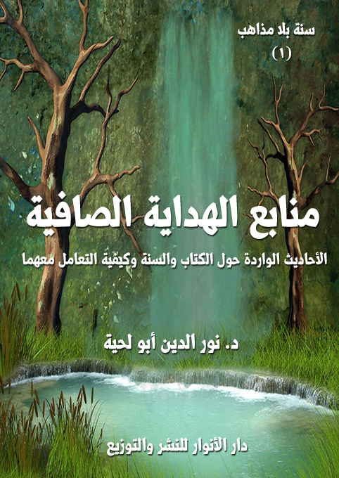

الكتاب: منابع الهداية الصافية
الوصف: الأحاديث الواردة حول الكتاب والسنة وكيفية التعامل معهما
السلسلة: سنة بلا مذاهب
المؤلف: أ.د. نور الدين أبو لحية
الناشر: دار الأنوار للنشر والتوزيع
الطبعة: الأولى، 1441 هـ
عدد الصفحات: 302
ISBN: 978-620-3-85876-1
لمطالعة الكتاب من تطبيق مؤلفاتي المجاني وهو أحسن وأيسر: هنا

التعريف بالكتاب
يحاول هذا الكتاب ـ كسائر أجزاء السلسلة ـ التمييز بين الأحاديث التي تتوافق وتتناسب مع المعاني والحقائق القرآنية، وغيرها من الأحاديث التي استعملت وسيلة لضربها وتشويهها وتحريفها، سواء ما ورد من ذلك في المصادر السنية أو الشيعية.
هو يقتصر على الأحاديث المرتبطة بمنابع الهداية الكبرى، والتي نص عليها قوله تعالى: {وَأَنْزَلْنَا إِلَيْكَ الذِّكْرَ لِتُبَيِّنَ لِلنَّاسِ مَا نُزِّلَ إِلَيْهِمْ} [النحل: 44]
وهي تشير إلى أن رسول الله صلى الله عليه وآله وسلم كلف بوظيفتين مرتبطتين بالهداية: إحداهما نقل الوحي الإلهي كما أنزل إليه إلى أمته، والثانية بيانه وتوضيحه وشرح كيفية تنفيذه.
وبذلك، فإن الأحاديث الواردة في هذا الباب في المصادر الحديثية المختلفة يمكن تصنيفها إلى صنفين:
أولهما: الأحاديث الواردة في فضل القرآن الكريم، وبيان ضرورة اتباعه، وأنه لا يمكن التحقق بالإسلام إلا من خلاله.
ثانيهما: الأحاديث الواردة في فضل السنة المطهرة، وأنها لا تقل عن القرآن الكريم من حيث وجوب الاتباع، ولو أنها تليه عند التنازع.
وقد خصصنا كل صنف بفصل خاص، جمعنا فيه نوعين من الأحاديث:
1. الأحاديث المقبولة لموافقتها للقرآن الكريم.
2. الأحاديث المردودة لمعارضتها له، مع بيان سبب المعارضة.
منابع الهداية الصافية (7)
تحاول هذه السلسلة أن تكون موسوعة شاملة لكل الأحاديث التي اصطلحنا على تلقيبها بـ[الأحاديث المقبولة]، وهي الموافقة للقرآن الكريم والعقل والفطرة والواقع، بغض النظر عن مدى صحتها سندا.
ولذلك؛ فإن انتقاءنا لها ليس قائما على أساس الدراسة السندية، والتي قد يقع الخلاف الشديد فيها، وإنما هو قائم على أساس دراسة المتون، وتحليل معانيها، وبيان مدى موافقتها للقرآن الكريم، والقيم التي جاء بها.
وأما غيرها مما لا نرى موافقته لها، فقد خصصنا لها مباحث ومطالب خاصة، تذكرها، وتبين سر رفضنا لها، مع ذكر المصادر التي وردت فيها.
بالإضافة إلى ذلك؛ فقد جمعنا في هذه الموسوعة أكبر عدد من الأحاديث الواردة في المصادر المختلفة للسنة النبوية بغض النظر عن الطائفة التي تنتمي إليها.. ذلك أن السنة المقبولة الموافقة للقرآن الكريم فوق الطوائف والمذاهب.. ولذلك تعاملنا معها مثل التعامل مع القرآن الكريم، والذي هو فوق الطوائف والمذاهب، ولهذا سميناها [سنة بلا مذاهب]
بالإضافة إلى ذلك كله، حاولنا تصنيف الأحاديث بحسب مواضيعها إلى ما يتناسب مع الواقع الفكري الجديد الذي نعيش فيه، وذلك على خلاف التصنيفات السابقة، والتي كانت تخضع إلى الأبواب الفقهية أو العقدية أو غيرها.
وقد خصصنا جزءا من السلسلة لكل تصنيف يشمل مواضيع ذات روابط واحدة، وذلك حتى لا يتحول الكتاب إلى أجزاء يصعب التعامل معها إلا للمختصين؛ فهذه السلسلة موجهة لعامة الناس، وليس للمتخصصين فقط، ذلك أنها تحاول أن تقرب إليهم السنة النبوية، وبطريقة بسيطة.
منابع الهداية الصافية (8)
بالإضافة إلى ذلك كله، حاولنا أن نجيب عن الشبهات المرتبطة ببعض الأحاديث التي يصعب تقبلها أو فهمها، لنبين مدى موافقتها للعقل والفطرة السليمة.
بناء على هذا كله وضعنا مجموعة ضوابط لقبول الأحاديث أو رفضها، وهي تتمثل في الضوابط السبعة التالية:
أولا. قبول كل المصادر الحديثية
مهما كانت مدرستها، ذلك أن السنة النبوية أعظم من أن تحتكرها أي طائفة من الطوائف؛ فهي ـ مثل القرآن الكريم ـ حق الأمة جميعا، ولهذا وجب احترام كل كتاب يتضمن أحاديث رسول الله صلى الله عليه وآله وسلم حتى لو لم يكن فيه إلا حديث صحيح واحد، ذلك أن ذلك الحديث الواحد لا يختلف عن الآيات القرآنية في قدسيته ووجوب تعظيمه.
ولهذا أنكرنا في مواضع كثيرة على من يتجرأ على كتب الحديث بمدارسها المختلفة.. كصحيحي البخاري ومسلم وسنن الترمذي والنسائي وابن ماجة وغيرها من كتب الحديث في المدرسة السنية.. أو كتاب الكافي في الأصول والفروع للكليني، أو تهذيب الأحكام والاستبصار للطوسي، أو من لا يحضره الفقيه للشيخ الصدوق.. وغيرها من كتب الحديث في المدرسة الشيعية.. أو مسند الربيع بن حبيب في المدرسة الإباضية.
فكتب الحديث هي المحال التي جمع فيها الحديث بصحيحه وضعيفه وموضوعه، ولذلك من الخطأ الكبير أن نسيء إلى مصدر كاملا للحديث النبوي بسبب بعض الأحاديث المردودة فيه.. بل لو لم يصح من كتاب كامل إلا حديث واحد لكان من الأدب مع رسول الله صلى الله عليه وآله وسلم أن نحترم ذلك الكتاب.
لهذا فإننا في هذه السلسلة في حال ردنا لبعض الأحاديث لا نتهم المصنفين، ولا الرواة؛ فذلك ليس من شأننا، وإنما نردها بناء على عدم موافقتها للأصول التي جاءت بها
منابع الهداية الصافية (9)
الشريعة، ونكل رواتها إلى الله تعالى، بل إننا لا نتعرض لهم أصلا؛ فقد اكتفينا في أكثر أحاديث السلسلة بذكر الأحاديث دون ذكر رواتها، وإنما نقتصر على ذكر مصادرها في الهوامش.
وأعيد هنا ما ذكرته في بعض كتبي من أن ردي لبعض الأحاديث الواردة في المصادر الحديثية المختلفة (ليس ناشئا عن اعتقادي أن رسول الله صلى الله عليه وآله وسلم قالها أو فعلها؛ فذلك عين الضلال، بل عين الكفر؛ فمن يتجرأ على تكذيب رسول الله صلى الله عليه وآله وسلم لا يبقى له من الإسلام شيء.. ومثل ذلك فإني لا أتهم الصحابي الذي روى الحديث، لأن الحديث لم نسمعه من الصحابة مباشرة، وإنما ورد إلينا عن طريق طويل قد يختلط فيه الحابل بالنابل، والمحق من المبطل.. ومثل ذلك لا أتهم صاحب الكتاب الذي ورد فيه الحديث، لأن أكثر المحدثين كانوا يجمعون الأحاديث، ويتركون المواقف منها ومن فهمها للفقهاء والمفسرين وغيرهم.. ومثل ذلك لا أتهم أي راو من الرواة بأنه هو من وضع الحديث لأن ذلك غيب.. والله أعلم به) (1)
وقد ذكرت فيه أن كل الذي أفعله هو أني أعرض الحديث على القرآن الكريم والفطرة الصافية، والعقل السليم. فإن وجدت الحديث موافقا لها، قلت به، وصدقته حتى لو كان راويه متهما بالضعف، وكل حديث مخالف لذلك أنكرته ونقدته حتى لو كان الراوي قد وُثّق من الجميع..
وسبب ذلك هو اعتقادي أنه من الصعوبة، بل من المحال التوثيق المطلق والتضعيف المطلق لأي راو، فقد قال تعالى لرسول الله صلى الله عليه وآله وسلم في شأن المنافقين: {وَمِمَّنْ حَوْلَكُمْ مِنَ الْأَعْرَابِ مُنَافِقُونَ وَمِنْ أَهْلِ الْمَدِينَةِ مَرَدُوا عَلَى النِّفَاقِ لَا تَعْلَمُهُمْ نَحْنُ نَعْلَمُهُمْ} [التوبة:
__________
(1) رسول الله والقلوب المريضة (ص: 9)
منابع الهداية الصافية (10)
101]، فإن كان رسول الله صلى الله عليه وآله وسلم يخفى عليه ـ بحسب الآية الكريمة ـ بعض المنافقين، فكيف لا يخفى على ابن معين أو ابن أبي حاتم أو البخاري بعض الرواة الذين تسللوا لكتب الحديث، ليجعلوها وسيلة لتحريف الدين وتشويه قيمه.
ثانيا. استبعاد الأحاديث الموقوفة على الصحابة
والتي يذكرونها بناء على اجتهادهم، أما تلك التي تشبه الأحاديث المرفوعة لرسول الله صلى الله عليه وآله وسلم، والتي يذكر العلماء عادة أن لها حكم الرفع؛ فإنا نضمها إلى المرفوعات إلى رسول الله صلى الله عليه وآله وسلم، وذلك لاعتبارين:
أولهما: أن مفهوم الصحبة طرأ عليه ما طرأ على الكثير من القضايا، حيث تحولت ـ بسبب الخلاف مع الشيعة خصوصا ـ إلى نوع من القداسة التي لم يدل الدليل عليها، لا من القرآن الكريم، ولا من السنة، ولا من الفطرة السليمة.
ذلك أن مفهوم الصحبة ـ حسبما اتفق عليه البشر ـ لا يقصد منه إلا ذلك الذي داوم على التواصل مع صاحبه، وعرف الكثير عنه، بحيث يمكن الاستفادة منه عند محاولة التعرف عليه، أما ذلك الذي لم يحظ بهذا النوع من الصحبة، فلا يمكن تلقيبه بها.
وللأسف، نجد المؤرخين للصحابة يضعون كل قوم رسول الله صلى الله عليه وآله وسلم من بينهم، وكيف لا يفعلون ذلك، وقد عرف البخاري الصحابي: (بأنه من صحب النبي صلى الله عليه وآله وسلم أو رآه من المسلمين) (1)، ومثله علي بن المديني الذي يذكر (بأنه من صحب النبي صلى الله عليه وآله وسلم أو رآه ولو ساعة من نهار) (2)، ومثلهما الإمام أحمد الذي عرف الصحابي بأنه (كل من صحبه سنةً أو شهراً أو يوماً أو ساعةً أو رآه فله من الصحبة على قدر ما صحبه وكانت سابقته معه، وسمع منه،
__________
(1) صحيح البخاري 4/ 188.
(2) انظر: طبقات الحنابلة لأبي يعلى 1/ 243.
منابع الهداية الصافية (11)
ونظر إليه) (1)
ومثلهم جميعا ابن تيمية الذي عرف الصحبة بأنها (اسم جنس تقع على من صحب النبي صلى الله عليه وآله وسلم سنةً أو شهراً أو يوماً أو ساعةً أو رآه مؤمناً، فله من الصحبة بقدر ذلك فقد علق النبي صلى الله عليه وآله وسلم الحكم بصحبته وعلق برؤيته، وجعل فتح الله على المسلمين بسبب من رآه مؤمناً به. وهذه الخاصية لا تثبت لأحدٍ غير الصحابة؛ ولو كانت أعمالهم أكثر من أعمال الواحد من أصحابه صلى الله عليه وآله وسلم) (2)
وهذا مخالف للقرآن الكريم؛ فالله تعالى أثنى فيه على المهاجرين والأنصار، والسابقين الصادقين غير المغيرين ولا المبدلين، ولم يثن على كل من رأى رسول الله صلى الله عليه وآله وسلم، أو أسلم متأخرا، ولم يظفر بشرف الصحبة الطويلة، أو كان من الطلقاء الذين لم يسلموا إلا بعد أن رأوا انتصارات رسول الله صلى الله عليه وآله وسلم.
ثانيهما: أن هناك خلافا بين أعلام المدرسة السنية في مدى قبول قول الصحابي، ومن الأقوال التي حكيت في ذلك (3):
القول الأول: أن قول الصحابي حجة، وهو القول المنسوب للإمام مالك والشافعي في القديم، وأنكر ابن القيم أن يكون للشافعي قولاً جديداً غيره، وهو القول الذي ذكره الشافعي في كتاب اختلافه مع مالك وهو من كتبه الجديدة كما ذكر العلائي وهو إحدى الروايتين عن أحمد أومأ إليها في عدة روايات، واختاره من الحنابلة القاضي أبو يعلى وابن القيم وانتصر له في كتابه إعلام الموقعين، ونسب هذا القول السرخسي للحنفية.
القول الثاني: أن قول الصحابي ليس بحجة، وهو الرواية الثانية عن أحمد أومأ إليه
__________
(1) تحقيق الرتبة لمن ثبت له شريف الصحبة، ص 30 - 35.
(2) انظر: مجموع الفتاوى، ابن تيمية، 4/ 464.
(3) انظر: مختصر حجية قول الصحابي وأثرها في المسائل الفقهية، أحمد الجميلي، ص 2.
منابع الهداية الصافية (12)
في رواية أبي داود، وهو المشهور عن الشافعية أنه قول الشافعي في الجديد، وهو قول أكثر أتباعه كالغزالي والآمدي، وبهذا قال بعض الحنفية كالكرخي والدبوسي، وهو قول أهل الظاهر والمعتزلة.
القول الثالث: أن قول أحد الخلفاء الأربعة فقط حجة وأما بقية الصحابة فليس قولهم حجة.
القول الرابع: أن قول أبي بكر وعمر حجة دون بقية الصحابة.
القول الخامس: أن قول الصحابي حجة إذا وافق القياس، وأشار إليه الشافعي في الرسالة فيما إذا اختلفت أقوال الصحابة ونسبه إليه الباقلاني في الجديد نقلاً عن المزني كما نسبه إليه القاضي حسين وابن القطان واختاره ابن القطان.
القول السادس: أن قول الصحابي حجة إذا خالف القياس، وبه قال الغزالي في المنخول وابن برهان في الوجيز.
وقد رد الشوكاني على من يقول بحجية قول الصحابي بشدة، وذلك بعد إيراده الخلاف في (قول الصحابي هل هو حجة أم لا؟)، فقد قال: (والحق: أنه ليس بحجة، فإن الله سبحانه لم يبعث إلى هذه الأمة إلا نبينا محمدا صلى الله عليه وآله وسلم، وليس لنا إلا رسول واحد، وكتاب واحد، وجميع الأمة مأمورة باتباع كتابه، وسنة نبيه، ولا فرق بين الصحابة وبين من بعدهم، في ذلك، فكلهم مكلفون بالتكاليف الشرعية، وباتباع الكتاب والسنة، فمن قال: إنها تقوم الحجة في دين الله عز وجل بغير كتاب الله، وسنة رسوله، وما يرجع إليهما، فقد قال في دين الله بمالم يثبت، وأثبت في هذه الشريعة الإسلامية شرعا لم يأمر الله به، وهذا أمر عظيم، وتقول بالغ، فمن حكم لفرد أو أفراد من عباد الله بأن قوله، أو أقوالهم حجة على المسلمين يجب عليهم العمل بها وتصير شرعا ثابتا متقررا تعم به البلوى، مما لا يدان الله عز وجل به،
منابع الهداية الصافية (13)
ولا يحل لمسلم الركون إليه، ولا العمل عليه، فإن هذا المقام لم يكن إلا لرسل الله، الذين أرسلهم بالشرائع إلى عباده لا لغيرهم، وإن بلغ في العلم والدين عظم المنزلة أي مبلغ) (1)
ثم ختم بقوله: (فاعرف هذا، واحرص عليه، فإن الله لم يجعل إليك وإلى سائر هذه الأمة رسولا إلا محمدا صلى الله عليه وآله وسلم، ولم يأمرك باتباع غيره، ولا شرع لك على لسان سواه من أمته حرفا واحدا، ولا جعل شيئا من الحجة عليك في قول غيره، كائنا من كان) (2)
ثالثا. قبول الاحاديث المروية عن أئمة الهدى
وذلك للاعتبارات التالية:
1. أن جميع الأمة متفقة على اعتبارهم جميعا من الأئمة والعلماء والصالحين، وأنهم أولى الناس بلقب [العترة الطاهرة]، و[آل بيت النبوة]، ولم يخالف في ذلك إلا النواصب الذين تتفق الأمة على بدعيتهم وضلالهم.
2. أن الشيعة يعتبرون أحاديث أئمة الهدى تابعة للسنة النبوية، إما مباشرة، لكونهم كانوا يذكرون أحاديثه من دون رفعها إليه صلى الله عليه وآله وسلم، مثلما كان يفعل الكثير من الصحابة، كما ذكر ذلك الإمام الصادق في قوله: (حديثي حديث أبي، وحديث أبي حديث جدّي، وحديث جدّي حديث الحسين، وحديث الحسين حديث الحسن، وحديث الحسن حديث أميرالمؤمنين، وحديث أميرالمؤمنين حديث رسول الله صلى الله عليه وآله وسلم وحديث رسول الله صلى الله عليه وآله وسلم قول الله عزّوجلّ) (3)
وروي أنه قيل له: (أسمع الحديث فلا أدري منك سماعه أو من أبيك؟)، قال: (ما
__________
(1) إرشاد الفحول إلى تحقيق الحق من علم الأصول، محمد بن علي الشوكاني، ج 2، ص 188.
(2) المرجع السابق، ج 2، ص 189.
(3) بحار الأنوار (2/ 179)
منابع الهداية الصافية (14)
سمعته مني فاروه عن رسول الله صلى الله عليه وآله وسلم) (1)
وقال: (والله لولا أنّ الله فرض ولايتنا ومودتنا وقرابتنا، ما أدخلناكم بيوتنا، ولا أوقفناكم على أبوابنا، والله ما نقول بأهوائنا، ولا نقول برأينا، ولا نقول إلا ما قال ربنا) (2)
وقيل له: (بأي شيء يفتي الإمام؟)، قال: بالكتاب، قيل: فما لم يكن في الكتاب؟.. قال: بالسنّة، قيل: فما لم يكن في الكتاب والسنّة؟.. قال: (ليس شيءٌ إلا في الكتاب والسنّة) (3)
وقال: (عجبا للناس يقولون: أخذوا علمهم كله عن رسول الله صلى الله عليه وآله وسلم فعملوا به واهتدوا، ويرون أنّا أهل البيت لم نأخذ علمه ولم نهتد به، ونحن أهله وذريّته، في منازلنا أُنزل الوحي، ومن عندنا خرج إلى الناس العلم أفتراهم علموا واهتدوا وجهلنا وضللنا؟!.. إنّ هذا محال) (4)
وقبله قال الإمام الباقر: (يا جابر.. لو كنا نفتي الناس برأينا وهوانا، لكنّا من الهالكين، ولكنا نفتيهم بآثار من رسول الله صلى الله عليه وآله وسلم وأصول علم عندنا، نتوارثها كابراً عن كابر، نكنزها كما يكنز هؤلاء ذهبهم وفضتهم) (5)
وقال: (إنّا على بيّنة من ربنا، بيّنها لنبيّه صلى الله عليه وآله وسلم فبيّنها نبيه لنا، فلولا ذلك كنا كهؤلاء الناس) (6)
وقال: (إنّ رسول الله صلى الله عليه وآله وسلم دعا عليا في المرض الذي توفي فيه فقال: (يا علي.. ادن مني
__________
(1) بحار الأنوار: 2/ 161.
(2) بحار الأنوار: 2/ 173.
(3) بحار الأنوار (2/ 175)
(4) بحار الأنوار: 2/ 179.
(5) بحار الأنوار: 2/ 172.
(6) بحار الأنوار: 2/ 173.
منابع الهداية الصافية (15)
حتى أسرّ إليك ما أسرّ الله إليّ، وأئتمنك على ما ائتمنني الله عليه، ففعل ذلك رسول الله صلى الله عليه وآله وسلم بالإمام علي، وفعله الإمام علي بالإمام الحسن، وفعله الإمام الحسن بالحسين وفعله الحسين بأبي، وفعله أبي بي) (1)
3. ما ورد في الحديث الذي يشير إليهم، ويوصي بسنتهم على اعتبار أنها امتداد لسنته، وهوقوله صلى الله عليه وآله وسلم: (أوصيكم بتقوى الله، والسمع والطاعة، وإن تأمَّر عليكم عبدٌ، وإنَّه من يعش منكم بعدي فسيرى اختلافاً كثيراً؛ فعليكم بسنتي وسنة الخلفاء الراشدين المهديين عضُّوا عليها بالنواجذ، وإيَّاكم ومحدثات الأمور؛ فإنَّ كل بدعة ضلالة) (2)
ولا يصح تطبيق الاصطلاح التاريخي لـ[الخلفاء الراشدين] هنا، لأن الخلافة المقصودة هنا مشترطة بما ورد في الأحاديث الأخرى من شروط، وأولها كونهم من العترة التي أوصى بها رسول الله صلى الله عليه وآله وسلم، كما سنرى ذلك بتفصيل في الجزء الثاني من هذه السلسلة.
بالإضافة إلى ذلك، فقد ورد في الحديث قوله صلى الله عليه وآله وسلم: (فإنه من يعش منكم فسيرى اختلافا كثيرا، فعليكم بسنتي وسنة الخلفاء الراشدين المهديين)؛ وذلك يدل على أن هؤلاء الخلفاء الراشدين سيظهرون عند الاختلاف والفرقة والفتنة، وهو يشير إلى إعراض الناس عنهم، ولذلك دعا إلى التمسك بهم، وهو على خلاف ما كان عليه الخلفاء التاريخيين الثلاثة الذين كان الأمر بأيديهم.
رابعا. عرض الأحاديث على القرآن الكريم
وذلك ليس تهوينا أو إنزالا من قيمة السنة النبوية، أو عدم اعتبارها، فهي صنو القرآن الكريم، ولكنا نفعل ذلك بناء على الاعتبارات التالية:
__________
(1) بحار الأنوار: 2/ 174.
(2) رواه أبو داود (2/ 611) حديث (4607)، والترمذي (5/ 44) حديث (2676)
منابع الهداية الصافية (16)
ذلك أن القرآن الكريم قطعي الثبوت، بسبب تواتره، واتفاق الأمة عليه، بخلاف ما ورد من روايات في السنة المطهرة؛ فأكثرها ورد عن طريق الآحاد، ولهذا يمكن أن يكون فيها الضعيف والموضوع، حتى لو ورد عن طريق من نعتبرهم ثقاة؛ وذلك لأنه يمكن أن يدلسوا أو يخطئوا أو يسهوا.. أو يتستروا بالوثاقة ليدسوا في الدين ما ليس منه.
ولهذا؛ فإن رد الأحاديث بسبب مخالفتها للقرآن الكريم ليس ردا للحديث نفسه، وإنما هو تكذيب لرواته، بناء على استحالة مخالفة رسول الله صلى الله عليه وآله وسلم لما أوحي إليه.
2. ما ورد في مركزية القرآن الكريم ومرجعيته
ذلك أن الله تعالى اعتبر [الكتاب] هو المرجع الذي يصير إليه المؤمنون عند التنازع، ولذلك إن حصل الخلاف بين الحديث والقرآن، كان القاضي هو القرآن الكريم.
وقد اعتبر الله تعالى هذا قانونا في جميع الأديان، قال تعالى: {كَانَ النَّاسُ أُمَّةً وَاحِدَةً فَبَعَثَ اللَّهُ النَّبِيِّينَ مُبَشِّرِينَ وَمُنْذِرِينَ وَأَنْزَلَ مَعَهُمُ الْكِتَابَ بِالْحَقِّ لِيَحْكُمَ بَيْنَ النَّاسِ فِيمَا اخْتَلَفُوا فِيهِ} [البقرة: 213]
وأنكر على المخالفين لهذا، فقال: {أَلَمْ تَرَ إِلَى الَّذِينَ أُوتُوا نَصِيبًا مِنَ الْكِتَابِ يُدْعَوْنَ إِلَى كِتَابِ اللَّهِ لِيَحْكُمَ بَيْنَهُمْ ثُمَّ يَتَوَلَّى فَرِيقٌ مِنْهُمْ وَهُمْ مُعْرِضُونَ} [آل عمران: 23]
وأشار إلى أن ما حصل من تبديل وتحريف للأديان كان بسبب تعطيل الكتب، والاكتفاء بتلاوتها مع عدم تفعيل ما فيها، فقال: {وَقَالَتِ الْيَهُودُ لَيْسَتِ النَّصَارَى عَلَى شَيْءٍ وَقَالَتِ النَّصَارَى لَيْسَتِ الْيَهُودُ عَلَى شَيْءٍ وَهُمْ يَتْلُونَ الْكِتَابَ كَذَلِكَ قَالَ الَّذِينَ لَا يَعْلَمُونَ مِثْلَ قَوْلِهِمْ فَاللَّهُ يَحْكُمُ بَيْنَهُمْ يَوْمَ الْقِيَامَةِ فِيمَا كَانُوا فِيهِ يَخْتَلِفُونَ} [البقرة: 113]
وهكذا دعا هذه الأمة إلى تحكيم كتابها في كل خلاف تقع فيه، قال تعالى: {وَمَا
منابع الهداية الصافية (17)
اخْتَلَفْتُمْ فِيهِ مِنْ شَيْءٍ فَحُكْمُهُ إِلَى اللَّهِ} [الشورى: 10]
بالإضافة إلى ذلك، فقد ذكر أن دور رسول الله صلى الله عليه وآله وسلم مرتبط ببيان القرآن الكريم، إما عبر تأكيد ما ورد فيه، أو بيان كيفية تنفيذه، وبذلك فإنه يستحيل أن يتعارض الشرح مع المشروح، لأن كليهما وحي إلهي، وقد قال الله تعالى: {أَفَلَا يَتَدَبَّرُونَ الْقُرْآنَ وَلَوْ كَانَ مِنْ عِنْدِ غَيْرِ اللَّهِ لَوَجَدُوا فِيهِ اخْتِلَافًا كَثِيرًا} [النساء: 82]
وفي الحديث عن عبد الله بن عمرو قال: كان قومٌ على باب رسول الله صلى الله عليه وآله وسلم يتنازعون في القرآن، فخرج عليهم يوما متغيرا وجهه فقال: (يا قوم، بهذا أهلكت الأمم، وإن القرآن يصدق بعضه بعضا، فلا تكذبوا بعضه ببعض) (1)
3. ما ورد من الحديث في عرض الحديث على القرآن الكريم
وهي موجودة في المصادر السنية والشيعية، وسنوردها هنا، مع بيان موقف العلماء منها:
من الأحاديث الواردة في المصادر السنية، والتي تدعو إلى عرض الحديث على القرآن الكريم، إما صراحة، أو إشارة وإيماء:
[الحديث: 1] قوله صلى الله عليه وآله وسلم: (إن الحديث سيفشو عني، فما أتاكم عني يوافق القرآن فهو عني، وما أتاكم عني يخالف القرآن فليس عني) (2)
[الحديث: 2] قوله صلى الله عليه وآله وسلم: (ما جاءكم عني فاعرضوه على كتاب الله فما وافقه فأنا قلته، وما خالفه فلم أقله) (3)
__________
(1) رواه الطبراني في (الأوسط) 3/ 227 (2995)
(2) البيهقي في (معرفة السنن والآثار)، (1/ 9) ورواه ابن المقرئ في معجمه، (3/ 239)
(3) رواه البيهقي في (معرفة السنن والآثار)، (1/ 116)
منابع الهداية الصافية (18)
[الحديث: 3] قوله صلى الله عليه وآله وسلم: (إني والله لا يمسك الناس علي بشيء إلا أني لا أحل إلا ما أحل الله في كتابه ولا أحرم إلا ما حرم الله في كتابه) (1)
[الحديث: 4] قوله صلى الله عليه وآله وسلم: (ستكون علي رواة يروون الحديث، فأعرضوا القرآن، فإن وافقت القرآن فخذوها وإلا فدعوها) (2)
[الحديث: 5] قوله صلى الله عليه وآله وسلم: (سيأتيكم عني أحاديث مختلفة، فما جاءكم موافقًا لكتاب الله ولسنتي فهو مني) (3)
[الحديث: 6] قوله صلى الله عليه وآله وسلم: (إني سألت قوما من اليهود عن موسى فحدثوني حتى كذبوا عليه، وسألت قوما من النصارى عن عيسى فحدثوني حتى كذبوا عليه، وإنه سيكثر عليَّ من بعدي كما كثر على من قبلي من الأنبياء، فما حدثتم عني بحديث فاعتبروه بكتاب الله، فما وافق كتاب الله فهو من حديثي، وإنما هدى الله نبيه بكتابه، وما لم يوافق كتاب الله فليس من حديثي) (4)
[الحديث: 7] قوله صلى الله عليه وآله وسلم: (سئلت اليهود عن موسى فأكثروا وزادوا ونقصوا حتى كفروا، وسئلت النصارى عن عيسى فأكثروا فيه وزادوا ونقصوا حتى كفروا، وإنه سيفشو عني أحاديث فما أتاكم من حديثي فاقرأوا كتاب الله واعتبروه، فما وافق كتاب الله فأنا قلته وما لم يوافق كتاب الله فلم أقله) (5)
[الحديث: 8] قوله صلى الله عليه وآله وسلم: (ألا إن رحى الإسلام دائرة)، قيل: فكيف نصنع يا رسول
__________
(1) رواه الشافعي في مسنده، (1/ 129)، رقم (116)، والبيهقي في (معرفة السنن والآثار)، (3/ 360)، رقم (1155)
(2) تاريخ ابن عساكر 55/ 77.
(3) الكفاية في علم الرواية 1/ 130، وسنن الدارقطني 4/ 208.
(4) مسند الروياني 2/ 255.
(5) الطبراني 12/ 316 رقم 13224.
منابع الهداية الصافية (19)
الله؟ قال: (اعرضوا حديثي على الكتاب فما وافقه فهو مني وأنا قلته) (1)
[الحديث: 9] قوله صلى الله عليه وآله وسلم: (إنه سيأتي ناس يحدثون عني حديثا، فمن حدثكم حديثا يضارع القرآن فأنا قلته، ومن حدثكم حديثا لا يضارع القرآن فلم أقله) (2)
[الحديث: 10] قوله صلى الله عليه وآله وسلم: (أيما حديث بلغكم عني تعرفونه بكتاب الله فاقبلوه، وأيما حديث بلغكم عني لا تجدون في القرآن موضعه ولا تعرفون موضعه فلا تقبلوه) (3)
ومن الأحاديث الموقوفة على الصحابة في هذا ما روي عن معاذ أنه قال: (إنه يفتح القرآن على الناس حتى تقرأه المرأة والصبي، والرجل فيقول الرجل قرأت القرآن فلم أتبع، ثم يقوم به فيهم فلا يتبع، ثم يحتظر في بيته مسجدا فلا يتبع، فيقول قد قرأت القرآن فلم أتبع وقمت به فلم أتبع، واختظرت في بيتي مسجدا فلم أتبع، والله لآتينهم بحديث لا يجدونه في كتاب الله ولم يسمعوه عن رسوله لعلي أتبع)، قال معاذٌ: (فإياكم وما جاء به فإنه ضلالةٌ) (4)
بالإضافة إلى هذا؛ فقد وردت الشواهد الكثيرة التي تؤيد تلك الأحاديث، ومنها ما روي عن معاذ بن جبل أنه قال: ذكر رسول الله صلى الله عليه وآله وسلم الفتنة فعظمها وشددها، فقال علي بن أبي طالب: فما المخرج منها؟ قال: (كتاب الله فيه حديث ما قبلكم، ونبأ ما بعدكم، وفصل ما بينكم من يتركه من جبار يقصمه الله، ومن يبتغ الهدى من غيره يضله الله، وهو حبل الله المتين، والذكر الحكيم، والصراط المستقيم، وهو الذي لما سمعته الجن، قالوا: {إِنَّا سَمِعْنَا قُرْآنًا عَجَبًا (1) يَهْدِي إِلَى الرُّشْدِ فَآمَنَّا بِهِ} [الجن: 1، 2]، وهو الذي لا تختلف به الألسن،
__________
(1) المعجم الكبير 2/ 97.
(2) رواه البيهقي كما في [مفتاح الجنة للسيوطي 1/ 22].
(3) رواه البيهقي كما في [مفتاح الجنة للسيوطي 1/ 22].
(4) رواه الدارمي (199)
منابع الهداية الصافية (20)
ولا يخلقه كثرة الرد) (1)
ومنها ما روي من رد الصحابة لبعض الأحاديث لمخالفتها القرآن الكريم، ومن الأمثلة على ذلك ما روي من رد عائشة ما رواه أبو هريرة مرفوعا إلى رسول الله صلى الله عليه وآله وسلم أنه قال: (إنما الطيرة في المرأة، والدابة، والدار)، فردت عليه بغضب شديد، وصفه الراوي بقوله: (فطارت شقة منها في السماء، وشقة في الأرض)، ثم قالت: (والذي أنزل القرآن على أبي القاسم ما هكذا كان يقول، ولكن نبي الله صلى الله عليه وآله وسلم كان يقول: (كان أهل الجاهلية يقولون: الطيرة في المرأة والدار والدابة، ثم قرأت عائشة: {مَا أَصَابَ مِنْ مُصِيبَةٍ فِي الْأَرْضِ وَلَا فِي أَنْفُسِكُمْ إِلَّا فِي كِتَابٍ مِنْ قَبْلِ أَنْ نَبْرَأَهَا إِنَّ ذَلِكَ عَلَى اللَّهِ يَسِيرٌ} [الحديد: 22]) (2)
ومنها ما روي عن رد عائشة لحديث ابن عمر الذي يقول فيه: (إن الميت ليعذب ببكاء أهله عليه)، حيث قال: وهل ـ يعني ابن عمر ـ إنما مر رسول الله صلى الله عليه وآله وسلم على قبر فقال: (إن صاحب هذا القبر ليعذب وأهله يبكون عليه)، ثم قرأت قوله تعالى: {وَلَا تَزِرُ وَازِرَةٌ وِزْرَ أُخْرَى} [الأنعام: 164]) (3)
ومنها ما روي عن أبى إسحاق قال: كنت فى المسجد الجامع مع الأسود بن يزيد ومعنا الشعبى فحدث الشعبى بحديث فاطمة بنت قيس أن النبى صلى الله عليه وآله وسلم لم يجعل لها سكنى ولا نفقة فقال الأسود: أتت فاطمة بنت قيس عمر ابن الخطاب فقال: (ما كنا لندع كتاب ربنا
__________
(1) أمالي أبي طالب ص 250، وحلية الأولياء 5/ 253، ومصنف ابن أبي شيبة 6/ 125 رقم 30007، ومسند البزار 3/ 72.
(2) رواه أحمد: 6/ 150 وفي 6/ 240 وفي 6/ 246..
(3) أبو داود (3129)، والنسائي في المجتبى 4/ 17، والطبراني في الكبير (13262).
منابع الهداية الصافية (21)
وسنة نبينا لقول امرأة لا ندرى أحفظت أم لا، المطلقة ثلاثا لها السكنى والنفقة) (1)
وهو يقصد بذلك قوله تعالى: {لاَ تُخْرِجُوهُنّ مِن بُيُوتِهِنّ وَلاَ يَخْرُجْنَ إِلاّ أَن يَأْتِينَ بِفَاحِشَةٍ مّبَيّنَةٍ} [الطلاق:1]
وللأسف؛ فإن كبار أعلام المدرسة السنية لم يفعّلوا هذه الأحاديث، بل اتهموا الأحاديث الداعية إلى عرض الحديث على القرآن، وذلك ما جعلهم يقعون أحيانا كثيرة في تقديم أحاديث آحاد على القرآن الكريم نفسه، ونسخه، بل تعطيله بسببها، كما سنرى ذلك في كل أجزاء السلسلة عند ذكر الأحاديث المردودة.
ومن أقوالهم في رفض هذا الاعتبار، والأحاديث التي تسانده قول ابن بطة ـ بعد عرض بعض تلك الأحاديث ـ: (قال ابن الساجي: قال أبي رحمه الله: هذا حديث موضوع عن النبي صلى الله عليه وآله وسلم قال: وبلغني عن علي بن المديني، أنه قال: ليس لهذا الحديث أصل، والزنادقة وضعت هذا الحديث) (2)
ثم علق على ذلك بقوله: (وصدق ابن الساجي، وابن المديني رحمهما الله، لأن هذا الحديث كتاب الله يخالفه، ويكذب قائله وواضعه، والحديث الصحيح، والسنة الماضية عن رسول الله صلى الله عليه وآله وسلم ترده قال الله عز وجل: {فَلَا وَرَبِّكَ لَا يُؤْمِنُونَ حَتَّى يُحَكِّمُوكَ فِيمَا شَجَرَ بَيْنَهُمْ ثُمَّ لَا يَجِدُوا فِي أَنْفُسِهِمْ حَرَجًا مِمَّا قَضَيْتَ وَيُسَلِّمُوا تَسْلِيمًا} [النساء: 65]، والذي أمرنا الله عز وجل أن نسمع ونطيع، ولا نضرب لمقالته عليه السلام المقاييس، ولا نلتمس لها المخارج، ولا نعارضها بالكتاب، ولا بغيره، ولكن نتلقاها بالإيمان والتصديق والتسليم إذا صحت بذلك الرواية) (3)
__________
(1) الدارمى (2/ 218، رقم 2274)، وأبو داود (2/ 288، رقم 2291).
(2) الإبانة الكبرى لابن بطة (1/ 266)
(3) الإبانة الكبرى لابن بطة (1/ 266)
منابع الهداية الصافية (22)
وقال ابن عبد البر: (وهذه الألفاظ لا تصح عنه صلى الله عليه وآله وسلم عند أهل العلم بصحيح النقل من سقيمه وقد عارض هذا الحديث قوم من أهل العلم فقالوا: نحن نعرض هذا الحديث على كتاب الله قبل كل شيء ونعتمد على ذلك، قالوا: فلما عرضناه على كتاب الله عز وجل وجدناه مخالفا لكتاب الله؛ لأنا لم نجد في كتاب الله ألا نقبل من حديث رسول الله صلى الله عليه وآله وسلم إلا ما وافق كتاب الله، بل وجدنا كتاب الله يطلق التأسي به والأمر بطاعته ويحذر المخالفة عن أمره جملة على كل حال) (1)
لكن هناك من قبلها؛ فمن أعلام الحنفية القائلين بهذا السرخسي الذي احتج بحديث العرض، وقال: (إذا كان الحديث مخالفا لكتاب الله تعالى فإنه لا يكون مقبولا ولا حجة للعمل به.. فالكتاب متيقن به، وفي اتصال الخبر الواحد برسول الله صلى الله عليه وآله وسلم شبهة، فعند تعذر الأخذ بهما لا بد من أن يؤخذ بالمتيقن ويترك ما فيه شبهة) (2)
وقال الجصاص: (فمن العلل التي يرد بها أخبار الآحاد عند أصحابنا ما قاله عيسى بن أبان: ذكر أن خبر الواحد يرد لمعارضته السنة الثابتة إياه، أو أن يتعلق القرآن بخلافه فيما لا يحتمل المعاني) (3)
وقال السمعاني: (ذهب جماعة من أصحاب أبي حنيفة إلى أنه يجب عرض خبر الآحاد على الكتاب، فإن لم يكن في الكتاب ما يدل على خلافه قبل وإلا فيرد، وذهب إلى هذا كثير من المتكلمين) (4)
وقال أبو المحاسن الحنفي: (والحاصل أن الحديث المروي إذا وافق الشرع وصدقه
__________
(1) جامع بيان العلم وفضله (4/ 17)
(2) أصول السرخسي 1/ 365، 2/ 68.
(3) الفصول في الأصول 3/ 113.
(4) قواطع الأدلة 1/ 365.
منابع الهداية الصافية (23)
القرآن وجب تصديقه) (1)
ومن أعلام الشافعية إمام الحرمين الجويني الذي قال: (إذا تعارض ظاهران أحدهما منقول تواترا، والآخر منقول آحادا؛ فالمتواتر يقدم، فليكن الأمر كذلك في تقديم الكتاب على السنة) (2)
وقال أبو إسحق الشيرازي: (إذا روى الخبر ثقة رد بأمور ذكر منها: أن يخالف نص كتاب أو سنة متواتر، ة فيعلم أنه لا أصل له أو منسوخ) (3)
وقال الشاشي: (شرط العمل بخبر الواحد ألا يكون مخالفا للكتاب والسنة المشهورة) (4)
وقال النووي: (ومتى خالف خبر الآحاد نص القرآن أو إجماعا وجب ترك ظاهره) (5)
ومن أعلام المالكية الشاطبي، فقد قال: (إن الكتاب مقطوع به، والسنة مظنونة، والقطع فيها إنّما يصحّ في الجملة لا في التفصيل، بخلاف الكتاب، فانه مقطوع به في الجملة والتفصيل، والمقطوع به مقدّم على المظنون، فلزم من ذلك تقديم الكتاب على السنة) (6)
وذكر بعض الأمثلة على ذلك، فقال: (وللمسألة أصل في عمل السلف، فقد ردت عائشة حديث: (إن الميت ليعذب ببكاء أهله عليه) بهذا الأصل نفسه لقوله: (أَلاّ تَزِرُ وَازِرَةٌ وِزْرَ أُخْرَىَ وَأَن لّيْسَ لِلإِنسَانِ إِلاّ مَا سَعَىَ) [النجم:38 - 39]، وردت حديث رؤية النبي
__________
(1) معتصر من المختصر 2/ 384.
(2) البرهان 1/ 1186.
(3) اللمع في أصول الفقه 172.
(4) الأصول 1/ 280.
(5) المجموع 4/ 285.
(6) الموافقات 4/ 7..
منابع الهداية الصافية (24)
صلى الله عليه وآله وسلم لربه ليلة الإسراء؛ لقوله: (لا تُدْرِكُهُ الأبْصَارُ) [الأنعام:103]، ورد عمر بن الخطاب حديث فاطمة بنت قيس حين روت أن زوجها لما طلقها ثلاثا لم يجعل لها النبي صلى الله عليه وآله وسلم نفقة ولا سكنى، وقال: (ما كنا لندع كتاب ربنا وسنة نبينا صلى الله عليه وآله وسلم لقول امرأة لا ندري لعلها حفظت أو نسيت، لها السكنى والنفقة، قال الله عز وجل: (لاَ تُخْرِجُوهُنّ مِن بُيُوتِهِنّ وَلاَ يَخْرُجْنَ إِلاّ أَن يَأْتِينَ بِفَاحِشَةٍ مّبَيّنَةٍ) [الطلاق:1]. وروي عن الزهري أنه قال: إن خير الأمور ما عرض على كتاب الله) (1)
وقد علق عليه بعض المتأخرين، فقال تعليقا على قوله: (ومن ذلك كلّه تعلم بطلان ماذهب إليه الشاطبي في الموافقات من أن رتبة السنة التأخر عن الكتاب في الاعتبار، وقد قلّده في ذلك بعض الكتّاب من المتأخرين في هذا الموضوع، وبالتقليد أغفل من أغفل) (2)
وهي كثيرة، ومحل اتفاق من جميع علماء الشيعة، ومن أحاديثهم فيها:
[الحديث: 11] روي أنه صلى الله عليه وآله وسلم أنه خطب الناس بمنى، فقال: (أيّها الناس، ما جاءكم عنّي يوافق كتاب الله فأنا قلته، وما جاءكم عنّي يخالف كتاب الله فلم أقله) (3)
[الحديث: 12] قوله صلى الله عليه وآله وسلم: (إن على كل حق حقيقة، وعلى كل صواب نورا، فما وافق كتاب الله فخذوه، وما خالف كتاب الله فدعوه) (4)
[الحديث: 13] قوله صلى الله عليه وآله وسلم: (إذا جاءكم حديث فاعرضوه على كتاب الله، فما وافق
__________
(1) الموافقات 3/ 18..
(2) الموافقات 4/ 7..
(3) الكافي، 1/ 69 ح 5.
(4) مستدرك الوسائل 17/ 325.
منابع الهداية الصافية (25)
كتاب الله فخذوه وما خالفه فاطرحوه، أو ردوه علينا) (1)
[الحديث: 14] ما روي عن الإمام علي أنه قال: (الوقوف عند الشبهة خيرٌ من الاقتحام في الهلكة، وتركك حديثا لم تروه خيرٌ من روايتك حديثا لم تحصه، إنّ على كل حقّ حقيقة، وعلى كل صواب نورا، فما وافق كتاب الله فخذوا به، وما خالف كتاب الله فدعوه) (2)
[الحديث: 15] ما روي عن الإمام علي أنه قال: (ما جاءتك رواية من بر أو فاجر توافق القرآن فخذ بها، وما جاءتك من رواية من بر أو فاجر تخالف القرآن فلا تأخذ بها) (3)
[الحديث: 16] ما روي أن الإمام الصادق سئل عن اختلاف الحديث (يرويه من نثق به، ومنهم من لا نثق به؟)، فقال: (إذا ورد عليكم حديث فوجدتم له شاهدا من كتاب الله، أو من قول رسول الله صلى الله عليه وآله وسلم، وإلا فالذي جاءكم به أولى به)
[الحديث: 17] ما روي عن الإمام الصادق أنه قال: (كل شي ء مردود إلى كتاب الله والسنة، فكل حديث لا يوافق كتاب الله فهو زخرف) (4)
وهذه الروايات هي التي جعلت علماء الشيعة يعتبرون كل كتبهم الحديثية محال للمناقشة والنقد لأي رجل بلغ درجة الاجتهاد من غير نكير عليه، وقد قال الشيخ المفيد في كتابه [تصحيح الاعتقاد]: (وكتاب الله تعالى مقدَّم على الأحاديث والروايات، وإليه يتقاضى في صحيح الأخبار وسقيمها، فما قضى به فهو الحقّ دون سواه) (5)
__________
(1) تهذيب الأحكام 7/ 225.
(2) بحار الأنوار: 2/ 165، وتفسير العياشي.
(3) البهبودي/صحيح الكافي/ج 1/ص 11.
(4) وسائل الشيعة 18/ 78..
(5) تصحيح الاعتقاد: 44.
منابع الهداية الصافية (26)
ولهذا نرى الشيعة رغم احترامهم الشديد لكتاب الكافي ولمؤلّفه محمّد بن يعقوب الكليني وشهادتهم له بتبحّره في علم الحديث، إلاّ أنهم لم يدّعوا بأنّ ما جمعه كلّه صحيح، بل إن من علماء الشيعة من طرح أكثر من نصفه، وقال بعدم صحتها، ومع ذلك لم يشاغب عليه مثلما يشاغب علينا بسبب الحديث والحديثين.
بل إنّ الشيخ الكليني نفسه لا يقول بصحّة كلّ الأحاديث التي جمعها في الكتاب، فقد ذكر في كتابه أن أئمة أهل البيت وضعوا قواعد لحلّ اختلاف الأخباركالعرض على القرآن، وأنّه سيعمل على هذا المنهاج، لكن مع هذا لم يدّع توفيقه لتدوين الآثار الصحيحة فقط، ولذا اعترف بالتقصير وقال له: (وقد يسّر الله تأليف ما سألت وأرجو أن يكون بحيث توخّيت، فمهما كان من تقصير فلم تقصر نيتنا في إهداء النصيحة)
إضافة إلى ذلك، فقد عقد في كتابه باباً بعنوان (الأخبار المتعارضة) أو (الأخبار المختلفة) وبيّن فيه أن الأئمة أمروا بالرجوع في هذه الحالة إلى القرآن أو المشهور أو غير ذلك، وذلك كله دليل على أنّه لا يشهد بصحة كتابه كله.
ومثل ذلك نرى موقف الزيدية؛ فهم متفقون مع إخوانهم من الإمامية في ذلك، فقد احتج الإمام زيد بن علي ببعض تلك الأحاديث في جواب له على من سأله من أهل المدينة حيث قال: (وكتبت تسألني عن رواة الصحابة للآثار عن الرسول صلى الله عليه وآله وسلم، وقلت: إنك قد نظرت في روايتهم فرأيت فيها ما يخالف الحق، فاعلم يرحمك الله أنه ما ذهب نبي قط من بين أمته إلاَّ وقد أثبت الله حججه عليهم؛ لئلا تبطل حجج الله وبيناته، فما كان من بدعة وضلالة فإنما هو من الحدث الذي كان من بعده، وإنه يكذب على الأنبياء صلوات الله عليهم وسلامه، وقد قال رسول الله صلى الله عليه وآله وسلم: (اعرضوا الحديث إذا سمعتموه على القرآن فما كان من القرآن فهو عني وأنا قلته، وما لم يكن على القرآن فليس عني ولم أقله، وأنا بريء
منابع الهداية الصافية (27)
منه) (1)
واحتج به الإمام القاسم بن إبراهيم (المتوفى 246 هـ)، فقد قال: (وقد قال رسول الله صلى الله عليه وآله وسلم: (أيها الناس قد كُذِبَ على الأنبياء الذين كانوا من قبلي، وسيكذب علي من بعدي، فما أتاكم فاعرضوه على كتاب الله، فإن وافق كتاب الله فهو مني، وإن لم يوافق كتاب الله فليس مني).. فكيف يدعونا رسول الله صلى الله عليه وآله وسلم ويأمرنا بشيء ليس لنا فيه النظر؟ لقوله: (اعرضوه على كتاب الله) (2)
واحتج به الإمام الهادي (المتوفى 298 هـ)، فقال: (وفي ذلك ما يروى عن النبي المصطفى عليه وآله أفضل صلاة أرحم الراحمين، من أنه قال: (سيكذب علي كما كذب علىَّ الأنبياء من قبلي، فما أتاكم عني فاعرضوه على كتاب الله، فما وافق كتاب الله فهو مني وأنا قلته، وما خالف كتاب الله فليس مني ولم أقله).. يريد صلى الله عليه وآله وسلم أن ما وافق الكتاب مما روي عنه من الأحكام، ومن شرائع الإسلام فإنه منه أخذ، وإنه جاء به عن الله، وما خالف الكتاب فليس من السنة التي جاء بها عن الله؛ لأن جميع الوحي الذي جاء عن الله سبحانه من السنة والقرآن، فهما شيئان متشابهان متفقان، لا يتضادان أبداً ولا يفترقان) (3)
واحتج به الإمام محمد بن يحيى المرتضى (المتوفى سنة 310 هـ)، فقال في مسائل عبد الله بن الحسن: (وسألت عن الحديث عن رسول الله صلى الله عليه وآله وسلم هل يخالف الكتاب؟ فقال: اعلم أن كل حديث صح عن رسول الله صلى الله عليه وآله وسلم فإنه غير مخالف للكتاب، بل الكتاب يشهد عليه بالحق وينطق فيه بالصدق، وفي ذلك ما يروي عنه عليه وآله السلام أنه قال: (يكذب علي كما كذب على الأنبياء من قبلي فما أتاكم عني فاعرضوه على كتاب الله، فما وافقه فهو عني
__________
(1) مجموع كتب ورسائل الإمام زيد 316.
(2) الرد على الروافض، ص 100.
(3) مجموع رسائل الإمام الهادي ص 480.
منابع الهداية الصافية (28)
وما خالفه فليس عني) (1)
وقال الإمام محمد بن القاسم الرسي في تفسيره: (فما وافق الكتاب وحقائقه قُبِلَ وصح عن رسول الله صلى الله عليه وآله وسلم، وعُلم أنه منه، وما خالف الكتاب علم أن رسول الله لم يقله، ولم يأت عنه) (2)
وقال الإمام المنصور عبدالله بن حمزة: (أن يكون الخبر سليم الإسناد من المطاعن، سليم المتن من الاحتمالات، متخلصا عن معارضة الكتاب والسنة) (3)
وقال الإمام القاسم بن محمد: (يجب أن يعرض ما روي عن النبي صلى الله عليه وآله وسلم من الأحاديث على كتاب الله.. وإنا لا نعلم صدق الحديث عنه إلاَّ إذا جاء متواترا أو تلقته الأمة بالقبول أو وافق الكتاب) (4)
ج ـ ما ورد في مصادر المعتزلة والإباضية
أما المعتزلة، فقد روى القاضي عبدالجبار في كتابه [فضيلة الاعتزال، وطبقات المعتزلة] حديث العرض على القرآن الكريم، وهو:
[الحديث: 18] قوله صلى الله عليه وآله وسلم: (سيأتيكم عني حديث مختلف، فما وافق كتاب الله تعالى أو سنتي فهو مني، وما كان مخالفا؛ لذلك فليس مني) (5)
واحتج به أعلامهم على وجوب العرض على القرآن الكريم، ومنهم أبو الحسين
__________
(1) مجموع كتب ورسائل الإمام المرتضى 2/ 593.
(2) المصابيح الساطعة الأنوار 1/ 224.
(3) الشافي 1/ 50.
(4) الاعتصام 1/ 18 - 23.
(5) فضيلة الاعتزال وطبقات المعتزلة، 154.
منابع الهداية الصافية (29)
البصري في كتابه [المعتمد في أصول الفقه] (1)
وقال القاضي عبدالجبار: (والذي نقول: إن خبر الواحد لا يقبل إذا خالف الكتاب والسنة المقطوع بها) (2)
وروى أن التركاني قال لأبي علي: ما تقول في حديث أبي الزناد؟ فقال: هو صحيح، قال التركاني: فبهذا الإسناد حديث (حج آدم موسى)، فقال أبو علي: هذا باطل، فقال التركاني: حديثان بإسناد واحد صححت أحدهما، وأبطلت الآخر؛ فقال أبو علي: (ما صححت هذا الإسناد وأبطلت ذلك لإسناده؛ وإنما صححتُ هذا لوقوع الإجماع عليه، وأبطلت ذلك؛ لأن القرآن يدل على بطلانه، وإجماع المسلمين ودليل العقل)، فقال: كيف ذلك؟ فقال أبو علي: (أليس في الحديث أن موسى لقي آدم في الجنة فقال: يا آدم أنت أبو البشر خلقك الله بيده، وأسكنك جنته، وأسجد لك ملائكته، أفعصيته؟ قال له: يا موسى أفترى هذه المعصية فعلتها أنا، وكان كتب عليَّ قبل أن أخلق بألفي عام؟ قال: بلى، ربي قد كتب عليك، فقال: فكيف تلومني على شيء قد كتب علي، فحج آدم موسى)، فقال أبو علي للتركاني: أفليس الحديث هكذا؟ قال: بلى، قلت: (أفليس إذا كان ذلك عذرا لآدم، يجب أن يكون عذرا لكل كافر وعاص، وأن يكون من لامهم محجوجا؟)، قال: فخرس) (3)
وهذا ما ذهب إليه الإباضية؛ فقد ورد في مسند الربيع بن حبيب روايتان لحديث العرض هما:
[الحديث: 19] ما روي عن جابر بن زيد، عن ابن عباس عن النبي صلى الله عليه وآله وسلم قال: (إنكم ستختلفون من بعدي، فما جاءكم عني فاعرضوه على كتاب الله، فما وافقه فعني وما خالفه
__________
(1) المعتمد في أصول الفقه، 2/ 127، 153.
(2) فضيلة المعتزلة طبقات الاعتزال ص 154.
(3) فضيلة المعتزلة وطبقات الاعتزال ص 289.
منابع الهداية الصافية (30)
فليس عني) (1)
[الحديث: 20] ما رواه الربيع بن حبيب في (مسنده) عن جابر بن زيد، عن النبي صلى الله عليه وآله وسلم قال: (ما من نبي إلاَّ وقد كذب عليه من بعده، ألا وسيكذب علي من بعدي كما كذب على من كان قبلي، فما أتاكم عني فاعرضوه على كتاب الله، فما وافقه فهو عني وما خالفه فليس عني) (2)
خامسا. عرض الأحاديث على السنن المقبولة
ولذلك إذا تعارض حديث مع أحاديث أخرى أكثر قوة؛ فإنه يرجح القوي على الضعيف، ويدعم ذلك باتفاق الأمة عليه؛ فالأحاديث المتفق عليها بين المدارس الإسلامية أقوى من الأحاديث التي اختصت بها كل مدرسة، لما ورد من النصوص الدالة على اعتبار إجماع الأمة.
ومن الأمثلة على ذلك ما ورد من اتفاق المصادر السنية والشيعية على ذم الطلقاء، بل لعن بعضهم ممن تسببوا في تشويه الدين وتحريفه؛ فمثل هذه الأحاديث يستدل بها على كذب كل حديث ورد في فضيلتهم.
ومثل ذلك الكثير من أحاديث المناقب التي لم يقصد منها إلا إبعاد الناس عن مصادر الهداية التي حددها رسول الله صلى الله عليه وآله وسلم بدقة، وفصلها، وهو ما جعل أصحاب الفئة الباغية يضعون أحاديث أخرى ليصرفوا الأنظار عنها.
سادسا. عرض الأحاديث على العقل والفطرة السليمة
ذلك أن الدين مرتبط بالفطرة والعقل، ويستحيل على رسول الله صلى الله عليه وآله وسلم أن يقول أو
__________
(1) مسند الربيع بن حبيب 1/ 365.
(2) مسند الربيع بن حبيب 1/ 365.
منابع الهداية الصافية (31)
يدعو إلى ما يخالفهما، ومن الأحاديث الدالة على هذا:
[الحديث: 21] قوله صلى الله عليه وآله وسلم: (إذا حدثتم عني حديثا تعرفونه ولا تنكرونه، فصدقوا به قلته أو لم أقله فإني أقول ما تعرفونه ولا تنكرونه، وإذا حدثتم عني حديثا تنكرونه ولا تعرفونه فكذبوا به، فإني لا أقول ما تنكرونه، وأقول ما تعرفونه) (1)
[الحديث: 22] قوله صلى الله عليه وآله وسلم: (إذا سمعتم الحديث عني تعرفه قلوبكم، وتلين له أشعاركم وأبشاركم، وترون أنه منكم قريبٌ، فأنا أولاكم به، وإذا سمعتم الحديث عني تنكره قلوبكم وتنفر أشعاركم، وأبشاركم منه وترون أنه منكم بعيدٌ فأنا أبعدكم منه) (2)
[الحديث: 23] قوله صلى الله عليه وآله وسلم: (ما جاءكم عنى من خير قلته، أو لم أقله فأنا أقوله، وما أتاكم من شر فإني لا أقول الشر) (3)
[الحديث: 24] عن الإمام علي قال: (إذا حدثتكم عن النبي صلى الله عليه وآله وسلم حديثا، فظنوا به الذي هو أهياه وأهداه وأتقاه (4)
سابعا ـ التصرف في بعض الأحاديث إذا اقتضى الأمر ذلك
وذلك أنا رأينا أن الحديث قد يكون حاويا للكثير من المعاني المقبولة الصحيحة التي لا يمكن رفضها، لكنه بسب كلمة أو جملة أضيفت إليه صار معارضا لشروط قبوله، ولهذا بدل رفض الحديث جملة، نكتفي بحذف ما أضيف إليه، أو تعديل صياغته، بناء على أن الأحاديث رويت بالمعنى، مع ذكر ذلك، أو الاكتفاء بعزو الحديث لمصدره، لمن شاء أن يرجع للحديث بصيغته الأصلية.
__________
(1) رواه الطحاوي في (شرح مشكل الآثار)، (15/ 347)، الدار قطني في سننه، (4/ 208)
(2) رواه أحمد 3/ 497، والبزار كما في (كشف الأستار) 1/ 105 (187)
(3) رواه أحمد 2/ 367، والبزار كما في (كشف الأستار) 1/ 80 (126)
(4) رواه ابن ماجة (20)
منابع الهداية الصافية (32)
ولهذا؛ فإنا في الحالة العادية، وهي الأكثر والأغلب، نكتفي بذكره بنصه الكامل، وقد ننتقي بعض رواياته الأقرب، أو نجمع بين الروايات.
أما إذا رأينا أن بعض ألفاظ الحديث تسيء إليه؛ فإنا نحذف ذلك اللفظ أو نبدل صياغته، بحيث يتناسب مع القرآن الكريم والسنة المطهرة.
وقد روي في المصادر السنية والشيعية ما يشير إلى جواز ذلك، بل ضرورته، ومن تلك الأحاديث:
[الحديث: 25] ما روي عن سليمان بن أكيمة، قال: أتيت النبي صلى الله عليه وآله وسلم فقلنا له: بآبائنا وأمهاتنا يارسول الله! إنا نسمع منك الحديث فلا نقدر أن نؤديه كما سمعنا، فقال: (إذا لم تحلوا حراما ولم تحرموا حلالا، وأصبتم المعنى فلا بأس) (1)
[الحديث: 26] ما روي عن عمرو بن ميمون قال: ما أخطأني ابن مسعود عشية خميس إلا أتيته فيه، فما سمعته يقول بشيء قط قال رسول الله صلى الله عليه وآله وسلم، فلما كان ذا عشية، قال قال رسول الله صلى الله عليه وآله وسلم، فنكس، قال: فنظرت إليه هو قائمٌ، محللة قميصه قد اغرورقت عيناه وانتفخت أوداجه، قال: (أو دون ذلك أو فوق ذلك أو قريبا من ذلك أو شبيها بذلك) (2)
[الحديث: 27] قيل للإمام الصادق: أسمع الحديث منك فلعلّي لا أرويه كما سمعته، فقال: (إن أصبت فيه فلا بأس، إنما هو بمنزلة: تعال، وهلمّ، واقعد، واجلس) (3)
وننبه إلى أننا فرقنا بين الأحاديث المقبولة والمردودة؛ وذلك بذكر كل صنف منها في محله الخاص به، وقد وضعنا في مقدمة كل حديث مقبول رقما خاصا متسلسلا، هكذا [الحديث: رقمه].. بخلاف الأحاديث المردودة، فإنا لم نضع لها تلك العلامة، وإنما وضعتها
__________
(1) رواه الطبراني في 7/ 100 (6491)
(2) رواه ابن ماجة (23)، ورواه الدارمي (270)
(3) بحار الأنوار: 2/ 161، وكتاب مدينة العلم.
منابع الهداية الصافية (33)
في مقدمتها [النموذج: رقم]
مع التنبيه إلى أننا قد نضع بعض الأحاديث التي نرى قبولها، ضمن مباحث الأحاديث المردودة، لنستدل بها على ردها، وفي تلك الحالة ننبه إلى قبولها إما بذكرها مرفوعة إلى رسول الله صلى الله عليه وآله وسلم أو موقوفة على أئمة الهدى، أو نذكر في مقدمتها رقم الحديث متسلسلا.
منابع الهداية الصافية (34)
يحاول هذا الكتاب ـ كسائر أجزاء السلسلة ـ التمييز بين الأحاديث التي تتوافق وتتناسب مع المعاني والحقائق القرآنية، وغيرها من الأحاديث التي استعملت وسيلة لضربها وتشويهها وتحريفها، سواء ما ورد من ذلك في المصادر السنية أو الشيعية.
وهو يقتصر على الأحاديث المرتبطة بمنابع الهداية الكبرى، والتي نص عليها قوله تعالى: {وَأَنْزَلْنَا إِلَيْكَ الذِّكْرَ لِتُبَيِّنَ لِلنَّاسِ مَا نُزِّلَ إِلَيْهِمْ} [النحل: 44]
وهي تشير إلى أن رسول الله صلى الله عليه وآله وسلم كلف بوظيفتين مرتبطتين بالهداية: إحداهما نقل الوحي الإلهي كما أنزل إليه إلى أمته، والثانية بيانه وتوضيحه وشرح كيفية تنفيذه.
وبناء على هذا يذكر القرآن الكريم أن الدين لا يمكن أن يقوم من دون الاتباع المطلق لرسول الله صلى الله عليه وآله وسلم، كما قال تعالى: {قُلْ إِنْ كُنْتُمْ تُحِبُّونَ اللَّهَ فَاتَّبِعُونِي يُحْبِبْكُمُ اللَّهُ وَيَغْفِرْ لَكُمْ ذُنُوبَكُمْ وَاللَّهُ غَفُورٌ رَحِيمٌ} [آل عمران: 31]
ثم بين معنى الاتباع، وأنه ليس قاصرا على مجرد الانتماء للدين، وإنما هو الطاعة المطلقة التي يقترن فيها الله مع رسوله، لأنه لا يمكن أن تتحقق طاعة الله من دون طاعة رسوله، كما لا يمكن أن تتحقق طاعة الطبيب من دون استعمال أدويته، فقال: {قُلْ أَطِيعُوا اللَّهَ وَالرَّسُولَ فَإِنْ تَوَلَّوْا فَإِنَّ اللَّهَ لَا يُحِبُّ الْكَافِرِينَ} [آل عمران: 32]
وأخبر أن كل الأنبياء عليهم السلام دعوا إلى تلك الدعوة، بل استهلوا رسائلهم بها، كما حكى الله تعالى عن نوح عليه السلام قوله: {أَلَا تَتَّقُونَ (106) إِنِّي لَكُمْ رَسُولٌ أَمِينٌ (107) فَاتَّقُوا اللَّهَ وَأَطِيعُونِ (108) وَمَا أَسْأَلُكُمْ عَلَيْهِ مِنْ أَجْرٍ إِنْ أَجْرِيَ إِلَّا عَلَى رَبِّ الْعَالَمِينَ (109) فَاتَّقُوا اللَّهَ وَأَطِيعُونِ} [الشعراء: 106 - 110]
وحكى عن هود عليه السلام قوله: {أَلَا تَتَّقُونَ (124) إِنِّي لَكُمْ رَسُولٌ أَمِينٌ
منابع الهداية الصافية (35)
(125) فَاتَّقُوا اللَّهَ وَأَطِيعُونِ (126) وَمَا أَسْأَلُكُمْ عَلَيْهِ مِنْ أَجْرٍ إِنْ أَجْرِيَ إِلَّا عَلَى رَبِّ الْعَالَمِينَ (127) أَتَبْنُونَ بِكُلِّ رِيعٍ آيَةً تَعْبَثُونَ (128) وَتَتَّخِذُونَ مَصَانِعَ لَعَلَّكُمْ تَخْلُدُونَ (129) وَإِذَا بَطَشْتُمْ بَطَشْتُمْ جَبَّارِينَ (130) فَاتَّقُوا اللَّهَ وَأَطِيعُونِ} [الشعراء: 124 - 131]
وحكى عن صالح عليه السلام قوله: {أَلَا تَتَّقُونَ (142) إِنِّي لَكُمْ رَسُولٌ أَمِينٌ (143) فَاتَّقُوا اللَّهَ وَأَطِيعُونِ (144) وَمَا أَسْأَلُكُمْ عَلَيْهِ مِنْ أَجْرٍ إِنْ أَجْرِيَ إِلَّا عَلَى رَبِّ الْعَالَمِينَ} [الشعراء: 142 - 145]
وحكى عن لوط عليه السلام قوله: {أَلَا تَتَّقُونَ (161) إِنِّي لَكُمْ رَسُولٌ أَمِينٌ (162) فَاتَّقُوا اللَّهَ وَأَطِيعُونِ} [الشعراء: 161 - 163]
وحكى عن شعيب عليه السلام قوله: {أَلَا تَتَّقُونَ (177) إِنِّي لَكُمْ رَسُولٌ أَمِينٌ (178) فَاتَّقُوا اللَّهَ وَأَطِيعُونِ} [الشعراء: 177 - 179]
وحكى عن المسيح عليه السلام قوله: {قَدْ جِئْتُكُمْ بِالْحِكْمَةِ وَلِأُبَيِّنَ لَكُمْ بَعْضَ الَّذِي تَخْتَلِفُونَ فِيهِ فَاتَّقُوا اللَّهَ وَأَطِيعُونِ (63) إِنَّ اللَّهَ هُوَ رَبِّي وَرَبُّكُمْ فَاعْبُدُوهُ هَذَا صِرَاطٌ مُسْتَقِيمٌ} [الزخرف: 63، 64]
وهكذا؛ فإن كل هذه الآيات وغيرها تشير إلى أن منابع الهداية تنطلق من التسليم المطلق لرسول الله صلى الله عليه وآله وسلم سواء في ذلك الوحي الذي تنزل عليه باسم الله تعالى، أو في ذلك البيان الذي كلف به من طرف الله تعالى حتى يوضح معاني ما أوحي إليه، ويفصل كيفية تنفيذها.
ومع وضوح هذه الحقائق وعقلانيتها إلا أن الانحراف دب إليها بسبب ما قام به أصحاب الفئة الباغية من تركيز شديد على تدنيس منابع الهداية، حتى تصبح مختلطة
منابع الهداية الصافية (36)
بالسموم المضللة، وقد شمل تدنيسهم وتحريفهم كلا المنبعين:
أما الكتاب؛ فقد فعلوا معه ما عبر عنه الإمام الجواد بقوله: (وكل أمة قد رفع الله عنهم علم الكتاب حين نبذوه وولاهم عدوهم حين تولوه، وكان من نبذهم الكتاب أن أقاموا حروفه وحرفوا حدوده، فهم يروونه ولا يرعونه، والجهال يعجبهم حفظهم للرواية، والعلماء يحزنهم تركهم للرعاية) (1)
وأما السنة؛ فقد أخرجوها من دورها في بيان الكتاب، إلى جعلها وسيلة لضربه ونسخ حقائقه وقيمه وتحريفها.
وقد رأينا أن الأحاديث الواردة في هذا الباب في المصادر الحديثية المختلفة يمكن تصنيفها إلى صنفين:
أولهما: الأحاديث الواردة في فضل القرآن الكريم، وبيان ضرورة اتباعه، وأنه لا يمكن التحقق بالإسلام إلا من خلاله.
ثانيهما: الأحاديث الواردة في فضل السنة المطهرة، وأنها لا تقل عن القرآن الكريم من حيث وجوب الاتباع، ولو أنها تليه عند التنازع.
وقد خصصنا كل صنف بفصل خاص، جمعنا فيه نوعين من الأحاديث:
1. الأحاديث المقبولة لموافقتها للقرآن الكريم.
2. الأحاديث المردودة لمعارضتها له، مع بيان سبب المعارضة.
__________
(1) الكافي: 8/ 53 / 16.
منابع الهداية الصافية (37)
القرآن الكريم والحقائق المقدسة
ينطلق المنبع الأول من منابع الهداية الصافية من رحمة الله تعالى وعنايته بعباده، ذلك أنه لم يكتف بتلك التعاليم الشفوية أو العملية التي يقوم بها أي رسول من رسله، وإنما تنزل لعباده، ليخاطبهم باللغة التي يفهمونها، وذلك عبر كلماته المقدسة التي تحوي أصول الحقائق والقيم، ليكون غيرها تابعا ومفسرا لها.
وبذلك فإن القرآن الكريم هو الأساس الأول لكل منابع الهداية؛ فمنه تنطلق، وإليه ترجع، وهو يشبه في ذلك ما يتعارف عليه البشر فيما بينهم؛ فهم لا يكتفون بتلك القوانين التي يصدرونها كل حين، وإنما يضيفون إليها، أو يقدمون لها بالوثيقة التي تضع الأصول الكبرى التي تنبني عليها تلك القوانين، ويسمونها دساتير.. ويحرصون على أن تحوي كل ما يضمن سلامة الدولة أو المؤسسة من الانهيار؛ فلذلك يضعون فيها كل الاحتمالات الممكنة التي تضعهم على السكة الصحيحة.
ولهذا أخبر الله تعالى عن شمول كتبه المقدسة لكل شيء، والذي يعني كل الحاجات التي يتطلبها الدين، سواء من الحقائق الضرورية للسلوك، أو القيم الضابطة له.
ومن الأمثلة على ذلك قوله تعالى عن التوراة: {وَكَتَبْنَا لَهُ فِي الْأَلْوَاحِ مِنْ كُلِّ شَيْءٍ مَوْعِظَةً وَتَفْصِيلًا لِكُلِّ شَيْءٍ فَخُذْهَا بِقُوَّةٍ وَأْمُرْ قَوْمَكَ يَأْخُذُوا بِأَحْسَنِهَا سَأُرِيكُمْ دَارَ الْفَاسِقِينَ} [الأعراف: 145]
فالآية الكريمة تشير إلى أن الله تعالى أودع في التوراة كل الحقائق والقيم التي يحتاجها بنو إسرائيل، بحيث تغنيهم عن غيرها في تلك الفترة التي لم يكن لهم فيها رسول غير موسى
منابع الهداية الصافية (38)
عليه السلام أو من تبعه من الرسل، والذين كانوا بنفس شريعته، كما قال تعالى: {إِنَّا أَنْزَلْنَا التَّوْرَاةَ فِيهَا هُدًى وَنُورٌ يَحْكُمُ بِهَا النَّبِيُّونَ الَّذِينَ أَسْلَمُوا لِلَّذِينَ هَادُوا وَالرَّبَّانِيُّونَ وَالْأَحْبَارُ بِمَا اسْتُحْفِظُوا مِنْ كِتَابِ اللَّهِ وَكَانُوا عَلَيْهِ شُهَدَاءَ فَلَا تَخْشَوُا النَّاسَ وَاخْشَوْنِ وَلَا تَشْتَرُوا بِآيَاتِي ثَمَنًا قَلِيلًا وَمَنْ لَمْ يَحْكُمْ بِمَا أَنْزَلَ اللَّهُ فَأُولَئِكَ هُمُ الْكَافِرُونَ} [المائدة: 44]
ولهذا لم تتعرض تلك الشريعة للتغيير إلا عند الحاجة إلى ذلك عندما أرسل المسيح عليه السلام بتلك التغييرات الخاصة، والتي تشبه ما يسمى في واقعنا بـ[تعديل الدستور]، كما قال تعالى: {وَمُصَدِّقًا لِمَا بَيْنَ يَدَيَّ مِنَ التَّوْرَاةِ وَلِأُحِلَّ لَكُمْ بَعْضَ الَّذِي حُرِّمَ عَلَيْكُمْ} [آل عمران: 50]
وهذا يدل على أن الكتب المقدسة محكمة ودائمة ولا تتعرض للنسخ بتلك السهولة التي يذكرها بعض المفسرين أو المحدثين.. وفي حال تعرضها لذلك يكون النص الناسخ واضحا وقويا وصريحا وقطعيا، وليس مجرد روايات أو اجتهادات وفهوم.
وبناء على هذا؛ فإن كل الأحاديث التي تتناقض مع هذه المعاني أحاديث مرفوضة، أو مؤولة:
1 ـ فكل حديث يربط آيات القرآن الكريم بأحداث تاريخية، ويعتبره قاصرا عليها، وأنه ليس له امتداد ليشمل كل المجالات مع استعداده لذلك مرفوض أو مؤول.
2 ـ وكل حديث يجعل القرآن الكريم وأحكامه خاضعة للتبديل والتغيير والنسخ إما بضربها بآيات أخرى، أو بضربها بالسنة المطهرة، مرفوض أو مؤول.
وبناء على هذا سنذكر هنا ما يؤكد هذه المعاني في المصادر الحديثية المختلفة، مع بيان ما قد يحتاج إلى إعادة النظر فيه لاختلافه مع ما ورد في القرآن الكريم ودلت عليه العقول.
منابع الهداية الصافية (39)
الأحاديث المقبولة في فضل القرآن الكريم وتلاوته وتدبره
والأحاديث الواردة في هذا الباب كلها تؤكد وتفصل ما ورد في قوله تعالى: {وَنَزَّلْنَا عَلَيْكَ الْكِتَابَ تِبْيَانًا لِكُلِّ شَيْءٍ وَهُدًى وَرَحْمَةً وَبُشْرَى لِلْمُسْلِمِينَ} [النحل: 89]، وقوله: {مَا فَرَّطْنَا فِي الْكِتَابِ مِنْ شَيْءٍ} [الأنعام: 38]
والمقصود منها ـ كما ذكرنا ـ اشتمال القرآن الكريم على الحقائق الكبرى، التي تنبني عليها جميع المعارف والقيم المرتبطة بوظائف الإنسان في مرحلة حياته الدنيوية، وليس المراد منها ذكر تفاصيل الحقائق؛ فذلك مستحيل، لا يطيقه البشر، ولا تطيقه صفحات الكتاب وكلماته، كما يشير إلى ذلك قوله تعالى: {قُلْ لَوْ كَانَ الْبَحْرُ مِدَادًا لِكَلِمَاتِ رَبِّي لَنَفِدَ الْبَحْرُ قَبْلَ أَنْ تَنْفَدَ كَلِمَاتُ رَبِّي وَلَوْ جِئْنَا بِمِثْلِهِ مَدَدًا} [الكهف: 109]، وقوله: {وَلَوْ أَنَّمَا فِي الْأَرْضِ مِنْ شَجَرَةٍ أَقْلَامٌ وَالْبَحْرُ يَمُدُّهُ مِنْ بَعْدِهِ سَبْعَةُ أَبْحُرٍ مَا نَفِدَتْ كَلِمَاتُ اللَّهِ إِنَّ اللَّهَ عَزِيزٌ حَكِيمٌ} [لقمان: 27]
وقد رأينا أن الأحاديث الواردة في هذا الباب يمكن تقسيمها إلى قسمين:
أولهما ـ أحاديث تؤكد ما ورد في القرآن الكريم عن فضله ومركزيته في الدين، وأنه المرجع في كل الحقائق والقيم، وهي جميعا ترتبط بالتنزيل القرآني.
ثانيهما ـ أحاديث تحذر من الإساءة إلى القرآن الكرم بالفهم والتنزيل، وهي ترتبط بالتأويل القرآني.
وستناول كلا الجانبين في العنوانين التاليين:
أولا ـ الأحاديث المقبولة في فضل القرآن الكريم وتلاوته
مما نعتبره من السنة المقبولة لموافقتها للقرآن الكريم وما تقتضيه العقول السليمة.
منابع الهداية الصافية (40)
1 ـ الأحاديث المرفوعة في فضل القرآن الكريم وتلاوته
ويمكن تقسيمها بحسب رفعها إلى رسول الله صلى الله عليه وآله وسلم إلى قسمين:
أ ـ الأحاديث المقبولة في المصادر السنية
من الأحاديث الواردة في المصادر السنية، والتي يمكن اعتبارها محل اتفاق بين الأمة جميعا، ولهذا نجد نظيراتها في المصادر الشيعية الأحاديث التالية:
[الحديث: 1] وهو في فضل المعاني الواردة في القرآن الكريم والدعوة لتحكيمها في كل الشؤون باعتبارها المخرج من الفتن، وقد قدم له رسول الله صلى الله عليه وآله وسلم بقوله: (ألا إنها ستكون فتنة)، فسئل: فما المخرج منها يا رسول الله؟.. فقال: (كتاب الله فيه نبأ ما قبلكم، وخبر ما بعدكم، وحكم ما بينكم، هو الفصل ليس بالهزل، من تركه من جبار قصمه الله، ومن ابتغى الهدى في غيره أضله الله، وهو حبل الله المتين، وهو الذكر الحكيم، وهو الصراط المستقيم، وهو الذي لا تزيغ به الأهواء، ولا تلتبس به الألسنة، ولا تشبع منه العلماء، ولا يخلق على كثرة الرد، ولا تنقضي عجائبه، وهو الذي لم تنته الجن إذ سمعته حتى قالوا: {إِنَّا سَمِعْنَا قُرْآنًا عَجَبًا (1) يَهْدِي إِلَى الرُّشْدِ فَآمَنَّا بِهِ وَلَنْ نُشْرِكَ بِرَبِّنَا أَحَدًا} [الجن: 1، 2]،من قال به صدق، ومن عمل به أجر، ومن حكم به عدل، ومن دعا إليه هدي إلى صراط مستقيم) (1)
[الحديث: 28] وهو في الدعوة إلى الالتزام الكامل بتعاليم القرآن الكريم والتحذير من تضييعها، وذلك عبر تصوير ما يحدث في المعاد من آثار التعامل الإيجابي أو السلبي مع القرآن الكريم، ونص الحديث هو قوله صلى الله عليه وآله وسلم: (يؤتى برجل يوم القيامة ويمثل له القرآن، قد كان يضيع فرائضه ويتعدى حدوده ويخالف طاعته ويرتكب معصيته، فيقول: أي رب، حملت آياتي بئس حاملٌ، تعدى حدودي وضيع فرائضي وترك طاعتي وركب معصيتي. فما
__________
(1) الترمذي (2906)، وقال: حديث غريب، والدارمي (3331)،وأحمد 1/ 19.
منابع الهداية الصافية (41)
يزال عليه بالحجج حتى يقال: فشأنك به. فيأخذ بيده فما يفارقه حتى يكبه على منخره في النار، ويؤتى بالرجل قد كان يحفظ حدوده ويعمل بفرائضه ويعمل بطاعته ويجتنب معصيته فيصير خصما دونه، فيقول: أي رب، حملت آياتي خير حامل، اتقى حدودي وعمل بفرائضي واتبع طاعتي واجتنب معصيتي. فلا يزال له بالحجج حتى يقال: فشأنك به، فيأخذ بيده فما يزال به حتى يكسوه حلة الإستبرق ويضع عليه تاج الملك ويسقيه بكأس الملك) (1)
[الحديث: 29] وهو في فضل التلاوة الجماعية للقرآن الكريم ومدارسته، باعتبارها من وسائل الاتباع؛ فلا يمكن أن يتحقق الاتباع من دون ملازمة التلاوة والمدارسة، ونص الحديث هو قوله صلى الله عليه وآله وسلم: (ما اجتمع قومٌ في بيت من بيوت الله يتلون كتاب الله ويتدارسونه بينهم، إلا نزلت عليهم السكينة وغشيتهم الرحمة، وحفتهم الملائكة، وذكرهم الله فيمن عنده) (2)
[الحديث: 30] وهو في الترغيب في التلاوة من خلال استعمال ما يرغب فيه البشر من الأموال، ونص الحديث هو قوله صلى الله عليه وآله وسلم: (أيحب أحدكم إذا رجع إلى أهله أن يجد ثلاث خلفات عظام سمان؟)، قيل: نعم، قال: (فثلاث آيات يقرأ بهن أحدكم في صلاة، خيرٌ له من ثلاث خلفات عظام سمان) (3)
[الحديث: 31] وهو في الترغيب في التلاوة وفهم القرآن الكريم من خلال استعمال ما يرغب فيه البشر من الأموال، ونص الحديث هو من قوله صلى الله عليه وآله وسلم: (أيكم يحب أن يغدو كل يوم إلى بطحان أو إلى العقيق فيأتي منه بناقتين كوماوين في غير إثم ولا قطيعة رحم؟)، قيل: يا رسول الله نحب ذاك، قال: (أفلا يغدو أحدكم إلى المسجد فيعلم أو يقرأ آيتين من كتاب
__________
(1) البزار كما في (كشف الأستار) (2337)
(2) أبو داود (1455)، وأصله في مسلم (2699)
(3) مسلم (802)
منابع الهداية الصافية (42)
الله خيرٌ له من ناقتين، وثلاثٌ خير له من ثلاث، وأربعٌ خير له من أربع، ومن أعدادهن من الإبل) (1)
ويستحسن تقريب هذا الحديث والذي قبله ومن هو على شاكلته في عصرنا بما يعرفونه من أموال وسيارات وغيرها.
[الحديث: 32] وهو في الترغيب في التلاوة وفهم القرآن الكريم من خلال ذكر الأجور المعدة للتلاوة، ونص الحديث هو قوله صلى الله عليه وآله وسلم: (من قرأ حرفا من كتاب الله فله به حسنةٌ والحسنة بعشر أمثالها، لا أقول الم حرف، ولكن ألفٌ حرف، ولامٌ حرفٌ، وميمٌ حرف) (2)
[الحديث: 33] وهو في اعتبار التلاوة من أفضل العبادات، لكونها الوسيلة لتحقيق الاتباع، قال صلى الله عليه وآله وسلم: (ما أذن الله لعبد في شيء أفضل من ركعتين يصليهما، وإن البر ليذر على رأس العبد ما دام في مصلاه وما تقرب العباد إلى الله بمثل [تلاوة كتابه] (3) (4)
[الحديث: 34] وهو في الترغيب في ختم القرآن الكريم جميعا، وعدم الاكتفاء ببعض آياته، لأن الاتباع لا يتحقق إلا بذلك، وقد قاله صلى الله عليه وآله وسلم ردا على من سأله، فقال: يا رسول الله! أي العمل أحب إلى الله؟، فقال صلى الله عليه وآله وسلم: (الحال المرتحل)، قال: وما الحال المرتحل؟ قال صلى الله عليه وآله وسلم: (الذي يضرب من أول القرآن إلى آخره كلما حل ارتحل) (5)
[الحديث: 35] وهو في اعتبار القرآن الكريم وسيلة لتحقيق الحاجات المختلفة،
__________
(1) مسلم (803)، أبو داود (1456)
(2) الترمذي (2910)
(3) وردت هذه اللفظة بصيغة (ما خرج منه)، وقد استبدلانها بتلك اللفظة لورود مثلها في أحاديث أخرى، وخوفا من دلالة (ما خرج منه) على ما ذكره المجسمة.
(4) الترمذي (2911)
(5) الترمذي (2948)
منابع الهداية الصافية (43)
وبيان مرتبته بالنسبة للدعاء، وكونه أفضل منه، ونص الحديث هو قوله صلى الله عليه وآله وسلم: (يقول الرب تعالى: (من شغله قراءة القرآن عن مسألتي، أعطيته أفضل ما أعطي السائلين) (1)
[الحديث: 36] وهو في فضل التلاوة ووصول آثارها إلى الوالدين، وهو بذلك يدعو إلى تربية الأبناء بالقرآن وعلى هديه، ونص الحديث هو قوله صلى الله عليه وآله وسلم: (من قرأ القرآن وعمل به ألبس والداه تاجا يوم القيامة، ضوؤه أحسن من ضوء الشمس في بيوت الدنيا لو كانت فيكم، فما ظنكم بالذي عمل بهذا) (2)
[الحديث: 37] وهو في فضل التلاوة والعمل بالقرآن الكريم ووصول آثارها إلى الأسرة، ونص الحديث هو قوله صلى الله عليه وآله وسلم: (من قرأ القرآن فاستظهره، فأحل حلاله وحرم حرامه، أدخله الله به الجنة، وشفعه في عشرة من أهل بيته..) (3)
وننبه إلى أن هناك زيادة في آخر الحديث حذفناها، وهي [كلهم قد وجبت له النار]، لما فيها من الدعوة للإرجاء، حسبما شرحنا ذلك بتفصيل في حقيقة الشفاعة ومجالها في كتاب [أسرار ما بعد الموت بين الدين والعقل]، وغيره.
[الحديث: 38] وهو في فضل التلاوة والاتباع ودورهما في تكريم المتبع وحصوله على الرضوان الإلهي، ونص الحديث هو قوله صلى الله عليه وآله وسلم: (يجيء القرآن يوم القيامة فيقول: يا رب حله فيلبس تاج الكرامة، ثم يقول: يا رب زده، فيلبسه حلة الكرامة، ثم يقول: يا رب ارض عنه فيرضى عنه، فيقال: اقرأ وارق ويزداد بكل آية حسنة) (4)
[الحديث: 39] وهو في بيان درجات التلاوة والاتباع، وأن منزلة المؤمن بحسب
__________
(1) الترمذي (2926)
(2) أبو داود (1453)
(3) الترمذي (2905)، وابن ماجة (216)
(4) الترمذي (2915)، والدارمي (3311)
منابع الهداية الصافية (44)
علاقته بالقرآن الكريم، وتعمقه في فهمه، واتباعه أحسن ما فيه، وذلك باختيار العزيمة بدل الرخصة، ونص الحديث هو قوله صلى الله عليه وآله وسلم: (يقال لصاحب القرآن: اقرأ وارق ورتل كما كنت ترتل في دار الدنيا، فإن منزلتك عند آخر آية تقرأ بها) (1)
[الحديث: 40] وهو في الترغيب في إتقان التلاوة، وتشجيع غير المتقنين لها، حتى لا يحجبهم عدم القدرة عليها عن القراءة، ونص الحديث هو قوله صلى الله عليه وآله وسلم: (الماهر بالقرآن مع السفرة الكرام البررة، والذي يقرأ القرآن، ويتتعتع فيه وهو عليه شاقٌ له أجران) (2)
[الحديث: 41] وهو في بيان آثار القرآن الكريم على قارئيه سواء كانوا مؤمنين أو غير مؤمنين، وفيه إشارة إلى أن التلاوة وحدها لا تكفي ما لم يصحبها الاتباع الصادق، ونص الحديث هو قوله صلى الله عليه وآله وسلم: (مثل المؤمن الذي يقرأ القرآن مثل الأترجة ريحها طيبٌ وطعمها طيب، ومثل المؤمن الذي لا يقرأ القرآن مثل التمرة طعمها طيبٌ ولا ريح لها، ومثل الفاجر الذي يقرأ القرآن كمثل الريحانة ريحها طيبٌ وطعمها مرٌ، ومثل الفاجر الذي لا يقرأ القرآن كمثل الحنظلة طعمها مرٌ ولا ريح لها، ومثل جليس الصالح كمثل صاحب المسك إن لم يصبك منه شيءٌ أصابك من ريحه، ومثل جليس السوء كمثل صاحب الكير إن لم يصبك من سواده أصابك من دخانه) (3)
[الحديث: 42] وهو يحدد معيار التفاضل بين المؤمنين، وكونه مرتبطا بالقرآن الكريم، وذلك بحسب حفظهم وفهمهم وحرصهم عليه والتزامهم بتعاليمه، ونص الحديث هو قوله صلى الله عليه وآله وسلم: (إن الله يرفع بهذا الكتاب أقواما ويضع به آخرين) (4)
__________
(1) الترمذي (2914)، وأبو داود (1464)
(2) البخاري (4937)، ومسلم (798)
(3) أبو داود (4829)
(4) مسلم (817)
منابع الهداية الصافية (45)
[الحديث: 43] وهو يبين أن أفضل المؤمنين هو الحريص على تعلم القرآن تلاوة وفهما، وتعليمه، ونص الحديث هو قوله صلى الله عليه وآله وسلم: (خيركم من تعلم القرآن وعلمه) (1)
وقد صاغ رسول الله صلى الله عليه وآله وسلم هذا الحديث بهذه الصياغة المختصرة ليصبح شعارا سهلا يمكن ترديده ونشره بسهولة.
[الحديث: 44] وهو في الترهيب من عدم قراءة القرآن الكريم أو حفظه، وتشبيه من يفعل ذلك بالبيت الخرب الذي لا شيء فيه، ونص الحديث هو قوله صلى الله عليه وآله وسلم: (إن الذي ليس في جوفه شيءٌ من القرآن كالبيت الخرب) (2)
[الحديث: 45] وهو في التحذير من نسيان القرآن الكريم والغفله عنه، ونص الحديث هو قوله صلى الله عليه وآله وسلم: (ما من امرئ يقرأ القرآن ثم ينساه، إلا لقى الله يوم القيامة أجذم، واقرأوا إن شئتم {قَالَ رَبِّ لِمَ حَشَرْتَنِي أَعْمَى وَقَدْ كُنْتُ بَصِيرًا (125) قَالَ كَذَلِكَ أَتَتْكَ آيَاتُنَا فَنَسِيتَهَا وَكَذَلِكَ الْيَوْمَ تُنْسَى} [طه: 125 - 126] (3)
[الحديث: 46] وهو في التحذير من استخدام القرآن الكريم وسيلة لطلب الدنيا مثلما حصل لأهل الكتب المقدسة السابقة، والذين ذكر القرآن الكريم تجارتهم بكتبهم، ونص الحديث هو قوله صلى الله عليه وآله وسلم: (من قرأ القرآن فليسأل الله به، فإنه سيجيء أقوامٌ يقرءون القرآن ويسألون به الناس) (4)
[الحديث: 47] وهو في التحذير من الاكتفاء بالإيمان الذهني أو اللفظي بالقرآن الكريم من دون التزام حدوده، ونص الحديث هو قوله صلى الله عليه وآله وسلم: (ما آمن بالقرآن من استحل
__________
(1) البخاري (5027)
(2) الترمذي (2913)، والدارمي (3306)
(3) أبو داود (1474)،والدارمي (3340)
(4) الترمذي (2917)
منابع الهداية الصافية (46)
محارمه) (1)
وقد صيغ مختصرا ليصبح مثل القانون الذي ينتشر بين الناس ليبين لهم ضوابط التعامل مع القرآن الكريم.
[الحديث: 48] وهو في بيان دور القرآن الكريم في تحقيق الاكتفاء الذاتي لقارئه، إما ماديا أو معنويا، فالقناعة كنز لا يفنى، ونص الحديث هو قوله صلى الله عليه وآله وسلم: (القرآن غنى لا فقر بعده، ولا غنى دونه) (2)
وقد صيغ مختصرا ليكون له انتشاره وتأثيره الكبير مثل انتشار الحكم والأمثال وغيرها.
[الحديث: 49] وهو في فضل الجمع بين التلاوة والاستماع، أو في الترغيب في استعمال كل الوسائل في نشر القرآن الكريم إما عبر تلاوته أو الاستماع إليه، ونص الحديث هو قوله صلى الله عليه وآله وسلم: (من استمع إلى آية من كتاب الله كتبت له حسنةٌ مضاعفةٌ، ومن تلاها كانت له نورا يوم القيامة) (3)
[الحديث: 50] وهو في الترغيب في الأجور المعدة لقارئ القرآن الكريم، وذلك عبر ما يرغب فيه البشر عادة، ونص الحديث هو قوله صلى الله عليه وآله وسلم: (من قرأ القرآن صابرا محتسبا كان له بكل حرف زوجةٌ من الحور العين) (4)
وقد حذفت من الحديث ما ورد في بدايته: (القرآن ألف ألف حرف وسبعة وعشرون ألف حرف)، لأن القرآن الكريم بقي ينزل إلى آخر حياته صلى الله عليه وآله وسلم، بالإضافة إلى
__________
(1) الترمذي (2918)
(2) الطبراني 1/ 255.
(3) أحمد 2/ 341.
(4) (الأوسط) 6/ 361 (6616)
منابع الهداية الصافية (47)
الاختلاف الكبير في عدد حروفه (1).
[الحديث: 51] وهو يرغب في التلاوة من خلال ذكر تنزل الملائكة عندها وحضورهم واستماعهم وما في ذلك من البركات الكثيرة، ونص الحديث هو قوله صلى الله عليه وآله وسلم: (تلك الملائكة دنت لصوتك، ولو قرأت لأصبحت ينظر الناس إليها لا تتوارى منهم) (2)
وسبب قوله هو ما روي عن بعض الصحابة أنه كان يقرأ القرآن الكريم وفرسه مربوطةٌ، وكانت تتحرك بقراءته، وتسكن بسكونه، فرفع رأسه إلى السماء، فإذا (مثل الظلة فيها أمثال المصابيح)، فلما أصبح حدث النبي صلى الله عليه وآله وسلم، فقال: (وتدري ما ذاك؟) قال: لا والله، فذكر الحديث.
وهو ليس بمستغرب لأنه من الإكرامات الإلهية وخاصة في زمن النبوة لتثبيت المؤمنين، وذلك لا يعني أنه إذا لم تحصل تلك الحركة التي حصلت له لا تحضر الملائكة؛ فهم عليهم السلام موجودون معنا، وفي كل مكان.
وقد روي في حديث آخر تنزل السكينة بدل الملائكة، فقد روي أن رجلا كان يقرأ سورة الكهف وعنده فرسٌ مربوطة؛ فتغشته سحابةٌ فجعلت تدنو، وجعل فرسه ينفر منها، فلما أصبح أتى النبي صلى الله عليه وآله وسلم فذكر له ذلك، فقال: (تلك السكينة تنزلت للقرآن) (3)
[الحديث: 52] وهو في الترغيب في التفاعل مع القرآن الكريم، وذكر نماذج عن ذلك، ونص الحديث هو قوله صلى الله عليه وآله وسلم: (من قرأ منكم بالتين والزيتون فانتهى إلى قوله: {أَلَيْسَ
__________
(1) ذكر السّيوطي في كتابه (الاتقان في علوم القرآن) عدّة أقوال في عدد حروف القرآن فقد ذكر بعضهم أنّ عددها (1000000) حرف، وذكر آخر أنّ عددها (323671) حرفًا، وأورد غيره أقوالًا أخرى منها أنّ عددها (340740) حرفًا. أو (340740) حرفًا.
(2) البخاري معلقا بعد حديث (5018)
(3) البخاري (4839)، ومسلم (795)
منابع الهداية الصافية (48)
اللَّهُ بِأَحْكَمِ الْحَاكِمِينَ} [التين: 8]، فليقل: وأنا على ذلك من الشاهدين، ومن قرأ: {لَا أُقْسِمُ بِيَوْمِ الْقِيَامَةِ} [القيامة: 1] فانتهى إلى قوله: {أَلَيْسَ ذَلِكَ بِقَادِرٍ عَلَى أَنْ يُحْيِيَ الْمَوْتَى} [القيامة: 40] فليقل: بلى وعزة ربنا: ومن قرأ {والمرسلات}، فبلغ {فَبِأَيِّ حَدِيثٍ بَعْدَهُ يُؤْمِنُونَ} [المرسلات: 50] فليقل: آمنا بالله) (1)
وعن ابن عباس: أن النبي صلى الله عليه وآله وسلم كان إذا قرأ {سَبِّحِ اسْمَ رَبِّكَ الْأَعْلَى} [الأعلى: 1] قال: (سبحان ربى الأعلى) (2)
[الحديث: 53] وهو في فضل سورة الفاتحة، لاحتوائها على ملخص مركز لكل الحقائق والقيم القرآنية، ونص الحديث هو قوله صلى الله عليه وآله وسلم: (الحمد لله رب العالمين هي السبع المثاني والقرآن العظيم الذي أوتيته) (3)
وقد ذكر راوي الحديث قصته، فقال: كنت أصلي في المسجد فدعاني النبي صلى الله عليه وآله وسلم فلم أجبه، ثم أتيته فقلت: يا رسول الله إني كنت أصلي فقال: (ألم يقل الله تعالى: {يَاأَيُّهَا الَّذِينَ آمَنُوا اسْتَجِيبُوا لِلَّهِ وَلِلرَّسُولِ إِذَا دَعَاكُمْ لِمَا يُحْيِيكُمْ} [الأنفال: 24]، ثم قال لي: (لأعلمنك سورة هي أعظم السور في القرآن قبل أن تخرج من المسجد)، ثم أخذ بيدي فلما أراد أن يخرج قلت: ألم تقل لأعلمنك سورة هي أعظم سورة في القرآن؟، فذكر رسول الله صلى الله عليه وآله وسلم الحديث.
وفي استعمال رسول الله صلى الله عليه وآله وسلم لهذا الأسلوب نوعا من الترغيب المحبب للنفوس، فقد كان في إمكانه صلى الله عليه وآله وسلم أن يذكر الحديث مباشرة لكنه قدم له بذلك من باب التهيئة النفسية لما يقوله.
__________
(1) أبو داود (887)، والترمذي (3347)
(2) أبو داود (883)
(3) البخاري (4474)
منابع الهداية الصافية (49)
[الحديث: 54] وهو في الترغيب في سورة الفاتحة، ويشبه الحديث السابق، فقد روي أنه صلى الله عليه وآله وسلم نادى بعض أصحابه وهو يصلى، فلما فرغ من صلاته لحقه، فوضع يده على يده، وقال: (إني لأرجو أن لا نخرج من المسجد حتى تعلم سورة ما أنزل في التوراة ولا في الإنجيل ولا في الزبور ولا في الفرقان مثلها) (1)
[الحديث: 55] وهو في الترغيب في سورة الفاتحة وخواتيم سورة البقرة للمعاني الكثيرة التي تحملانها، ونص الحديث هو أن بينما جبريل عليه السلام قاعدٌ عند النبي صلى الله عليه وآله وسلم سمع نقيضا من فوقه، فرفع رأسه فقال: (هذا باب من السماء فتح اليوم، لم يفتح إلا اليوم، فنزل منه ملكٌ)، فقال: (هذا ملكٌ نزل إلى الأرض لم ينزل قط إلا اليوم، فسلم وقال: أبشر بنورين أوتيتهما لم يؤتهما نبيٌ قبلك: فاتحة الكتاب وخواتيم سورة البقرة، لن تقرأ بحرف منها إلا أعطيته) (2)
[الحديث: 56] وهو في الترغيب في قراءة القرآن الكريم جميعا، وبيان دوره في الشفاعة لأهله الذين يلتزمون بتعاليمه، ويكثرون تلاوته، مع بيان أن لكل سورة صورتها وشفاعتها الخاصة، ونص الحديث هو قوله صلى الله عليه وآله وسلم: (اقرأوا القرآن فإنه يأتي يوم القيامة شفيعا لأصحابه، اقرأوا الزهراوين البقرة وآل عمران فإنهما يأتيان يوم القيامة كأنهما غمامتان أو كأنهما فرقانٌ من طير صواف يحاجان عن صاحبهما، اقرأوا سورة البقرة فإن أخذها بركة وتركها حسرةٌ ولا تستطيعها البطلة (3).. وما من عبد يقرأ بها في ركعة قبل أن يسجد ثم
__________
(1) مالك 1/ 92.
(2) مسلم (806)، النسائي 2/ 138.
(3) فسرت (البطلة) بالسحرة، واللفظ لا يدل على ذلك، بل يدل على الباطل الذي هو مقابل الحق، أي أن المتمعن في سورة البقرة، سيجد من الحق ما يرد به الباطل.
منابع الهداية الصافية (50)
سأل الله شيئا إلا أعطاه إن كادت لتحصى الدين كله) (1)
[الحديث: 57] وهو في الترغيب في قراءة القرآن الكريم، وتعلم علومه، والتزام تعاليمه، وبيان أثره في شخصية المؤمن وغيره، ونص الحديث هو قوله صلى الله عليه وآله وسلم: (تعلموا القرآن واقرءوه وقوموا به، فإن مثل القرآن لمن تعلمه فقرأه وقام به كمثل جراب محشو مسكا يفوح بريحه كل مكان، ومثل من تعلمه ويرقد وهو في جوفه كمثل جراب أوكى على مسك) (2)
وقصة هذا الحديث هي أن رسول الله صلى الله عليه وآله وسلم بعث بعثا فاستقرأهم فقرأ كل رجل ما معه من القرآن، فأتى على رجل من أحدثهم سنا فقال: (ما معك أنت يا فلان؟)، قال: معي كذا وكذا وسورة البقرة، قال: (أمعك سورة البقرة؟)، قال: نعم، قال: (اذهب فأنت أميرهم، فإنها إن كادت لتحصى الدين كله)، فقال رجلٌ من أشرافهم: والله ما منعني يا رسول الله أن أتعلمها إلا خشية أن لا أقوم بما فيها، فذكر صلى الله عليه وآله وسلم الحديث.
وفي قوله صلى الله عليه وآله وسلم: (فإنها إن كادت لتحصى الدين كله) دليل على أن الشرف المرتبط بها ليس لحفظها أو تلاوتها فقط، وإنما للالتزام بتعاليمها.
[الحديث: 58] وهو في بيان تأثير القرآن الكريم في طرد شياطين الإنس والجن، وذلك للمعاني الواردة فيه، لا لمجرد التلاوة، وضرب مثالا على ذلك بسورة البقرة، ونص الحديث هو قوله صلى الله عليه وآله وسلم: (لا تجعلوا بيوتكم مقابر إن الشيطان يفر من البيت الذي تقرأ فيه سورة البقرة) (3)
[الحديث: 59] وهو في الترغيب في قراءة أواخر سورة البقرة كل ليلة، ونص
__________
(1) مسلم (804)
(2) الترمذي (2876)
(3) مسلم (780)، الترمذي (2877)
منابع الهداية الصافية (51)
الحديث هو قوله صلى الله عليه وآله وسلم: (من قرأ بالآيتين من آخر سورة البقرة في ليلة كفتاه) (1)
والآيتان المرادتان هما قوله تعالى: {آمَنَ الرَّسُولُ بِمَا أُنْزِلَ إِلَيْهِ مِنْ رَبِّهِ وَالْمُؤْمِنُونَ كُلٌّ آمَنَ بِاللَّهِ وَمَلَائِكَتِهِ وَكُتُبِهِ وَرُسُلِهِ لَا نُفَرِّقُ بَيْنَ أَحَدٍ مِنْ رُسُلِهِ وَقَالُوا سَمِعْنَا وَأَطَعْنَا غُفْرَانَكَ رَبَّنَا وَإِلَيْكَ الْمَصِيرُ (285) لَا يُكَلِّفُ اللَّهُ نَفْسًا إِلَّا وُسْعَهَا لَهَا مَا كَسَبَتْ وَعَلَيْهَا مَا اكْتَسَبَتْ رَبَّنَا لَا تُؤَاخِذْنَا إِنْ نَسِينَا أَوْ أَخْطَأْنَا رَبَّنَا وَلَا تَحْمِلْ عَلَيْنَا إِصْرًا كَمَا حَمَلْتَهُ عَلَى الَّذِينَ مِنْ قَبْلِنَا رَبَّنَا وَلَا تُحَمِّلْنَا مَا لَا طَاقَةَ لَنَا بِهِ وَاعْفُ عَنَّا وَاغْفِرْ لَنَا وَارْحَمْنَا أَنْتَ مَوْلَانَا فَانْصُرْنَا عَلَى الْقَوْمِ الْكَافِرِينَ} [البقرة: 285، 286]
وهما ـ كما يظهر ـ تحويان القضايا الكبرى في الدين، سواء العقدية أو الأخلاقية أو الروحية، بالإضافة إلى ذلك الدعاء الممتلئ بالمعاني العميقة.
[الحديث: 60] وهو في بيان تفاضل آيات وسور القرآن الكريم بحسب المعاني الواردة فيها، مع ذكر أفضلية سورة البقرة من ناحية كثرة المعاني، وأفضلية آية الكرسي من حيث موضوعها، ونص الحديث هو قوله صلى الله عليه وآله وسلم: (لكل شيء سنام، وإن سنام القرآن سورة البقرة، وفيها آيةٌ هي سيدة آي القرآن آية الكرسي) (2)
وهذا لا يتعارض مع ما ورد في فضل سورة الفاتحة، لأن أفضليتها مرتبطة بكونها تلخص جميع المعاني القرآنية في صيغة مختصرة.. وسورة الفاتحة تلخصها مع ذكر النماذج والأمثلة، ونحن نستعمل هذا في حياتنا، فنذكر أن أفضل المتون هو المتن الفلاني، وأفضل الشروح هو الشرح الفلاني.. وهكذا فإن سورة الفاتحة مثل المتن، وكل سور القرآن الكريم كالشرح لها، وأوسع الشروح سورة البقرة.
__________
(1) البخاري (5051)، ومسلم (807)
(2) الترمذي (2878)
منابع الهداية الصافية (52)
[الحديث: 61] وهو في فضل آية الكرسي لعظمة المعاني التي تحويها، لارتباطها بالتعريف بالله تعالى، ونص الحديث هو قوله صلى الله عليه وآله وسلم لبعض أصحابه من حفاظ القرآن الكريم: (يا أبا المنذر، أتدرى أي آية من كتاب الله معك أعظم؟)، فقال: {اللَّهُ لَا إِلَهَ إِلَّا هُوَ الْحَيُّ الْقَيُّومُ لَا تَأْخُذُهُ سِنَةٌ وَلَا نَوْمٌ لَهُ مَا فِي السَّمَاوَاتِ وَمَا فِي الْأَرْضِ مَنْ ذَا الَّذِي يَشْفَعُ عِنْدَهُ إِلَّا بِإِذْنِهِ يَعْلَمُ مَا بَيْنَ أَيْدِيهِمْ وَمَا خَلْفَهُمْ وَلَا يُحِيطُونَ بِشَيْءٍ مِنْ عِلْمِهِ إِلَّا بِمَا شَاءَ وَسِعَ كُرْسِيُّهُ السَّمَاوَاتِ وَالْأَرْضَ وَلَا يَئُودُهُ حِفْظُهُمَا وَهُوَ الْعَلِيُّ الْعَظِيمُ} [البقرة: 255]، فضرب رسول الله صلى الله عليه وآله وسلم على صدره، وقال: (ليهنك العلم يا أبا المنذر) (1)
[الحديث: 62] وهو في بيان دور القرآن الكريم في الحفظ من الفتن، وضرب مثال على ذلك بسورة الكهف، للمعاني الواردة فيها أو في بعض آياتها، كما شرحنا ذلك بتفصيل في كتاب [أوكار الاستكبار]، ونص الحديث هو قوله صلى الله عليه وآله وسلم: (من حفظ عشر آيات من أول سورة الكهف عصم من فتنة الدجال) (2)، وفي رواية: (من آخر الكهف) (3)
ونرى أن رسول الله صلى الله عليه وآله وسلم ذكر هذا من باب الرخصة لمن لا يستطيع قراءتها جميعا، وخاصة من العوام، ذلك أن تأثيرها الكامل يكون بقراءتها وفهمها جميعا، أما من لا يطيق ذلك؛ فيمكنه الاكتفاء ببعضها.
[الحديث: 63] وهو في الترغيب في قراءة سورة يس واعتبارها قلب القرآن، وهو يدل على أن لكل سورة قرآنية مجالها ووظائفها الخاصة، مثل أعضاء الإنسان، ونص الحديث هو قوله صلى الله عليه وآله وسلم: (لكل شيء قلبٌ وقلب القرآن يس، ومن قرأها كتب له بقراءتها قراءة القرآن
__________
(1) مسلم (810)
(2) مسلم (809)
(3) مسلم (809)، أبو داود (4323)
منابع الهداية الصافية (53)
عشر مرات دون يس) (1)
[الحديث: 64] وهو في بيان دور القرآن الكريم في قضاء الحوائج الدنيوية، ونص الحديث هو قوله صلى الله عليه وآله وسلم: (من قرأ يس في صدر النهار قضيت حوائجه) (2)
[الحديث: 65] وهو في بيان دور القرآن الكريم في تحقيق الغنى سواء النفسي أو غيره، ونص الحديث هو قوله صلى الله عليه وآله وسلم: (من قرأ كل ليلة سورة الواقعة لم تصبه فاقةٌ، وفي المسبحات آيةٌ كألف آية) (3)
[الحديث: 66] وهو في بيان دور القرآن الكريم في مغفرة الذنوب، ونص الحديث هو قوله صلى الله عليه وآله وسلم: (من قرأ الدخان في ليلة أصبح يستغفر له سبعون ألف ملك) (4)
والمقصود بالعدد هو الحقيقة، ذلك أن لكل استغفار تأثيره الخاص، مثل عدد الغسلات، فقد لا يطهر الثوب بغسلة واحدة، وكلما كثرت الغسلات كان أفضل.
وهذا لا يعني استغناء قارئ القرآن الكريم عن التوبة، وخاصة عن الكبائر، أو الذنوب المتعدية، لأنه لا يمكن تطهيرها من غير ذلك، ومن غير رد الحقوق لأصحابها.
[الحديث: 67] وهو في فضل بدء اليوم بقراءة القرآن الكريم، وخاصة ما ارتبط منه بالحقائق الكبرى، ونص الحديث هو قوله صلى الله عليه وآله وسلم: (من قال حين يصبح ثلاث مرات: أعوذ بالله السميع العليم من الشيطان الرجيم، وقرأ ثلاث آيات من آخر سورة الحشر، وكل الله
__________
(1) الترمذي (2887)
(2) الدارمي (3418)
(3) وقد روي في قصة الحديث أن عبد الله بن مسعود مرض فعاده عثمان، فقال له ما تشتكي؟ فقال: ذنوبي قال: ما تشتهي؟ قال: رحمة ربي، قال: ألا أدعو لك الطبيب؟ قال: الطبيب أمرضني، قال: ألا آمر لك بعطاء؟ قال: لا حاجة لي فيه، قال: يكون لبناتك، قال: أتخشى على بناتي الفقر وقد أمرت بناتي لأن يقرأن في كل ليلة سورة الواقعة فإني سمعت رسول اللهِ (يقول من قرأ سورة الواقعة في كل ليلة لم تصبه فاقة أبدا، الفتوحات الربانية: 3/ 279.
(4) الترمذي (2888)
منابع الهداية الصافية (54)
به سبعين ألف ملك يصلون عليه حتى يمسي، وإن مات في يومه، مات شهيدا، ومن قرأها حين يمسي فكذلك) (1)
وننبه إلى أن الفضل الوارد في هذا الحديث وأمثاله ليس مرتبطا بالقراءة المجردة، وإنما بتفاعل الحياة جميعا مع مقتضيات تلك القراءة، ولذلك أخبر صلى الله عليه وآله وسلم عن موت من حصل له ذلك شهيدا، ولو مات على فراشه.
وربما يكون لتخصيصه بالشهادة ارتباط بما ورد في آخر سورة الحشر، وهو قوله تعالى: {لَوْ أَنْزَلْنَا هَذَا الْقُرْآنَ عَلَى جَبَلٍ لَرَأَيْتَهُ خَاشِعًا مُتَصَدِّعًا مِنْ خَشْيَةِ اللَّهِ} [الحشر: 21]
[الحديث: 68] وهو في بيان أن لكل سورة قرآنية وظيفتها الخاصة بها، وذكر نموذج على ذلك بسورة الملك، ونص الحديث هو قوله صلى الله عليه وآله وسلم: (من القرآن سورةٌ ثلاثون آية، شفعت لرجل حتى غفر له، وهي تبارك الذي بيده الملك) (2)
وهذا مع كونه يدل على سورة الملك خصوصا إلا أنه يشير إلى أن لكل سورة بل لكل آية قرآنية وظائف ترتبط بصاحبها المهتم بها الحريص على تلاوتها وتدبر معانيها إلى الدرجة التي يصل إلى محبتها، كما ورد ذلك في فضل سورة الإخلاص، وهو أن النبي صلى الله عليه وآله وسلم بعث رجلا على سرية، وكان يقرأ لأصحابه في صلاته فيختم بـ {قُلْ هُوَ الله أَحَدٌ} [الإخلاص: 1]، فلما رجعوا ذكروا ذلك للنبي صلى الله عليه وآله وسلم، فقال: سلوه لأي شيء يصنع ذلك؟. فسألوه، فقال: لأنها صفة الرحمن، وأنا أحب أن أقرأ بها، فقال النبي صلى الله عليه وآله وسلم: (أخبروه أن الله يحبه) (3)
[الحديث: 69] وهو في بيان فضل سورة الملك ودورها في حماية الملازم لها عذاب
__________
(1) الترمذي (2922)
(2) أبو داود (1400)، والترمذي (2891)
(3) صحيح البخاري (9/ 141)
منابع الهداية الصافية (55)
القبر، ونص الحديث هو قوله صلى الله عليه وآله وسلم: (هي المانعة هي المنجية، تنجيه من عذاب القبر) (1)، وقد قاله صلى الله عليه وآله وسلم تعقيبا على ما حدثه بعض أصحابه من أنه (ضرب خباءه على قبر، وهو لا يحسب أنه قبرٌ، فإذا فيه إنسانٌ يقرأ سورة الملك حتى ختمها، فأتى النبي صلى الله عليه وآله وسلم فأخبره، فذكر الحديث.
وفيه كرامة لذلك الصحابي الذي رأى الحادثة، وربما كان المقصد من تلك الكرامة ذلك التوضيح الذي بين به رسول الله صلى الله عليه وآله وسلم قيمة سورة الملك، ولو أن بيانه ليس مرتبطا بالحادثة.
[الحديث: 70] وهو في إرشاد رسول الله صلى الله عليه وآله وسلم إلى سور خاصة بحسب قدرات القراء، وهو يدل على أن تصنيف السور بحسب ما تفتتح به آياتها مقصود، وله دلالاته الخاصة، ونص الحديث هو أن رجلا أتى النبي صلى الله عليه وآله وسلم فقال: أقرئني يا رسول الله، فقال: (اقرأ ثلاثا من ذوات الراء) (2)، فقال: كبر سني واشتد قلبي وغلظ لساني، قال: (فاقرأ ثلاثا من ذوات حم) (3)، فقال: مثل مقالته الأولى، قال: (اقرأ ثلاثا من المسبحات) (4)، فقال مثل مقالته، وقال: أقرئني سورة جامعة، فأقرأه صلى الله عليه وآله وسلم {إذا زلزلت} [الزلزلة: 1] حتى فرغ منها، فقال الرجل: والذي بعثك بالحق لا أزيد عليها شيئا أبدا، ثم أدبر الرجل، فقال صلى الله عليه وآله وسلم: (أفلح الرويجل ـ مرتين) (5)
وقد أرشد رسول الله صلى الله عليه وآله وسلم الرجل إلى سورة الزلزلة لدلالتها على المعاد، والحساب،
__________
(1) رواه الترمذي (2890)
(2) أي ثلاث سور من السور التي أولها الر بلا همز وهي سورة يونس وهود ويوسف وإبراهيم والحجر.
(3) أي من السور التي أولها حم، مثل غافر وفصلت وغيرها.
(4) أي من السور التي أولها سبح ويسبح، مثل سورة الجمعة والتغابن.
(5) أبو داود (1399)
منابع الهداية الصافية (56)
والدعوة إلى الورع والتقوى، وسماه رويجلا لقصر همته عن باقي السور.. وهو يدل على أن الكمال الإنساني مرتبط بتمثل القرآن الكريم جميعا لا بعض سوره أو آياته.
[الحديث: 71] وهو في فضل سورة الإخلاص لاحتوائها على أصول التوحيد والتعريف بالله تعالى، ونص الحديث هو أن رجلا سمع رجلا يقرأ {قُلْ هُوَ اللَّهُ أَحَدٌ} [الإخلاص: 1] يرددها فلما أصبح جاء إلى النبي صلى الله عليه وآله وسلم فذكر ذلك له، وكأن الرجل يتقالها، فقال صلى الله عليه وآله وسلم: (والذي نفسي بيده إنها لتعدل ثلث القرآن) (1)
والحديث يدل على أن الأجور المرتبطة بقراءة القرآن الكريم تختلف باختلاف المواضيع المقروءة، وإن كان كله فيه أجر عظيم، وقد قال الغزالي مشيرا إلى خصوصية الآيات المتعلقة بالمعارف الإلهية: (اعلم: أن نور البصيرة إن كان لا يرشدك إلى الفرق بين آية الكرسي وآية المداينات وبين سورة الإخلاص وسورة تبت، وترتاع من اعتقاد الفرق نفسك الجوارة، المستغرقة بالتقليد، فقلد صاحب الرسالة صلى الله عليه وآله وسلم، فهو الذي أنزل عليه القرآن، وقد دلت الأخبار على شرف بعض الآيات، وعلى تضعيف الأجر في بعض السور المنزلة، والأخبار الواردة في فضائل قوارع القرآن، بتخصيص بعض الآيات والسور بالفضل وكثرة الثواب في تلاوتها لا تحصى، فاطلبه من كتب الحديث إن أردته) (2)
[الحديث: 72] وهو يبين استعمال رسول الله صلى الله عليه وآله وسلم الأساليب المختلفة في الترغيب في قراءة القرآن الكريم، ونص الحديث هو قوله صلى الله عليه وآله وسلم مخاطبا أصحابه: (احشدوا فإني سأقرأ عليكم ثلث القرآن)، فحشد من حشد، ثم خرج صلى الله عليه وآله وسلم فقرأ: {قُلْ هُوَ اللَّهُ أَحَدٌ} [الإخلاص: 1]، ثم دخل، فبقي الصحابة منتظرين أن يقرأ عليهم ما ذكره، ثم خرج، فقال: (إني قلت
__________
(1) البخاري (5013)
(2) جواهر القرآن (ص: 62)
منابع الهداية الصافية (57)
لكم سأقرأ عليكم ثلث القرآن، ألا إنها تعدل ثلث القرآن) (1)
[الحديث: 73] وهو في الترغيب في قراءة سور مخصوصة من القرآن الكريم وتكرارها، وعلاقة ذلك بنعيم الجنة، وهو يدل على تجسد الأعمال، ونص الحديث هو قوله صلى الله عليه وآله وسلم: (من قرأ {قُلْ هُوَ اللَّهُ أَحَدٌ} [الإخلاص: 1] عشر مرات بني له قصرٌ في الجنة، ومن قرأها عشرين مرة بني له قصران في الجنة، ومن قرأها ثلاثين مرة بني له ثلاثة قصور في الجنة)، فقيل له: يا رسول الله، إذا لتكثرن قصورنا في الجنة!، فقال صلى الله عليه وآله وسلم: (الله أوسع من ذلك) (2)
[الحديث: 74] وهو في بيان علاقة القراءة بالجنة، ونص الحديث هو أن رسول الله صلى الله عليه وآله وسلم سمع رجلا يقرأ {قُلْ هُوَ اللَّهُ أَحَدٌ} [الإخلاص: 1]، فقال: (وجبت)، فقيل له: ماذا يا رسول الله؟ قال: (الجنة) (3)
[الحديث: 75] وهو في الترغيب في قراءة المعوذات القرآنية، واعتبارها كافية ومغنية عن غيرها من الرقى التي كانت في الجاهلية، أو التي ابتدعت بعد ذلك في الإسلام، ونص الحديث هو قوله صلى الله عليه وآله وسلم: (أنزل علي آياتٌ لم ير مثلهن قط: المعوذتان، ما سأل سائلٌ بمثلهما ولا استعاذ مستعيذٌ بمثلهما) (4)
[الحديث: 76] وهو في الترغيب في قراءة القرآن الكريم، واعتباره مغنيا لصاحبه، وفيه دليل على جواز اعتباره مهرا، ونص الحديث هو أن النبي صلى الله عليه وآله وسلم قال لرجل من أصحابه: (هل تزوجت يا فلان؟)، قال: لا والله، ولا عندي ما أتزوج به، قال: (أليس معك {قُلْ
__________
(1) مسلم (812)
(2) الدارمي (3429)
(3) الترمذي (2897)،والنسائي 2/ 171.
(4) مسلم (814)، النسائي 8/ 253 - 254.
منابع الهداية الصافية (58)
هُوَ اللَّهُ أَحَدٌ} [الإخلاص: 1]؟)، قال: بلى، قال: (تلك ثلث القرآن)، قال: (أليس معك {إِذَا جَاءَ نَصْرُ اللَّهِ وَالْفَتْحُ} [النصر: 1]؟)، قال: بلى قال: (ربع القرآن)، قال: (أليس معك {قُلْ يَاأَيُّهَا الْكَافِرُونَ} [الكافرون: 1]؟)، قال: بلى، قال: (ربع القرآن)، قال: (أليس معك {إِذَا زُلْزِلَتِ} [الزلزلة: 1]؟)، قال: بلى، قال: (ربع القرآن)، ثم قال: (تزوج تزوج) (1)
وفي رواية: (من قرأ إذا زلزلت عدلت له بنصف القرآن) (2)
وهذا التقسيم ليس اعتباطيا، بل هو مبني على المعاني الواردة في كل سورة من هذه السور، ويدعو العقول إلى تأمل وتدبر المعاني التي جعلت فيها.
ويدل كذلك على أن الله تعالى رحمة بعباده صاغ المعاني القرآنية بأساليب مختلفة، ليتمكن الجميع من الاستفادة منها، ولو بالحد الأدنى.
[الحديث: 77] وهو في بيان دور القرآن الكريم في تحصين صاحبه وحفظه، وارتباط ذلك بمعانيه وبآيات وسور مخصوصة، ونص الحديث هو قوله صلى الله عليه وآله وسلم: (من قرأ الدخان كلها، و{حم (1) تَنْزِيلُ الْكِتَابِ مِنَ اللَّهِ الْعَزِيزِ الْعَلِيمِ (2) غَافِرِ الذَّنْبِ وَقَابِلِ التَّوْبِ شَدِيدِ الْعِقَابِ ذِي الطَّوْلِ لَا إِلَهَ إِلَّا هُوَ إِلَيْهِ الْمَصِيرُ} [غافر: 1 - 3] وآية الكرسي حين يمسي؛ حفظ بها حتى يصبح، ومن قرأها حين يصبح؛ حفظ بها حتى يمسي) (3)
[الحديث: 78] وهو في الإشارة إلى ما يطلق عليه [التصوير الفني في القرآن الكريم]، وهو من الأساليب القرآنية التي تجسد الحقائق، لتنقلها من علم اليقين إلى عين اليقين، ونص الحديث هو قوله صلى الله عليه وآله وسلم: (من سره أن ينظر إلى يوم القيامة كأنه رأى عين فليقرأ:
__________
(1) الترمذي (2895)
(2) الترمذي (2893)
(3) الترمذي (2879)
منابع الهداية الصافية (59)
{إِذَا الشَّمْسُ كُوِّرَتْ} [التكوير: 1]، {إِذَا السَّمَاءُ انْفَطَرَتْ} [الانفطار: 1] {إِذَا السَّمَاءُ انْشَقَّتْ} [الانشقاق: 1]) (1)
[الحديث: 79] وهو في الإشارة إلى تصنيف القرآن الكريم بحسب عدد آياته، ويبين سر التكرار الوارد في معانيه، واحتوائها على ما ورد في جميع الكتب المقدسة، ونص الحديث هو قوله صلى الله عليه وآله وسلم: (أعطيت مكان التوراة السبع، وأعطيت مكان الزبور المئين، وأعطيت مكان الإنجيل المثاني، وفضلت بالمفصل) (2).. وفي رواية: (أعطاني ربي السبع الطوال مكان التوراة، والمئين مكان الإنجيل، وفضلت بالمفصل) (3)
والمراد بالسبع الطوال: البقرة، وآل عمران، والنساء، والمائدة، والأنعام، والأعراف، والأنفال، والتوبة؛ لأنهم كانوا يعدون الأنفال وبراءة سورة واحدة.. وأما المِئُون، فهي السور التي يقترب عدد آياتها من المائة أو تزيد.. وأما المثاني (4)، فهي السور التي آيُها أقل من مائة آية؛ لأنها تثنى؛ أي؛ تكرر أكثر مما تثنى الطوال والمئون.. وأما المفصل، فهو لفظ يطلق على السور بَدْءًا من سورة ق إلى آخر المصحف.
[الحديث: 80] وهو في الترغيب في نشر القرآن الكريم، ودعوة الأهل إليه، وبيان النعيم المتجسد المرتبط بذلك، ونص الحديث هو قوله صلى الله عليه وآله وسلم: (من علم ابنه القرآن نظرا، غفر الله له ما تقدم من ذنبه وما تأخر، ومن علمه آيا ظاهرا بعثه الله يوم القيامة على صورة القمر ليلة البدر، ويقال لابنه: اقرأ. فكلما قرأ آية رفع الله الأب بها درجة، حتى ينتهي إلى آخر ما
__________
(1) الترمذي (3333)
(2) أحمد (4/ 107)، والطبراني 22/ 76.
(3) الطبراني 8/ 258 (8003)
(4) وقد تسمَّى سور القرآن كلها مثاني؛ ومنه قوله تعالى: {كِتَابًا مُتَشَابِهًا مَثَانِيَ} (الزمر: 23)، {وَلَقَدْ آتَيْنَاكَ سَبْعًا مِنَ الْمَثَانِي} (الحجر: 87)، وإنما سمي كذلك؛ لأن الأنباء والقصص تثنى فيه، ويقال إن المثاني في قوله تعالى: {وَلَقَدْ آتَيْنَاكَ سَبْعًا مِنَ الْمَثَانِي} (الحجر: 87)، هي آيات سورة الحمد، سماها مثاني؛ لأنها تثنى في كل ركعة.
منابع الهداية الصافية (60)
معه من القرآن) (1)
[الحديث: 81] وهو في فضل الاستماع لتلاوة لقرآن الكريم والتفاعل معها، ونص الحديث هو قوله صلى الله عليه وآله وسلم لبعض أصحابه: (اقرأ علي القرآن)، فقال: يا رسول الله، أقرأ عليك، وعليك أنزل؟، قال: (إني أشتهي أن أسمعه من غيري)، فقرأ سورة النساء حتى إذا بلغ قوله تعالى: {فَكَيْفَ إِذَا جِئْنَا مِنْ كُلِّ أُمَّةٍ بِشَهِيدٍ وَجِئْنَا بِكَ عَلَى هَؤُلَاءِ شَهِيدًا} [النساء: 41] رفع الصحابي رأسه إلى رسول الله صلى الله عليه وآله وسلم فرأى دموعه تسيل (2).
[الحديث: 82] وهو في بيان منزلة صاحب القرآن الكريم، وأنه أحق الناس بأن يحسد على نعمته، لأنها نعمة حقيقية، ونص الحديث هو قوله صلى الله عليه وآله وسلم: (لا حسد إلا في اثنتين: رجلٌ آتاه الله القرآن، فهو يقوم به آناء الليل وآناء النهار، ورجلٌ آتاه الله مالا، فهو ينفقه آناء الليل وآناء النهار) (3)
وفي رواية: (لا حسد إلا في اثنتين: رجلٌ آتاه الله مالا، فسلطه على هلكته في الحق، ورجلٌ آتاه الله حكمة، فهو يقضي بها ويعلمها) (4)
ولا تعارض بين الروايتين لأن القرآن الكريم هو مصدر الحكمة، فمن قرأة بصدق وتدبر آتاه الله الحكمة.
والمراد بالحسد هنا ليس تمنى زوال النعمة عن المنعم عليه، فهو مذموم، وإنما المراد ما يطلق عليه [الغبطة]، وهي: أن تتمنى أن يكون لك من النعمة والخير مثل ما لغيرك من غير أن تزول عنه.. وتطلق كذلك على الحرص والمنافسة، كما قال تعالى: {وَفِي ذَلِكَ فَلْيَتَنَافَسِ
__________
(1) رواه الطبراني في (الأوسط) 2/ 264 (1935)
(2) البخاري (5050)، ومسلم (800)
(3) البخاري ح (5025)، ومسلم ح (815)
(4) البخاري ح (73)، ومسلم ح (816)
منابع الهداية الصافية (61)
الْمُتَنَافِسُونَ} [المطففين: 26]
ويدل لهذا ما ورد في رواية أخرى يقول فيها صلى الله عليه وآله وسلم: (لا حسد إلا في اثنتين: رجلٌ علمه الله القرآن، فهو يتلوه آناء الليل وآناء النهار، فسمعه جارٌ له فقال: ليتني أوتيت مثل ما أوتي فلانٌ فعملت مثل ما يعمل، ورجلٌ آتاه الله مالا فهو يهلكه في الحق. فقال رجلٌ: ليتني أوتيت مثل ما أوتي فلانٌ، فعملت مثل ما يعمل) (1)
وفي رواية أخرى: (لا تنافس بينكم إلا في اثنتين: رجلٌ أعطاه الله عز وجل القرآن، فهو يقوم به آناء الليل وآناء النهار، ويتبع ما فيه، فيقول رجلٌ: لو أن الله تعالى أعطاني مثل ما أعطى فلانا، فأقوم به كما يقوم به، ورجلٌ أعطاه الله مالا، فهو ينفق ويتصدق، فيقول رجلٌ: لو أن الله أعطاني مثل ما أعطى فلانا، فأتصدق به) (2)
[الحديث: 83] وهو في فضل تحسين الصوت بالقرآن الكريم، لدوره الكبير في تحصيل الخشوع، ونص الحديث هو قوله صلى الله عليه وآله وسلم: (ما أذن الله لشيء، ما أذن لنبي حسن الصوت يتغنى بالقرآن يجهر به) (3)
وقد قال بعضهم في تفسيره: (ومعناه أن الله تعالى ما استمع لشيء كاستماعه لقراءة نبي يجهر بقراءته ويحسنها، وذلك أنه يجتمع في قراءة الأنبياء طيب الصوت لكمال خلقهم، وتمام الخشية، وهو الغاية في ذلك، وهو سبحانه وتعالى يسمع أصوات العباد كلهم برهم وفاجرهم.. لكن استماعه لقراءة أنبيائه أبلغ كما دل عليه هذا الحديث العظيم، ومنهم من فسر الأذن ههنا بالأمر، والأول أولى لقوله: (ما أذن الله لشيء، ما أذن لنبي حسن الصوت يتغنى بالقرآن)، أي يجهر به، والأذن: الاستماع لدلالة السياق عليه، وكما قال تعالى: {إِذَا
__________
(1) البخاري ح (5026)
(2) أحمد ح (17007)
(3) البخاري (5024)، ومسلم ح (792)
منابع الهداية الصافية (62)
السَّمَاءُ انْشَقَّتْ (1) وَأَذِنَتْ لِرَبِّهَا وَحُقَّتْ} [الانشقاق: 1، 2]، أي استمعت لربها، وحقت: أي وحق لها أن تستمع أمره وتطيعه، فالأذن ههنا هو الاستماع) (1)
ويدل لهذا ما ورد في حديث آخر: (لله أشد أذنا إلى الرجل الحسن الصوت بالقرآن يجهر به من صاحب القينة إلى قينته) (2)
[الحديث: 84] وهو في فضل قراءة القرآن الكريم بالأصوات الحسنة الخاشعة، ونص الحديث هو قوله صلى الله عليه وآله وسلم: (ليس منا من لم يتغن بالقرآن) (3)، وقال: (زينوا القرآن بأصواتكم) (4)
[الحديث: 85] وهو ما ورد في السنة العملية من اهتمام رسول الله صلى الله عليه وآله وسلم بقراءة القرآن الكريم بأداء حسن خاشع، ومن الأحاديث الدالة على ذلك ما حدث به بعض أصحاب رسول الله صلى الله عليه وآله وسلم قال: (سمعت النبي صلى الله عليه وآله وسلم يقرأ: {وَالتِّينِ وَالزَّيْتُونِ} [التين: 1] في العشاء، وما سمعت أحدا أحسن صوتا منه أو قراءة) (5)
وقال آخر: (سمعت رسول الله - صلى الله عليه وسلم - يقرأ في المغرب بالطور، فما سمعت أحدا أحسن صوتا أو قراءة منه.. فلما سمعته قرأ: {أَمْ خُلِقُوا مِنْ غَيْرِ شَيْءٍ أَمْ هُمُ الْخَالِقُونَ} [الطور: 35]، كاد قلبي يطير)، وفي رواية: (خلت فؤادي ينصدع) (6)
وقال آخر: (قرأ رسول الله - صلى الله عليه وسلم - يوم فتح مكة سورة الفتح، وهو على ناقته قراءة لينة
__________
(1) تفسير ابن كثير (7/ 478 - 479) (فضائل القرآن)
(2) ابن ماجه ح (1340)
(3) البخاري ح (7527)
(4) أحمد ح (18517)، وابن خزيمة ح (1556)
(5) البخاري ح (769)، ح (7546)، ومسلم (464)
(6) البخاري ح (765)، ح (4854)، ومسلم ح (463)
منابع الهداية الصافية (63)
يقرأ وهو يرجع.. فما سمعت قراءة أحسن منها يرجّع) (1)
[الحديث: 86] وهو في الأمر بتعاهد القرآن الكريم واستذكاره، حفظا لألفاظه ومعانيه، لتأثير ذلك في التزكية والترقية، ونص الحديث هو قوله صلى الله عليه وآله وسلم: (إنما مثل صاحب القرآن كمثل صاحب الإبل المعقلة، إن عاهد عليها أمسكها وإن أطلقها ذهبت، وإذا قام صاحب القرآن فقرأه بالليل والنهار ذكره، وإذا لم يقم به نسيه) (2)
[الحديث: 87] وهو في النهي عن نسيان القرآن الكريم، ونص الحديث هو قوله صلى الله عليه وآله وسلم: (بئسما لأحدهم أن يقول نسيت آية كيت وكيت، بل هو نسي، استذكروا القرآن فلهو أشد تفصيا من صدور الرجال من النعم بعقلها) (3)
وفي رواية: (تعاهدوا هذا القرآن فوالذي نفس محمد بيده، لهو أشد تفلتا من الإبل في عقلها) (4)
وقد قال بعض العلماء في تفسيره: (هذا الحديث يوافق الآيتين: قوله تعالى: {إِنَّا سَنُلْقِي عَلَيْكَ قَوْلًا ثَقِيلًا} [المزمل: 5]، وقوله: {وَلَقَدْ يَسَّرْنَا الْقُرْآنَ لِلذِّكْرِ} [القمر: 17]، فمن أقبل عليه بالمحافظة والتعاهد يسر له، ومن أعرض عنه تفلت منه) (5)
ولهذا كان من سنة النبي صلى الله عليه وآله وسلم وأئمة الهدى من بعده تخصيص قدر من القرآن الكريم يوميا، ففي الحديث قال رسول الله صلى الله عليه وآله وسلم: (من نام عن حزبه، أو عن شيء منه، فقرأه فيما بين صلاة الفجر وصلاة الظهر كتب له كأنما قرأه من الليل) (6)
__________
(1) البخاري ح (5048)
(2) البخاري ح (5031)، ومسلم ح (789)
(3) البخاري ح (5032)، ومسلم ح (790)
(4) البخاري ح (5033)، ومسلم ح (791)
(5) شرح صحيح البخاري لابن بطال (10/ 268)
(6) مسلم ح (747)
منابع الهداية الصافية (64)
وفي حديث آخر: أن النبي صلى الله عليه وآله وسلم كان يأتي وفد ثقيف لما قدموا عليه فيحدثهم، وأنه أبطأ عليهم ليلة فقالوا: لقد أبطأت عنا الليلة؟ قال: (إنه طرأ علي جزئي من القرآن فكرهت أن أجيء حتى أتمه) (1)
وفي حديث آخر: أمر النبي صلى الله عليه وآله وسلم بعض أصحابه أن يقرأ القرآن في سبع ولا يزيد على ذلك، حيث قال له حين بلغه اجتهاده في العبادة: (واقرأ القرآن في كل شهر)، قال: يا نبي الله إني أطيق أفضل من ذلك، قال: (فاقرأه في كل عشرين)، قال: يا نبي الله إني أطيق أفضل من ذلك قال: (فاقرأه في كل عشر)، قال: يا نبي الله إني أطيق أفضل من ذلك، قال: (فاقرأه في كل سبع ولا تزد على ذلك) (2)
ب ـ الأحاديث المقبولة في المصادر الشيعية
من الأحاديث الواردة في المصادر الشيعية، والتي يمكن اعتبارها محل اتفاق بين الأمة جميعا، وهي تشبه كثيرا نظيراتها في المصادر السنية الأحاديث التالية:
[الحديث: 88] وهو قوله صلى الله عليه وآله وسلم في بيان خصائص القرآن الكريم، وما أودع الله تعالى فيه من أنواع الرحمة والهداية المرتبطة بالدنيا والآخرة: (القرآن هدى من الضلالة، وتبيان من العمى واستقالة من العثرة، ونور من الظلمة، وضياء من الاحزان، وعصمة من الهلكة، ورشد من الغواية، وبيان من الفتن، وبلاغ من الدنيا إلى الاخرة وفيه كمال دينكم) (3)
[الحديث: 89] وهو عبارة عن خطبة شاملة في فضائل القرآن الكريم ووظائفه، ونصها هو قوله صلى الله عليه وآله وسلم: (أيها الناس، إنكم في زمان هدنة، وأنتم على ظهر سفر، والسير بكم سريع، فقد رأيتم الليل والنهار والشمس والقمر يبلين كل جديد ويقربن كل بعيد ويأتين
__________
(1) أبو داود ح (1393)
(2) البخاري ح (5054)، ومسلم ح (1159)
(3) تفسير العياشى ج 1 ص 5.
منابع الهداية الصافية (65)
بكل موعد ووعيد، فأعدوا الجهاز لبعد المفاز)، فقام بعض الصحابة، فقال: يا رسول الله فما تأمرنا نعمل؟ فقال: (إنها دار بلاء وابتلاء وانقطاع وفناء، فإذا التبست عليكم الامور كقطع الليل المظلم فعليكم بالقرآن، فإنه شافع مشفع وماحل مصدق، من جعله أمامه قاده إلى الجنة، ومن جعله خلفه ساقه إلى النار، وهو الدليل يدل على السبيل، وهو كتاب تفصيل وبيان وتحصيل، هو الفصل ليس بالهزل، وله ظهر وبطن، فظاهره حكم الله وباطنه علم الله تعالى، فظاهره وثيق، وباطنه له تخوم، وعلى تخومه تخوم، لا تحصى عجائبه ولا تبلى غرائبه، فيه مصابيح الهدى ومنار الحكمة، ودليل على المعرفة لمن عرف النصفة، فليرع رجل بصره، وليبلغ النصفة نظره، ينجو من عطب ويتخلص من نشب، فإن التفكر حياة قلب البصير، كما يمشي المستنير والنور يحسن التخلص ويقل التربص) (1)
[الحديث: 90] وهو قوله صلى الله عليه وآله وسلم في وصيته لأمته، وما تركه من العواصم التي تحميها من كل القواصم: (كأني قد دعيت فأجبت وإني تارك فيكم الثقلين أحدهما أكبر من الآخر كتاب الله تبارك وتعالى حبل ممدود من السماء إلى الارض وعترتي أهل بيتي فانظروا كيف تخلفوني فيهما) (2)
[الحديث: 91] وهو قوله صلى الله عليه وآله وسلم في بيان عظم نعمة القرآن الكريم، والنهي عن جحودها: (من أعطاه الله القرآن فرأى أن أحدا اعطي شيئا أفضل مما اعطي فقد صغر عظيما وعظم صغيرا) (3)
[الحديث: 92] وهو في بيان دور القرآن الكريم في حماية الأمة من الفتن، أفرادا أو مجموعات، وقد قاله صلى الله عليه وآله وسلم عندما قيل له: إن أمتك ستفتتن، فسئل ما المخرج من ذلك؟ فقال:
__________
(1) نوادر الراوندي: 21، 22.
(2) عيون الاخبار ج 2 ص 31.
(3) معانى الاخبار: 279.
منابع الهداية الصافية (66)
(كتاب الله العزيز الذي لا يأتيه الباطل من بين يديه ولا من خلفه، تنزيل من حكيم حميد، من ابتغى العلم في غيره أضله الله، ومن ولي هذا الأمر من جبار فعمل بغيره قصمه الله، وهو الذكر الحكيم والنور المبين، والصراط المستقيم، فيه خبر ما قبلكم، ونبأ ما بعدكم، وحكم ما بينكم، وهو الفصل ليس بالهزل، وهو الذي سمعته الجن فلم تناها أن قالوا: {إِنَّا سَمِعْنَا قُرْآنًا عَجَبًا (1) يَهْدِي إِلَى الرُّشْدِ فَآمَنَّا بِهِ وَلَنْ نُشْرِكَ بِرَبِّنَا أَحَدًا} [الجن: 1، 2] لا يخلق على طول الرد ولا ينقضي عبره، ولا تفنى عجائبه) (1)
[الحديث: 93] وهو في بيان احتواء القرآن الكريم على كل ما ورد في الكتب المقدسة السابقة، ونص الحديث هو قوله صلى الله عليه وآله وسلم: (أعطيت الطوال مكان التوراة، واعطيت المئين مكان الانجيل، واعطيت المثاني مكان الزبور، وفضلت بالمفصل: سبع وستين سورة) (2)
[الحديث: 94] وهو في بيان منزلة قارئ القرآن الكريم، وأنه أحق بالمنافسة والغبطة، ونص الحديث هو قوله صلى الله عليه وآله وسلم: (لا حسد إلاّ في اثنتين: (رجلٌ أتاه الله مالاً، فهو ينفق منه آناء اللّيل وآناء النهار.. ورجلٌ آتاه القرآن، فهو يقوم به آناء اللّيل وآناء النهار) (3)
[الحديث: 95] وهو في الترغيب في تضمين القرآن الكريم في الحديث، ونص الحديث هو قوله صلى الله عليه وآله وسلم: (مَن كان القرآن حديثه والمسجد بيته، بنى الله له بيتاً في الجنّة) (4)
[الحديث: 96] وهو في الوصية بالقرآن الكريم ونص الحديث هو قوله صلى الله عليه وآله وسلم: (عليك بتلاوة القرآن، وذكر الله كثيراً، فإنّه ذكرٌ لك في السماء، ونورٌ لك في الأرض) (5)
__________
(1) تفسير العياشى ج 1 ص 6.
(2) تفسير العياشى ج 1 ص 25.
(3) بحار الأنوار: 89/ 198، والخصال 1/ 38.
(4) بحار الأنوار: 89/ 198، وأمالي الصدوق ص 300.
(5) بحار الأنوار: 89/ 198، والخصال 2/ 105.
منابع الهداية الصافية (67)
[الحديث: 97] وهو في الترغيب في وعي القرآن الكريم وتدبره، ونص الحديث هو قوله صلى الله عليه وآله وسلم: (لا يعذِّب الله قلباً وعى القرآن) (1)
[الحديث: 98] وهو في التحذير من الاكتفاء بقراءة القرآن الكريم دون تفعيله في الحياة، ونص الحديث هو قوله صلى الله عليه وآله وسلم: (تكلّم النار يوم القيامة ثلاثة: أميراً وقارئاً وذا ثروة من المال.. فتقول للأمير: يا مَن وهب الله له سلطاناً فلم يعدل.. فتزدرده كما تزدرد الطير حبَّ السمسم.. وتقول للقارئ: يا مَن تزيّن للناس وبارز الله بالمعاصي.. فتزدرده، وتقول للغنيّ: يا مَن وهب الله له دُنياً كثيرة واسعة فيضاً، وسأله الحقير اليسير قرضاً، فأبى إلا بُخلاً.. فتزدرده) (2)
[الحديث: 99] وهو في التحذير من التعامل السلبي مع القرآن الكريم، وعدم الانفعال لمعانيه، ونص الحديث هو قوله صلى الله عليه وآله وسلم: (مَن قرأ القرآن ثمّ شرب عليه حراماً، أو آثر عليه حبّاً للدنيا وزينتها، استوجب عليه سخط الله إلاّ أن يتوب، ألا وإنّه إن مات على غير توبة حاجّه القرآن يوم القيامة، فلا يزايله إلاّ مدحوضاً) (3)
[الحديث: 100] وهو في بيان دور الانفعال والتأثر بالقرآن الكريم في وقاية المؤمن من العذاب، ونص الحديث هو أن بعض أصحاب رسول الله صلى الله عليه وآله وسلم قال له: يا رسول الله.. إنّي أخاف أن أتعلّم القرآن ولا أعمل به، فقال رسول الله صلى الله عليه وآله وسلم: (لا يعذّب الله قلباً أسكنه القرآن) (4)
[الحديث: 101] وهو في الدعوة إلى تكريم أهل القرآن الكريم المنفعلين بمعانيه،
__________
(1) بحار الأنوار: 89/ 178، وأمالي الطوسي 1/ 5.
(2) بحار الأنوار: 89/ 179، والخصال 1/ 55.
(3) بحار الأنوار: 89/ 180، وأمالي الصدوق ص 256.
(4) بحار الأنوار: 89/ 184، وجامع الأخبارص 56.
منابع الهداية الصافية (68)
ونص الحديث هو قوله صلى الله عليه وآله وسلم: (إنّ الله تعالى جواد يحبّ الجود، ومعالي الأمور، ويكره سفسافها، وإنّ من عظم جلال الله تعالى إكرام ثلاثة: ذي الشيبة في الإسلام، والإمام العادل، وحامل القرآن غير الغالي ولا الجافي عنه) (1)
[الحديث: 102] وهو في التحذير من التعامل السلبي مع القرآن الكريم، ونص الحديث هو قوله صلى الله عليه وآله وسلم: (كمّ من قارئ القرآن والقرآن يلعنه) (2)، وقد صيغ بعبارة مختصرة ليكون بمثابة القانون والحكمة التي يحفظها كل الناس.
[الحديث: 103] وهو في تفضيل قراءة القرآن الكريم على الدعاء، وبيان أنه يعوضه، ونص الحديث هو قوله صلى الله عليه وآله وسلم: (قال الله تبارك وتعالى: مَن شغله قراءة القرآن عن دعائي ومسألتي أعطيته أفضل ثواب الشاكرين) (3)
[الحديث: 104] وهو في الدعوة إلى قراءة القرآن الكريم في البيوت، ونص الحديث هو قوله صلى الله عليه وآله وسلم: (نوّروا بيوتكم بتلاوة القرآن.. ولا تتخذوها قبوراً كما فعلت اليهود والنصارى ـ صلّوا في البيع والكنائس، وعطّلوا بيوتهم ـ فإنّ البيت إذا كثُر فيه تلاوة القرآن كثُر خيره، وأُمتع أهله، وأضاء لأهل السماء كما تضيء نجوم السماء لأهل الدنيا) (4)
[الحديث: 105] وهو في الترغيب في قراءة القرآن في البيوت، وبيان العوض الإلهي لمن يفعل ذلك، ونص الحديث هو قوله صلى الله عليه وآله وسلم: (اجعلوا لبيوتكم نصيباً من القرآن، فإنّ البيت إذا قرئ فيه يسّر على أهله، وكثُر خيره، وكان سكّانه في زيادة، وإذا لم يُقرأ فيه القرآن ضُيّق
__________
(1) بحار الأنوار: 89/ 184، ونوادر الراوندي ص 7.
(2) بحار الأنوار: 89/ 185، وأسرار الصلاة.
(3) بحار الأنوار: 89/ 200، وعدة الداعي ص 211.
(4) بحار الأنوار: 89/ 200، وعدة الداعي ص 211.
منابع الهداية الصافية (69)
على أهله، وقلّ خيره، وكان سكّانه في نقصان) (1)
[الحديث: 106] وهو في بيان احتواء القرآن الكريم على الحقائق الكبرى التي تقوم عليها الحياة المستقيمة، وأن ذلك في كل آياته، ونص الحديث هو أنّ رجلاً جاء إلى النبيّ صلى الله عليه وآله وسلم ليعلّمه القرآن فانتهى إلى قوله تعالى: {فَمَنْ يَعْمَلْ مِثْقَالَ ذَرَّةٍ خَيْرًا يَرَهُ (7) وَمَنْ يَعْمَلْ مِثْقَالَ ذَرَّةٍ شَرًّا يَرَهُ} [الزلزلة: 7، 8]، فقال: يكفيني هذا وانصرف، فقال رسول الله صلى الله عليه وآله وسلم: (انصرف الرجل وهو فقيه) (2)
[الحديث: 107] وهو في بيان دور القرآن الكريم في تحقيق الشفاء بمفهومه الواسع، ونص الحديث هو قوله صلى الله عليه وآله وسلم: (مَن لم يستشف بالقرآن فلا شفاه الله) (3)
[الحديث: 108] وهو في بيان دور القرآن الكريم في الشفاء من الأمراض الحسية، ونص الحديث هو أن رجلا شكا إلى النبي صلى الله عليه وآله وسلم وجعاً في صدره، فقال صلى الله عليه وآله وسلم: (استشف بالقرآن فإنّ الله عزّ وجلّ يقول: {وَشِفَاءٌ لِمَا فِي الصُّدُورِ} [يونس: 57]) (4)
وهذا لا يعني الاقتصار عليه، وإنما يدل على أن الشفاء مرتبط بالعلاج الحسي والروحي، والقرآن الكريم هو أعظم العلاجات الروحية لما فيه من المعاني السامية التي توفر الراحة والسكينة للمريض مما ييسر علاجه، بالإضافة إلى البعد الغيبي في ذلك.
[الحديث: 109] وهو في بيان دور القرآن الكريم في الشفاء من الأمراض الحسية، مقرونا بغيره من العلاجات والأدوية، ونص الحديث هو قوله صلى الله عليه وآله وسلم: (شفاء أمّتي في ثلاث:
__________
(1) بحار الأنوار: 89/ 200، وعدة الداعي ص 211.
(2) بحار الأنوار: 89/ 107، وأسرار الصلاة.
(3) بحار الأنوار: 89/ 176، ومكارم الأخلاق ص 418.
(4) بحار الأنوار: 89/ 176، وعدة الداعي.
منابع الهداية الصافية (70)
(آية من كتاب الله، أو لعقة من عسل، أو شرطة حجّام) (1)
[الحديث: 110] وهو الدعاء المرتبط بحفظ القرآن الكريم، ويحوي ضمن معانيه شروط ذلك الحفظ من الطاعة والتعهد وكثرة التلاوة وغير ذلك، ونص الحديث هو قوله صلى الله عليه وآله وسلم: (أُعلّمك دعاء لا تنسى القرآن، قل: اللّهمّ.. ارحمني بترك معاصيك أبداً ما أبقيتني، وارحمني من تكلّف ما لا يعنيني، وارزقني حسن النظر فيما يرضيك، والزم قلبي حفظ كتابك كما علّمتني، وارزقني أن أتلوه على النحو الّذي يرضيك عنّي.. اللّهمّ نوِّر بكتابك بصري، واشرح به صدري، وأطلق به لساني، واستعمل به بدني، وقوّني به على ذلك، وأعنّي عليه، إنّه لا يعين عليه إلاّ أنت، لا إله إلاّ أنت) (2)
[الحديث: 111] وهو في بيان كيفية ترتيل القرآن الكريم، لييسر تدبره، ونص الحديث هو أنه صلى الله عليه وآله وسلم سئل عن قوله تعالى: {وَرَتِّلِ الْقُرْآنَ تَرْتِيلًا} [المزمل: 4]، فقال صلى الله عليه وآله وسلم: (بيّنه تبياناً، ولا تنثره نثر الرمّل، ولا تهذَّه هذَّ الشعر، قفوا عند عجائبه، وحرِّكوا به القلوب، ولا يكون همُّ أحدكم آخر السورة) (3)
[الحديث: 112] وهو في الدعوة إلى استماع القرآن الكريم، ونص الحديث هو قوله صلى الله عليه وآله وسلم لبعض أصحابه: (اقرأ عليّ)، فافتتح سورة النساء، فلمّا بلغ: {فَكَيْفَ إِذَا جِئْنَا مِنْ كُلِّ أُمَّةٍ بِشَهِيدٍ وَجِئْنَا بِكَ عَلَى هَؤُلَاءِ شَهِيدًا} [النساء: 41] ذرفت عيناه صلى الله عليه وآله وسلم من الدمع، ثم قال: (حسبك الآن) (4)
[الحديث: 113] وهو في الدعوة إلى الانفعال والتأثر للقرآن الكريم، وعدم الاكتفاء
__________
(1) بحار الأنوار: 89/ 176، وعدة الداعي.
(2) بحار الأنوار: 89/ 209، وعدة الداعي.
(3) بحار الأنوار: 89/ 215، ونوادر الراوندي ص 30.
(4) بحار الأنوار: 89/ 216، وأسرار الصلاة.
منابع الهداية الصافية (71)
بترديده مجردا عن ذلك، ونص الحديث هو قوله صلى الله عليه وآله وسلم: (اقرؤا القرآن ما ائتلفت عليه قلوبكم، ولانت عليه جلودكم، فإذا اختلفتم فلستم تقرؤنه) (1)
[الحديث: 114] وهو في الترغيب في قراءة القرآن الكريم بالأصوات الحسنة، ونص الحديث هو قوله صلى الله عليه وآله وسلم: (إنّ لكلِّ شيءٍ حليةً، وحلية القرآن الصوت الحسن) (2)
[الحديث: 115] وهو في بيان كيفية تحسين الصوت بالقرآن الكريم، وعلاقته بالخشوع، وكونه هو المقصود، ونص الحديث هو أن النبيّ صلى الله عليه وآله وسلم سئل: (أي الناس أحسن صوتاً بالقرآن؟)، فقال: (مَن إذا سمعت قراءته رأيت أنّه يخشى الله) (3)
[الحديث: 116] وهو في النهي عن الاهتمام بالأداء الصوتي للقرآن الكريم دون تدبر أو اهتمام بالعمل به، ونص الحديث هو قوله صلى الله عليه وآله وسلم: (إني أخاف عليكم استخفافاً بالدين، وبيع الحكم، وقطيعة الرّحم، وأن تتّخذوا القرآن مَزامير، تقدِّمون أحدكم وليس بأفضلكم في الدين) (4)
[الحديث: 117] وهو في الترغيب في القراءة من المصحف، والدعوة إلى اقتناء المصاحف في البيوت، وأثرها فيها، ونص الحديث هو قوله صلى الله عليه وآله وسلم: (ليس شيءٌ أشدّ على الشيطان من القراءة في المصحف نظراً، والمصحف في البيت يطرد الشيطان) (5)
[الحديث: 118] وهو في الترغيب في قراءة القرآن الكريم وبيان دوره في الحياة الدنيا والآخرة، ونص الحديث هو قوله صلى الله عليه وآله وسلم: (إن أردتم عيش السعداء، وموت الشهداء، والنجاة
__________
(1) بحار الأنوار: 89/ 216، وأسرار الصلاة.
(2) بحار الأنوار: 89/ 190، وجامع الأخبار ص 57.
(3) بحار الأنوار: 89/ 195.
(4) بحار الأنوار: 89/ 194، والعيون 2/ 42.
(5) بحار الأنوار: 89/ 196، وعدة الداعي.
منابع الهداية الصافية (72)
يوم الحسرة والظلل يوم الحرور، والهدى يوم الضلالة، فادرسوا القرآن فانه كلام الرحمن وحرز من الشيطان، ورجحان في الميزان) (1)
[الحديث: 119] وهو في بيان توزع الدرجات في الجنة على حسب آيات القرآن الكريم، ونص الحديث هو قوله صلى الله عليه وآله وسلم: (عدد درج الجنة عدد آي القرآن، فاذا دخل صاحب القرآن الجنة قيل له: ارقأ واقرأ لكل آية درجة فلا تكون فوق حافظ القرآن درجة) (2)
[الحديث: 120] وهو في بيان مظهر من مظاهر التجاوب مع القرآن الكريم، ونص الحديث هو أنه صلى الله عليه وآله وسلم كان يكثر قراءة {لَا أُقْسِمُ بِيَوْمِ الْقِيَامَةِ} [القيامة: 1]، فإذا قرأ: {أَلَيْسَ ذَلِكَ بِقَادِرٍ عَلَى أَنْ يُحْيِيَ الْمَوْتَى} [القيامة: 40] قال: (بلى وأنا على ذلك من الشاهدين) (3)
[الحديث: 121] وهو في بيان فضل الآيات المعرفة بالله، ونص الحديث هو أنه صلى الله عليه وآله وسلم سئل: أيّ آية أنزلها الله عليك أعظم، فقال: (آية الكرسيّ) (4)
[الحديث: 122] وهو في الحث على تجويد كتابة القرآن الكريم، ونص الحديث هو قوله صلى الله عليه وآله وسلم: (مَن كتب بسم الله الرَّحمن الرَّحيم، فجوَّده تعظيماً لله غفر الله له) (5)
[الحديث: 123] وهو في دور القرآن الكريم في تحصين المؤمن، ونص الحديث هو قوله صلى الله عليه وآله وسلم: (مَن قرأ أربع آيات من أوّل البقرة وآية الكرسيّ وآيتين بعدها، وثلاث آيات من آخرها، لم يرَ في نفسه وماله شيئاً يكرهه، ولا يقربه الشيطان، ولا ينسى القرآن) (6)
__________
(1) بحار الأنوار: 92/ 19 / 18.
(2) بحار الأنوار (92/ 22)
(3) بحار الأنوار: 89/ 219، والدر المنثور 6/ 296.
(4) بحار الأنوار: 89/ 262، ومعاني الأخبار ص 333، الخصال 2/ 104.
(5) بحار الأنوار: 89/ 35، ومنية المريد.
(6) بحار الأنوار: 89/ 265، وثواب الأعمال ص 94.
منابع الهداية الصافية (73)
[الحديث: 124] وهو في بيان فضائل القرآن الكريم، وآثاره في حياة أهله، ونص الحديث هو قوله صلى الله عليه وآله وسلم: (القرآن مأدبة الله، فتعلّموا من مأدبة الله ما استطعتم، إنه النور المبين، والشفاء النافع، تعلّموه فإنّ الله يشرّفكم بتعلّمه.. تعلّموا سورة البقرة وآل عمران.. فإنّ أخذهما بركة، وتركهما حسرة، ولا يستطيعهما البطلة، وإنهما ليجيئان يوم القيامة كأنه غمامتان أو عباءتان، أو فرقان من طير صوافّ، يحاجّان عن صاحبهما، ويحاجّهما ربّ العزّة، يقولان: يا ربّ.. إنّ عبدك هذا أقرأنا، وأظمأنا نهاره، وأسهرنا ليله، وأنصبنا بدنه.. وإنّ والدي القاري ليتوّجان بتاج الكرامة، يضيء نوره من مسيرة عشرة آلاف سنة، ويكسيان حلّة لا يقوم لأقلّ سلكٍ منها مائة ألف ضعف ما في الدنيا، بما يشتمل عليه من خيراتها، ثم يُعطى هذا القارئ الملك بيمينه في كتاب، والخلد بشماله في كتاب.. ثم يقال له: اقرأ وارق، ومنزلك عند آخر آية تقرأها، فإذا نظر والداه إلى حليتهما وتاجيهما قالا: ربنا أنى لنا هذا الشرف، ولم تبلغه أعمالنا؟.. فقال لهما: إكرام الله عزّ وجلّ هذا لكما، بتعليمكما ولدكما القرآن) (1)
وقد حذفت من الحديث بعض ما فيه من المبالغات، أو ما يرتبط بإمامة علي، والتي لها نصوصها الخاص بها.
[الحديث: 125] وهو في الترغيب في قراءة القرآن الكريم، وبيان مكانتها ومكانة المهتمين بها، وفضل سورة يس، ونص الحديث هو قوله صلى الله عليه وآله وسلم: (القرآن أفضل من كلّ شيءٍ دون الله، فمن وقّر القرآن فقد وقّر الله، ومن لم يوقّر القرآن فقد استخفّ بحقّ الله، وحرمة القرآن كحرمة الوالد على ولده، وحملة القرآن المحفوفون برحمة الله، الملبوسون نور الله، يقول الله: يا حملة القرآن.. استحبّوا الله بتوقير كتاب الله يزد لكم حبّاً، ويحبّبكم إلى عباده،
__________
(1) بحار الأنوار: 89/ 268، وتفسير الإمام ص 28.
منابع الهداية الصافية (74)
يدفع عن مستمع القرآن بلوى الدنيا، وعن قارئها بلوى الآخرة، ولمستمع آية من كتاب الله خيرٌ من ثبير ذهباً، ولتالي آية من كتاب الله أفضل مما تحت العرش إلى أسفل التخوم، وإنّ في كتاب الله سورة، يُدعى صاحبها الشريف عند الله، يشفع لصاحبها يوم القيامة، مثل ربيعة ومضر.. ألا وهي سورة يس.. وفيها عشر بركات: ما قرأها جائعٌ إلا شبع، ولا ظمآنٌ إلا رُوي، ولا عارٍ إلا كُسي، ولا عزبٌ إلا تزوّج، ولا خائفٌ إلا أمن، ولا مريضٌ إلا برأ، ولا محبوسٌ إلا أُخرج، ولا مسافرٌ إلا أُعين على سفره، ولا يقرأون عند ميت إلا خفّف الله عنه، ولا قرأها رجلٌ له ضالةٌ إلا وجدها) (1)
[الحديث: 126] وهو في فضل سورة يس، ونص الحديث هو قوله صلى الله عليه وآله وسلم: (سورة يس تدعى (2) المعمّة، تعمّ صاحبها بخير الدنيا والآخرة، وتكابد عنه بلوى الدنيا والآخرة، وتدفع عنه أهاويل الآخرة، وتسمّى الدّافعة والقاضية، وتدفع عن صاحبها كلّ سوء، وتقضي له كلّ حاجة) (3)، وقد حذفت من الحديث بعض ما فيه من المبالغات التي قد تسيء إلى سائر القيم.
[الحديث: 127] وهو في الأعمال المرتبطة بحفظ القرآن الكريم، ودعائه، وهو يحوي المعاني التي تيسر الحفظ، ونص الحديث هو قوله صلى الله عليه وآله وسلم لمن شكا له نسيان القرآن: (صلّ ليلة الجمعة أربع ركعات: تقرأ في الركعة الأولى بفاتحة الكتاب ويس، وفي الثانية بفاتحة الكتاب وبحم الدخان، وفي الثالثة بفاتحة الكتاب وبالم تنزيل السجدة، وفي الرابعة بفاتحة الكتاب وتبارك المفصّل.. فإذا فرغت من التشهد فاحمد الله وأثنِ عليه وصلّ على النبيين، واستغفر للمؤمنين، ثم قل: (اللهم ارحمني بترك المعاصي أبدا ما أبقيتني، وارحمني من أن
__________
(1) بحار الأنوار: 89/ 291، وجامع الأخبار ص 47.
(2) حذفت هنا كلمة (في التوراة)، لعدم ورود ما يدل على ذلك في القرآن الكريم أو في الواقع.
(3) بحار الأنوار: 89/ 291، والدر المنثور 5/ 256.
منابع الهداية الصافية (75)
أتكلّف ما لا يعنيني، وارزقني حُسن النظر فيما يرضيك عني.. اللهم بديع السموات والأرض ذا الجلال والإكرام، والعزّة التي لا ترام، أسألك يا الله يا رحمن بجلالك ونور وجهك، أن تلزم قلبي حفظ كتابك كما علّمتني، وارزقني أن أتلوه على النحو الذي يرضيك.. وأسألك أن تنوّر بالكتاب بصري، وتنطق به لساني، وتفرّج به عن قلبي، وتشرح به صدري، وتستعمل به بدني، وتقوّيني على ذلك، وتعينني عليه، فإنه لا يعينني على الخير غيرك، ولا يوفّق له إلا أنت)، فافعل ذلك ثلاث جمع، أو خمساً أو سبعاً، تحُفظ بإذن الله، وما أخطأ مؤمناً قط) (1)
[الحديث: 128] وهو في فضل قراءة القرآن الكريم في كل الأحوال، ونص الحديث هو قوله صلى الله عليه وآله وسلم بعد وفاة سعد بن معاذ، وصلاته عليه: (لقد وافى من الملائكة للصلاة عليه تسعون ألف ملك، وفيهم جبرائيل يصلّون عليه، فقلت: (يا جبرائيل.. بما استحقّ صلاتكم عليه؟).. قال: (بقراءته {قُلْ هُوَ اللَّهُ أَحَدٌ} [الإخلاص: 1] قائماً وقاعداً وراكباً وماشياً وذاهباً وجائياً) (2)
[الحديث: 129] وهو في ارتباط التفاضل بين آيات القرآن الكريم وسوره بما فيها من المعارف، ونص الحديث هو قوله صلى الله عليه وآله وسلم: (مَن قرأ سورة {قُلْ هُوَ اللَّهُ أَحَدٌ} [الإخلاص: 1] مرّة فكأنّما قرأ ثلث القرآن، ومَن قرأها مرّتين فكأنّما قرأ ثلثي القرآن، ومَن قرأها ثلاث مرّات فكأنّما قرأ القرآن) (3)
[الحديث: 130] وهو في أن العلاقة الكاملة مع القرآن الكريم لا تكون إلا بحبه، ونص الحديث هو أن رجلا قال لرسول الله صلى الله عليه وآله وسلم: (إنّي أحبّ هذه السورة {قُلْ هُوَ اللَّهُ أَحَدٌ
__________
(1) بحار الأنوار: 89/ 294، والدر المنثور 5/ 257.
(2) بحار الأنوار: 89/ 347، والتوحيد ص 54، أمالي الصدوق ص 238.
(3) بحار الأنوار: 89/ 350، والمحاسن ص 153.
منابع الهداية الصافية (76)
} [الإخلاص: 1]، فقال رسول الله صلى الله عليه وآله وسلم: (حبّك إيّاها أدخلك الجنّة) (1)
[الحديث: 131] ومثله ما روي أن النبيّ صلى الله عليه وآله وسلم بعث رجلاً في سرية، فكان يقرأ لأصحابه في صلاتهم فيختم ب {قُلْ هُوَ اللَّهُ أَحَدٌ} [الإخلاص: 1]، فلمّا رجعوا ذكروا ذلك لرسول الله صلى الله عليه وآله وسلم فقال: (سلوه لأيّ شيء يصنع ذلك؟.. فسألوه فقال: (لأنّها صفة الرّحمن، فأنا أحبّ أن أقرأ بها، فقال النبيّ صلى الله عليه وآله وسلم: (أخبروه أنّ الله تعالى يحبّه) (2)
[الحديث: 132] وهو في استعمال القرآن الكريم في التحصين والبركة، وكيفية ذلك، ونص الحديث هو أنه صلى الله عليه وآله وسلم كان إذا أوى إلى فراشه كلّ ليلةٍ، جمع كفّيه ثمّ نفث فيهما فقرأ فيهما {قل هو الله أحد}، و{قل أعوذ بربّ الفلق}، و{قل أعوذ بربّ الناس}، ثمّ يمسح بهما ما استطاع من جسده، يبدأ بهما على رأسه ووجهه وما أقبل من جسده، يفعل ذلك ثلاث مرّات) (3)
[الحديث: 133] وهو في فضل الجمع بين الذكر والتلاوة، ونص الحديث هو قوله صلى الله عليه وآله وسلم: (عليك بتلاوة القرآن، وذكر الله كثيراً، فإنه ذكرٌ لك في السماء، ونورٌ لك في الأرض) (4)
[الحديث: 134] وهو في فضل تنظيف الفم قبل قراءة القرآن الكريم، ونص الحديث هو قوله صلى الله عليه وآله وسلم: (نظّفوا طريق القرآن)، قيل: يا رسول الله، وما طريق القرآن؟، قال: (أفواهكم)، قيل: بماذا؟.. قال: (بالسواك) (5)
__________
(1) بحار الأنوار: 89/ 351، والدر المنثور 6/ 609 ـ 616.
(2) بحار الأنوار: 89/ 356، والدر المنثور 6/ 609 ـ 616.
(3) بحار الأنوار: 89/ 359، والدر المنثور 6/ 609 ـ 616.
(4) بحار الأنوار: 89/ 154، ومعاني الأخبار ص 334، الخصال 2/ 105.
(5) بحار الأنوار: 89/ 213، والمحاسن ص 558.
منابع الهداية الصافية (77)
[الحديث: 135] وهو في فضل بعض الآيات والسور القرآنية، ونص الحديث هو قوله صلى الله عليه وآله وسلم: (منّ عليّ ربّي وقال لي: يا محمّد.. أرسلتك إلى كلّ أحمر وأسود، ونصرتك بالرّعب، وأحللت لك الغنيمة، وأعطيتك لك ولأمّتك كنزاً من كنوز عرشي: (فاتحة الكتاب، وخاتمة سورة البقرة) (1)
[الحديث: 136] وهو في دور البسملة في تحقيق حاجات الدنيا والآخرة، ونص الحديث هو قوله صلى الله عليه وآله وسلم: (مَن حزنه أمر تعاطاه، فقال: {بسم الله الرّحمن الرّحيم}، وهو مخلص لله، ويقبل بقلبه، لم ينفكّ من إحدى اثنتين: إمّا بلوغ حاجته في الدنيا، وإمّا يُعدّ له عند ربّه ويدّخر لديه، وما عند الله خير وأبقى للمؤمنين) (2)
2 ـ الأحاديث الموقوفة على أئمة الهدى
وهي كثيرة جدا، وأكثرها يدعو إلى تفعيل القرآن الكريم في الحياة، ومواجهة الفتن، وخاصة بعد انشغال الناس بالقصص والأساطير التي نشرتها الفئة الباغية لتبعد الأمة عن كتابها وهداتها، وسنقتصر هنا على أشهر تلك الروايات مصنفين لها بحسب قائلها.
نلاحظ من خلال خطب وأحاديث الإمام علي الكثيرة دعوته إلى القرآن الكريم، وتفعيله في الحياة بجميع جوانبها، مع الدعوة إلى الرجوع إليه لمواجهة الفتن التي حلت بالأمة، ومن تلك الأحاديث.
[الحديث: 137] قوله في بعض خطبه: (.. فالقرآن آمر زاجر، وصامت ناطق، حجة الله على خلقه، أخذ عليهم ميثاقه، وارتهن عليهم أنفسهم، أتم نوره، وأكرم به دينه، وقبض
__________
(1) بحار الأنوار: 89/ 230، ومعاني الأخبار ص 50، العلل 1/ 121.
(2) بحار الأنوار: 89/ 233، والتوحيد ص 163.
منابع الهداية الصافية (78)
نبيه صلى الله عليه وآله وسلم، وقد فرغ إلى الخلق من احكام الهدى به، فعظموا منه سبحانه ما عظم من نفسه، فانه لم يخف عنكم شيئا من دينه، ولم يترك شيئا رضيه أو كرهه إلا وجعل له علما باديا، وآية محكمة تزجر عنه، أو تدعو إليه، فرضاه فيما بقي واحد، وسخطه فيما بقي واحد) (1)
[الحديث: 138] وهو قوله في خطبة طويلة له: (ثم أنزل عليه الكتاب نورا لا تطفا مصابيحه وسراجا لا يخبو توقده، وبحرا لا يدرك قعره، ومنهاجا لا يضل نهجه، وشعاعا لا يظلم ضوؤه، وفرقانا لا يخمد برهانه، وتبيانا لا تهد أركانه، وشفاء لا تخشى أسقامه، وعزا لا تهزم أنصاره، وحقا لا تخذل أعوانه، فهو معدن الايمان وبحبوحته وينابيع العلم وبحوره، ورياض العدل وغدرانه وأثافي الاسلام وبنيانه وأودية الحق وغيطانه وبحر لا ينزفه المستنزفون، وعيون لا ينضبها الماتحون ومناهل لا يغيضها الواردون، ومنازل لا يضل نهجها المسافرون وأعلام لا يعمى عنها السائرون، وآكام لايجوز عنها القاصدون، جعله الله ريا لعطش العلماء، وربيعا لقلوب الفقهاء، ومحاج لطرق الصلحاء، ودواء ليس بعده داء، ونورا ليس معه ظلمة، وحبلا وثيقا عروته، ومعقلا منيعا ذروته، وعزا لمن تولاه، وسلما لمن دخله، وهدى لمن أئتم به، وعذرا لمن انتحله، وبرهانا لمن تكلم به، وشاهدا لمن خاصم به، وفلجا لمن حاج به، وحاملا لمن حمله ومطية لمن أعمله، وآية لمن توسم، وجنة لمن استلام، وعلما لمن وعى وحديثا لمن روى، وحكما لمن قضى) (2)
[الحديث: 139] وهو قوله في خطبة له: (واعلموا أنه ليس من شئ إلا ويكاد صاحبه يشبع منه ويمله إلا الحياة فانه لا يجد في الموت راحة، وإنما ذلك بمنزلة الحكمة التي هي حياة للقلب الميت، وبصر للعين العمياء، وسمع للاذن الصماء، وري للظمآن، وفيها
__________
(1) نهج البلاغة الرقم 181 من الخطب.
(2) نهج البلاغة الرقم 196 من الخطب.
منابع الهداية الصافية (79)
الغنا كله والسلامة.. كتاب الله تبصرون به وتسمعون به وينطق بعضه ببعض، ويشهد بعضه على بعض، ولا يختلف في الله، ولا يخالف بصاحبه عن الله، قد اصطلحتم على الغل فيما بينكم، ونبت المرعى على دمنكم وتصافيتم على حب الآمال، وتعاديتم في كسب الاموال، لقد استهام بكم الخبيث، وتاه بكم الغرور والله المستعان على نفسي وأنفسكم) (1)
[الحديث: 140] وهو قوله في خطبة له: (عليكم بكتاب الله فانه الحبل المتين، والنور المبين، والشفاء النافع، والري الناقع، والعصمة للمتمسك والنجاة للمتعلق، لا يعوج فيقوم، ولا يزيغ فيستعتب، ولا تخلقه كثرة الرد، وولوج السمع من قال به صدق، ومن عمل به سبق) (2)
[الحديث: 141] وهو قوله في خطبة له: (أرسله على حين فترة من الرسل، طول هجعة من الامم، وانتقاض من المبرم فجاءهم بتصديق الذي بين يديه، والنور المقتدى به، ذلك القرآن فاستنطقوه، ولن ينطق ولكن أخبركم عنه، ألا إن فيه علم ما يأتي، والحديث عن الماضي، ودواء دائكم، ونظر ما بينكم) (3)
[الحديث: 142] وهو قوله في خطبة له: (واعلموا أن هذا القرآن هو الناصح الذي لا يغش، والهادي الذي لا يضل، والمحدث الذي لا يكذب، وما جالس هذا القرآن أحد إلا قام عنه بزيادة أو نقصان: زيادة في هدى، أو نقصان من عمى.. واعلموا أنه ليس على أحد بعد القرآن من فاقة، ولا لاحد قبل القرآن من غنى، فاستشفوه من أدوائكم واستعينوا به على لاوائكم، فان فيه شفاء من أكبر الداء، وهو الكفر والنفاق والغي والضلال، فاسألوا
__________
(1) نهج البلاغة الرقم 131 من الخطب.
(2) نهج البلاغة الرقم 154 من الخطب.
(3) نهج البلاغة الرقم 156 من الخطب.
منابع الهداية الصافية (80)
الله به، وتوجهوا إليه بحبه ولا تسألوا به خلقه، إنه ما توجه العباد إلى الله بمثله.. واعلموا أنه شافع مشفع، وقائل مصدق، وإنه من شفع له القرآن يوم القيامة شفع فيه، ومن محل به القرآن يوم القيامة صدق عليه، فانه ينادي مناد يوم القيامة: ألا إن كل حارث مبتلى في حرثه وعاقبة عمله، غير حرثة القرآن، فكونوا من حرئته وأتباعه، واستدلوه على ربكم، واستنصحوه على أنفسكم، واتهموا عليه آراءكم، واستعشوا فيه أهواءكم وساق الخطبة إلى قوله: وإن الله سبحان لم يعظ أحدا بمثل هذا القرآن فانه حبل الله المتين، وسببه الامين، وفيه ربيع القلب، وينابيع العلم، وما للقلب جلاء غيره، مع أنه قد ذهب المتذكرون، وبقي الناسون والمتناسون، إلى آخر الخطبة) (1)
[الحديث: 143] وهو قوله في خطبة له: (نشهد أن لا إله إلا الله وحده لا شريك له، وأن محمدا عبده ورسوله، أرسله بكتاب فصله، وأحكمه وأعزه، وحفظه بعلمه، وأحكمه بنوره، وأيده بسلطانه، وكلاه من لم يتنزه هوى أو يميل به شهوة، لا يأتيه الباطل من بين يديه ولا من خلفه تنزيل من حكيم حميد، ولا يخلقه طول الرد، ولا يفنى عجائبه، من قال به صدق، ومن عمل أجر، ومن خاصم به فلج، ومن قاتل به نصر، ومن قام به هدي إلى صراط مستقيم. فيه نبأ من كان قبلكم، والحكم فيما بينكم، وخبر معادكم، أنزله بعلمه وأشهد الملائكة بتصديقه قال الله جل وجهه: {لَكِنِ اللَّهُ يَشْهَدُ بِمَا أَنْزَلَ إِلَيْكَ أَنْزَلَهُ بِعِلْمِهِ وَالْمَلَائِكَةُ يَشْهَدُونَ وَكَفَى بِاللَّهِ شَهِيدًا} [النساء: 166]، فجعله الله نورا يهدى للتي هو أقوم وقال: {فَإِذَا قَرَأْنَاهُ فَاتَّبِعْ قُرْآنَهُ} [القيامة: 18]، وقال: {اتَّبِعُوا مَا أُنْزِلَ إِلَيْكُمْ مِنْ رَبِّكُمْ وَلَا تَتَّبِعُوا مِنْ دُونِهِ أَوْلِيَاءَ قَلِيلًا مَا تَذَكَّرُونَ} [الأعراف: 3]، وقال: {فَاسْتَقِمْ كَمَا أُمِرْتَ وَمَنْ تَابَ مَعَكَ وَلَا تَطْغَوْا إِنَّهُ بِمَا تَعْمَلُونَ بَصِيرٌ} [هود: 112]، ففي اتباع ما جاءكم
__________
(1) نهج البلاغة الرقم 174 من الخطب.
منابع الهداية الصافية (81)
من الله الفوز العظيم، وفي تركه الخطأ المبين، قال: {فَإِمَّا يَأْتِيَنَّكُمْ مِنِّي هُدًى فَمَنِ اتَّبَعَ هُدَايَ فَلَا يَضِلُّ وَلَا يَشْقَى} [طه: 123]، فجعل في اتباعه كل خير يرجى في الدنيا والاخرة، فالقرآن آمر وزاجر، حد فيه الحدود، وسن فيه السنن، وضرب فيه الأمثال، وشرع فيه الدين، إعذرا أمر نفسه وحجة على خلقه، أخذ على ذلك ميثاقهم، وارتهن عليه أنفسهم، ليبين لهم ما يأتون وما يتقون، ليهلك من هلك عن بينة ويحيى من حى عن بينة وإن الله سميع عليم) (1)
[الحديث: 144] وهو قوله في التحذير من التعامل السلبي مع القرآن الكريم: (إنّ في جهنّم رحى تطحن أفلا تسألوني ما طحنها؟.. فقيل له: (فما طحنها يا أمير المؤمنين)، فقال: (العلماء الفجرة، والقرّاء الفسقة، والجبابرة الظلمة، والوزراء الخونة، والعرفاء الكذبة) (2)
[الحديث: 145] وهو قوله في فضل تعليم القرآن الكريم: (إنّ الله عزّ وجلّ ليهمّ بعذاب أهل الأرض جميعاً حتّى لا يريد أن يحاشي منهم أحداً إذا عملوا بالمعاصي، واجترحوا السيئات، فإذا نظر إلى الشِّيب ناقلي أقدامهم إلى الصلوات، والولدان يتعلّمون القرآن، رحمهم وأخّر عنهم ذلك) (3)
[الحديث: 146] وهو قوله في شروط الفقيه الحقيقي، وعلاقتها بالقرآن الكريم: (ألا أخبركم بالفقيه حقّاً؟).. قالوا: (بلى يا أمير المؤمنين!).. قال: (مَن لم يقنط الناس من رحمة الله، ولم يؤمنهم من عذاب الله، ولم يرخّص لهم في معاصي الله، ولم يترك القرآن رغبة عنه إلى غيره، أَلاَ لا خير في علمٍ ليس فيه تفهّم، أَلاَ لا خير في قراءةٍ ليس فيها تدبّر، أَلاَ لا
__________
(1) تفسير العياشى ج 1 ص 7.
(2) بحار الأنوار: 89/ 180، والخصال 1/ 142.
(3) بحار الأنوار: 89/ 185، والعلل 2/ 209.
منابع الهداية الصافية (82)
خير في عبادةٍ ليس فيها تفقّه) (1)
[الحديث: 147] وهو قوله في التحذير من القراءة الخالية من التدبر: (ألا أخبركم بالفقيه حقّاً؟).. قالوا: (بلى يا أمير المؤمنين!).. قال: (مَن لم يقنط الناس من رحمة الله، ولم يؤمنهم من عذاب الله، ولم يرخّص لهم في معاصي الله، ولم يترك القرآن رغبة عنه إلى غيره، أَلاَ لا خير في علمٍ ليس فيه تفهّم، أَلاَ لا خير في قراءةٍ ليس فيها تدبّر، أَلاَ لا خير في عبادةٍ ليس فيها تفقّه) (2)
[الحديث: 148] وهو قول الإمام علي في كيفية التفاعل مع القرآن الكريم: (إذا قرأتم من المسبّحات الأخيرة، فقولوا: (سبحان الله الأعلى)، وإذا قرأتم: {إِنَّ اللَّهَ وَمَلَائِكَتَهُ يُصَلُّونَ عَلَى النَّبِيِّ يَاأَيُّهَا الَّذِينَ آمَنُوا صَلُّوا عَلَيْهِ وَسَلِّمُوا تَسْلِيمًا} [الأحزاب: 56] فصلّوا عليه في الصلاة كنتم أو في غيرها، وإذا قرأتم: {والتين} فقولوا في آخرها: (ونحن على ذلك من الشاهدين، وإذا قرأتم: {قُولُوا آمَنَّا بِاللَّهِ وَمَا أُنْزِلَ إِلَيْنَا} [البقرة: 136]، فقولوا: (آمنّا بالله حتّى تبلغوا إلى قوله: {مسلمين}) (3)
[الحديث: 149] وهو قوله في اشتراط اليقين للاستشفاء بالقرآن الكريم: (إذا اشتكى أحدكم عينه فليقرأ آية الكرسيّ، وليضمر في نفسه أنها تبرأ، فإنّه يُعافى إن شاء الله) (4)
وهي مثل أحاديث رسول الله صلى الله عليه وآله وسلم وأحاديث الإمام علي، المرغبة في القرآن الكريم
__________
(1) بحار الأنوار: 89/ 211، ومعاني الأخبار ص 226.
(2) بحار الأنوار: 89/ 211، ومعاني الأخبار ص 226.
(3) بحار الأنوار: 89/ 217، والخصال 2/ 165.
(4) بحار الأنوار: 89/ 263، والخصال 2/ 158.
منابع الهداية الصافية (83)
جميعا، أو في بعض سوره وآياتها، وبيان دورها في الحياة جميعا، ومن تلك الروايات.
[الحديث: 150] وهو قول الإمام الحسن في دور القرآن الكريم في إجابة الدعاء: (مَن قرأ القرآن كانت له دعوة مجابة: (إمّا مُعجّلة وإما مُؤجّلة) (1)
[الحديث: 151] وهو قول الإمام الحسن في فضل الآيات المعرفة بالله: (مَن قرأ ثلاث آيات من آخر سورة الحشر إذا أصبح فمات من يومه ذلك، طُبع بطابع الشهداء، وإن قرأ إذا أمسى فمات في ليلته طُبع بطابع الشهداء) (2)
[الحديث: 152] وهو قول الإمام السجاد في فضل ختم القرآن، لمن سأله: (أي الأعمال أفضل؟)، فقال: (الحالّ المرتحل، قيل له: (وما الحالّ المرتحل؟)، فقال: (فتح القرآن وختمه، كلّما حلّ في أوّله ارتحل في آخره) (3)
[الحديث: 153] وهو قول الإمام السجاد في الدعوة للتدبر: (آيات القرآن خزائن العلم، فكلّما فتحت خزانة فينبغي لك أن تنظر فيها) (4)
[الحديث: 154] وهو في الدعوة لاستعمال القرآن الكريم في الدعوة إلى الله، ونص الحديث هو أنه روي أن الإمام الكاظم كان حسن الصّوت حسن القراءة، وقال يوما من الأيام: (إنَّ عليَّ بن الحسين كان يقرأ القرآن، فربّما مرَّ به المارُّ فصُعق من حسن صوته، وإنَّ الإمام لو أظهر في ذلك شيئاً لما احتمله الناس، قيل له: (ألم يكن رسول الله صلى الله عليه وآله وسلم يصّلي بالناس ويرفع صوته بالقرآن؟.. فقال: (إنَّ رسول الله صلى الله عليه وآله وسلم كان يحمل من خلفه ما يطيقون) (5)
__________
(1) بحار الأنوار: 89/ 204، ودعوات الراوندي.
(2) بحار الأنوار: 89/ 310.
(3) بحار الأنوار: 89/ 204، ومعاني الأخبار ص 190.
(4) بحار الأنوار: 89/ 216، وعدة الداعي.
(5) بحار الأنوار: 89/ 194، والاحتجاج ص 215.
منابع الهداية الصافية (84)
[الحديث: 155] وهو قول الإمام الباقر في أصناف قراء القرآن الكريم: (قرّاء القرآن ثلاثة: رجلٌ قرأ القرآن فاتخذه بضاعة، واستدّر به الملوك، واستطال به على الناس، ورجلٌ قرأ القرآن فحفظ حروفه، وضيّع حدوده، ورجلٌ قرأ القرآن ووضع دواء القرآن على دائه، وأسهر به ليله، وأظمأ به نهاره، وأقام به في مساجده، وتجافى به عن فراشه، فبأولئك يدفع الله عزّ وجلّ البلاء، وبأولئك يديل الله من الأعداء، وبأولئك ينزل الله الغيث من السماء، فوالله لهؤلاء في قرّاء القرآن أعز من الكبريت الأحمر) (1)
[الحديث: 156] وهو في التبرك بالقرآن والتحصن به، فقد سئل الإمام الباقر عن المريض هل يعلّق عليه تعويذ أو شيء من القرآن؟.. فقال: (نعم، لا بأس به، إنّ قوارع القرآن تنفع فاستعملوها) (2)
[الحديث: 157] وهو في التحذير من بعض الظواهر السلبية في التعامل مع القرآن الكريم، فقد قيل للإمام الباقر: إنّ قوماً إذا ذُكّروا بشيءٍ من القرآن، أو حُدِّثوا به صُعق أحدهم، حتّى يرى أنه لو قطّعت يداه ورجلاه لم يشعر بذلك، فقال: (سبحان الله.. ذاك من الشيطان، ما بهذا أُمروا، إنّما هو اللّين والرقة والدَّمعة والوجل) (3)
[الحديث: 158] وهو قول الإمام الباقر في فضل سورة الواقعة: (مَن قرأ الواقعة كلّ ليلةٍ قبل أن ينام، لقي الله عزّ وجلّ ووجهه كالقمر ليلة البدر) (4)
[الحديث: 159] وهو قول الإمام الباقر لمن سأله: (علّمني شيئاً إذا أنا قلته كنت معكم في الدُّنيا والآخرة، فكتب بخطه: (أكثر من تلاوة {إنّا أنزلناه} ورطّب شفتيك
__________
(1) بحار الأنوار: 89/ 178، وأمالي الصدوق ص 122.
(2) بحار الأنوار: 89/ 203، وطب الأئمة ص 49.
(3) بحار الأنوار: 89/ 212، وأمالي الصدوق ص 154.
(4) بحار الأنوار: 89/ 307، وثواب الأعمال ص 106.
منابع الهداية الصافية (85)
بالاستغفار) (1)
[الحديث: 160] وهو قول الإمام الباقر في فضل سورة لقمان: (مَن قرأ سورة لقمان في كلّ ليلةٍ، وكّل الله به في ليلته ملائكةً يحفظونه من إبليس وجنوده حتّى يصبح، فإذا قرأها بالنهار لم يزالوا يحفظونه من إبليس وجنوده حتّى يُمسي) (2)
[الحديث: 161] وهو قول الإمام الباقر في الاستشفاء بالقرآن: (مَن لم يبرئه سورة الحمد و{قل هو الله أحد}، لم يبرئه شيءٌ، وكلّ علّةٍ تبرئها هاتين السورتين) (3)
[الحديث: 162] وهو قول الإمام الصادق في فضل التبكير بقراءة القرآن الكريم: (مَن قرأ القرآن وهو شاب مؤمن، اختلط القرآن بلحمه ودمه، جعله الله مع السفرة الكرام البررة، وكان القرآن حجيجاً عنه يوم القيامة ويقول: (يا ربّ.. إنّ كلّ عاملٍ قد أصاب أجر عمله غير عاملي، فبلّغ به كريم عطاياك، فيكسوه الله عزّ وجلّ حلّتين من حلل الجنّة، ويوضع على رأسه تاج الكرامة، ثمّ يقال له: هل أرضيناك فيه؟.. فيقول القرآن: يا ربّ.. قد كنت أرغب له فيما هو أفضل من هذا، فيعطي الامن بيمينه، والخلد بيساره. ثم يدخل الجنة فيقال له: اقرء آية واصعد درجة، ثم يقال له: بلغنا به وأرضيناك فيه؟ فيقول: اللهم نعم.. ومن قرأ كثيرا وتعاهد من شدة حفظه أعطاه الله أجر هذا مرتين) (4)
[الحديث: 163] وهو في بيان خلود القرآن الكريم، وشمول معانيه كل الأزمنة، ونص الحديث هو أن الإمام الصادق سئل: (ما بال القرآن لا يزداد على النشر والدرس إلا غضاضةً؟.. فقال: (لأنّ الله تبارك وتعالى لم يجعله لزمان دون زمان، ولا لناس دون ناس،
__________
(1) بحار الأنوار: 89/ 328، وثواب الأعمال ص 150.
(2) بحار الأنوار: 89/ 287، وثواب الأعمال ص 100.
(3) بحار الأنوار: 89/ 234، وطب الأئمة ص 39.
(4) بحار الأنوار: 89/ 188، وثواب الأعمال ص 91.
منابع الهداية الصافية (86)
فهو في كلّ زمان جديد، وعند كلّ قومٍ غضّ إلى يوم القيامة) (1)
[الحديث: 164] وهو في الترغيب في قراءة القرآن الكريم جميعا، وبيان ارتباط منزلة العبد بها، ونص الحديث هو قول الإمام الصادق: (عليكم بمكارم الأخلاق.. فإنّ الله عزّ وجلّ يحبّها.. وإيّاكم ومذامّ الأفعال.. فإنّ الله عزّ وجلّ يبغضها.. وعليكم بتلاوة القرآن.. فإنّ درجات الجنّة على عدد آيات القرآن، فإذا كان يوم القيامة يقال لقارئ القرآن: (اقرأ وارقَ.. فكلّما قرأ آية رقا درجة.. وعليكم بحسن الخلق.. فإنّه يبلغ بصاحبه درجة الصائم القائم.. وعليكم بحسن الجوار.. فإنّ الله عزّ وجلّ أمر بذلك.. وعليكم بالسّواك.. فإنها مطهّرة وسنّة حسنة.. وعليكم بفرائض الله فأدّوها.. وعليكم بمحارم الله فاجتنبوها) (2)
[الحديث: 165] وهو في الترغيب في القراءة بخشوع وتأثر، ونص الحديث هو قول الإمام الصادق: (إنّ الله تبارك وتعالى أوحى إلى موسى: (إذا وقفت بين يديّ فقف وقف الذليل الفقير، وإذا قرأت التوراة فأسمعنيها بصوتٍ حزين، وكان موسى عليه السلام إذا قرأ كانت قراءته حزناً، وكأنّما يخاطب إنساناً) (3)
[الحديث: 166] وهو في بيان كيفية التلاوة، ونص الحديث هو قول الإمام الصادق في تفسير قوله تعالى {وَرَتِّلِ الْقُرْآنَ تَرْتِيلًا} [المزمل: 4]: (هو أن تتمكّث فيه، وتحسّن به صوتك) (4)
[الحديث: 167] وهو في ارتباط الكمال والفضل بالقرآن الكريم، ونص الحديث هو أن الإمام الصادق قال لرجل: (أتحبّ البقاء في الدنيا؟)، قال: (نعم، قال: (ولِمَ؟)، قال:
__________
(1) بحار الأنوار: 17/ 213، والعيون ص 239.
(2) بحار الأنوار: 89/ 197، وأمالي الصدوق ص 216.
(3) بحار الأنوار: 89/ 191، ودعوات الراوندي.
(4) بحار الأنوار: 89/ 191، ومجمع البيان 10/ 378.
منابع الهداية الصافية (87)
(لقراءة {قل هو الله أحد} فسكت عنه ثمّ قال بعد ساعة: (مَن مات من أوليائنا وشيعتنا، ولم يحسن القرآن عُلّم في قبره ليرفع الله فيه درجته، فإنّ درجات الجنّة على قدر عدد آيات القرآن، فيقال لقارئ القرآن: (اقرأ وارق) (1)
[الحديث: 168] وهو قول الإمام الصادق في تجسد الصور القرآنية في صور النعيم المرتبطة بها: (مَن نسي سورة من القرآن مثلت له في صورة حسنة، ودرجة رفيعة، فإذا رآها قال: مَن أنت ما أحسنك؟!.. ليتك لي.. فتقول: (أما تعرفني؟ أنا سورة كذا وكذا، لو لم تنسني لرفعتك إلى هذا المكان) (2)
[الحديث: 169] وهو في التحذير من نسيان القرآن الكريم، ونص الحديث هو أن بعضهم قال للإمام الصادق: (جُعلت فداك.. إنه قد أصابني همومٌ وأشياءٌ لم يبقَ شيءٌ من الخير إلا وقد تفلّت مني منه طائفة، حتى القرآن لقد تفلّت مني طائفة منه)، ففزع الإمام الصادق عند ذلك حين ذكر القرآن، ثم قال: (إن الرجل لينسى السورة من القرآن فتأتيه يوم القيامة حتى تشرف عليه من درجة من بعض الدرجات، فيقول: (السلام عليك، فيقول: (وعليك السلام، مَن أنت؟.. فيقول: (أنا سورة كذا وكذا، ضيّعتني وتركتني، أما لو تمسّكت بي بلّغت بك هذه الدرجة، ثم أشار بأصبعه، ثم قال: (عليكم بالقرآن فتعلّموه!.. فإنّ من الناس مَن يتعلّم ليُقال: فلان قارئ، ومنهم مَن يتعلّمه، ويطلب به الصوت ليقال: فلان حسن الصوت، وليس في ذلك خير، ومنهم مَن يتعلّمه فيقوم به في ليله ونهاره، ولا يبالي من علم ذلك ومَن لم يعلمه) (3)
[الحديث: 170] وهو قول الإمام الصادق في دور القرآن الكريم في التعريف بالله:
__________
(1) بحار الأنوار: 89/ 188، وثواب الأعمال ص 116.
(2) بحار الأنوار: 89/ 188، وثواب الأعمال ص 213.
(3) بحار الأنوار: 89/ 189، وعدة الداعي.
منابع الهداية الصافية (88)
(لقد تجلّى الله لخلقه في كلامه، ولكنّهم لا يبصرون) (1)
[الحديث: 171] وهو قول الإمام الصادق في الدعوة لقراءة القرآن الكريم في البيوت، وبيان فضل ذلك: (إنّ البيت إذا كان فيه المسلم يتلو القرآن يتراءاه أهل السماء، كما يتراءى أهل الدنيا الكوكب الدرّي في السماء) (2)
[الحديث: 172] وهو قول الإمام الصادق في الترغيب في تعلم القرآن وقراءته: (إنّ الّذي يعالج القرآن ليحفظه بمشقّةٍ منه وقلّة حفظه له أجران)، ثم قال: (ما يمنع التاجر منكم المشغول في سوقه إذا رجع إلى منزله أن لا ينام حتّى يقرأ سورة من القرآن، فيُكتب له مكان كلّ آية يقرأها عشر حسنات، ويُمحى عنه عشر سيّئات) (3)
[الحديث: 173] وهو قول الإمام الصادق في فضل قراءة القرآن من المصحف: (مَن قرأ في المصحف نظراً مُتّع ببصره وخُفّف بوالديه، وإن كانا كافرين) (4)
[الحديث: 174] وهو في الترغيب في رفع الصوت بالقرآن من باب الدعوة إلى الله، ونص الحديث هو قوله صلى الله عليه وآله وسلم: هو أنه قيل للإمام الصادق: (الرجل لا يرى أنّه صنع شيئاً في الدّعاء والقراءة حتّى يرفع صوته، فقال: (لا بأس، إنّ عليّ بن الحسين كان أحسن الناس صوتاً بالقرآن، وكان يرفع صوته حتّى يسمعه أهل الدار، وإنّ أبا جعفر كان أحسن الناس صوتاً بالقرآن، وكان إذا قام من الليل وقرأ رفع صوته، فيمرّ به مارّ الطّريق من السقّائين وغيرهم، فيقومون فيستمعون إلى قراءته) (5)
__________
(1) بحار الأنوار: 89/ 107، وأسرار الصلاة.
(2) بحار الأنوار: 89/ 200، وعدة الداعي ص 211.
(3) بحار الأنوار: 89/ 202، وثواب الأعمال ص 93.
(4) بحار الأنوار: 89/ 202، وثواب الأعمال ص 93.
(5) بحار الأنوار: 89/ 195، والسرائر ص 476.
منابع الهداية الصافية (89)
[الحديث: 175] وهو في النهى عن هجر القرآن الكريم، ونص الحديث هو قول الإمام الصادق: (ثلاثة يشكون إلى الله عزّ وجلّ: مسجدٌ خرابٌ لا يصلّي فيه أهله، وعالمٌ بين جهّال، ومصحفٌ معلّقٌ قد وقع عليه غبار لا يُقرأ فيه) (1)
[الحديث: 176] وهو في الترغيب في قراءة القرآن الكريم من المصحف، ونص الحديث هو أن الإمام الصادق سئل: جُعلت فداك.. إنّي أحفظ القرآن عن ظهر قلب، فأقرؤه عن ظهر قلبي أفضل أو أنظر في المصحف؟.. فقال: (لا، بل اقرأه وانظر في المصحف، فهو أفضل.. أما علمت أنّ النظر في المصحف عبادة) (2)
[الحديث: 177] وهو في الترغيب في قراءة سورة يس، ونص الحديث هو قول الإمام الصادق: (إنّ لكلّ شيءٍ قلب، وقلب القرآن يس، من قرأها في نهاره قبل أن يمسي، كان في نهاره من المحفوظين والمرزوقين حتى يمسي، ومن قرأها في ليلة قبل أن ينام، وكل الله به ألف ملك يحفظونه من شرّ كلّ شيطانٍ رجيم، ومن كلّ آفة، وإن مات في يومه أو في ليلته أدخله الله الجنة، وحضر غسله ثلاثون ألف ملك كلهم يستغفرون له، ويشيّعونه إلى قبره بالاستغفار له، فإذا أُدخل في لحده كانوا في جوف قبره، يعبدون الله وثواب عبادتهم له، وفُسح له في قبره مدّ بصره، وأُومن من ضغطة القبر، ولم يزل له في قبره نورٌ ساطعٌ إلى أعنان السماء إلى أن يُخرجه الله من قبره، فإذا أخرجه لم يزل ملائكة الله معه، يشيّعونه ويحدّثونه ويضحكون في وجهه، ويبشّرونه بكلّ خيرٍ حتى يجوزوا به الصراط والميزان، ويوقفوه من الله موقفاً لا يكون عند الله خلقاً أقرب منه، إلا ملائكة الله المقرّبون، وأنبياؤه المرسلون، وهو مع النبيين واقفٌ بين يدي الله، لا يحزن مع من يحزن، ولا يهتم مع من يهتم،
__________
(1) بحار الأنوار: 89/ 195، والخصال 1/ 62.
(2) بحار الأنوار: 89/ 196، وعدة الداعي.
منابع الهداية الصافية (90)
ولا يجزع مع من يجزع، ثم يقول له الربّ تبارك وتعالى: (اشفع عبدي.. أُشفّعك في جميع ما تشفع، وسلني عبدي.. أُعطك جميع ما تسأل، فيسأل فيُعطى، ويشفع فيُشفّع، ولا يُحاسب فيمن يُحاسب، ولا يُوقف مع من يُوقف، ولا يُذلّ مع من يُذلّ، ولا يكبّت بخطيئةٍ، ولا بشيءٍ من سوء عمله، ويُعطى كتاباً منشوراً، فيقول الناس بأجمعهم: (سبحان الله.. ما كان لهذا العبد من خطيئة واحدة، ويكون من رفقاء محمد صلى الله عليه وآله وسلم) (1)
[الحديث: 178] وهو في جواز الاستشفاء بالقرآن الكريم، فقد سئل الإمام الصادق عن الرقية من الأمراض، فقال: (لا بأس بالرقية والعوذة والنشر إذا كانت من القرآن، ومَن لم يشفه القرآن فلا شفاه الله، وهل شيءٌ أبلغ في هذه الأشياء من القرآن؟.. أليس الله تعالى يقول: {وَنُنَزِّلُ مِنَ الْقُرْآنِ مَا هُوَ شِفَاءٌ وَرَحْمَةٌ لِلْمُؤْمِنِينَ} [الإسراء: 82]؟.. أليس الله يقول تعالى ذكره وجل ثناؤه: {لَوْ أَنْزَلْنَا هَذَا الْقُرْآنَ عَلَى جَبَلٍ لَرَأَيْتَهُ خَاشِعًا مُتَصَدِّعًا مِنْ خَشْيَةِ اللَّهِ} [الحشر: 21]؟.. سلونا نعلمكم ونوقفكم على قو ارع القرآن لكلّ داء) (2)
[الحديث: 179] وهو في استشعار عظمة القرآن الكريم قبل تلاوته، والدعاء المرتبط بذلك، ونص الحديث هو أن الإمام الصادق كان إذا قرأ القرآن، قال قبل أن يقرأ حين يأخذ المصحف: (اللهم إني أشهد أن هذا كتابك المنزل من عندك على رسولك محمد بن عبدالله، وكلامك الناطق على لسان نبيك، جعلته هاديا منك الى خلقك، وحبلا متصلا فيما بينك وبين عبادك.. اللهم إني نشرت عهدك وكتابك.. اللهم فاجعل نظري فيه عبادة، وقراءتي فيه فكرا، وفكري فيه اعتبارا، واجعلني ممن اتعظ ببيان مواعظك فيه، واجتنب
__________
(1) بحار الأنوار: 89/ 289، وثواب الأعمال ص 100.
(2) بحار الأنوار: 89/ 203، وطب الأئمة ص 48.
منابع الهداية الصافية (91)
معاصيك، ولا تطبع عند قراءتي على سمعي، ولا تجعل على بصري غشاوة، ولا تجعل قراءتي قراءة لا تدبّر فيها، بل اجعلني أتدبّر آياته وأحكامه، آخذا بشرايع دينك، ولا تجعل نظري فيه غفلة، ولا قراءتي هذرا، إنك أنت الرؤوف الرحيم) (1)
[الحديث: 180] وهو قول الإمام الصادق عند الفراغ من قراءة القرآن: (اللهم.. إني قد قرأت ما قضيت من كتابك الذي أنزلت فيه على نبيّك الصادق صلى الله عليه وآله وسلم، فلك الحمد ربنا، اللهم اجعلني ممن يحل حلاله، ويحرّم حرامه، ويؤمن بمحكمه ومتشابهه، واجعله لي أنسا في قبري، وأنسا في حشري، واجعلني ممن ترقّيه بكل آية قرأها درجة في أعلى عليين، آمين رب العالمين) (2)
[الحديث: 181] وهو قول الإمام الصادق في كيفية سجود التلاوة: (إذا سمعت شيئاً من عزائم القرآن يجب عليك السجود، وتسجد بغير تكبير وتقول: (لا إله إلاّ الله حقاً حقاً، لا إله إلاّ الله إيماناً وتصديقاً، لا إله إلاّ الله عبوديّة ورقّاً، لا مستنكفاً ولا مستكبّراً، بل أنا عبدٌ ذليلٌ ضعيفٌ خائفٌ مستجيرٌ، ثمّ ترفع رأسك وتكبّر) (3)
[الحديث: 182] وهو قول الإمام الصادق في معنى قوله تعالى: {الَّذِينَ آتَيْنَاهُمُ الْكِتَابَ يَتْلُونَهُ حَقَّ تِلَاوَتِهِ أُولَئِكَ يُؤْمِنُونَ بِهِ} [البقرة: 121]: (الوقوف عند ذكر الجنة والنار) (4)
[الحديث: 183] وهو قول الإمام الصادق في كيفية التفاعل مع القرآن الكريم: (إذا مررت بآية فيها ذكر الجنّة، فاسأل الله الجنّة.. وإذا مررت بآية فيها ذكر النار، فتعوّذ بالله من
__________
(1) بحار الأنوار: 89/ 207، ومصباح الأنوار.
(2) بحار الأنوار: 89/ 207، ومصباح الأنوار.
(3) بحار الأنوار: 89/ 207، ومكارم الأخلاق ص 394.
(4) بحار الأنوار: 89/ 214، وتفسير العياشي 1/ 57.
منابع الهداية الصافية (92)
النار!.) (1)
[الحديث: 184] وهو قول الإمام الصادق في وجوب الإنصات للقرآن الكريم: (يجب الإنصات للقرآن في الصلاة وفي غيرها، وإذا قُرئ عندك القرآن وجب عليك الإنصات والاستماع) (2)
[الحديث: 185] وهوقول الإمام الصادق في الدعوة للتحصن بالقرآن الكريم: (إذا دخلت مدخلاً تخافه فاقرأ هذه الآية: {رَبِّ أَدْخِلْنِي مُدْخَلَ صِدْقٍ وَأَخْرِجْنِي مُخْرَجَ صِدْقٍ وَاجْعَلْ لِي مِنْ لَدُنْكَ سُلْطَانًا نَصِيرًا} [الإسراء: 80]، فإذا عاينت الّذي تخافه فاقرأ آية الكرسيّ) (3)
[الحديث: 186] وهو قول الإمام الصادق في وصفة استشفائية بالقرآن الكريم، ونص الحديث هو أن رجلا دخل على الإمام الصادق وقد وُعك، فقال له: (ما لي أراك متغيّر اللون؟).. فقال: جُعلت فداك.. وُعكت وعكاً شديداً منذ شهر ثمّ لم تنقلع الحمّى عنّي، وقد عالجت نفسي بكلّ ما وصفه إليّ المترفّعون، فلم أنتفع بشيءٍ من ذلك، فقال له الإمام الصادق: (حلّ أزرار قميصك، وأدخل رأسك في قميصك، وأذّن وأقم، واقرأ سورة الحمد سبع مرّات)، قال: (ففعلت ذلك فكأنّما نُشطت من عقال) (4)
[الحديث: 187] وهو في قول الإمام الصادق في الدعوة لقراءة وتدبر بعض السور القرآنية، وآثارها في أصحابها: (علّموا أولادكم ياسين، فإنّها ريحانة القرآن) (5)، وقال:
__________
(1) بحار الأنوار: 89/ 216، ومجمع البيان 10/ 378.
(2) بحار الأنوار: 89/ 221، وتفسير العياشي 2/ 44.
(3) بحار الأنوار: 89/ 267، والمحاسن ص 347.
(4) بحار الأنوار: 89/ 235، وطب الأئمة ص 53.
(5) بحار الأنوار: 89/ 291، وأمالي الطوسي 2/ 290.
منابع الهداية الصافية (93)
(تُقرأ الصّافّات للشرف والجاه في الدنيا والآخرة) (1)، وقال: (مَن كان يدمن قراءة {والنجم} في كلّ يومٍ، أو في كلّ ليلةٍ عاش محموداً بين الناس، وكان مغفوراً له، وكان محبّباً بين الناس) (2)، وقال: (مَن قرأ في كلّ ليلة جمعة الواقعة أحبّه الله وأحبّه إلى الناس أجمعين، ولم يرَ في الدنيا بؤساً أبداً، ولا فقراً ولا فاقة ولا آفة من آفات الدنيا) (3)
[الحديث: 188] وهو في قول الإمام الصادق في الدعوة لتخصيص بعض الأيام بسور من القرآن الكريم: (من الواجب على كلِّ مؤمن ـ إذا كان لنا شيعة ـ أن يقرأ في ليلة الجمعة بالجمعة، وسبّح اسم ربّك الأعلى، وفي صلاة الظّهر بالجمعة والمنافقين، فإذا فعل ذلك فكأنّما يعمل بعمل رسول الله صلى الله عليه وآله وسلم، وكان جزاؤه وثوابه على الله الجنّة) (4)
[الحديث: 189] وهو قول الإمام الصادق في دور القرآن الكريم في البعد عن الشيطان: (إنّ إبليس رنّ رنيناً لمّا بعث الله نبيّه صلى الله عليه وآله وسلم على حين فترة من الرسل، وحين أُنزلت أمّ القرآن) (5)
[الحديث: 190] وهو في قول الإمام الصادق في الدعوة للاهتمام بالبسملة، وافتتاح كل شيء بها، والتحذير من ترك ذلك: (لربما ترك في افتتاح أمرٍ بعضُ شيعتنا: ({بسم الله الرحمن الرحيم.}.. فيمتحنه االله بمكروه لينبّهه على شكر الله تعالى والثناء عليه، ويمحو فيه عنه وصمة تقصيره عند تركه قول: (بسم الله)
ثم ذكر لهم قصة ترتبط بذلك، قال فيها: (لقد دخل عبد الله بن يحيى على الإمام علي
__________
(1) بحار الأنوار: 89/ 296، ومكارم الأخلاق ص 419.
(2) بحار الأنوار: 89/ 305، وثواب الأعمال ص 105.
(3) بحار الأنوار: 89/ 307، وثواب الأعمال ص 105.
(4) بحار الأنوار: 89/ 311، وثواب الأعمال ص 107.
(5) بحار الأنوار: 89/ 230، وتفسير القمي ص 26.
منابع الهداية الصافية (94)
وبين يديه كرسي، فأمره بالجلوس عليه، فجلس عليه فمال به حتى سقط على رأسه، فأوضح عن عظم رأسه، وسال الدم.. فأمر أمير المؤمنين بماء فغسل عنه ذلك الدم، ثم قال: (ادن منّي، فوضع يده على موضحته وقد كان يجد من ألمها ما لا صبر له معه، ومسح يده عليها وتفل فيها، فما هو أن فعل ذلك حتى اندمل، فصار كأنه لم يصبه شيء قط، فقال عبد الله بن يحيى: يا أمير المؤمنين.. قد أفدتني وعلّمتني، فإن أردت أن تعرِّفني ذنبي الذي امتُحنت به في هذا المجلس حتى لا أعود إلى مثله، فقال: (تركك حين جلست أن تقول: {بسم الله الرحمن الرحيم} فعجّل ذلك لسهوك عما ندبت إليه تمحيصاً بما أصابك، أما علمت أنّ رسول الله صلى الله عليه وآله وسلم حدّثني عن الله جلّ وعزّ: (كلّ أمرٍ ذي بالٍ لم يُذكر فيه بسم الله فهو أبتر، فقلت: بلى، بأبي أنت وأمي لا أتركها بعدها، قال: (إذاً تحظى بذلك وتسعد)، قيل: (يا أمير المؤمنين.. وما تفسير {بسم الله الرحمن الرحيم}؟).. قال: (إنّ العبد إذا أراد أن يقرأ أو يعمل عملاً فيقول: ({بسم الله الرحمن الرحيم} فإنه تبارك له فيه) (1)
[الحديث: 191] وهو قول الإمام الرضا في فضل القرآن الكريم، ونص الحديث هو أنه ذُكر للإمام الرضا يوما القرآن، فقال: (هو حبل الله المتين، وعروته الوثقى، وطريقته المثلى، المؤدي إلى الجنة، والمني من النار، لا يخلق من الازمنة، ولا يغث على الالسنة، لانه لم يجعل لزمان دون زمان، بل جعل دليل البرهان، وحجة على كل إنسان، {لَا يَأْتِيهِ الْبَاطِلُ مِنْ بَيْنِ يَدَيْهِ وَلَا مِنْ خَلْفِهِ تَنْزِيلٌ مِنْ حَكِيمٍ حَمِيدٍ} [فصلت: 42]) (2)
وهو قول الإمام الرضا في الدعوة إلى الجمع بين التدبر والختم، ونص الحديث هو أن الإمام الرضا كان يختم القرآن في كلّ ثلاث ويقول: (لو أردت أن أختمه في أقلّ من ثلاث
__________
(1) بحار الأنوار: 89/ 242، وتفسير الإمام ص 9 ـ 24.
(2) عيون الاخبار ج 2 ص 130.
منابع الهداية الصافية (95)
لختمته، ولكن ما مررت بآية قط إلاّ فكّرت فيها وفي أيّ شيء أُنزلت، وفي أيّ وقت، فلذلك صرت أختم ثلاثة أيّام) (1)
ثانيا ـ الأحاديث المقبولة في تأويل القرآن الكريم
كما اهتمت السنة المطهرة بتعميق التعلق بالقرآن الكريم قراءة وتدبرا واتباعا، اهتمت كذلك بالتحذير من الدس والتحريف الذي قد يعرض له بسبب الفهوم الخاطئة، والتي حصلت لسائر الأديان.
وكل الأحاديث المرتبطة بهذا، تفسر قوله تعالى: {هُوَ الَّذِي أَنْزَلَ عَلَيْكَ الْكِتَابَ مِنْهُ آيَاتٌ مُحْكَمَاتٌ هُنَّ أُمُّ الْكِتَابِ وَأُخَرُ مُتَشَابِهَاتٌ فَأَمَّا الَّذِينَ فِي قُلُوبِهِمْ زَيْغٌ فَيَتَّبِعُونَ مَا تَشَابَهَ مِنْهُ ابْتِغَاءَ الْفِتْنَةِ وَابْتِغَاءَ تَأْوِيلِهِ وَمَا يَعْلَمُ تَأْوِيلَهُ إِلَّا اللَّهُ وَالرَّاسِخُونَ فِي الْعِلْمِ يَقُولُونَ آمَنَّا بِهِ كُلٌّ مِنْ عِنْدِ رَبِّنَا وَمَا يَذَّكَّرُ إِلَّا أُولُو الْأَلْبَابِ} [آل عمران: 7]
فهذه الآية الكريمة تبين مواقف الأمة من الكتاب، وهي مواقف مشابهة لمواقف الأمم السابقة، وهي تتوزع بين موقفين:
الأول: أولئك الذين حرصوا على التنزيل، وتأدبوا معه، ولم يدخلوا أهواءهم فيه، ولذلك حكموا متشابهه إلى محكمه، وعادوا إلى الراسخين في العلم لمعرفة ذلك.
الثاني: أولئك الذين مالت بهم الأهواء بسبب الزيغ الذي في قلوبهم، ولذلك اتبعوا المتشابه، وراحوا يحكمونه، ويلغون بسببه المحكم، ويلغون معه أولئك الراسخين في العلم الذي اعتبرهم القرآن الكريم أولى الناس بالكتاب.
ولهذا نجد الأحاديث المرتبطة بالتأويل تذكر ورثة الكتاب الحقيقيين، وتدعو إلى التمييز بينهم وبين غيرهم من المحرفين لمعاني القرآن الكريم.
__________
(1) بحار الأنوار: 89/ 204، والعيون 2/ 180، أمالي الصدوق ص 392.
منابع الهداية الصافية (96)
وهو ما أشار إليه قوله تعالى: {ثُمَّ أَوْرَثْنَا الْكِتَابَ الَّذِينَ اصْطَفَيْنَا مِنْ عِبَادِنَا فَمِنْهُمْ ظَالِمٌ لِنَفْسِهِ وَمِنْهُمْ مُقْتَصِدٌ وَمِنْهُمْ سَابِقٌ بِالْخَيْرَاتِ بِإِذْنِ اللَّهِ ذَلِكَ هُوَ الْفَضْلُ الْكَبِيرُ} [فاطر: 32]
بناء على هذا سنذكر هنا ما ورد في المصادر الحديثية السنية والشيعية مما يرتبط بهذه المعاني، مقسمين لها بحسب اعتبارها إلى قسمين:
1 ـ الأحاديث المرفوعة في تأويل القرآن الكريم
مما نعتبره من السنة المقبولة لموافقتها للقرآن الكريم وما تقتضيه العقول السليمة.
أ ـ الأحاديث المقبولة في المصادر السنية
من الأحاديث الواردة في المصادر السنية، والتي يمكن اعتبارها محل اتفاق بين الأمة جميعا، ولهذا نجد نظيراتها في المصادر الشيعية الأحاديث التالية:
[الحديث: 192] وهو في التحذير من تفسير القرآن الكريم بالرأي المستند للهوى، ونص الحديث هو قوله صلى الله عليه وآله وسلم: (من قال في كتاب الله تعالى فأصاب فقد أخطأ)، وفي رواية: (ومن قال برأيه فأخطأ فقد كفر) (1)
[الحديث: 193] وهو في تحريم تأويل القرآن الكريم من غير استناد إلى العلم، ونص الحديث هو قوله صلى الله عليه وآله وسلم: (من قال في القرآن بغير علم، فليتبوأ مقعده من النار) (2)
[الحديث: 194] وهو في التحذير من المؤولة بأهوائهم، ونص الحديث هو قوله صلى الله عليه وآله وسلم: (إذا رأيت الّذين يتّبعون ما تشابه منه فأولئك الّذين سمّى الله، فاحذروهم) (3)
وذلك تفسير وتعقيبا على قوله تعالى: {هُوَ الَّذِي أَنْزَلَ عَلَيْكَ الْكِتَابَ مِنْهُ آيَاتٌ
__________
(1) أبو داود (3652)، والترمذي (2952)
(2) الترمذي (2950)،أحمد 1/ 233.
(3) البخاري، (4547)
منابع الهداية الصافية (97)
مُحْكَمَاتٌ هُنَّ أُمُّ الْكِتَابِ وَأُخَرُ مُتَشَابِهَاتٌ فَأَمَّا الَّذِينَ فِي قُلُوبِهِمْ زَيْغٌ فَيَتَّبِعُونَ مَا تَشَابَهَ مِنْهُ ابْتِغَاءَ الْفِتْنَةِ وَابْتِغَاءَ تَأْوِيلِهِ وَمَا يَعْلَمُ تَأْوِيلَهُ إِلَّا اللَّهُ وَالرَّاسِخُونَ فِي الْعِلْمِ يَقُولُونَ آمَنَّا بِهِ كُلٌّ مِنْ عِنْدِ رَبِّنَا وَمَا يَذَّكَّرُ إِلَّا أُولُو الْأَلْبَابِ} [آل عمران: 7]
[الحديث: 195] وهو في بيان وقوع التأويل في الأمة، وفي صدر الإسلام، ودور الإمام علي في مواجهتهم، ونص الحديث هو قوله صلى الله عليه وآله وسلم: (إن منكم من يقاتل على تأويل القرآن كما قاتلت على تنزيله)، فقال أبو بكر: أنا هو يا رسول الله؟ قال: لا، قال عمر: أنا هو يا رسول الله؟ قال: (لا، ولكنه خاصف النعل)، وكان أعطى عليا نعله يخصفها (1).
وهذا الحديث يشير إلى أمرين، كلاهما يمكن تفسير التأويل به:
أولهما: أنّ البغاة الذين خرجوا على الإمام عليّ استندوا إلى تأويل النصّ القرآني، ذلك أن ظاهر الآيات القرآنية يدل على أنّ القتال كان مع الكافرين، فتنزيل القتال كان ظاهراً في قتال المشركين والكافرين، لكنّ تأويله ودلالاته المستبطنة تفيد قتال الباغين، فالنبي صلى الله عليه وآله وسلم قاتل مستنداً لظاهر النصّ القرآني، أما الإمام عليّ فقاتل مستنداً لتأويل هذا النصّ في القوم الذين خرجوا عليه.
ثانيهما: أن التأويل مشتق من الأول، والمعنى إرجاع الشيء إلى الأوّل، فعندما نقول: أوّلتُ الأمر، أي أرجعته إلى بدايته وأوّله، وبهذا يكون المعنى: إنّ الرسول صلى الله عليه وآله وسلم قد قاتل على أصل نزول القرآن الكريم، فيما كان قتال الإمام عليّ لإعادة الدين إلى حالته الأولى، بعد الانحراف الذي حصل.
ويشير إلى كلا المعنيين قول عمار بن ياسر:
نحن ضربناكم على تنزيله... فاليوم نضربكم على تأويله
ضربا يزيل الهام عن مقيله... ويذهل الخليل عن خليله
أو يرجع الحق إلى سبيله
[الحديث: 196] هو في النهي عن ضرب القرآن بعضه ببعض، ونص الحديث هو قوله صلى الله عليه وآله وسلم: (مهلا يا قوم، بهذا أهلكت الأمم من قبلكم، باختلافهم على أنبيائهم، وضربهم الكتب بعضها ببعض، إن القرآن لم ينزل يكذب بعضه بعضا، بل يصدق بعضه بعضا، فما عرفتم منه، فاعملوا به، وما جهلتم منه، فردوه إلى عالمه) (2)
وقصة هذا الحديث هي ما عبر عنه راويه بقوله: (جلست أنا وأخي مجلسا ما أحب أن لي به حمر النعم، أقبلت أنا وأخي وإذا مشيخة من صحابة رسول الله صلى الله عليه وآله وسلم جلوس عند باب من أبوابه، فكرهنا أن نفرق بينهم، فجلسنا حجرة، إذ ذكروا آية من القرآن، فتماروا فيها، حتى ارتفعت أصواتهم، فخرج رسول الله صلى الله عليه وآله وسلم مغضبا، قد احمر وجهه، يرميهم بالتراب، ويقول.. وذكر الحديث.
[الحديث: 197] وهو يشير إلى أن النبي صلى الله عليه وآله وسلم لم يفسر القرآن الكريم جميعا، لوضوح دلالته، وإنما اقتصر على ما تمس إليه الحاجة، ونص الحديث هو قول عائشة: أن النبي صلى الله عليه وآله وسلم كان لا يفسر شيئا من القرآن برأيه إلا آيا تعد، علمهن إياه جبريل (3).
وهو يتطابق مع قوله تعالى: {وَإِنَّهُ لَتَنْزِيلُ رَبِّ الْعَالَمِينَ (192) نَزَلَ بِهِ الرُّوحُ الْأَمِينُ (193) عَلَى قَلْبِكَ لِتَكُونَ مِنَ الْمُنْذِرِينَ (194) بِلِسَانٍ عَرَبِيٍّ مُبِينٍ} [الشعراء: 192 - 195]، وهي واضحة في الدلالة على وضوح القرآن الكريم وعدم حاجته إلى التفسير إلا في المواضع التي تستدعي ذلك، مثل كيفية تنفيذ التعاليم الإلهية، والتي فسرتها السنة جميعا.
__________
(1) أحمد (3/ 82، رقم 11790)، وأبو يعلى (2/ 341، رقم 1086)، وابن حبان (15/ 385، رقم 6937)، والحاكم (3/ 132، رقم 4621) وقال: صحيح على شرط الشيخين.
(2) أحمد (11/ 305)
(3) البزار كما في (كشف الأستار) (2185)، وأبو يعلى 8/ 23 (4528)
منابع الهداية الصافية (98)
ويشير إلى هذا قول ابن عباس: (التفسير أربعة أوجه: وجه تعرفه العرب من كلامها، فإذا قرئ على العرب فإنهم يفهمونه.. وتفسير لا يُعذر أحد بجهالته، وذلك كتفسير الآيات في الأحكام والعقائد التي يحتاج الناس إلى معرفتها.. وتفسير تعلمه العلماء، وهي المعاني الخفية التي لايفقهها عامة الناس.. وتفسير لا يعلمه إلا الله تعالى)
[الحديث: 198] وهو يشير إلى التفسير بالمصاديق والأمثلة والنماذج، ونص الحديث هو قوله صلى الله عليه وآله وسلم في تفسير قوله تعالى: {غَيْرِ الْمَغْضُوبِ عَلَيْهِمْ وَلَا الضَّالِّينَ} [الفاتحة: 7]: (المغضوب عليهم اليهود، وإن الضالين النصارى) (1)
فرسول الله صلى الله عليه وآله وسلم لم يقصد في هذا الحديث كون المقصودين هم اليهود والنصارى فقط، وإنما ذكر نموذجا عنهما.. أي أن من أراد أن يعرف الغضب الإلهي، يمكنه أن يطالع صفات اليهود، ومن أراد أن يطالع الضلال، فلينظر إلى النصارى.
وقد قال بعض المفسرين في بيان سر ذلك: (هذا الفهم ينطلق من مواقف هذين الفريقين تجاه الدعوة الإِسلامية، فالقرآن يصرّح مراراً أنّ المنحرفين من اليهود كانوا يكنون عداءاً شديداً وحقداً دفيناً للإِسلام، مع أن علماء اليهود كانوا من مبشّري ظهور الإِسلام، لكنهم تحوّلوا إلى أعداء ألدّاء للإِسلام لدى انتشار الدعوة لأسباب عديدة، منها تعرّض مصالحهم المادية للخطر، وتعبير (الْمَغْضُوبِ عَلَيْهِمْ) ينطبق تماماً على هؤلاء اليهود، لكن هذا لا يعني حصر مفهوم المغضوب عليهم بهذه المجموعة من اليهود، بل هو من قبيل تطبيق الكلي على الفرد.. أما منحرفو النصارى فلم يكن موقفهم تجاه الإِسلام يبلغ هذا التعنت، بل كانوا ضالين في معرفة الحق، والتعبير عنهم بالضالين هو أيضاً من قبيل تطبيق
__________
(1) أحمد 5/ 32 - 33.
منابع الهداية الصافية (99)
الكلي على الفرد) (1)
[الحديث: 199] وهو في تعليم رسول الله صلى الله عليه وآله وسلم لكيفية تصنيف الآيات القرآنية بحسب معانيها، ونص الحديث هو قوله صلى الله عليه وآله وسلم: (قال الله عز وجل: قَسَمْتُ الصلاة بيني وبين عبدي نصفين، ولعبدي ما سأل فإذا قال العبد: {الْحَمْدُ لله رَبِّ الْعَالَمِينَ} (الفاتحة: 2)، قال الله: حمدني عبدي، وإذا قال: {الرَّحْمَنِ الرَّحِيمِ} (الفاتحة: 3)، قال الله: أثنى علي عبدي، فإذا قال: {مَالِكِ يَوْمِ الدِّينِ} (الفاتحة: 4)، قال: مجدني عبدي، فإذا قال: {إِيَّاكَ نَعْبُدُ وَإِيَّاكَ نَسْتَعِينُ} (الفاتحة: 5)، قال: هذا بيني وبين عبدي، ولعبدي ما سأل، فإذا قال: {اهدنا الصِّرَاطَ الْمُسْتَقِيمَ صِرَاطَ الَّذِينَ أَنْعَمْتَ عَلَيْهِمْ غَيْرِ الْمَغْضُوبِ عَلَيْهِمْ وَلا الضَّالِّينَ} (الفاتحة: 6، 7)، قال: هذا لعبدي ولعبدي ما سأل) (2)
[الحديث: 200] وهو في زيادة توضيح بعض المعاني التي قد يساء فهمها، ونص الحديث هو قوله صلى الله عليه وآله وسلم في تفسير ما ورد في قصة بقرة بني إسرائيل: (إن بني إسرائيل لو أخذوا أدنى بقرة لأجزأت عنهم) (3)
فهذا الحديث يبين أن سر ذلك التشدد الذي وقع لبني إسرائيل هو في ذلك التعنت وكثرة الأسئلة واختلافهم على أنبيائهم، كما ورد ذلك صريحا في قوله صلى الله عليه وآله وسلم: (ذروني ما تركتكم، فإنما هلك من كان قبلكم بكثرة سؤالهم واختلافهم على أنبيائهم، ما نهيتكم عنه فانتهوا، وما أمرتكم فأتوا منه ما استطعتم) (4)
[الحديث: 201] وهو في بيان دور أسباب النزول في فهم بعض المضامين العملية
__________
(1) تفسير الأمثل، (1/ 60)
(2) رواه مسلم رقم (395)
(3) البزار كما في (كشف الأستار) (2188)
(4) أحمد (12/ 325)، والشافعي 1/ 19، والحميدي (1125)، وابن حبان (18)
منابع الهداية الصافية (100)
للقرآن الكريم، ونص الحديث هو ما رواه بعضهم، قال: كنا مع النبي صلى الله عليه وآله وسلم في سفر في ليلة مظلمة فلم ندر أين القبلة فصلى كل رجل منا على حياله، فلما أصبحنا ذكرنا ذلك له صلى الله عليه وآله وسلم، فنزلت {وَلِلَّهِ الْمَشْرِقُ وَالْمَغْرِبُ فَأَيْنَمَا تُوَلُّوا فَثَمَّ وَجْهُ اللَّهِ إِنَّ اللَّهَ وَاسِعٌ عَلِيمٌ} [البقرة: 115]) (1)
فمع أن الآية الكريمة تشير إلى حقيقة عقدية إلا أن سبب النزول أشار إلى حكم عملي مرتبط بها، وهو في إجزاء الصلاة لغير القبلة في حال الضرورة.
[الحديث: 202] وهو في ذكر رسول الله صلى الله عليه وآله وسلم بعض المعاني التفسيرية الغيبية التي لا يمكن معرفتها من خلال الألفاظ أو التدبر العقلي، وهو في تفسير قوله تعالى: {وَكَذَلِكَ جَعَلْنَاكُمْ أُمَّةً وَسَطًا لِتَكُونُوا شُهَدَاءَ عَلَى النَّاسِ وَيَكُونَ الرَّسُولُ عَلَيْكُمْ شَهِيدًا} [البقرة: 143]، فقد قال صلى الله عليه وآله وسلم في تفسيرها: (يجيء نوحٌ وأمته، فيقول الله: هل بلغت؟ فيقول: نعم أي رب، فيقول لأمته: هل بلغكم؟ فيقولون: لا ما جاءنا من نبي فيقول لنوح: من يشهد لك؟ فيقول: محمد وأمته، فنشهد أنه قد بلغ) (2)
وهذا لا يعني اقتصار المعنى على ذلك؛ فالآية الكريمة تذكر الشهادة على الناس جميعا، وليس على قوم نوح عليه السلام وغيره فقط، وقد شرحنا معنى الشهادة ووظيفة الأمة المرتبطة بها في كتاب [النبي الهادي]، وغيره.
[الحديث: 203] وهو في بيان دور أسباب النزول في فهم أسرار التعبيرات القرآنية، ونص الحديث مرتبط بتفسير قوله تعالى: {إِنَّ الصَّفَا وَالْمَرْوَةَ مِنْ شَعَائِرِ اللَّهِ فَمَنْ حَجَّ الْبَيْتَ أَوِ اعْتَمَرَ فَلَا جُنَاحَ عَلَيْهِ أَنْ يَطَّوَّفَ بِهِمَا} [البقرة: 158]، والتي قد يتوهم منها أن السعي
__________
(1) الترمذي (345)، وابن ماجة (1020)
(2) البخاري (3339)، والترمذي (2961)
منابع الهداية الصافية (101)
بينهما مباح، وليس واجبا، وهذا ما فهمه بعضهم، فقال: (والله ما على أحد جناحٌ أن لا يطوف بالصفا والمروة)، فرد عليه بعض الصحابة بقوله: (بئس ما قلت، إن هذه لو كانت على ما أولتها كانت لا جناح عليه أن لا يطوف بهما، ولكنها أنزلت من الأنصار، كانوا قبل أن يسلموا يهلون لمناة الطاغية التي كانوا يعبدونها عند المشلل، وكان من أهل لها يتحرج أن يطوف بالصفا والمروة، فلما أسلموا سألوا النبي صلى الله عليه وآله وسلم عن ذلك، فقالوا يا رسول الله: إنا كنا نتحرج أن نطوف بين الصفا والمروة، فأنزل الله تعالى {إِنَّ الصَّفَا وَالْمَرْوَةَ مِنْ شَعَائِرِ اللَّهِ فَمَنْ حَجَّ الْبَيْتَ أَوِ اعْتَمَرَ فَلَا جُنَاحَ عَلَيْهِ أَنْ يَطَّوَّفَ بِهِمَا} [البقرة: 158]، وقد سن رسول الله صلى الله عليه وآله وسلم الطواف بينهما) (1)
وفي رواية: (أن الأنصار كانوا قبل أن يسلموا هم وغسان يهلون لمناة، فتحرجوا أن يطوفوا بين الصفا والمروة، وكان ذلك سنة في آبائهم، من أحرم لمناة لم يطف بين الصفا والمروة وأنهم سألوا النبي صلى الله عليه وآله وسلم عن ذلك حين أسلموا فأنزل الله في ذلك {إِنَّ الصَّفَا وَالْمَرْوَةَ مِنْ شَعَائِرِ اللَّهِ فَمَنْ حَجَّ الْبَيْتَ أَوِ اعْتَمَرَ فَلَا جُنَاحَ عَلَيْهِ أَنْ يَطَّوَّفَ بِهِمَا} [البقرة: 158])
[الحديث: 204] وهو في تعليم رسول الله صلى الله عليه وآله وسلم لأمته كيفية استنباط الحقائق من القرآن الكريم، ونص الحديث هو قوله صلى الله عليه وآله وسلم: (الدعاء هو العبادة)، ثم استدل على ذلك بقراءته لقوله تعالى: {وَقَالَ رَبُّكُمُ ادْعُونِي أَسْتَجِبْ لَكُمْ إِنَّ الَّذِينَ يَسْتَكْبِرُونَ عَنْ عِبَادَتِي سَيَدْخُلُونَ جَهَنَّمَ دَاخِرِينَ} [غافر: 60]، فقال أصحابه: أقريبٌ ربنا فنناجيه، أم بعيدٌ فنناديه؟ فنزلت {وَإِذَا سَأَلَكَ عِبَادِي عَنِّي فَإِنِّي قَرِيبٌ أُجِيبُ دَعْوَةَ الدَّاعِ إِذَا دَعَانِ فَلْيَسْتَجِيبُوا لِي وَلْيُؤْمِنُوا بِي لَعَلَّهُمْ يَرْشُدُونَ} [البقرة: 186]) (2)
__________
(1) البخاري (1643)، ومسلم (1277)
(2) أبو داود (1479)، والترمذي (3247)، وقال: حسن صحيح، وابن ماجة (3828)
منابع الهداية الصافية (102)
وربما يكون الراوي وهم في قوله [فنزلت]، بل تكون الآية مما أنزل سابقا، ولكن رسول الله صلى الله عليه وآله وسلم أجابهم على سؤالهم من خلال إرشادهم إلى القرآن الكريم، وفي ذلك كله دلالة ودعوة لتأمل القرآن الكريم والتعرف على حقائقه.
[الحديث: 205] وهو في إشارة رسول الله صلى الله عليه وآله وسلم إلى ضرورة التعرف على اللغة القرآنية بما فيها من الاستعارة والمجاز وغيرها، وعدم الاكتفاء بالظواهر، ونص الحديث هو أنه لما نزل قوله تعالى: {وَكُلُوا وَاشْرَبُوا حَتَّى يَتَبَيَّنَ لَكُمُ الْخَيْطُ الْأَبْيَضُ مِنَ الْخَيْطِ الْأَسْوَدِ مِنَ الْفَجْرِ} [البقرة: 187] عمد بعض أصحاب رسول الله صلى الله عليه وآله وسلم إلى عقال أسود وعقال أبيض فجعلهما تحت وسادته، وجعل ينظر من الليل فلا يستبين له، فذكر ذلك للنبي صلى الله عليه وآله وسلم، فقال: (إنما ذلك سواد الليل وبياض النهار) (1)
ونرى أن هذه هي الرواية الصحيحة، أما ما ورد في غيرها من العتاب الشديد، وهو أن رسول الله صلى الله عليه وآله وسلم قال له: (إن وسادك إذا لعريضٌ، إن كان الخيط الأبيض والخيط الأسود تحت وسادتك) (2)، أو (إنك لعريض القفا إن أبصرت الخيطين) (3)، فننزه رسول الله صلى الله عليه وآله وسلم عن قوله، لما ورد في سيرته من رحمته ولطفه وحسن تعليمه للمؤمنين، وهو ما يشير إليه قوله تعالى: {فَبِمَا رَحْمَةٍ مِنَ اللَّهِ لِنْتَ لَهُمْ وَلَوْ كُنْتَ فَظًّا غَلِيظَ الْقَلْبِ لَانْفَضُّوا مِنْ حَوْلِكَ} [آل عمران: 159]، ذلك أن كلمة [عريض القفا]، يكنى بها على الغباء والغفلة (4).
[الحديث: 206] وهو في تفسير ما ورد في القرآن الكريم من المجمل، ونص الحديث
__________
(1) البخاري (1916)، ومسلم (1090)
(2) البخاري (4509)
(3) البخاري (4510)
(4) كما قال الخطابى: وعريض القفا يفسر على وجهين: أحدهما أن يكون كناية عن العبارة أو سلامة الصدر، يقال للرجل الغبى: إنك لعريض القفا. والوجه الآخر: أن يكون أراد إنك غليظ الرقبة وافر اللحم، لأن من أكل بعد الفجر لم ينهكه الصوم ولم يبن له أثر فيه، انظر: شرح صحيح البخارى لابن بطال (4/ 41)
منابع الهداية الصافية (103)
هو قوله صلى الله عليه وآله وسلم يوم الأحزاب: (ملأ الله قبورهم وبيوتهم نارا كما شغلونا عن الصلاة الوسطى حتى غابت الشمس) (1)، وفي رواية: (شغلونا عن الصلاة الوسطى صلاة العصر) (2)، وفي أخرى: (حبس المشركون النبي صلى الله عليه وآله وسلم عن صلاة العصر حتى احمرت الشمس أو اصفرت، فقال: (شغلونا عن الصلاة الوسطى صلاة العصر ملأ الله أجوافهم وقبورهم نارا، أو حشى الله أجوافهم وقبورهم نارا) (3)
وهي تفسير لقوله تعالى: {حَافِظُوا عَلَى الصَّلَوَاتِ وَالصَّلَاةِ الْوُسْطَى وَقُومُوا لِلَّهِ قَانِتِينَ} [البقرة: 238]
لكن هذه الرواية قد تشير إلى الصلاتين الظهر والعصر، ذلك أنهما مشتركتان في الوقت، وقد يدرأ بهذا الخلاف الواقع في كليهما، فقد ذكر المفسّرون معان مختلفة للمراد من الصلواة الوسطى، حيث ذكر صاحب تفسير مجمع البيان ستّة أقوال، وذكر الفخر الرّازي في تفسيره سبعة أقوال، وبلغ بها القرطبي في تفسيره إلى عشرة أقوال، أمّا تفسير روح المعاني فذكر لها ثلاثة عشر قولاً.. فالبعض يرى أنّها صلاة الظهر، وآخر صلاة العصر، وآخر صلاة المغرب، وآخر صلاة العشاء، وآخر صلاة الصبح، وغيرها.. وذكروا لكلّ واحد من هذه الأقوال أدلّة وتوجيهات مختلفة.
وقد عقب مكارم الشيرازي على هذه الأقوال موضحا سر تخصيص القرآن الكريم للصلاة الوسطى بالذكر، فقال: (لكنّ القرائن المختلفة المتوفّرة تثبت أنّها صلاة الظهر، لأنّها فضلاً عن كونها تقع في وسط النّهار، فإنّ سبب نزول هذه الآية يدلّ على أنّ المقصود بالصّلاة الوسطى هو صلاة الظهر التي كان الناس يتخلّفون عنها لحرارة الجو، كما أنّ هناك
__________
(1) البخاري (2931)، ومسلم (627)
(2) مسلم (627) 205.
(3) مسلم (628)
منابع الهداية الصافية (104)
روايات كثيرة تصرّح بأنّ الصلاة الوسطى هي صلاة الظّهر، والتأكيد على هذه الصّلاة كان بسبب حرارة الجو في الصّيف، أو بسبب انشغال الناس في أمور الدنيا والكسب، فلذلك كانوا لا يعيرون لها أهميّة، فنزلت الآية آنفة الذكر تبيّن أهميّة صلاة الوسطى ولزوم المحافظة عليها) (1)
ويدل لما ذكره الشيرازي في المصادر السنية ما روي عن زيد بن ثابت قال: كان النبي صلى الله عليه وآله وسلم يصلي الظهر بالهاجرة، ولم يكن يصلي صلاة أشد على أصحابه منها فنزلت {حَافِظُوا عَلَى الصَّلَوَاتِ وَالصَّلَاةِ الْوُسْطَى وَقُومُوا لِلَّهِ قَانِتِينَ} [البقرة: 238]، وقال: (قبلها صلاتين وبعدها صلاتين) (2)
[الحديث: 207] وهو في إضافة بعض الحقائق العقدية المرتبطة بالآيات القرآنية مما لا يمكن معرفته بالتدبر المجرد، ونص الحديث هو قوله صلى الله عليه وآله وسلم: (إن للشيطان لمة بابن آدم، وللملك لمة، فأما لمة الشيطان: فإيعادٌ بالشك وتكذيبٌ بالحق، وأما لمة الملك: فإيعادٌ بالخير وتصديقٌ بالحق، فمن وجد ذلك فليعلم أنه من الله تعالى، فيحمد الله، ومن وجد الأخرى فليتعوذ بالله من الشيطان: ثم قرأ {الشَّيْطَانُ يَعِدُكُمُ الْفَقْرَ وَيَأْمُرُكُمْ بِالْفَحْشَاءِ وَاللَّهُ يَعِدُكُمْ مَغْفِرَةً مِنْهُ وَفَضْلًا وَاللَّهُ وَاسِعٌ عَلِيمٌ} [البقرة: 268]) (3)
[الحديث: 208] وهو في التحذير من اتباع المتشابه، ومن أهله الذين يتولون ذلك، واستدلاله صلى الله عليه وآله وسلم بالقرآن على ذلك، ونص الحديث هو أن رسول الله صلى الله عليه وآله وسلم تلا قوله تعالى: {هُوَ الَّذِي أَنْزَلَ عَلَيْكَ الْكِتَابَ مِنْهُ آيَاتٌ مُحْكَمَاتٌ هُنَّ أُمُّ الْكِتَابِ وَأُخَرُ مُتَشَابِهَاتٌ فَأَمَّا الَّذِينَ فِي قُلُوبِهِمْ زَيْغٌ فَيَتَّبِعُونَ مَا تَشَابَهَ مِنْهُ ابْتِغَاءَ الْفِتْنَةِ وَابْتِغَاءَ تَأْوِيلِهِ وَمَا يَعْلَمُ تَأْوِيلَهُ إِلَّا اللَّهُ
__________
(1) تفسير الأمثل، (2/ 194)
(2) أبو داود (411)، والترمذي (حديث (182)، ومالك 1/ 133.
(3) الترمذي (2988) وقال: حديث حسن غريب.
منابع الهداية الصافية (105)
وَالرَّاسِخُونَ فِي الْعِلْمِ يَقُولُونَ آمَنَّا بِهِ كُلٌّ مِنْ عِنْدِ رَبِّنَا وَمَا يَذَّكَّرُ إِلَّا أُولُو الْأَلْبَابِ} [آل عمران: 7]، ثم قال: (إذا رأيتم الذين يتبعون ما تشابه منه فأولئك الذين سماهم الله فاحذروهم) (1)
[الحديث: 209] وهو في تفسير المراد بالراسخين في العلم، ونص الحديث هو أن النبي صلى الله عليه وآله وسلم سئل: من الراسخون في العلم؟ فقال: (هو من قرت عينه، وصدق لسانه، وعف فرجه وبطنه، فذاك الراسخ في العلم) (2).. وهو يدل على عدم كفاية العلم وحده لتحقق الرسوخ في العلم، بل لابد أن تكون معه التزكية والصلاح.
[الحديث: 210] وهو في تطبيق رسول الله صلى الله عليه وآله وسلم المعاني القرآنية على الواقع، ونص الحديث هو قوله صلى الله عليه وآله وسلم: (إن لكل نبي ولاة من النبيين، وإن وليى أبي وخليل ربي إبراهيم، ثم قرأ: {إِنَّ أَوْلَى النَّاسِ بِإِبْرَاهِيمَ لَلَّذِينَ اتَّبَعُوهُ وَهَذَا النَّبِيُّ وَالَّذِينَ آمَنُوا وَاللَّهُ وَلِيُّ الْمُؤْمِنِينَ} [آل عمران: 68]) (3)
[الحديث: 211] وهو في زيادة توضيح المعاني القرآنية، ونص الحديث هو قوله صلى الله عليه وآله وسلم: (أنتم تتمون سبعين أمة أنتم خيرها وأكرمها على الله) (4)، وذلك تفسيرا لقوله تعالى: {كُنْتُمْ خَيْرَ أُمَّةٍ أُخْرِجَتْ لِلنَّاسِ تَأْمُرُونَ بِالْمَعْرُوفِ وَتَنْهَوْنَ عَنِ الْمُنْكَرِ وَتُؤْمِنُونَ بِاللَّهِ} [آل عمران: 110]
[الحديث: 212] وهو في توضيحه لما يشكل من القرآن الكريم في أذهان العامة، وباللغة التي يفهمونها، ونص الحديث هو أن رجلا جاء إلى النبي صلى الله عليه وآله وسلم قال: أرأيت قوله
__________
(1) البخاري (4547)، مسلم (2665)
(2) الطبراني في (الكبير) 8/ 152 (7658)
(3) الترمذي (2995)
(4) الترمذي (3001) وقال: حديث حسن، وابن ماجة (4287)،والدارمي (2760)
منابع الهداية الصافية (106)
{وَسَارِعُوا إِلَى مَغْفِرَةٍ مِنْ رَبِّكُمْ وَجَنَّةٍ عَرْضُهَا السَّمَاوَاتُ وَالْأَرْضُ أُعِدَّتْ لِلْمُتَّقِينَ} [آل عمران: 133]، فأين النار؟، فقال صلى الله عليه وآله وسلم: (أرأيت الليل فالتبس كل شيء فأين النهار؟)، قال: حيث شاء الله، قال: (فكذلك حيث شاء الله) (1)
[الحديث: 213] وهو في بيانه صلى الله عليه وآله وسلم لمعنى قوله تعالى: {إِنَّ اللَّهَ لَا يَظْلِمُ مِثْقَالَ ذَرَّةٍ وَإِنْ تَكُ حَسَنَةً يُضَاعِفْهَا وَيُؤْتِ مِنْ لَدُنْهُ أَجْرًا عَظِيمًا} [النساء: 40]، فقد قال: (إن الله لا يظلم مؤمنا حسنة يعطى بها في الدنيا ويجزى بها في الآخرة، وأما الكافر فيطعم بحسنات ما عمل بها لله في الدنيا حتى إذا أفضى إلى الآخرة لم يكن له حسنةٌ يجزى بها) (2)
[الحديث: 214] وهو في بيانه لبعض المعاني المرتبطة بالأحكام، ونص الحديث أن رسول الله صلى الله عليه وآله وسلم سئل عن قوله تعالى: {وَإِذَا ضَرَبْتُمْ فِي الْأَرْضِ فَلَيْسَ عَلَيْكُمْ جُنَاحٌ أَنْ تَقْصُرُوا مِنَ الصَّلَاةِ إِنْ خِفْتُمْ أَنْ يَفْتِنَكُمُ الَّذِينَ كَفَرُوا} [النساء: 101] واستمرار حكمها بعد أن أمن الناس، فقال: (صدقةٌ تصدق الله بها عليكم، فاقبلوا صدقته) (3)
[الحديث: 215] وهو في بيانه لبعض المعاني القرآنية المرتبطة بالخوف والرجاء، ونص الحديث هو أنه لما نزل قوله تعالى: {لَيْسَ بِأَمَانِيِّكُمْ وَلَا أَمَانِيِّ أَهْلِ الْكِتَابِ مَنْ يَعْمَلْ سُوءًا يُجْزَ بِهِ وَلَا يَجِدْ لَهُ مِنْ دُونِ اللَّهِ وَلِيًّا وَلَا نَصِيرًا} [النساء: 123] بلغت من المسلمين مبلغا شديدا، فقال رسول الله صلى الله عليه وآله وسلم: (قاربوا وسددوا، ففي كل ما يصاب به المسلم كفارةٌ حتى النكبة ينكبها أو الشوكة يشاكها) (4)
وفي رواية: (أما المؤمنون فيجزون بذلك في الدنيا حتى يلقوا الله وليس لهم ذنوبٌ،
__________
(1) البزار كما في (كشف الأستار) (2196)
(2) مسلم (2808)
(3) مسلم (686)
(4) مسلم (2574)
منابع الهداية الصافية (107)
وأما الآخرون فيجمع ذلك لهم حتى يجزوا به يوم القيامة) (1)
وفي رواية: (هذه معاتبة الله العبد بما يصيبه من الحمى والنكبة حتى البضاعة يضعها في يد قميصه فيفقدها فيفزع لها، حتى إن العبد ليخرج من ذنوبه كما يخرج التبر الأحمر من الكير) (2)
وهذا الرجاء الذي ذكره رسول الله صلى الله عليه وآله وسلم يشمل اللمم، أما الكبائر والصغائر التي يصر عليها صاحبها أو الذنوب المتعدية؛ فهي جميعا تحتاج إلى التوبة.
[الحديث: 216] وهو في بيان مصاديق بعض الآيات القرآنية، ونص الحديث هو ما رواه عمار بن ياسر قال: وقف علي على سائل وهو راكعٌ في تطوع فنزع خاتمه فأعطاه السائل، فأتى النبي صلى الله عليه وآله وسلم فأعلمه، فنزلت: {إِنَّمَا وَلِيُّكُمُ اللَّهُ وَرَسُولُهُ وَالَّذِينَ آمَنُوا الَّذِينَ يُقِيمُونَ الصَّلَاةَ وَيُؤْتُونَ الزَّكَاةَ وَهُمْ رَاكِعُونَ} [المائدة: 55] فقرأها صلى الله عليه وآله وسلم ثم قال: (من كنت مولاه فعلىٌ مولاه، اللهم وال من والاه، وعاد من عاداه) (3)
[الحديث: 217] وهو في تأكيد المعاني القرآنية، ونص الحديث هو قوله صلى الله عليه وآله وسلم: (إذا رأيت الله تعالى يعطي العبد في الدنيا على معاصيه ما يحب، فإنما هو استدراجٌ)، ثم تلا قوله تعالى: {فَلَمَّا نَسُوا مَا ذُكِّرُوا بِهِ فَتَحْنَا عَلَيْهِمْ أَبْوَابَ كُلِّ شَيْءٍ حَتَّى إِذَا فَرِحُوا بِمَا أُوتُوا أَخَذْنَاهُمْ بَغْتَةً فَإِذَا هُمْ مُبْلِسُونَ} [الأنعام: 44]) (4)
[الحديث: 218] وهو في الإشارة إلى أن بعض الآيات القرآنية لا يمكن فهمها فهما كاملا إلا بعد حصولها في المستقبل، ونص الحديث هو أنه صلى الله عليه وآله وسلم سئل عن قوله تعالى: {قُلْ هُوَ
__________
(1) الترمذي (3039)
(2) الترمذي (2991)
(3) الطبراني في (الأوسط) (6232)
(4) أحمد 4/ 145، والطبراني 17/ 330 (913)
منابع الهداية الصافية (108)
الْقَادِرُ عَلَى أَنْ يَبْعَثَ عَلَيْكُمْ عَذَابًا مِنْ فَوْقِكُمْ أَوْ مِنْ تَحْتِ أَرْجُلِكُمْ} [الأنعام: 65]، فقال النبي صلى الله عليه وآله وسلم: (أما إنها كائنةٌ ولم يأت تأويلها بعد) (1)
وفي حديث آخر أنه لما نزلت: {قُلْ هُوَ الْقَادِرُ عَلَى أَنْ يَبْعَثَ عَلَيْكُمْ عَذَابًا مِنْ فَوْقِكُمْ} [الأنعام: 65]، قال صلى الله عليه وآله وسلم: (أعوذ بوجهك)، {أَوْ مِنْ تَحْتِ أَرْجُلِكُمْ} قال: (أعوذ بوجهك)، فلما نزلت: {أَوْ يَلْبِسَكُمْ شِيَعًا وَيُذِيقَ بَعْضَكُمْ بَأْسَ بَعْضٍ} [الأنعام: 65] قال: (هاتان أهون وأيسر) (2)
[الحديث: 219] وهو في بيان بعض مصاديق قوله تعالى: {أَوْ يَأْتِيَ بَعْضُ آيَاتِ رَبِّكَ يَوْمَ يَأْتِي بَعْضُ آيَاتِ رَبِّكَ لَا يَنْفَعُ نَفْسًا إِيمَانُهَا لَمْ تَكُنْ آمَنَتْ مِنْ قَبْلُ أَوْ كَسَبَتْ فِي إِيمَانِهَا خَيْرًا} [الأنعام: 158]، فقد قال صلى الله عليه وآله وسلم: (ثلاثٌ إذا خرجن لا ينفع نفسا إيمانها لم تكن آمنت من قبل: طلوع الشمس من مغربها، والدجال، ودابة الأرض) (3)، وفي رواية: (طلوع الشمس من مغربها) (4)
[الحديث: 220] وهو في بيان مصاديق قوله تعالى: {إِنَّ الَّذِينَ فَرَّقُوا دِينَهُمْ وَكَانُوا شِيَعًا لَسْتَ مِنْهُمْ فِي شَيْءٍ إِنَّمَا أَمْرُهُمْ إِلَى اللَّهِ ثُمَّ يُنَبِّئُهُمْ بِمَا كَانُوا يَفْعَلُونَ} [الأنعام: 159]، فقد قال: (هم أصحاب البدع والأهواء، ليس لهم توبةٌ، أنا منهم بريءٌ وهم مني براء) (5)
[الحديث: 221] وهو في بيان الجانب الغيبي في قوله تعالى: {مَنْ جَاءَ بِالْحَسَنَةِ فَلَهُ عَشْرُ أَمْثَالِهَا} [الأنعام: 160]، فقد قال صلى الله عليه وآله وسلم: (يقول الله: إذا أراد عبدي أن يعمل سيئة فلا
__________
(1) الترمذي (3066)
(2) البخاري (7313)
(3) مسلم (158)، والترمذي (3072)
(4) الترمذي (3071)
(5) الطبراني في (الصغير) 1/ 338.
منابع الهداية الصافية (109)
تكتبوها عليه حتى يعملها، فإن عملها فاكتبوها بمثلها، وإن تركها من أجلي فاكتبوها له حسنة، وإذا أراد أن يعمل حسنة فلم يعملها، اكتبوها له حسنة، فإن عملها فاكتبوها له بعشر أمثالها إلى سبعمائة ضعف، إلى أضعاف كثيرة)، ثم قرأ الآية الكريمة (1).
[الحديث: 222] وهو في الاستدلال بالقصص القرآني على الواقع، ونص الحديث هو أن النبي صلى الله عليه وآله وسلم لما خرج إلى غزوة حنين، مر بشجرة للمشركين كانوا يعلقون عليها أسلحتهم، يقال لها: ذات أنواط، فقالوا: يا رسول الله اجعل لنا ذات أنواط، كما لهم ذات أنواط، فقال: (سبحان الله، هذا كما قال قوم موسى: {اجْعَلْ لَنَا إِلَهًا كَمَا لَهُمْ آلِهَةٌ} [الأعراف: 138]، والذي نفسي بيده لتركبن سنن من كان قبلكم حذو النعل بالنعل والقذة بالقذة، حتى إن كان فيهم من أتى أمه يكون فيكم، فلا أدري أتعبدون العجل أم لا) (2)
[الحديث: 223] وهو في تفسير القرآن ببعض مصاديقه، فقد فسر صلى الله عليه وآله وسلم قوله تعالى: {وَأَعِدُّوا لَهُمْ مَا اسْتَطَعْتُمْ مِنْ قُوَّةٍ} [الأنفال: 60] بقوله: (ألا إن القوة الرمي، ثلاثا) (3)
[الحديث: 224] وهو في تفسير القرآن ببعض مصاديقه، ونص الحديث هو أن عدي بن حاتم، قال: أتيت النبي صلى الله عليه وآله وسلم وفي عنقي صليبٌ من ذهب، فقال يا عدي: اطرح عنك هذا الوثن، وسمعته يقول: {اتَّخَذُوا أَحْبَارَهُمْ وَرُهْبَانَهُمْ أَرْبَابًا مِنْ دُونِ اللَّهِ} [التوبة: 31] فقال صلى الله عليه وآله وسلم: (إنهم لم يكونوا يعبدونهم ولكنهم كانوا إذا أحلوا لهم شيئا استحلوه، وإذا حرموا عليهم شيئا حرموه) (4)
__________
(1) البخاري (7501)، ومسلم (130)
(2) الترمذي (2180)
(3) مسلم (1917)
(4) الترمذي (3095)
منابع الهداية الصافية (110)
[الحديث: 225] وهو في تفسير القرآن ببعض مصاديقه، ونص الحديث هو أنه صلى الله عليه وآله وسلم سئل عن قوله تعالى: {لَهُمُ الْبُشْرَى فِي الْحَيَاةِ الدُّنْيَا} [يونس: 64] فقال: (ما سألني عنها أحدٌ غيرك منذ أنزلت، هي الرؤيا الصالحة، يراها المسلم أو ترى له) (1)
[الحديث: 226] وهو في بيان الجانب الغيبي من التفسير، ونص الحديث هو قوله صلى الله عليه وآله وسلم في تفسير قوله تعالى: {وَيُسْقَى مِنْ مَاءٍ صَدِيدٍ (16) يَتَجَرَّعُهُ وَلَا يَكَادُ يُسِيغُهُ} [إبراهيم: 16، 17]: (يقرب إلى فيه فيكرهه، فإذا أدنى منه شوى وجهه، ووقعت فروة رأسه، فإذا شربه قطع أمعاءه حتى يخرج من دبره، قال تعالى: {وَسُقُوا مَاءً حَمِيمًا فَقَطَّعَ أَمْعَاءَهُمْ} [محمد: 15] وقال: {وَإِنْ يَسْتَغِيثُوا يُغَاثُوا بِمَاءٍ كَالْمُهْلِ يَشْوِي الْوُجُوهَ بِئْسَ الشَّرَابُ وَسَاءَتْ مُرْتَفَقًا} [الكهف: 29]) (2)
[الحديث: 227] وهو في تقريبه للمثال القرآني، ونص الحديث هو أن النبي صلى الله عليه وآله وسلم أتي بقناع فيه رطبٌ، فقال {أَلَمْ تَرَ كَيْفَ ضَرَبَ اللَّهُ مَثَلًا كَلِمَةً طَيِّبَةً كَشَجَرَةٍ طَيِّبَةٍ أَصْلُهَا ثَابِتٌ وَفَرْعُهَا فِي السَّمَاءِ تُؤْتِي أُكُلَهَا كُلَّ حِينٍ بِإِذْنِ رَبِّهَا} [إبراهيم: 24، 25] قال: (هي النخلة)، {وَمَثَلُ كَلِمَةٍ خَبِيثَةٍ كَشَجَرَةٍ خَبِيثَةٍ اجْتُثَّتْ مِنْ فَوْقِ الْأَرْضِ مَا لَهَا مِنْ قَرَارٍ} [إبراهيم: 26] قال: (هي الحنظلة) (3)
[الحديث: 228] وهو في بيان الجانب الغيبي من التفسير، ونص الحديث هو قوله صلى الله عليه وآله وسلم في تفسير قوله تعالى: {يُثَبِّتُ اللَّهُ الَّذِينَ آمَنُوا بِالْقَوْلِ الثَّابِتِ فِي الْحَيَاةِ الدُّنْيَا وَفِي الْآخِرَةِ} [إبراهيم: 27]: (نزلت في عذاب القبر، يقال له من ربك؟ فيقول: ربي الله ونبي محمدٌ
__________
(1) الترمذي (2273)
(2) الترمذي (2583)، وأحمد 5/ 265.
(3) الترمذي (3119)
منابع الهداية الصافية (111)
صلى الله عليه وآله وسلم) (1)
[الحديث: 229] وهو في إجابته صلى الله عليه وآله وسلم على الإشكالات المرتبطة بالقرآن الكريم، ونص الحديث هو أنه صلى الله عليه وآله وسلم سئل عن قوله تعالى: {يَوْمَ تُبَدَّلُ الْأَرْضُ غَيْرَ الْأَرْضِ وَالسَّمَاوَاتُ} [إبراهيم: 48]، وأين يكون الناس يومئذ، فقال: (على الصراط) (2)
[الحديث: 230] وهو قوله صلى الله عليه وآله وسلم في بعض مصاديق قوله تعالى: {رُبَمَا يَوَدُّ الَّذِينَ كَفَرُوا لَوْ كَانُوا مُسْلِمِينَ} [الحجر: 2] [الحجر:2]، فقد قال: (نزلت في الخوارج حين رأوا تجاوز الله عن المسلمين وعن الأئمة والجماعة، قالوا: يا ليتنا كنا مسلمين) (3)
وليس المراد بالخوارج هنا تلك الفرقة المعروفة فقط، وإنما تشمل غيرهم أيضا، ممن خرجوا عن منهج الدين الأصيل، وراحوا يكفرون المسلمين.
[الحديث: 231] وهو قوله صلى الله عليه وآله وسلم في بعض مصاديق قوله تعالى: {إِنَّ فِي ذَلِكَ لَآيَاتٍ لِلْمُتَوَسِّمِينَ} [الحجر: 75]، فقد قال صلى الله عليه وآله وسلم: (اتقوا فراسة المؤمن، فإنه ينظر بنور الله) ثم قرأها (4).
[الحديث: 232] وهو قوله صلى الله عليه وآله وسلم في بعض مصاديق قوله تعالى: {فَوَرَبِّكَ لَنَسْأَلَنَّهُمْ أَجْمَعِينَ (92) عَمَّا كَانُوا يَعْمَلُونَ} [الحجر: 92، 93]: (عن قول لا إله إلا الله) (5)
[الحديث: 233] وهو قوله صلى الله عليه وآله وسلم في بيان بعض المصاديق الغيبية لقوله تعالى: {يَوْمَ نَدْعُو كُلَّ أُنَاسٍ بِإِمَامِهِمْ فَمَنْ أُوتِيَ كِتَابَهُ بِيَمِينِهِ فَأُولَئِكَ يَقْرَءُونَ كِتَابَهُمْ وَلَا يُظْلَمُونَ فَتِيلًا}
__________
(1) البخاري (1369)، ومسلم (2871)
(2) مسلم (2791)
(3) الطبراني 8/ 272 (8048)
(4) الترمذي (3127)
(5) الترمذي (3126)
منابع الهداية الصافية (112)
[الإسراء: 71]: (يدعى أحدهم فيعطى كتابه بيمينه، ويمد له في جسمه ستون ذراعا، ويبيض وجهه، ويجعل على رأسه تاجٌ من لؤلؤ يتلالأ، فينطلق إلى أصحابه الذين كانوا يجتمعون إليه، فيرونه من بعيد فيقولون: اللهم ائتنا بهذا فيأتيهم، فيقول: أبشروا لكل رجل منكم مثل هذا المتبوع على الهدى، وأما الكافر فيعطى كتابه بشماله، ويسود وجهه، ويمد له في جسمه ستون ذراعا، ويلبس تاجا من نار، إذا رآه أصحابه يقولون: نعوذ بالله من شر هذا، اللهم لا تأتنا به، فيأتيهم فيقولون: اللهم اخزه، فيقول لهم: أبعدكم الله، فإن لكل رجل منكم مثل هذا) (1)
[الحديث: 234] وهو قوله صلى الله عليه وآله وسلم في المصاديق الغيبية لقوله تعالى: {إِنَّ قُرْآنَ الْفَجْرِ كَانَ مَشْهُودًا} [الإسراء: 78]: (تشهده ملائكة الليل وملائكة النهار) (2)
[الحديث: 235] وهو قوله صلى الله عليه وآله وسلم في بعض المصاديق الغيبية لقوله تعالى: {عَسَى أَنْ يَبْعَثَكَ رَبُّكَ مَقَامًا مَحْمُودًا} [الإسراء: 79]: (هو الشفاعة) (3)
[الحديث: 236] وهو قوله صلى الله عليه وآله وسلم في بعض المصاديق الغيبية لقوله تعالى: {أُولَئِكَ الَّذِينَ كَفَرُوا بِآيَاتِ رَبِّهِمْ وَلِقَائِهِ فَحَبِطَتْ أَعْمَالُهُمْ فَلَا نُقِيمُ لَهُمْ يَوْمَ الْقِيَامَةِ وَزْنًا} [الكهف: 105]: (إنه ليأتي الرجل السمين العظيم يوم القيامة لا يزن عند الله جناح بعوضة)، وقال: (اقرأوا)، وذكر الآية (4).
[الحديث: 237] وهو في المعنى الغيبي لقوله تعالى: {فَنَادَاهَا مِنْ تَحْتِهَا أَلَّا تَحْزَنِي قَدْ جَعَلَ رَبُّكِ تَحْتَكِ سَرِيًّا} [مريم: 24]، فقد قال صلى الله عليه وآله وسلم: (إن السرى الذي قال الله تعالى لمريم:
__________
(1) الترمذي (3136)
(2) الترمذي (3135)، وأصله في صحيح البخاري (649)
(3) الترمذي (3137)
(4) البخاري (4729)، ومسلم (2785)
منابع الهداية الصافية (113)
{قَدْ جَعَلَ رَبُّكِ تَحْتَكِ سَرِيًّا} [مريم: 24] نهرٌ أخرجه الله لتشرب منه) (1)
[الحديث: 238] وهو في الجواب عن إشكال يرتبط بقوله تعالى: {يَاأُخْتَ هَارُونَ مَا كَانَ أَبُوكِ امْرَأَ سَوْءٍ وَمَا كَانَتْ أُمُّكِ بَغِيًّا} [مريم: 28]، قال صلى الله عليه وآله وسلم عندما سئل عن ذلك، وأن موسى قبل عيسى بكذا وكذا: (إنهم كانوا يسمون بأنبيائهم والصالحين قبلهم) (2)
[الحديث: 239] وهو في بيان عموم المعاني القرآنية، ونص الحديث هو قوله صلى الله عليه وآله وسلم: (دعوة ذي النون، إذ هو في بطن الحوت، {لَا إِلَهَ إِلَّا أَنْتَ سُبْحَانَكَ إِنِّي كُنْتُ مِنَ الظَّالِمِينَ} [الأنبياء: 87] فإنه لن يدعو بها مسلمٌ ربه في شيء قط إلا استجاب له) (3)
[الحديث: 240] وهو قوله صلى الله عليه وآله وسلم في بيان المعنى الغيبي لقوله تعالى: {وَمَنْ يُرِدْ فِيهِ بِإِلْحَادٍ بِظُلْمٍ نُذِقْهُ مِنْ عَذَابٍ أَلِيمٍ} [الحج: 25]: (لو أن رجلا هم فيه بإلحاد وهو بعدن، لأذاقه الله تعالى عذابا أليما) (4)
[الحديث: 241] وهو في بيانه صلى الله عليه وآله وسلم لمصاديق قوله تعالى: {وَالَّذِينَ يُؤْتُونَ مَا آتَوْا وَقُلُوبُهُمْ وَجِلَةٌ أَنَّهُمْ إِلَى رَبِّهِمْ رَاجِعُونَ} [المؤمنون: 60] بعد أن سئل: (أهم الذين يشربون الخمر ويسرقون؟)، فقال: (لا.. ولكن هم الذين يصومون ويتصدقون ويخافون أن لا يقبل منهم {يُسَارِعُونَ فِي الْخَيْرَاتِ} [الأنبياء: 90]) (5)
[الحديث: 242] وهو قوله صلى الله عليه وآله وسلم في بيان المعنى الغيبي لقوله تعالى: {وَهُمْ فِيهَا كَالِحُونَ} [المؤمنون: 104]: (تشويه النار، فتتقلص شفته العليا حتى تبلغ وسط رأسه،
__________
(1) الطبراني 12/ 346 (13303)
(2) مسلم (2135)، والترمذي (3155)
(3) أحمد 1/ 170.
(4) أحمد (1/ 428)، والبزار كما في (كشف الأستار) (2236)، وأبو يعلى 9/ 262 - 263 (5384)
(5) الترمذي (3175)، وابن ماجة (4198)
منابع الهداية الصافية (114)
وتسترحي شفته السفلى حتى تضرب سرته) (1)
[الحديث: 243] وهو في أمر رسول الله صلى الله عليه وآله وسلم بالعودة إلى القرآن الكريم للتحقق مما يقول، ونص الحديث هو قوله صلى الله عليه وآله وسلم: (ما من مؤمن إلا وأنا أولى الناس به في الدنيا والآخرة، اقرأوا إن شئتم {النَّبِيُّ أَوْلَى بِالْمُؤْمِنِينَ مِنْ أَنْفُسِهِمْ} [الأحزاب: 6]، فأيما مؤمنٌ ترك مالا فليرثه عصبته من كانوا، فمن ترك دينا أو ضياعا فليأتني فأنا مولاه) (2)
[الحديث: 244] وهو في البيان الغيبي لأقسام الأمة يوم القيامة والوارد في قوله تعالى: {ثُمَّ أَوْرَثْنَا الْكِتَابَ الَّذِينَ اصْطَفَيْنَا مِنْ عِبَادِنَا فَمِنْهُمْ ظَالِمٌ لِنَفْسِهِ وَمِنْهُمْ مُقْتَصِدٌ وَمِنْهُمْ سَابِقٌ بِالْخَيْرَاتِ بِإِذْنِ اللَّهِ} [فاطر: 32]، فقد قال صلى الله عليه وآله وسلم: (فأما الذين سبقوا فأولئك الذين يدخلون الجنة بغير حساب، وأما الذين اقتصدوا فأولئك الذين يحاسبون حسابا بسيرا، وأما الذين ظلموا أنفسهم فأولئك الذين ظلموا أنفسهم في طول المحشر، ثم هم الذين يتلافاهم الله برحمته، منهم الذين يقولون: {الْحَمْدُ لِلَّهِ الَّذِي أَذْهَبَ عَنَّا الْحَزَنَ إِنَّ رَبَّنَا لَغَفُورٌ شَكُورٌ (34) الَّذِي أَحَلَّنَا دَارَ الْمُقَامَةِ مِنْ فَضْلِهِ لَا يَمَسُّنَا فِيهَا نَصَبٌ وَلَا يَمَسُّنَا فِيهَا لُغُوبٌ} [فاطر: 34، 35]) (3)
[الحديث: 245] وهو في البيان الغيبي للقرآن الكريم، ونص الحديث هو قوله صلى الله عليه وآله وسلم: (ما من مؤمن إلا وله بابان، بابٌ يصعد منه عمله، وبابٌ ينزل منه رزقه، فإذا مات بكيا عليه، فذلك قوله تعالى: {فَمَا بَكَتْ عَلَيْهِمُ السَّمَاءُ وَالْأَرْضُ وَمَا كَانُوا مُنْظَرِينَ} [الدخان: 29]) (4)
__________
(1) الترمذي (2587)
(2) البخاري (4781)، ومسلم (1619)
(3) أحمد 5/ 198.
(4) الترمذي (3255)
منابع الهداية الصافية (115)
[الحديث: 246] وهو في البيان الغيبي لقوله تعالى: {وَإِنْ يَسْتَغِيثُوا يُغَاثُوا بِمَاءٍ كَالْمُهْلِ يَشْوِي الْوُجُوهَ} [الكهف: 29]، فقد قال صلى الله عليه وآله وسلم: ({كالمهل} كعكر الزيت، إذا قربه إلى وجهه سقطت فروة وجهه فيه) (1)
[الحديث: 247] وهو قوله صلى الله عليه وآله وسلم في البيان الغيبي لقوله تعالى: {كُلَّ يَوْمٍ هُوَ فِي شَأْنٍ} [الرحمن: 29]: (من شأنه أن يغفر ذنبا ويكشف كربا ويجيب دعاءا ويرفع قوما ويضع آخرين) (2)
[الحديث: 248] وهو في استعمال رسول الله صلى الله عليه وآله وسلم القرآن الكريم للموعظة، ونص الحديث هو قوله صلى الله عليه وآله وسلم: (يا أيها الناس اتخذوا تقوى الله تجارة، يأتكم الرزق بلا بضاعة ولا تجارة)، ثم قرأ {وَمَنْ يَتَّقِ اللَّهَ يَجْعَلْ لَهُ مَخْرَجًا (2) وَيَرْزُقْهُ مِنْ حَيْثُ لَا يَحْتَسِبُ} [الطلاق: 2، 3]) (3)
[الحديث: 249] وهو في البيان الغيبي للحقائق القرآنية، ونص الحديث هو قوله صلى الله عليه وآله وسلم: (إن العبد إذا أخطأ خطيئة نكت في قلبه نكتة، فإذا نزع واستغفر وتاب صقل قلبه، وإن عاد زيد فيها حتى يعلو قلبه، وهو الران الذي ذكره الله {كَلَّا بَلْ رَانَ عَلَى قُلُوبِهِمْ مَا كَانُوا يَكْسِبُونَ} [المطففين: 14]) (4)
[الحديث: 250] وهو قوله صلى الله عليه وآله وسلم في بيان معنى قوله تعالى: {وَالْيَوْمِ الْمَوْعُودِ (2) وَشَاهِدٍ وَمَشْهُودٍ} [البروج: 2، 3]: (اليوم الموعود يوم القيامة، واليوم المشهود يوم عرفة، والشاهد يوم الجمعة، وما طلعت الشمس ولا غربت على يوم أفضل منه، فيه ساعة لا
__________
(1) الترمذي (2584)
(2) البزار كما في (كشف الأستار) (2237)
(3) الطبراني 20/ 97.
(4) الترمذي (3334)، وابن ماجة (4244)
منابع الهداية الصافية (116)
يوافقها عبد مؤمن يدعوا الله بخير إلا استجاب الله له، ولا يستعيذ من شر إلا أعاذه الله منه) (1)
[الحديث: 251] وهو قوله صلى الله عليه وآله وسلم في البيان الغيبي لقوله تعالى: {يَوْمَئِذٍ تُحَدِّثُ أَخْبَارَهَا} [الزلزلة: 4]: (فإن أخبارها أن تشهد على كل عبد أو أمة بما عمل على ظهرها، تقول: عمل يوم كذا، كذا وكذا، فهذه أخبارها) (2)
[الحديث: 252] وهو في إخباره صلى الله عليه وآله وسلم أن بعض الآيات القرآنية لم يأت تفسيرها الواقعي بعد، ونص الحديث هو أنه لما نزل قوله تعالى: {ثُمَّ لَتُسْأَلُنَّ يَوْمَئِذٍ عَنِ النَّعِيمِ} [التكاثر: 8] قال الناس: يا رسول الله، عن أي نعيم نسأل؟ إنما هما الأسودان، والعدو حاضر، وسيوفنا على عواتقنا؟ قال: (إن ذلك سيكون) (3)
وفي حديث آخر، ربما يكون أقرب لتفسير الآية، لكونه يشمل جميع العصور، وهو قوله صلى الله عليه وآله وسلم: (أول ما يسأل عنه العبد يوم القيامة من النعيم أن يقال له: ألم نصح لك جسدك، ونرويك من الماء البارد؟) (4)
[الحديث: 253] وهو في البيان الغيبي للكوثر، الوارد في قوله تعالى: {إِنَّا أَعْطَيْنَاكَ الْكَوْثَرَ} [الكوثر: 1] ونص الحديث هو قوله صلى الله عليه وآله وسلم: (الكوثر نهر وعدنيه ربي تعالى، عليه خير كثير، هو حوض ترد عليه أمتي يوم القيامة، آنيته عدد نجوم السماء، فيختلج العبد منه، فأقول: رب إنه من أمتي، فيقول: ما تدري ما أحدث بعدك)
وفي رواية: (لما عرج بي إلى السماء أتيت على نهر، حافتاه قباب اللؤلؤ المجوف، فقلت:
__________
(1) الترمذي (3339)
(2) الترمذي (3353)
(3) الترمذي (3357)
(4) الترمذي (3358)
منابع الهداية الصافية (117)
ما هذا يا جبريل؟ قال: هذا الكوثر) (1)
وفي رواية: (الكوثر نهر في الجنة، حافتاه من ذهب، مجراه على الدر، والياقوت، تربته أطيب من المسك، وماؤه أحلى من العسل، وأبيض من الثلج) (2)
ب ـ الأحاديث المقبولة في المصادر الشيعية
من الأحاديث الواردة في المصادر الشيعية، والتي يمكن اعتبارها محل اتفاق بين الأمة جميعا، وهي تشبه كثيرا نظيراتها في المصادر السنية الأحاديث التالية:
[الحديث: 254] وهو قوله صلى الله عليه وآله وسلم في التحذير من تفسير القرآن بالرأي: (قال الله جلّ جلاله: ما آمن بي مَن فسّر برأيه كلامي، وما عرفني مَن شبّهني بخلقي، وما على ديني مَن استعمل القياس في ديني) (3)
[الحديث: 255] وهو قوله صلى الله عليه وآله وسلم في التحذير من الجدال في القرآن بغير علم: (أشد ما يتخوف على أمتي ثلاث: زلة عالم، أو جدال منافق بالقرآن، أو دنيا تقطع رقابكم، فاتهموها على أنفسكم) (4)
[الحديث: 256] وهو قوله صلى الله عليه وآله وسلم في التحذير من التأويل المستند للهوى: (إنما أتخوف على أمتي من بعدي ثلاث خلال: أن يتأولوا القرآن على غير تأويله، ويتبعوا زلة العالم، أو يظهر فيهم المال حتى يطغوا ويبطروا، وسأنبئكم المخرج من ذلك، أما القرآن فاعملوا بمحكمه، وآمنوا بمتشابهه، وأما العالم فانتظروا فيأته، ولا تتبعوا زلته، وأما المال فإن المخرج
__________
(1) البخاري (4964)، ومسلم (400)
(2) الترمذي (3361)، وابن ماجة (4334)
(3) بحار الأنوار: 89/ 107، والعيون 1/ 116، أمالي الصدوق ص 5.
(4) أمالى الصدوق ص 56.
منابع الهداية الصافية (118)
منه شكر النعمة وأداء حقه) (1)
[الحديث: 257] وهو قوله صلى الله عليه وآله وسلم في التحذير من المحرفين للدين بعده: (ستة لعنهم الله وكل نبي مجاب: الزائد في كتاب الله، والمكذب بقدر الله، والتارك لسنتي، والمستحل من عترتي ما حرم الله، والمتسلط بالجبروت ليذل من أعزه الله، ويعز من أذله الله، والمستأثر بفئ المسلمين المستحل له) (2)
وفي رواية: (إني لعنت سبعة لعنهم الله وكل نبي مجاب قبلي، فقيل: ومن هم يا رسول الله؟ فقال: الزائد في كتاب الله، والمكذب بقدر الله، والمخالف لسنتي والمستحل من عترتي ما حرم الله، والمتسلط بالجبرية ليعز من أذل الله ويذل من أعز الله، والمستأثر على المسلمين بفيئهم مستحلا له، والمحرم ما أحل الله عزوجل) (3)
[الحديث: 258] وهو في دعوته صلى الله عليه وآله وسلم لتدبر القرآن الكريم والبحث عن حقائقه، ونص الحديث هو قوله صلى الله عليه وآله وسلم: (اعربوا القرآن والتمسوا غرائبه) (4)
[الحديث: 259] وهو في إخباره صلى الله عليه وآله وسلم أن المعاني القرآنية لا تقتصر على الظواهر فقط، ونص الحديث هو قوله صلى الله عليه وآله وسلم في وصف القرآن الكريم: (وهو كتاب تفصيل وبيان تحصيل، هو الفصل ليس بالهزل، وله ظهرٌ وبطن، وظاهره حكم الله وباطنه علم الله تعالى، فظاهره وثيق وباطنه عميق، له نجوم وعلى نجومه نجوم، لا تُحصى عجائبه ولا تُبلى غرائبه، فيه مصابيح الهدى ومنار الحكمة، ودليل على المعرفة لمن عرف النصفة.. فليرع رجلٌ بصره، وليبلغ النصفة نظره ينجو من عطب، ويتخلّص من نشب، فإنّ التفكر حياة قلب البصير،
__________
(1) الخصال ج 1 ص 78.
(2) الخصال ج 1 ص 164.
(3) الخصال ج 2 ص 6.
(4) بحار الأنوار (92/ 106)
منابع الهداية الصافية (119)
كما يمشي المستنير في الظلمات، والنور يُحسن التخلّص ويُقلّ التربّص) (1)
وقد فسر الإمام الباقر هذا الحديث بقوله: (ظاهره تنزيله، وباطنه تأويله، منه ما قد مضى، ومنه ما لم يكن، يجري كما يجري الشمس والقمر، كلما جاء تأويل منه يكون على الأموات كما يكون على الأحياء، قال الله: {وَمَا يَعْلَمُ تَأْوِيلَهُ إِلَّا اللَّهُ وَالرَّاسِخُونَ فِي الْعِلْمِ} [آل عمران: 7] نحن نعلمه) (2)
وقال: (ولو أن الآية إذا نزلت في قوم ثم مات اولئك القوم ماتت الاية، لما بقي من القرآن شئ ولكن القرآن يجري أوله على آخره ما دامت السماوات والارض، ولكل قوم آية يتلونها هم منها من خير أو شر) (3)
وكل هذه النصوص تدل على أن لتعابير القرآن الكريم دلالتين: دلالة بالتنزيل، وهو ما يستفاد من ظاهر التعبير، ودلالة أخرى بالتأويل، وهو المستفاد من باطن فحواها، وذلك بانتزاع مفهوم عام صالح للانطباق على الموارد المشابهة عبر العصور، حتى لا يبقى القرآن الكريم خاصا بعصر دون عصر.
[الحديث: 260] وهو في البيان الغيبي لسورة الفاتحة، وفيه بيان كيفية التدبر، ونص الحديث هو قوله صلى الله عليه وآله وسلم: (قال الله عزّ وجلّ: (قسمت الحمد بيني وبين عبدي: فنصفها لي، ونصفها لعبدي، ولعبدي ما سأل، إذا قال العبد: ({بسم الله الرّحمن الرّحيم} قال الله عزّ وجلّ: بدأ عبدي باسمي، حقّ عليّ أن أتمم له أموره، وأبارك له في أحواله، فإذا قال: {الحمد لله ربّ العالمين} قال الله عزّ وجل: حمد لي عبدي، وعلم أنّ النعم التي له من عندي، والبلايا الّتي اندفعت عنه بتطولي، أشهدكم أنّي أضعف له نعم الدنيا إلى نعيم الآخرة، وادفع
__________
(1) بحار الأنوار: 74/ 135، ونوادر الراوندي ص 21.
(2) بصائر الدرجات ص 196.
(3) تفسير العياشى ج 1 ص 10.
منابع الهداية الصافية (120)
عنه بلايا الآخرة، كما دفعت عنه بلايا الدّنيا، فإذا قال: {الرّحمن الرّحيم} قال الله عزّ وجل: شهد لي بأنّي الرّحمن الرّحيم، أشهدكم لأوفّرنّ من رحمتي حظّه، ولأجزلنّ من عطائي نصيبه، فإذا قال: {مالك يوم الدين} قال الله عزّ وجل: أشهدكم كما اعترف بأنّي أنا المالك ليوم الدين، لأسهلنّ يوم الحساب حسابه، ولأتقبّلنّ حسناته، ولأتجاوزنّ عن سيّئاته، فإذا قال العبد: {إياك نعبد} قال الله عزّ وجل: (صدق عبدي إيّاي يعبد، لأُثيبنّه عن عبادته ثواباً يغبطه كلّ مَن خالفه في عبادته لي، فإذا قال: {وإياك نستعين} قال الله عزّ وجل: بي استعان وإليّ التجأ، أشهدكم لأُعيننّه على أمره ولأغيثنّه في شدايده، ولأخذنّ بيده يوم القيامة عند نوائبه، وإذا قال: {اهدنا الصّراط المستقيم} إلى آخرها، قال الله عزّ وجل: (هذا لعبدي ولعبدي ما سأل، قد استجبت لعبدي، وأعطيته ما أمل، وآمنته ممّا منه وجل) (1)
وفي نهاية الحديث قيل للإمام علي: يا أمير المؤمنين.. أخبرنا عن {بسم الله الرّحمن الرّحيم} أهي من فاتحة الكتاب؟.. قال: (نعم، كان رسول الله صلى الله عليه وآله وسلم يقرؤها ويعدّها آية منها، ويقول: (فاتحة الكتاب هي السّبع المثاني، فُضّلت ب {بسم الله الرّحمن الرّحيم}، وهي الآية السّابعة منها) (2)
[الحديث: 261] وهو في دعوة رسول الله صلى الله عليه وآله وسلم أمته للرجوع للراسخين في العلم بعده لفهم القرآن الكريم، خصوصا عند ظهور الفتن، تجنبا لأهل الزيغ الذين يتبعون التأويل، ونص الحديث هو ما حدثت به أمّ سلمة قالت: (سمعت رسول الله صلى الله عليه وآله وسلم في مرضه الّذي قُبض فيه يقول وقد امتلأت الحجرة من أصحابه: (أيّها الناس.. يوشك أن أقبض قبضاً
__________
(1) بحار الأنوار: 82/ 60، وتفسير الإمام ص 27، العيون 1/ 300.
(2) بحار الأنوار: 82/ 60، وتفسير الإمام ص 27، العيون 1/ 300.
منابع الهداية الصافية (121)
سريعاً، فينطلق بي وقد قدّمت إليكم القول معذرة إليكم، ألا إنّي مخلفٌ فيكم كتاب ربّي عزّ وجلّ، وعترتي أهل بيتي، ثمّ أخذ بيد الإمام علي فرفعها فقال: (هذا عليّ مع القرآن والقرآن مع عليّ، خليفتان بصيران لا يفترقان حتّى يردا عليّ الحوض، فأسألهما ماذا خلّفت فيهما) (1)
[الحديث: 262] ولهذا كان الإمام علي يقول مخاطبا أولئك الذين يرغبون عنه إلى غيره من اليهود أو تلاميذ اليهود: (ألا إنّ العلم الّذي هبط به آدم من السّماء إلى الأرض، وجميع ما فُضّلت به النبيّون إلى خاتم النبيّين عندي وعند عترة خاتم النبيّين، فأيّن يُتاه بكم بل أين تذهبون؟) (2)
[الحديث: 263] وقال: (والله ما نزلت آية إلاّ وقد علمت فيما نزلت، وأين نزلت، أبليل نزلت أم بنهار نزلت، في سهل أو جبل، إنّ ربّي وهب لي قلباً عقولاً، ولساناً سؤولاً) (3)
[الحديث: 264] وقال: (لو شئت لأوقرت سبعين بعيراً في تفسير فاتحة الكتاب) (4)
[الحديث: 265] وقال: (ما نزلت على رسول الله صلى الله عليه وآله وسلم آية من القرآن إلا أقرأنيها وأملأها عليّ فكتبتها بخطي، وعلّمني تأويلها وتفسيرها، ومحكمها ومتشابهها، ودعا الله عزّ وجلّ أن يعلّمني فهمها وحفظها، فما نسيت آية من كتاب الله عزّ وجلّ، ولا علماً أملاه عليّ فكتبته، وما ترك شيئاً علّمه الله عزّ وجلّ من حلال ولا حرام ولا أمر ولا نهي، وما كان أو
__________
(1) بحار الأنوار: 89/ 80، وأمالي الطوسي 2/ 92.
(2) بحار الأنوار: 89/ 80، وتفسير القمي ص 5.
(3) بحار الأنوار: 89/ 93، والمناقب 2/ 43.
(4) بحار الأنوار: 89/ 93، والمناقب 2/ 43.
منابع الهداية الصافية (122)
يكون من طاعةٍ أو معصيةٍ، إلا علّمنيه وحفظته، فلم أنسَ منه حرفاً واحداً، ثمّ وضع يده على صدري، ودعا الله تبارك وتعالى بأن يملأ قلبي علماً وفهماً وحكمةً ونوراً، ولم أنسَ من ذلك شيئاً، ولم يفتني من ذلك شيءٌ لم أكتبه) (1)
[الحديث: 266] وقد شهد له بهذا جميع الأمة، قال ابن عباس: (الإمام علي علم علماً علّمه رسول الله صلى الله عليه وآله وسلم، ورسول الله صلى الله عليه وآله وسلم علّمه الله، فعلم النبي صلى الله عليه وآله وسلم من علم الله، وعلم الإمام علي من علم النبي صلى الله عليه وآله وسلم، وعلمي من علم الإمام علي.. وما علمي وعلم أصحاب محمد صلى الله عليه وآله وسلم في علم علي، إلا كقطرة في سبعة أبحر) (2)
وقال الشعبيّ: (ما أحد أعلم بكتاب الله بعد نبيّ الله صلى الله عليه وآله وسلم من عليّ بن أبي طالب) (3)
2 ـ الأحاديث الموقوفة على أئمة الهدى
وهي كثيرة جدا، وأكثرها يدعو إلى تفعيل القرآن الكريم في الحياة، ومواجهة الفتن، وخاصة بعد انشغال الناس بالقصص والأساطير التي نشرتها الفئة الباغية لتبعد الأمة عن كتابها وهداتها، ومن الأمثلة على ذلك:
[الحديث: 267] وهو في التحذير من تفسير القرآن بالرأي، ونص الحديث هو أن الإمام الصادق سئل عن الحكومة فقال: (مَن حكم برأيه بين اثنين فقد كفر، ومَن فسّر آية من كتاب الله فقد كفر) (4)
[الحديث: 268] وقال الإمام الباقر: (إيّاكم والخصومة.. فإنها تحبط العمل، وتمحق
__________
(1) بحار الأنوار: 89/ 100، وإكمال الدين 1/ 401.
(2) بحار الأنوار: 89/ 105، وشفاء الصدور.
(3) بحار الأنوار: 89/ 93، والمناقب 2/ 43.
(4) بحار الأنوار: 89/ 111، وتفسير العياشي 1/ 18.
منابع الهداية الصافية (123)
الدين، وإنّ أحدكم لينزع بالآية يقع فيها أبعد من السماء) (1)
أما ما ورد عنهم من التأويل والتفسير؛ فيمكن تقسيمه إلى قسمين:
أولهما ـ تفسير ظاهر القرآن الكريم، وذلك بتوضيح معانيه والدلالة عليها، أو بتمييز محكمه عن متشابهه، والرد على التحريفات المختلفة.
ثانيهما ـ تفسير باطن القرآن الكريم، أو تبيين المصاديق التي يمكن أن تنطبق عليها الآيات الكريمة، من غير أن يحصروها في تلك المعاني.
وما ورد عنهم في هذا القسم كثير جدا، ذلك أن كل كلماتهم وأفعالهم يمكن اعتبارها من هذا الباب؛ فهي جميعا تستند لما وصل إليهم من رسول الله صلى الله عليه وآله وسلم من الهدي، وتبلغه للأمة بكل أمانة، وجميعه بيان للقرآن الكريم، كما قال تعالى: {وَأَنْزَلْنَا إِلَيْكَ الذِّكْرَ لِتُبَيِّنَ لِلنَّاسِ مَا نُزِّلَ إِلَيْهِمْ} [النحل: 44]، وسنذكر هنا بعض الأمثلة على ذلك.
[الحديث: 269] وهو في نفي التشبيه والتجسيم، فقد سئل الإمام علي عن قوله تعالى: {الرَّحْمَنُ عَلَى الْعَرْشِ اسْتَوَى} [طه: 5]، فقال: (يعني استوى تدبيره وعلا أمره) (2)
فهذه المقولة مع قصرها ترد على تلك الحملة التجسيمية التشبيهية التي قادها كعب الأحبار وغيره في تفسير معنى الاستواء، ونشر كل العقائد الوثنية من خلاله، مثل قول بعضهم: (الجهمية كفار، بلغوا نساءهم أنهن طوالق، وأنهن لا يحللن لأزواجهن، لا تعودوا مرضاهم، ولا تشهدوا جنائزهم)، ثم تلا: {الرَّحْمَنُ عَلَى الْعَرْشِ اسْتَوَى} [طه: 5]، وقال:
__________
(1) بحار الأنوار: 89/ 111، وتفسير العياشي 1/ 18.
(2) الطبرسي، الاحتجاج: 1/ 373.
منابع الهداية الصافية (124)
(وهل يكون الاستواء إلا بجلوسٍ) (1)
[الحديث: 270] وهو في بيان حقيقة الوحدانية، فقد قال الإمام علي في تفسير قوله تعالى: {لَمْ يَلِدْ وَلَمْ يُولَدْ (3) وَلَمْ يَكُنْ لَهُ كُفُوًا أَحَدٌ} [الإخلاص: 3، 4]: (لم يلد فيكون موروثاً هالكاً، ولم يولد فيكون في العزّ مشاركاً)، وقال في تفسير (أحد): (أي لا بتأويل عدد) (2)، وفيها رد على ظاهرة التجسيم، والتي تنفي التوحيد المطلق لله تعالى، وذلك بإقرارها بجواز التركيب عليه.
[الحديث: 271] وهو في الرد على التفسير الوثني للكلام الإلهي، وقد قاله الإمام علي في تفسير قوله تعالى: {وَكَلَّمَ اللَّهُ مُوسَى تَكْلِيمًا} [النساء: 164]، فقد قال: (كلّم الله موسى تكليماً بلا جوارح وأدوات وشفة، ولا لهوات سبحانه وتعالى عن الصفات) (3)
[الحديث: 272] وهو في استنباط الأحكام من القرآن الكريم، ونص الحديث هو ما روي أنّ عمر أُتى بامرأة قد ولدت لستّة أشهر، فهمّ بإقامة الحد عليها، فقال له الإمام علي: إن خاصمتك بكتاب الله خصمتك، إنّ الله تعالى يقول: {وَحَمْلُهُ وَفِصَالُهُ ثَلَاثُونَ شَهْرًا} [الأحقاف: 15]، ويقول: {وَالْوَالِدَاتُ يُرْضِعْنَ أَوْلَادَهُنَّ حَوْلَيْنِ كَامِلَيْنِ لِمَنْ أَرَادَ أَنْ يُتِمَّ الرَّضَاعَةَ} [البقرة: 233]، فإذا تمّت المرأة الرّضاعة سنتين وكان حمله وفصاله ثلاثون شهراً كان الحمل منهما ستّة أشهر)، فخلَّى عمر سبيل المرأة (4).
[الحديث: 273] وهو في استنباط المعارف من القرآن الكريم، ونص الحديث هو ما روي أن ابن الكواء أتى الإمام علي، فقال: يا أمير المؤمنين أخبرني عن الله تبارك وتعالى هل
__________
(1) رواه عبدالله بن أحمد في السنة (رقم 10)، والخلال في السنة (رقم 1704)
(2) الكليني، الكافي: 1/ 141.
(3) محمد بن علي بن بابويه، التوحيد: 79.
(4) الإرشاد: 1/ 206.
منابع الهداية الصافية (125)
كلّم أحداً من ولد آدم قبل موسى؟ فقال على: قد كلّم الله جميع خلقه برهم وفاجرهم، وردّوا عليه الجواب، فثقل ذلك على ابن الكوا ولم يعرفه، فقال له: كيف كان ذلك يا أمير المؤمنين؟ فقال له: أو ما تقرء كتاب الله إذ يقول لنبيّه: {وَإِذْ أَخَذَ رَبُّكَ مِنْ بَنِي آدَمَ مِنْ ظُهُورِهِمْ ذُرِّيَّتَهُمْ وَأَشْهَدَهُمْ عَلَى أَنْفُسِهِمْ أَلَسْتُ بِرَبِّكُمْ قَالُوا بَلَى شَهِدْنَا} [الأعراف: 172]، فقد أسمعهم كلامه وردّوا عليه الجواب (1).
[الحديث: 274] وهو في البيان الغيبي لقوله تعالى: {وَجَاءَتْ كُلُّ نَفْسٍ مَعَهَا سَائِقٌ وَشَهِيدٌ} [ق: 21]، فقد قال الإمام علي فيها: (السائق يسوقها إلى محشرها، والشاهد يشهد عليها بعملها) (2)
[الحديث: 275] وهو في حمل المُجمل في القرآن الكريم على المُفسّر، ونص الحديث هو ما رواه عبيد الله العبسي، قال: بعث عثمان بن عفان أبا سفيان بن الحرث على العروض فنزل قديداً فمرّ به رجل من أهل الشام معه باز وسقر فاستعار منه فاصطاد به من اليعاقيب فجعلهن في حظيرة، فلما مر به عثمان طبخهن ثم قدمهن إليه، فقال عثمان: كلوا، فقال بعضهم: حتى يجئ علي بن أبي طالب.. فلما جاء فرأى ما بين أيديهم قال علي: إنا لا نأكل منه.. فقال عثمان مالك لا تأكل؟ فقال: هو صيد لا يحل أكله وأنا محرم.. فقال عثمان: بيّن لنا.. فقال علي: {يَاأَيُّهَا الَّذِينَ آمَنُوا لَا تَقْتُلُوا الصَّيْدَ وَأَنْتُمْ حُرُمٌ} [المائدة: 95]، فقال عثمان: أو نحن قتلناه؟.. فقرأ عليه علي: {أُحِلَّ لَكُمْ صَيْدُ الْبَحْرِ وَطَعَامُهُ مَتَاعًا لَكُمْ وَلِلسَّيَّارَةِ وَحُرِّمَ عَلَيْكُمْ صَيْدُ الْبَرِّ مَا دُمْتُمْ حُرُمًا وَاتَّقُوا اللَّهَ الَّذِي إِلَيْهِ تُحْشَرُونَ} [المائدة: 96] (3)
__________
(1) تفسير العياشي: 2/ 41.
(2) نهج البلاغة: 116.
(3) تفسير الطبري، 7/ 94.
منابع الهداية الصافية (126)
[الحديث: 276] وهو في تفسير المبهم القرآني، وذلك من خلال السياق الذي ورد فيه، فقد سئل عن (الأب) الوارد في قوله تعالى: {وَفَاكِهَةً وَأَبًّا} [عبس: 31]، فقال: (يا سبحان الله أما علم أنّ الأب هو الكلأ والمرعى، وأنّ قوله تعالى: {وَفَاكِهَةً وَأَبًّا} [عبس: 31] اعتداد من الله بإنعامه على خلقه بما غذّاهم به وخلقه لهم ولأنعامهم ممّا تحيى به أنفسهم وتقوّم به أجسادهم؟) (1)
[الحديث: 277] وهو في الرجوع للقرآن الكريم لاستنباط القيم الأخلاقية، فقد سئل الإمام علي عن الزهد، فقال: (الزهد كلّه في كلمتين من القرآن، قال الله تعالى: {لِكَيْلَا تَأْسَوْا عَلَى مَا فَاتَكُمْ وَلَا تَفْرَحُوا بِمَا آتَاكُمْ} [الحديد: 23]، فمن لم يأس على الماضي ولم يفرح بالآتي فهو الزاهد) (2)
[الحديث: 278] وهو قول الإمام علي في تفسير قوله تعالى: {وَمَا كَانَ اللَّهُ لِيُعَذِّبَهُمْ وَأَنْتَ فِيهِمْ وَمَا كَانَ اللَّهُ مُعَذِّبَهُمْ وَهُمْ يَسْتَغْفِرُونَ} [الأنفال: 33]: (كان في الأرض أمانان من عذاب الله وقد رُفع أحدهما فدونكم الآخر فتمسّكوا به، أمّا الأمان الذي رفع فهو رسول الله صلى الله عليه وآله وسلم، وأمّا الأمان الباقي فالاستغفار، قال الله تعالى: {وَمَا كَانَ اللَّهُ لِيُعَذِّبَهُمْ وَأَنْتَ فِيهِمْ وَمَا كَانَ اللَّهُ مُعَذِّبَهُمْ وَهُمْ يَسْتَغْفِرُونَ} [الأنفال: 33]) (3)
[الحديث: 279] وهو ما روي أن رجلا سأل الإمام علي عن تفسير قول الله عزّ وجلّ: {الْحَمْدُ لِلَّهِ رَبِّ الْعَالَمِينَ} [الفاتحة: 2]، فقال: ({الْحَمْدُ لِلَّهِ} هو أن عرّف عباده بعض نعمه جُملاً، إذ لا يقدرون على معرفة جميعها بالتفصيل، لأنها أكثر من أن تُحصى أو تُعرف، فقال لهم: قولوا: {الْحَمْدُ لِلَّهِ} على ما أنعم به علينا.. {رَبِّ الْعَالَمِينَ} وهم
__________
(1) المفيد، الإرشاد: 1/ 201.
(2) بحار الأنوار: 75/ 70.
(3) نهج البلاغة: 4/ 20.
منابع الهداية الصافية (127)
الجماعات من كلّ مخلوق، من الجمادات والحيوانات، فأمّا الحيوانات: فهو يقلبها في قدرته، ويغذوها من رزقه، ويحفظها بكنفه، ويدبّر كلاً منها بمصلحته.. وأما الجمادات فهو يمسكها بقدرته، يمسك المتصل منها أن يتهافت، ويمسك المتهافت منها أن يتلاصق، ويمسك السماء أن تقع على الأرض إلا بإذنه، ويمسك الأرض أن تنخسف إلا بأمره، إنه بعباده لرؤفٌ رحيم.. و{رَبِّ الْعَالَمِينَ} مالكهم وخالقهم، وسائق أرزاقهم إليهم من حيث هم يعلمون، ومن حيث لا يعلمون، والرزق مقسوم، وهو يأتي ابن آدم على أي سيرة سارها من الدنيا، ليس تقوى متّق بزائده، ولا فجور فاجر بناقصه، وبيننا وبينه سترٌ، وهو طالبه، ولو أنّ أحدكم يفرّ من رزقه لطلبه رزقه، كما يطلبه الموت، فقال جلّ جلاله: قولوا: {الحمد لله} على ما أنعم به علينا، وذكّرنا به من خير في كتب الأولين قبل أن نكون) (1)
[الحديث: 280] وهو قول الإمام السجاد في تفسير البسملة: (فقولوا عند افتتاح كلّ أمرٍ صغيرٍ أو عظيمٍ: ({بسم الله الرحمن الرحيم}، أي أستعين على هذا الأمر بالله الذي لا تحقّ العبادة لغيره، المغيث إذا استُغيث، والمجيب إذا دُعي، {الرحمن} الذي يرحم ببسط الرزق علينا، الرحيم بنا في أدياننا ودنيانا وآخرتنا، خفّف علينا الدِّين وجعله سهلاً خفيفاً، وهو يرحمنا بتميّزنا عن أعدائه) (2)
وهو ما أشارت إليه أحاديث رسول الله صلى الله عليه وآله وسلم السابق ذكرها، وهو منبن على كون القرآن الكريم شاملا لكل شيء يرتبط بالأمة في تاريخها الطويل.
ومن هذا الباب يذكرون أنه يمكن تطبيق كل ما ورد في القرآن الكريم على ما وقع
__________
(1) بحار الأنوار: 89/ 226، والعيون 1/ 282، العلل 2/ 101.
(2) بحار الأنوار: 89/ 245، وتفسير الإمام ص 9 ـ 24.
منابع الهداية الصافية (128)
للأمة في تاريخها الطويل، وخاصة في مواقفها من هداتها، واتباعها للمحرفين، وهم لا يعنون بذلك ظاهر التفسير، وإنما المصاديق التي يمكن أن ينطبق عليها.
فما ورد في مواجهة الأقوام للأنبياء عليهم السلام، أو تعنت بني إسرائيل، أو الظلم الذي نزل بالمستضعفين يمكن تطبيقه جميعا على ما حصل للأئمة من طرف المستبدين الظالمين الذين تولوا حكمها.
وتفسير الآيات الكريمة بذلك، لا يعني عدم وجود أولئك الأنبياء أو أقوامهم، أو أن القرآن الكريم لم يقصدهم، وإنما يريدون من ذلك أن تلك المعاني يمكن انطباقها على غيرهم، لأن القرآن الكريم لم يقصد بها التأريخ للأنبياء، وإنما أخذ العبر منهم.
ويمكن تقسيم رواياتهم في هذا إلى قسمين:
1. روايات معتبرة، لتوافقها مع القرآن الكريم، وصحة أسانيدها.
2. روايات مدسوسة من الغلاة، ولا يصح اعتبارها لتعارضها مع القرآن الكريم.
ولهذا نرى الأحاديث المتعلقة بهذا الباب، تنص على هذه المعاني؛ فهي من جهة تدعو إلى تطبيق التعاليم القرآنية على الوقائع المختلفة، وعدم قصرها على ما وردت فيه، ومن جهة أخرى تحذر من الغلو الذي استغل هذا المعنى، ليحرف الحقائق القرآنية، وسنورد هنا بعض ما يدل على ذلك من أحاديثهم.
[الحديث: 281] وهو قول الإمام الباقر في الدلالة على إمكانية تطبيق القرآن الكريم لكل الأزمنة: (إنّ الله لم يدع شيئاً تحتاج إليه الأمة إلى يوم القيامة إلا أنزله في كتابه، وبيّنه لرسوله، وجعل لكلّ شيءٍ حدّاً، وجعل عليه دليلا يدلّ عليه) (1)
[الحديث: 282] وهو قول الإمام الصادق لمن سأله عن سر ذلك، فذكر قول رسول
__________
(1) بحار الأنوار: 89/ 84، وبصائر الدرجات ص 6.
منابع الهداية الصافية (129)
الله صلى الله عليه وآله وسلم في قوله تعالى: {إِنَّمَا أَنْتَ مُنْذِرٌ وَلِكُلِّ قَوْمٍ هَادٍ} [الرعد: 7]: (أنا المنذر وعليّ الهادي)، ثم قال: (يا أبا محمّد هل من هاد اليوم؟ قال: بلى جُعلت فداك ما زال منكم هاد بعد هاد حتّى دُفعت إليك، فقال: (رحمك الله يا أبا محمّد، لو كانت إذا نزلت آية على رجل فمات ثمّ مات ذلك الرجل ماتت الآية، مات الكتاب، ولكنّه حيّ يجري في من بقي كما جرى في من مضى) (1)
[الحديث: 283] وهو قول الإمام الصادق في دور التاريخ والواقع في تفسير القرآن الكريم: (للقرآن تأويل يجري كما يجري الليل والنهار، وكما تجري الشمس والقمر، فإذا جاء تأويل شيء منه وقع، فمنه ما قد جاء، ومنه ما يجيء) (2)
[الحديث: 284] وهو قول الإمام الباقر في محال تطبيق المصاديق على الأئمة: (يا محمّد، إذا سمعت الله ذكر أحداً من هذه الأمة بخير فنحن هم.. وإذا سمعت الله ذكر قوماً بسوء ممّن مضى فهم عدوّنا) (3)
[الحديث: 285] ومثله قول الإمام الصادق: (يا أبا محمّد، ما من آية نزلت تقود إلى الجنّة ولا تذكر أهلها بخير إلّا وهي فينا وفي شيعتنا، وما من آية نزلت تذكر أهلها بشرّ ولا تسوق إلى النار إلّا وهي في عدوّنا ومن خالفنا) (4)
ولا حرج في قبول هذه الرواية وغيرها لانطباقها مع القرآن الكريم، فالله تعالى يقول عن أئمة أهل البيت: {إِنَّمَا يُرِيدُ اللَّهُ لِيُذْهِبَ عَنْكُمُ الرِّجْسَ أَهْلَ الْبَيْتِ وَيُطَهِّرَكُمْ تَطْهِيرًا} [الأحزاب: 33]، ولذلك فإن جميع أوصاف الصالحين تنطبق عليهم، وجميع أوصاف
__________
(1) الكافي، 1/ 192.
(2) بحار الأنوار، 23/ 79.
(3) تفسير العيّاشي، 1/ 13.
(4) الكافي، 8/ 36.
منابع الهداية الصافية (130)
المنحرفين تنطبق على عدوهم.
[الحديث: 286] ما روي عن الإمام الصادق في تفسير قوله تعالى: {وَإِنْ طَائِفَتَانِ مِنَ الْمُؤْمِنِينَ اقْتَتَلُوا فَأَصْلِحُوا بَيْنَهُمَا فَإِنْ بَغَتْ إِحْدَاهُمَا عَلَى الْأُخْرَى فَقَاتِلُوا الَّتِي تَبْغِي حَتَّى تَفِيءَ إِلَى أَمْرِ اللَّهِ} [الحجرات: 9]، فقد قال: (إنّما جاء تأويل هذه الآية يوم البصرة، وهم أهل هذه الآية وهم الذين بغوا على أمير المؤمنين) (1)، فالآية بإطلاقها تشمل جميع حالات النزاع والحرب التي يكون طرفاها من المسلمين وإن كان أحدهما على ظاهر الإسلام.
[الحديث: 287] ما روي عن الإمام الصادق في تفسير قوله تعالى: {وَأَوْفُوا بِالْعَهْدِ إِنَّ الْعَهْدَ كَانَ مَسْئُولًا} [الإسراء: 34]، فقد قال: (العهد ما أخذ النبيّ صلى الله عليه وآله وسلم على الناس في مودّتنا وطاعة أمير المؤمنين) (2)، فالآية الكريمة دالّة بإطلاقها على لزوم الوفاء بكلّ عهد، ومودّة أهل البيت من تلك العهود.
[الحديث: 288] ما روي عن الإمام الصادق في تفسير قوله تعالى: {غَيْرِ الْمَغْضُوبِ عَلَيْهِمْ وَلَا الضَّالِّينَ} [الفاتحة/7]، فقد فسّر (المغضوب عليهم) بالنواصب، و(الضالّين) بالشُّكّاك الذين لا يعرفون الإمام (3).
[الحديث: 289] وهو قول الإمام الصادق في الرد على الغلاة: (لا تقولوا في كلّ آية هذا رجل وهذا رجل، من القرآن حلال ومنه حرام ومنه نبأ ما قبلكم وحكم ما بينكم وخبر ما بعدكم وهكذا هو) (4)
__________
(1) الكافي، 8/ 180، تهذيب الأحكام، 6/ 137.
(2) كشف اليقين في إمرة أمير المؤمنين، ص 88.
(3) البرهان في تفسير القرآن، 1/ 407.
(4) البرهان في تفسير القرآن، 1/ 23.
منابع الهداية الصافية (131)
[الحديث: 290] وهو ما كتبه الإمام الصادق لبعض الغلاة (1)، وقوله له: (بلغني أنّك تزعم أنّ الخمر رجل، وأنّ الزنا رجل، وأنّ الصلاة رجل، وأنّ الصوم رجل، وليس كما تقول، نحن أصل الخير وفروعه طاعة الله، وعدوّنا أصل الشرّ وفروعه معصية الله)، ثمّ كتب: (كيف يطاع من لا يُعرَف، وكيف يُعرَف من لا يطاع؟) (2)
[الحديث: 291] وهو ما روي أنّه قيل للإمام الصادق: (روي عنكم أنّ الخمر والميسر والأنصاب والأزلام رجال، فقال: (ما كان الله ليخاطب خلقه بما لا يعلمون) (3)
[الحديث: 292] وهو ما روي عن الإمام الصادق أنّه قال: (احذروا على شبابكم من الغلاة لا يفسدوهم، فإنّ الغلاة شرّ خلق الله.. والله إنّ الغلاة لشرّ من اليهود والنصارى والمجوس والذين أشركوا) (4)
[الحديث: 293] وهو ما روي عن الإمام الصادق أنه قال: (إنّ أدنى ما يخرج به الرجل من الإيمان أن يجلس إلى غال ويستمع إلى حديثه ويصدّقه على قوله) (5)
[الحديث: 294] وهو ما روي عن الإمام الرضا أنه قال في التحذير من الغلاة: (فمن أحبّهم فقد أبغضنا، ومن أبغضهم فقد أحبّنا.. ومن صدّقهم فقد كذّبنا، ومن كذّبهم فقد صدّقنا) (6)
[الحديث: 295] سئل الإمام الباقر عن الغالي، فأجاب: (قوم يقولون فينا ما لا
__________
(1) هو محمّد بن مقلاص الأسدي الكوفي (أبو زينب) غال، ملعون. (رجال الطوسي، ص 345).
(2) البرهان في تفسير القرآن، 1/ 23.
(3) وسائل الشيعة، 12/ 121.
(4) بحار الأنوار، 25/ 246.
(5) بحار الأنوار، 5/ 8.
(6) عيون الأخبار، ص 81 و82.
منابع الهداية الصافية (132)
نقوله في أنفسنا) (1)
[الحديث: 296] روي عن الإمام الصادق أنّه قال في حقّ الغُلاة: (إنّ فيهم من يكذب حتّى أنّ الشيطان ليحتاج إلى كذبه) (2)
__________
(1) الكافي، 4/ 175.
(2) بحار الأنوار، 25/ 296.
منابع الهداية الصافية (133)
الأحاديث المردودة في فضل القرآن الكريم وتلاوته وتدبره
من الوسائل التي استعملها أصحاب الفئة الباغية بشقها السياسي والديني لإبعاد المؤمنين عن حقيقة التعامل مع القرآن الكريم الكثير من الروايات التي تحوّل منه إلى مجرد تعويذة للشؤون الدنيوية، دون اهتمام بمعانيه وعلاقتها بالحياة، أو تجعل من تلاوته وسيلة لضرب سائر القيم التي جاء لتقريرها، أو ربط فضائله ببعض الأساطير والخرافات.. وغيرها من الأساليب التي كان ظاهرها نوعا من الدعوة للقرآن الكريم، وباطنها نوعا من التنفير عنه أو عن القيم التي دعا إليها.
وسنذكر هنا مجاميع لأمثال تلك الروايات والأحاديث التي نرى ضرورة ردها لمخالفتها للقرآن الكريم، ولسائر قيم الدين.
أولا ـ الأحاديث المنافية للواقع
ومن أمثلتها ما يروونه عن رسول الله صلى الله عليه وآله وسلم أنه قال: (لو أن القرآن جعل في إهاب، ثم ألقي في النار ما احترق) (1)
وظاهر هذا الحديث مناف للواقع، ذلك أن النار تحرق أي جلد سواء كان فيه القرآن الكريم أو لم يكن، ولذلك أوله بعضهم بأن المراد منه حافظ القرآن، وهو أيضا تأويل بعيد للأحاديث التي تدل على عذاب من يقرأ القرآن أو يحفظه إذا لم يعمل بما فيه.
وقد حاول الشراح الدفاع عن معناه، ومن أمثلة ذلك قول أبي المحاسن الحنفي: (يحتمل أن يراد بالإهاب قارئه الذي وعاه، ويحتمل الورق الذي يكتب فيه لو ألقى في النار
__________
(1) أحمد 4/ 151، وأبو يعلى 3/ 284 - 285 (1745)، والطبراني 17/ 308.
منابع الهداية الصافية (134)
لانتزع الله تعالى منه القرآن تنزيها له حتى يحترق الإهاب خاليا من القرآن) (1)
وقال ابن الأثير: (قيل كان هذا معجزة للقرآن في زمن النبي صلى الله عليه وآله وسلم كما تكون الآيات في عصور الأنبياء، وقيل المعنى من علمه الله القرآن لم تحرقه نار الآخرة فجعل جسم حافظ القرآن كالإهاب له) (2)
ومن أمثلتها ما ورد في فضل آية الكرسي، والذي لا يختلف عن سائر ما ورد في فضلها، لكن مشكلة رواية أبي هريرة لها، هو أنه أخبر أن فضلها ذكره الشيطان قبل أن يذكره رسول الله صلى الله عليه وآله وسلم، وهو يتنافى مع النصوص المقدسة الكثيرة التي تحذر من الشيطان، وتبين عداوته للإنسان.
ونص الرواية واضح في الدلالة على غرابتها، وهو قوله: وكلني النبي صلى الله عليه وآله وسلم بحفظ زكاة رمضان، فأتاني آت فجعل يحثو من الطعام، فأخذته فقلت: لأرفعنك إلى رسول الله صلى الله عليه وآله وسلم، قال: إنى محتاجٌ وعلى عيالٌ وبي حاجةٌ شديدةٌ، فخليت عنه، فأصبحت فقال النبي صلى الله عليه وآله وسلم: (يا أبا هريرة ما فعل أسيرك البارحة؟)، قلت: يا رسول الله شكى حاجة شديدة وعيالا فرحمته فخليت سبيله، قال: (أما إنه قد كذبك وسيعود)، فعرفت أنه سيعود لقوله صلى الله عليه وآله وسلم، فرصدته فجاء يحثو من الطعام فأخذته فقلت: لأرفعنك إلى النبي صلى الله عليه وآله وسلم، فقال: دعني فإني محتاجٌ وعلى عيالٌ لا أعود، فرحمته فخليت سبيله، فأصبحت فقال لي صلى الله عليه وآله وسلم: (يا أبا هريرة ما فعل أسيرك؟)، قلت: يا رسول الله شكى حاجة وعيالا فرحمته فخليت سبيله، قال: أما إنه قد كذبك وسيعود، فرصدته الثالثة فجاء يحثو من الطعام، فأخذته فقلت: لأرفعنك إلى النبي صلى الله عليه وآله وسلم، وهذا آخر الثلاث مرات، إنك تزعم أن لا تعود ثم تعود، فقال: دعني فإني
__________
(1) معتصر المختصر ج 2/ص 275.
(2) النهاية في غريب الأثر ج 1/ص 83.
منابع الهداية الصافية (135)
أعلمك كلمات ينفعك الله بها، قلت ما هن؟ قال: إذا أويت إلى فراشك فاقرأ آية الكرسي، إنه لن يزال عليك من الله حافظٌ ولا يقربك شيطانٌ حتى تصبح، فخليت سبيله، فأصبحت فقال لي صلى الله عليه وآله وسلم: (ما فعل أسيرك البارحة؟)، قلت يا رسول زعم أنه يعلمني كلمات ينفعني الله بها فخليت سبيله، قال: (ما هي؟)، قلت: قال لي: إذا أويت إلى فراشك فاقرأ آية الكرسي من أولها حتى تختم الآية، وقال لي: لن يزال عليك من الله حافظٌ ولن يقربك شيطانٌ حتى تصبح، وكانوا أحرص شيء على الخير، فقال صلى الله عليه وآله وسلم: (أما إنه قد صدقك وهو كذوبٌ، تعلم من تخاطب منذ ثلاث يا أبا هريرة؟)، قلت: لا، قال: (ذاك شيطانٌ) (1)
ثانيا ـ الأحاديث المشجعة على الإرجاء
ومن أمثلتها ما ورد في فضل سورة الإخلاص، وعظم الثواب المرتبط بها، والذي يشجع على الإرجاء، والتعارض مع سائر القيم، ونص الحديث هو (من قرأ {قل هو الله أحدٌ} كل يوم مائتي مرة، محي عنه ذنوب خمسين سنة، إلا أن يكون عليه دينٌ، ومن أراد أن ينام على فراشه فنام على يمينه، ثم قرأ {قل هو الله أحدٌ} مائة مرة قال له الرب يوم القيامة: ادخل، على يمينك الجنة) (2)
ومثله ما ورد في فضل آية الكرسي من المبالغات، ونص الرواية: (مَن قرأ آية الكرسيّ مائة مرّة، كان كمن عبد الله طول حياته) (3)
ومثله ما ورد في فضل القراءة من المبالغات التي تتعارض مع سائر القيم، ونص الرواية هو (يا سلمان عليك بقراءة القرآن فان قراءته كفارة للذنوب، وستر في النار، وأمان من العذاب، ويكتب لمن يقرأه بكل آية ثواب مائة شهيد، ويعطى بكل سورة ثواب نبي،
__________
(1) البخاري تعليقًا بعد حديث (2311)
(2) الترمذي (2898)
(3) بحار الأنوار: 89/ 263، والعيون 2/ 65.
منابع الهداية الصافية (136)
وينزل على صاحبه الرحمة ويستغفرله الملائكة، واشتاقت إليه الجنة، ورضي عنه المولى.. وإن المؤمن إذا قرأ القرآن نظر الله إليه بالرحمة، وأعطاه بكل آية ألف حور، وأعطاه بكل حرف نورا على الصراط فاذا ختم القرآن أعطاه الله ثواب ثلاثمائة وثلاثة عشر نبيا بلغوا رسالات ربهم، وكأنما قرأ كل كتاب أنزل الله على أنبيائه، وحرم الله جسده على النار، ولا يقوم من مقامه حتى يغفر الله له ولابويه، وأعطاه الله بكل سورة في القرآن مدينة في الجنة الفردوس كل مدينة من درة خضراء في جوف كل مدينة ألف دار، في كل دار مائة ألف حجرة في كل حجرة مائة ألف بيت من نور، على كل بيت مائة ألف باب من الرحمة على كل باب مائة ألف بواب، بيد كل بواب هدية من لون آخر، وعلى رأس كل بواب منديل من استبرق خير من الدنيا وما فيها، وفي كل بيت مائة دكان من العنبر سعة كل دكان ما بين المشرق والمغرب، وفوق كل دكان مائة ألف سرير، وعلى كل سرير مائة ألف فراش، من الفراش إلى الفراش ألف ذراع، وفوق كل فراش حوراء، عيناء، استدارة عجيزتها ألف ذراع، وعليها مائة ألف حلة يرى مخ ساقيها من وراء تلك الحلل، وعلى رأسها تاج من العنبر، مكلل بالدر والياقوت وعلى رأسها ستون ألف ذؤابة من المسك والغالية، وفي اذنيها قرطان وشقان وفي عنقها ألف قلادة من الجوهر، بين كل قلادة ألف ذراع، وبين يدي كل حوراء ألف خادم بيد كل خادم كاس من ذهب، في كل كاس مائة ألف لون من الشراب لا يشبه بعضه بعضا في كل بيت ألف مائدة وعلى كل مائدة ألف قصعة، وفي كل قصعة مائة ألف لون من الطعام لا يشبه بعضه بعضا، يجدولي الله من كل لون مائة لذة.. يا سلمان المؤمن إذا قرأ القرآن فتح الله عليه أبواب الرحمة، وخلق الله بكل حرف يخرج من فمه ملكا بسبح له إلى يوم القيامة، وإنه ليس شئ بعد تعلم العلم أحب إلى الله من قراءة القرآن، وإن أكرم العباد إلى الله بعد الانبياء العلماء ثم حملة القرآن يخرجون من الدنيا كما يخرج الانبياء ويحشرون من قبورهم
منابع الهداية الصافية (137)
مع الانبياء، ويمرون على الصراط مع الانبياء، ويأخذون ثواب الانبياء فطوبى لطالب العلم، وحامل القرآن، مما لهم عندالله من الكرامة والشرف) (1)
ويدخل في هذا الباب الأحاديث التي تستعمل القرآن الكريم أو تفسره بما يخدم الإرجاء ومعارضة سائر قيم الدين، ومن الأمثلة عنها ما روي عن ابن مسعود أنه لما نزل قوله تعالى: {الَّذِينَ آمَنُوا وَلَمْ يَلْبِسُوا إِيمَانَهُمْ بِظُلْمٍ} [الأنعام: 82] شق ذلك على المسلمين، وقالوا: أينا لا يظلم نفسه؟ فقال النبي صلى الله عليه وآله وسلم: (ليس ذاك إنما هو الشرك، ألم تسمعوا قول لقمان لابنه: {يَابُنَيَّ لَا تُشْرِكْ بِاللَّهِ إِنَّ الشِّرْكَ لَظُلْمٌ عَظِيمٌ} [لقمان: 13]) (2)
وهذا الحديث يتنافى مع مفهوم الظلم في القرآن الكريم والسنة المطهرة، والذي يشمل كل تعد على الآخرين مهما كان صغيرا.
ومما يدل على عدم صحة الرواية عن ابن مسعود أنه كان يذكر بالنار، فقال رجلٌ: لم تقنط الناس؟ قال: وأنا أقدر أن أقنط الناس، والله يقول: {يَاعِبَادِيَ الَّذِينَ أَسْرَفُوا عَلَى أَنْفُسِهِمْ لَا تَقْنَطُوا مِنْ رَحْمَةِ اللَّهِ إِنَّ اللَّهَ يَغْفِرُ الذُّنُوبَ جَمِيعًا إِنَّهُ هُوَ الْغَفُورُ الرَّحِيمُ} [الزمر: 53] ويقول: {وَأَنَّ الْمُسْرِفِينَ هُمْ أَصْحَابُ النَّارِ} [غافر: 43]، ولكنكم تحبون أن تبشروا بالجنة على مساوئ أعمالكم، وإنما بعث الله تعالى محمدا صلى الله عليه وآله وسلم مبشرا بالجنة لمن أطاعه، ومنذرا بالنار لمن عصاه (3)
ومثل ذلك ما روي أن أبا الدرداء سمع رسول الله صلى الله عليه وآله وسلم وهو يقرأ على المنبر {وَلِمَنْ خَافَ مَقَامَ رَبِّهِ جَنَّتَانِ} [الرحمن: 46] فقال: وإن زنا وإن سرق يا رسول الله؟ فقال الثانية: {وَلِمَنْ خَافَ مَقَامَ رَبِّهِ جَنَّتَانِ} [الرحمن: 46] فقال: وإن زنا وإن سرق؟ فقال الثالثة:
__________
(1) بحار الأنوار (92/ 17)
(2) البخاري (3429)، ومسلم (124)
(3) البخاري تعليقًا قبل حديث (4815)
منابع الهداية الصافية (138)
{وَلِمَنْ خَافَ مَقَامَ رَبِّهِ جَنَّتَانِ} [الرحمن: 46] فقال: وإن زنا وإن سرق؟ قال: (نعم، وإن رغم أنف أبي الدرداء) (1)
ومثله ما روي عن أبي موسى أن رسول الله صلى الله عليه وآله وسلم قال: (إذا اجتمع أهل النار في النار ومعهم من شاء الله من أهل القبلة، قال الكفار للمسلمين: ألم تكونوا مسلمين؟ قالوا بلى، قالوا فما أغنى إسلامكم وقد صرتم معنا في النار، قالوا كانت لنا ذنوبٌ فأخذنا بها، فسمع الله ما قالوا، فأمر بمن كان في النار من أهل القبلة فأخرجوا، فلما رأى ذلك من بقي من الكفار في النار، قالوا: يا ليتنا كنا مسلمين، فنخرج كما خرجوا) ثم قرأ صلى الله عليه وآله وسلم: {الر تِلْكَ آيَاتُ الْكِتَابِ وَقُرْآنٍ مُبِينٍ (1) رُبَمَا يَوَدُّ الَّذِينَ كَفَرُوا لَوْ كَانُوا مُسْلِمِينَ} [الحجر: 1، 2]) (2)
ومثله ما روي عن ابن عباس أن رسول الله صلى الله عليه وآله وسلم قال: (إذا دخل الرجل الجنة، سأل عن أبويه وزوجته وولده، فقال: إنهم لم يبلغوا درجتك وعملك، فيقول: يا رب قد عملت لي ولهم، فيؤمر بإلحاقهم)، وقرأ ابن عباس {وَالَّذِينَ آمَنُوا وَاتَّبَعَتْهُمْ ذُرِّيَّتُهُمْ بِإِيمَانٍ أَلْحَقْنَا بِهِمْ ذُرِّيَّتَهُمْ} [الطور: 21] (3)
وغيرها من الأحاديث التي سنعرض لها في مواضعها الخاصة من هذه السلسلة.
ثالثا ـ الأحاديث المؤولة للمصاديق القرآنية
ومن أمثلتها الروايات التي وضعها غلاة الشيعة الذين تكلفوا تطبيق كل القرآن الكريم على أئمة أهل البيت، مستندين في ذلك إلى روايات موضوعة لم تصح عن الأئمة، لعدم صحة سندها، ولمخالفتها الصريحة للقرآن الكريم.
__________
(1) أحمد 2/ 357.
(2) قال الهيثمي 7/ 48: رواه الطبراني.
(3) الطبراني 11/ 440 (12248)
منابع الهداية الصافية (139)
ومن الأمثلة عنها (1) ما رووا عن الإمام الصادق أنه قال: (كلّ شيء في الكتاب من فاتحته إلى خاتمته مثل هذا فهو في الأئمّة) (2)
ورووا عنه قوله: (إنّ القرآن نزل أربعة أرباع: ربع حلال، وربع حرام، وربع سنن، وربع أحكام، وربع خبر ما كان قبلكم ونبأ ما يكون بعدكم وفصل بينكم) (3)
ورووا عن الإمام الباقر أنه قال: (القرآن نزل أثلاثاً ثلث فينا وفي أحبّائنا، وثلث في أعدائنا وعدوّ من كان قبلنا، وثلث سنّة ومثل) (4)
ورووا عنه أنه قال: (نزل القرآن أربعة أرباع: ربع فينا، وربع في عدوّنا، وربع سنن وأمثال، وربع فرائض وأحكام) (5)
ومن الأمثلة على تلك التطبيقات المغالية المنحرفة ما رووه في تفسير قوله تعالى: {وَالسَّمَاءِ وَالطَّارِقِ (1) وَمَا أَدْرَاكَ مَا الطَّارِقُ (2) النَّجْمُ الثَّاقِبُ} [الطارق: 1 - 3]، فقد ذكروا أن (السماء) هو عليّ، و(الطارق) هو الروح، و(النجم الثاقب) هو النبيّ صلى الله عليه وآله وسلم) (6)، وفي سندها أبو محمّد الحسن بن علي بن أبي حمزة البطائني، واقفي ضعيف، قال علي بن الحسن بن فضّال فيه: ملعون كذّاب، وقد كتب عنه تفسيره، ولا أرى جواز روايته (7).
منها ما رووه في تفسير قوله تعالى: {تَنَزَّلُ الْمَلَائِكَةُ وَالرُّوحُ فِيهَا بِإِذْنِ رَبِّهِمْ مِنْ كُلِّ
__________
(1) استفدنا أكثر الأمثلة الواردة هنا من مقال مهم بعنوان: الجري والتَّطبيق القرآنيَّان: قراءة أنموذجيَّة روائية لتطبيقات القرآن على أهل البيت وأعدائهم، د. محمّد كاظم شاكر، مجلة المنهاج، العدد 32، ص 240.
(2) تفسير العيّاشي، 1/ 13، إثبات الهداة، 3/ 44.
(3) الكافي، 2/ 628.
(4) تفسير العيّاشي، 1/ 10.
(5) الكافي، 2/ 628.
(6) تفسير القمّي، ذيل الآية المذكورة.
(7) انظر: جامع الرواة
منابع الهداية الصافية (140)
أَمْرٍ (4) سَلَامٌ هِيَ حَتَّى مَطْلَعِ الْفَجْرِ} [القدر: 4، 5]، فقد رووا أن (الملائكة، في هذا الموضع، المؤمنون الذين يملكون علم آل محمّد صلى الله عليه وآله وسلم، والروح روح القدس وهي فاطمة.. حتّى مطلع الفجر حتّى يقوم القائم) (1) وفي سندها محمّد بن جمهور، وهو من الغُلاة.
ومنها ما رووه في تفسير قوله تعالى: {عَمَّ يَتَسَاءَلُونَ (1) عَنِ النَّبَإِ الْعَظِيمِ (2) الَّذِي هُمْ فِيهِ مُخْتَلِفُونَ} [النبأ: 1 - 3]، فقد فسروا (النبأ) بالإمام عليّ وولايته (2).. وفي إسناد الروايات المفسّرة لهذه الآية محمّد بن فضيل الأزدي، روى عن الإمامين الكاظم والرضا، وقد عدّوه من الضعفاء والغُلاة.. وفيها أبو إسحاق، إبراهيم بن إسحاق النهاوندي، ضعيف في الحديث، متّهم في دينه بالغلوّ، لا يعتمد على شيء من حديثه..
ومنها ما رووه في تفسير قوله تعالى: {فَلَا أُقْسِمُ بِالْخُنَّسِ (15) الْجَوَارِ الْكُنَّسِ (16) وَاللَّيْلِ إِذَا عَسْعَسَ (17) وَالصُّبْحِ إِذَا تَنَفَّسَ (18) إِنَّهُ لَقَوْلُ رَسُولٍ كَرِيمٍ} [التكوير: 15 - 19]، فقد رووا أن (الخنّس هو قائم آل محمّد صلى الله عليه وآله وسلم الغائب عن الأنظار) (3)
وهي رواية لا تصح سندا ومتنا، ففي سند هذه الروايات جعفر بن محمّد بن مالك، وقد ذكروا أنه ضعيف، غال، وضّاع، وقد جمع إليه جميع عيوب الرواة الضعاف.. كما أنّ الكثير من رواة هذه الأخبار مجاهيل (4).
أما عدم صحتها متنا، فواضح، ذلك أن القسم الوارد، في هذه السورة، هو لتأكيد صدق نبوة رسول الله صلى الله عليه وآله وسلم وهو موجه لخطاب المنكرين لها.
ومنها ما رووه في تفسير قوله تعالى: {سَنَفْرُغُ لَكُمْ أَيُّهَ الثَّقَلَانِ} [الرحمن: 31]،
__________
(1) البرهان في تفسير القرآن: ذيل الآية المذكورة.
(2) انظر: الكافي، 3/ 207 و418.
(3) البرهان في تفسير القرآن، 4/ 433.
(4) انظر: جامع الرواة.
منابع الهداية الصافية (141)
حيث ذكروا أن (الثقلان كتاب الله وأهل البيت) (1)، وفي سند هذه الروايات محمّد بن عيسى اليقطيني وهو غال، وأبان بن عثمان، كان ناووسياً، وهو فاسد المذهب.
ومنها ما رووه في تفسير قوله تعالى: {ثُمَّ إِنَّهُمْ لَصَالُو الْجَحِيمِ (16) ثُمَّ يُقَالُ هَذَا الَّذِي كُنْتُمْ بِهِ تُكَذِّبُونَ} [المطففين: 16، 17]، وأن المراد بـ (هذا الذي) الإمام عليّ، وأنه من باب التنزيل لا التأويل (2)، وفي سند الرواية محمّد بن الفضيل وهو غال.
ومنها ما رووه في تفسير قوله تعالى: {وَمَا أُمِرُوا إِلَّا لِيَعْبُدُوا اللَّهَ مُخْلِصِينَ لَهُ الدِّينَ حُنَفَاءَ وَيُقِيمُوا الصَّلَاةَ وَيُؤْتُوا الزَّكَاةَ وَذَلِكَ دِينُ الْقَيِّمَةِ} [البينة: 5] وأن المراد من (دين القيّمة) فاطمة الزهراء (3)، وفي سند الرواية أبو عبد الله، عمرو بن الشمر بن يزيد الجعفي، وقد عُدّ في الضعاف ووضّاع الحديث.
ومما يدل على أن المقصد ليس الرفع من مقام الأئمة فقط، وإنما الإساءة البالغة إليهم، تلك الروايات التي تحط من مقام النبوة والإمامة، والتي رواها الغلاة زاعمين أنهم يرفعون بها مقامهم.
ومن الأمثلة على ذلك ما فسروا به قوله تعالى: {إِنَّ اللَّهَ لَا يَسْتَحْيِي أَنْ يَضْرِبَ مَثَلًا مَا بَعُوضَةً فَمَا فَوْقَهَا} [البقرة: 26]، فقد رووا أن المراد بـ (البعوضة) في الآية هو الإمام علي، والمراد بـ (ما فوقها) رسول الله صلى الله عليه وآله وسلم) (4)، وفي سند الرواية المعلّى بن خنيس، وهو ضعيف جدّاً.
ومنها ما ورد في تفسير قوله تعالى: {فَأَنْذَرْتُكُمْ نَارًا تَلَظَّى (14) لَا يَصْلَاهَا إِلَّا
__________
(1) البرهان في تفسير القرآن، 4/ 267.
(2) البرهان في تفسير القرآن، 4/ 17.
(3) البرهان في تفسير القرآن، 4/ 489.
(4) تفسير القمّي، ذيل الآية 26 من سورة البقرة.
منابع الهداية الصافية (142)
الْأَشْقَى (15) الَّذِي كَذَّبَ وَتَوَلَّى (16) وَسَيُجَنَّبُهَا الْأَتْقَى} [الليل: 14 - 17]، فقد رووا أن المراد بقوله (ناراً تلظّى) في الآية قائم آل محمّد صلى الله عليه وآله وسلم، عندما يخرج وينتفض غاضباً، فيقتل من كلّ ألف (999)، والمراد بـ (الأشقى) عدوّ آل محمّد صلى الله عليه وآله وسلم و(الأتقى) هو الإمام علي) (1) وفي سند الرواية عمرو بن شمر، وهو ضعيف غال.
وقد علق د. محمّد كاظم شاكر على هذه الرواية بقوله: (هل يصحّ أن تكون حركة الإمام المهدي، والتي هي كباقي بعثات الأنبياء رحمةً وهداية، بهذا الوصف الذي ذكر وأنّه يقتل من كلّ ألف (999) شخصاً.. فلو فرضنا أنّ عدد سكّان المجتمع الإنساني وقتئذ عند ظهور الإمام عشرة مليارات إنسان، فإنّه سيبقى منهم عشرة ملايين شخص فقط والباقي سيقتلون على يديه، فهل ثمّة نيل هو أكثر من هذا بحقّه.. والطَّريف، في الحديث، أنّه استثنى من غضبه وانتقامه الإمام أمير المؤمنين وأصحابه، فهل في هذا الاستثناء مسّ أكثر من ذلك بمقام الأمام أمير المؤمنين) (2)
ومنها ما ورد في تفسير قوله تعالى: {فَلَا اقْتَحَمَ الْعَقَبَةَ (11) وَمَا أَدْرَاكَ مَا الْعَقَبَةُ (12) فَكُّ رَقَبَةٍ (13) أَوْ إِطْعَامٌ فِي يَوْمٍ ذِي مَسْغَبَةٍ} [البلد: 11 - 14]، فقد ذكروا أن المراد بقوله (فكّ رقبة) في الآية، هو رقبة ولاية الإمام علي) (3)، وفي سند الرواية محمّد بن جمهور العمّي، وهو من الغُلاة.
وقد رد د. محمّد كاظم شاكر على متن الرواية بقوله: (إنّه قد ورد في الآية أمران على نحو التخيير بعنوان: (العقبة)، وهما (فكّ رقبة) و(الإطعام)، فهل ولاية الإمام أمير المؤمنين تقدّر بإطعام مسكين؟!.. وبناءً على هذا التأويل لا إلزام بولاية الإمام علي، بل
__________
(1) البرهان في تفسير القرآن، 4/ 471.
(2) مجلة المنهاج، عدد 32، ص 260.
(3) البرهان في تفسير القرآن، ذيل الآية 11 ـ 16.
منابع الهداية الصافية (143)
الناس مخيّرون بين ولايته وبين إطعام المسكين!) (1)
ومنها ما ورد في تفسير قوله تعالى: {وَيَذْكُرُوا اسْمَ اللَّهِ فِي أَيَّامٍ مَعْلُومَاتٍ عَلَى مَا رَزَقَهُمْ مِنْ بَهِيمَةِ الْأَنْعَامِ فَكُلُوا مِنْهَا وَأَطْعِمُوا الْبَائِسَ الْفَقِيرَ (28) ثُمَّ لْيَقْضُوا تَفَثَهُمْ وَلْيُوفُوا نُذُورَهُمْ وَلْيَطَّوَّفُوا بِالْبَيْتِ الْعَتِيقِ} [الحج: 28، 29]، فقد ذكروا أن المراد بقوله (وليقضوا تفثهم) هو لقاء الإمام عليّ) (2)، وفي سند الرواية سهل بن زياد الآدمي، وهو من الغلاة.
ومنها ما ورد في تفسير قوله تعالى: {أَلَمْ نَجْعَلْ لَهُ عَيْنَيْنِ (8) وَلِسَانًا وَشَفَتَيْنِ} [البلد: 8، 9]، وأن (العينان هما رسول الله صلى الله عليه وآله وسلم، واللسان هو علي، والشفتان هما الحسنان) (3)، وفي سند الرواية أبو يعقوب الأسدي، وهو مجهول.
ومنها ما ورد في تفسير قوله تعالى: {وَالتِّينِ وَالزَّيْتُونِ} [التين: 1]، وأن المراد من التين والزيتون الحسن والحسين، وأسانيد هذه الأحاديث كلها تدور بين مغالين وكذابين، فمنهم محمّد بن القاسم، ضعيف كذّاب.. وعبد الله بن عبد الرحمن الأصمّ، ضعيف غال كذّاب، من البصرة.. ومحمّد بن الفضيل، غال.. ومحمّد بن عيسى بن عُبيد اليقطيني، غال.. وبدر بن الوليد وأبو الربيع الشامي، وكلاهما مجهول (4).
ومن دلائل ضعف تلك الروايات ذلك المستوى الهزيل الذي كتبت به، فلغتها سقيمة مملوءة بالركاكة، وهو مخالف لبلاغة أئمة الهدى.
ومن الأمثلة على ذلك ما ورد في تفسير قوله تعالى: {يَوْمَ يَنْظُرُ الْمَرْءُ مَا قَدَّمَتْ يَدَاهُ وَيَقُولُ الْكَافِرُ يَالَيْتَنِي كُنْتُ تُرَابًا} [النبأ: 40]، و(أنّ الكفّار يقولون يوم القيامة: يا ليتنا كنّا
__________
(1) مجلة المنهاج، عدد 32، ص 260.
(2) الكافي، 6/ 549، من لا يحضره الفقيه، 2/ 484 و485.
(3) البرهان في تفسير القرآن، 4: ذيل الآية 17.
(4) مجلة المنهاج، عدد 32، ص 262.
منابع الهداية الصافية (144)
في زمرة شيعة أبي تراب) (1)، وفي سند الرواية محمّد بن عيسى بن عُبيد وبكر بن عبد الله بن حبيب، والأوّل من الغُلاة، والثاني لا يتحاشى نقل الأحاديث المنكرة.
ومنها ما ورد في تفسير قوله تعالى: {لَمْ يَكُنِ الَّذِينَ كَفَرُوا مِنْ أَهْلِ الْكِتَابِ وَالْمُشْرِكِينَ مُنْفَكِّينَ حَتَّى تَأْتِيَهُمُ الْبَيِّنَةُ} [البينة: 1]، فقد فسروها بأن (أهل الكتاب هم الشيعة، والذين كفروا هم المكذِّبون بهم والمشركين المرجئة) (2)، وفي سند الرواية عمرو بن شمر وهو ضعيف وضّاع.
ومنها ما ورد في تفسير قوله تعالى: {إِنَّ الْإِنْسَانَ لِرَبِّهِ لَكَنُودٌ (6) وَإِنَّهُ عَلَى ذَلِكَ لَشَهِيدٌ (7) وَإِنَّهُ لِحُبِّ الْخَيْرِ لَشَدِيدٌ} [العاديات: 6 - 8]، فقد ذكروا أن (الإنسان) هو الخليفة الأوّل، ومرجع الضمير في (إنّه لحبّ الخير لشديد) إلى الإمام عليّ) (3)، وفي سند الرواية: عبد الرحمن بن كثير وإبراهيم بن إسحاق النهاوندي وعلي بن حسّان الهاشمي وهم من الغُلاة، وعمرو بن شمر، وهو ضعيف وضّاع.
ومنها ما ورد في تفسير قوله تعالى: {لَقَدْ خَلَقْنَا الْإِنْسَانَ فِي أَحْسَنِ تَقْوِيمٍ (4) ثُمَّ رَدَدْنَاهُ أَسْفَلَ سَافِلِينَ (5) إِلَّا الَّذِينَ آمَنُوا وَعَمِلُوا الصَّالِحَاتِ فَلَهُمْ أَجْرٌ غَيْرُ مَمْنُونٍ} [التين: 4 - 6]، فقد فسروا الإنسان بأنه الخليفة الأوّل، و(الذين آمنوا وعملوا الصالحات) هو الإمام علي) (4)، قد ورد هذا الحديث في تفسير علي بن إبراهيم القمّي مرسلًا.
ومنها ما ورد في تفسير قوله تعالى: {فَإِذَا فَرَغْتَ فَانْصَبْ (7) وَإِلَى رَبِّكَ فَارْغَبْ}
__________
(1) البرهان في تفسير القرآن، 4/ 423.
(2) البرهان في تفسير القرآن، 4/ 489،.
(3) البرهان في تفسير القرآن، 4/ 498.
(4) البرهان في تفسير القرآن، 4/ 478.
منابع الهداية الصافية (145)
[الشرح: 7، 8]، فقد فسروها: (إذا فرغت من النبوّة فانصب عليّاً للخلافة) (1)، وراوي الحديث هو عبد الرحمن بن كثير، وهو من الغُلاة.
ومنها ما ورد في تفسير قوله تعالى: {أَرَأَيْتَ الَّذِي يُكَذِّبُ بِالدِّينِ} [الماعون: 1]، وأن (الدّين هو ولاية الإمام عليّ) (2)، وفي سند الرواية محمّد بن جمهور، وعبد الرحمن بن كثير الهاشمي، وهما من الغُلاة.
ومنها ما ورد في تفسير قوله تعالى: {إِنَّ عِدَّةَ الشُّهُورِ عِنْدَ اللَّهِ اثْنَا عَشَرَ شَهْرًا فِي كِتَابِ اللَّهِ يَوْمَ خَلَقَ السَّمَاوَاتِ وَالْأَرْضَ مِنْهَا أَرْبَعَةٌ حُرُمٌ} [التوبة: 36]، وأن (السنة هو رسول الله صلى الله عليه وآله وسلم، والاثنا عشر شهراً هم الأئمّة من أهل بيته، والأشهر الأربعة الحرم الأئمّة الأربعة المسمّون بعلي وهم: علي بن أبي طالب، وعلي بن الحسين، وعلي بن موسى الرضا، وعلي بن محمّد الهادي) (3) والحديث مرسل من جهة الإسناد.
ومنها ما ورد في تفسير قوله تعالى: {رَبُّ الْمَشْرِقَيْنِ وَرَبُّ الْمَغْرِبَيْنِ} [الرحمن: 17]، وأن (المشرقين هما رسول الله صلى الله عليه وآله وسلم وأمير المؤمنين، و(المغربين) الحسن والحسين) (4)، والحديث مرسل سنداً، وفيه سيف بن عميرة، وهو ضعيف.
ومنها ما ورد في تفسير قوله تعالى: {وَالْفَجْرِ (1) وَلَيَالٍ عَشْرٍ (2) وَالشَّفْعِ وَالْوَتْرِ} [الفجر: 1 - 3]، حيث رووا أن الحديث: (الفجر) هو قائم آل محمّد صلى الله عليه وآله وسلم و(ليال عشر) الأئمّة بدءاً بالإمام الحسن المجتبى وانتهاءً بالإمام الحسن العسكري، و(الشفع) علي
__________
(1) انظر: البرهان في تفسير القرآن 4، ذيل الآية المذكورة.
(2) تفسير القمّي: ذيل الآية المذكورة.
(3) البرهان في تفسير القرآن، 4/ 454.
(4) بحار الأنوار، 24/ 240.
منابع الهداية الصافية (146)
وفاطمة، و(الوتر) الله تعالى) (1)، وفي سند الحديث عمرو بن شمر، وهو ضعيف وضّاع.
وقد عقب د. محمّد كاظم شاكر على متن الرواية بقوله: (يبدو أنّ الوضّاعين قد عقدوا العزم على تأويل اللفظ القرآني في الأئمّة بأيّ نحو اتّفق، فإذا كان فيه إشارة إلى العدد (اثنا عشر) كما في الآية (36) من سورة التوبة قالوا: إنّ المراد به هم الأئمّة الإثنا عشر، وإذا كان فيه العدد (أربعة) قيل: هم الأئمّة الأربعة الذين سمّوا بعليّ، وإذا كان فيه العدد (اثنان) فإمّا يقال: هما النبيّ صلى الله عليه وآله وسلم وعليّ، أو يقال: هما علي وفاطمة، أو يقال: هما الحسن والحسين.. وهنا حيث كان العدد محدّداً بعشرة فقد قالوا: إنَّ المراد به الأئمّة من الإمام الحسن السبط إلى الإمام الحسن العسكري.. ومن الطريف أنّ بعض من جمع مثل هذه الروايات التفسيرية قد ذكر، في تفسيره، أنّ تفسير (ليال عشر) هنا بالأئمّة العشرة يطلق يدنا في عملية تطبيق مثل هذه الأعداد على الأئمّة) (2)
ومنها ما ورد في تفسير قوله تعالى: {وَطُورِ سِينِينَ} [التين: 2]، فقد فسرت بالإمام علي، وفي خبر آخر بالإمامين الحسن والحسين (3)، وفي سند أحدهما محمّد بن الفضيل، وفي الآخر محمّد بن عيسى بن عبيد، وكلاهما من الغلاة.
ومنها ما ورد في تفسير قوله تعالى: {وَالسَّمَاءِ ذَاتِ الْبُرُوجِ} [البروج: 1]، فقد فسرت (السماء) بالنبيّ صلى الله عليه وآله وسلم، و(البروج) أئمّة الهدى (4)، وفي سند الحديث سعد بن طريف، وهو من الضعفاء.
ومنها ما ورد في تفسير قوله تعالى: {وَالشَّمْسِ وَضُحَاهَا} [الشمس: 1]، فقد فسر
__________
(1) انظر: جامع الرواة.
(2) مجلة المنهاج، عدد 32، ص 267.
(3) البرهان في تفسير القرآن، 4/ 457.
(4) البرهان في تفسير القرآن، 4/ 478.
منابع الهداية الصافية (147)
بـ (الشمس) هو رسول الله صلى الله عليه وآله وسلم، و(القمر) هو الإمام عليّ، و(الليل) هم أئمّة الجور، و(النهار) هم سائر الأئمّة)، والحديث مرسل، وفيه سهل بن زياد الغالي.
ومنها ما ورد في تفسير قوله تعالى: {فَآمِنُوا بِاللَّهِ وَرَسُولِهِ وَالنُّورِ الَّذِي أَنْزَلْنَا} [التغابن: 8]، فقد فسر النور بأنه الإمام أو الأئمّة (1)، وفي سند الرواية محمّد بن الفضيل، وهو من الغلاة، وأحمد بن أبي عبد الله البرقي، وأحمد بن مهران، والمعلّى بن الخنيس، وهم من الضعاف.
وقد عقب د. محمّد كاظم شاكر على هذه الرواية بقوله: (إنّ تشبيه النبيّ صلى الله عليه وآله وسلم وأهل بيته الكرام بالشمس والقمر والنور وما شابه، وإن كان صحيحاً في نفسه، وكما هو وارد في القرآن الكريم في شأن النبيّ صلى الله عليه وآله وسلم: {يَاأَيُّهَا النَّبِيُّ إِنَّا أَرْسَلْنَاكَ شَاهِدًا وَمُبَشِّرًا وَنَذِيرًا (45) وَدَاعِيًا إِلَى اللَّهِ بِإِذْنِهِ وَسِرَاجًا مُنِيرًا} [الأحزاب: 45، 46] إلّا أنّ حمل هذه الألفاظ على النبيّ صلى الله عليه وآله وسلم وعليّ وفاطمة وأهل البيت من دون نصب قرينة على ذلك ممّا لا وجه له، فإنّ استعمال مثل هذه الألفاظ فيهم، استعمال مجازي يحتاج إلى القرينة، وحينئذ فلا بدّ من حملها على معانيها الحقيقيّة، وليس في أوّل سورة الشمس ما يدلّل على انفكاك لفظ الشمس، والقمر، والنهار، والليل عن معانيها الحقيقيّة، وعليه فإنّ المقصود فيها هو معانيها الحقيقيّة لا غير. وفي الآية الثامنة من سورة التغابن، ثمّة قرينة على أنّ المراد بـ (النور) هو القرآن الكريم، وهي قوله (أنزلنا)، فلا يمكن حملها حينئذ على الإمام أو الأئمّة.. ومن الطريف تأويل الشمس والقمر في قوله تعالى: {الشَّمْسُ وَالْقَمَرُ بِحُسْبَانٍ} [الرحمن: 5] بالخليفتين: الأوّل والثاني، بدليل أنّ الناس يعدّونهما شمسي هذه الأمة، وأنّ النبي صلى الله عليه وآله وسلم قال:
__________
(1) البرهان في تفسير القرآن، 4/ 341 و342.
منابع الهداية الصافية (148)
إنّ هذين (النورين) في (النار)، وقوله (بحسبان) بمعنى أنّهما يعذّبان (1) (2)
وقد ذكرنا في المبحث السابق ما ورد عن أئمة أهل البيت من رفض هذه الروايات وأمثالها، والتشدد على من يفعل ذلك، ومثل ذلك رد علماء الشيعة العدول على أمثال تلك الروايات، مبينين أن الأئمة لا يحتاجون إلى أمثال ذلك التكلف لتعرف الأمة قيمتهم، أو أحقيتهم بتبليغ الدين، لورود نصوص أخرى تدل على ذلك.
وقد ذكر د. محمّد كاظم شاكر في دراسته النقدية لتلك الروايات ـ بعد أن بين وجوه ضعفها سندا ومتنا ـ شبهتين جعلت البعض يتساهل معها مع ضعفها الشديد (3):
أما أولاهما، فهي أن التأويلات الواردة، في الروايات جميعها، من باب باطن القرآن، ولا تنافي بينها وبين المعاني الظاهرية للآيات، فالمعاني الظاهرية باقية على حالها، وقد أجاب على هذه الشبهة بعده وجوه، هي:
1. إنّه لم يصرّح في كثير من هذه الروايات، بأنَّ هذه المعاني معان باطنية، وإنّما الوارد فيها أنّها من باب التأويل والبيان لمعاني الآيات.
2. إنّه قد ورد، في بعض هذه الروايات، أنّ هذه المعاني من باب التنزيل، كما جاء في بعضها أنّ الآية قد نزلت في هذا المعنى، وأنّ معناها هو خصوص المعنى الوارد في الرواية فحسب.
3. إنّ روايات الظاهر والباطن تدلّ على أنّ للقرآن ظاهراً وباطناً، بل إنّ له عدّة بطون. إلّا أنّ المستفاد من هذه الروايات أنّ جميع الآيات القرآنية، على الرغم من ظهوراتها المختلفة فإنّ لها باطناً لا أكثر، ألا وهو عليّ وأهل البيت وولايتهم.
__________
(1) انظر: مرآة الأنوار، ص 200.
(2) مجلة المنهاج، عدد 32، ص 268.
(3) مجلة المنهاج، عدد 32، ص 268.
منابع الهداية الصافية (149)
4. إنّ الذي نراه في تفسير الظاهر والباطن هو أنّ المعاني الباطنة للقرآن تقع في طول المعاني الظاهرة، مع أنّ المعاني الواردة في أخبار التطبيق هي في عرض المعاني الظاهرة من الآيات.
وأما الثانية: فهي أنّ المعاني الواردة، في أخبار التطبيق، هي من باب المجاز، بمعنى أنّ استعمال اللفظ القرآني في هذه المعاني ليس على نحو الحقيقة، بل على نحو المجاز بما لا يتنافى والمعنى الحقيقي لها (1)، وقد أجاب على هذه الشبهة بأن (استعمال اللفظ في غير معنى واحد غير ممكن، وعليه فلا يمكن أن يقال: إنّ الله سبحانه يريد من اللفظ القرآني كلا المعنيين الحقيقي والمجازي معاً، بل لا بدّ من أن يريد أحدهما، إمّا الحقيقي أو المجازي، فإذا قال شخص (رأيت أسداً)، فإمّا أن يكون قد قصد المعنى الحقيقي له وهو الحيوان المفترس، وإمّا المعنى المجازي له، وهو الإنسان الشجاع. ولا يمكن أن يريد كلا المعنيين في هذا الاستعمال) (2)
ثم ذكر النتائج الخطيرة التي تنتج عن تلك الروايات وأمثالها، فقال: (لقد استغلّ بعضهم نصوص الجري والتطبيق للآيات على أهل البيت لتمرير أهدافهم المتمثّلة في إنكار أصول الشريعة وفروعها، وبالمآل هدم أصول الدِّين والقضاء على الإسلام، ويأتي من هذا الباب تأويل القيامة، والصلاة، والزكاة، والأمر بالمعروف والنهي عن المنكر وغيرها في أشخاص معيّنين) (3)
ومن الأمثلة التي أوردها للدلالة على ذلك (ما ورد تأويل أكثر الآيات الوارد فيها أمثال لفظ القيامة، الحشر، النشر، البعث، وغيرها بالرجعة أو أهل البيت، ولم يصرّح بأنّ
__________
(1) انظر: مرآة الأنوار، 8 و357.
(2) مجلة المنهاج، عدد 32، ص 268.
(3) مجلة المنهاج، عدد 32، ص 268.
منابع الهداية الصافية (150)
ذلك من باب الباطن)
ومن الأمثلة على ذلك قوله تعالى: {وَالْآخِرَةُ خَيْرٌ وَأَبْقَى} [الأعلى: 17]، فقد فسرت (الآخرة) بأن المقصود منها الإمام عليّ (1).. وفي سند الرواية المفضّل بن عمر، وهو من الغُلاة، ومحمّد بن سنان، والمعلّى بن محمّد، وكلاهما ضعيف، وأوّلهما من الغُلاة أيضاً.
ومثله ما فسروا به قوله تعالى: {فَأَنْذَرْتُكُمْ نَارًا تَلَظَّى} [الليل: 14]، فقد فسروا النار بالإمام المهدي (2)، وفي سند الرواية عمرو بن شمر، وهو غال وضّاع.
ومثل ذلك ما ورد في تفسير قوله تعالى: {فَمَا يُكَذِّبُكَ بَعْدُ بِالدِّينِ} [التين: 7]، فقد فسروا الدين بالإمام علي، وفي سند الحديث مجاهيل.
ومثل ذلك ما ورد في تفسير سورة الزلزلة، فقد ورد، في عدّة روايات، تأويل الإنسان بالإمام عليّ، وأرجعت بعض هذه الروايات موضوع الآيات إلى الزلزلة التي حدثت في زمانه، وأنه ضرب الأرض برجله مخاطباً لها: (مالكِ مالكِ)؟ حتّى هدأت (3).. وفي أسانيدها ضعاف أمثال أبي عبد الله الرازي، ومحمّد بن سنان، وإبراهيم بن إسحاق النهاوندي، والحسن بن محمّد بن جمهور، مع عدد آخر من المجهولين.
ومثل ذلك ما ورد في تفسير قوله تعالى: {فَاسْتَبِقُوا الْخَيْرَاتِ أَيْنَ مَا تَكُونُوا يَأْتِ بِكُمُ اللَّهُ جَمِيعًا} [البقرة: 148]، فقد ورد في أحاديث كثيرة أنّها في أصحاب الإمام المهدي.. وفي أسانيدها ضعاف ومجهولون، مثل محمّد بن سنان، والمفضّل بن عمر، وسهل بن زياد، وبعض مهمل ومجهول، بالإضافة إلى أن هذه الآية وردت (في سياق الآيات التي تشير إلى
__________
(1) تفسير البرهان، 4/ 451.
(2) تفسير البرهان، 4/ 471.
(3) تفسير البرهان، 4/ 493 و494.
منابع الهداية الصافية (151)
تعيين الكعبة قبلةً للمسلمين، وحاصل الكلام، على ضوء هذه الآية، هو (أنّ كلّ قوم لهم قبلة مشرّعة على حسب ما يقتضيه مصالحهم وليس حكماً تكوينيّاً ذاتياً لا يقبل التغيير والتحويل، فلا يهم لكم البحث والمشاجرة فيه، فاتركوا ذلك واستبقوا الخيرات وسارعوا إليها بالاستباق، فإنّ الله سيجمعكم إلى يوم لا ريب فيه) (1)
ومثل ذلك ما ورد من الروايات التي تهدف إلى (محو الصلاة والآداب والسنن والعبادات من حياة المسلمين، أو على الأقل تهميشها، فطرحوا معاني بديلة لهذه المفاهيم من خلال تأويلها ببعض الأشخاص) (2)
ومن الأمثلة على ذلك ما ورد في تفسير قوله تعالى: {وَمَا أُمِرُوا إِلَّا لِيَعْبُدُوا اللَّهَ مُخْلِصِينَ لَهُ الدِّينَ حُنَفَاءَ وَيُقِيمُوا الصَّلَاةَ وَيُؤْتُوا الزَّكَاةَ وَذَلِكَ دِينُ الْقَيِّمَةِ} [البينة: 5]، فقد أوردوا حديثا مرفوعا يفسر (الصلاة) بأنها الإمام عليّ، و(دين القيّمة) بأنها فاطمة (3)، في سنده عمرو بن شمر، وهو ضعيف غال.
رابعا ـ الأحاديث المرتبطة بالتحريف ونسخ التلاوة
وهي للأسف واردة في المصادر السنية والشيعية، ويتبناها، ويدافع عنها بعض علماء الفريقين، متجاهلين ما ورد في النصوص المقدسة الكثيرة من إحكام القرآن، وتعهد الله تعالى بحفظه، وعدم ورود الباطل إليه من بين يديه ومن خلفه.
ومن تلك الآيات قوله تعالى: {إِنَّا نَحْنُ نَزَّلْنَا الذِّكْرَ وَإِنَّا لَهُ لَحَافِظُونَ} [الحجر: 9]، وهي صريحة في تعهد الله تعالى بحفظ القرآن الكريم.
ومنها قوله تعالى: {وَإِنَّهُ لَكِتَابٌ عَزِيزٌ (41) لَا يَأْتِيهِ الْبَاطِلُ مِنْ بَيْنِ يَدَيْهِ وَلَا مِنْ
__________
(1) الميزان في تفسير القرآن، 1/ 327.
(2) مجلة المنهاج، عدد 32، ص 272.
(3) البرهان في تفسير القرآن، 4/ 489.
منابع الهداية الصافية (152)
خَلْفِهِ تَنْزِيلٌ مِنْ حَكِيمٍ حَمِيدٍ} [فصلت: 41، 42]، وهي تعني ـ كما يذكر المفسرون ـ أنه لا يستطيع ذو باطل تغييره بكيده، وتبديل شيء من معانيه عما هو به، وذلك هو الإتيان من بين يديه، ولا إلحاق ما ليس منه فيه، وذلك إتيانه من خلفه.
ومنها قوله تعالى: {وَاتْلُ مَا أُوحِيَ إِلَيْكَ مِنْ كِتَابِ رَبِّكَ لَا مُبَدِّلَ لِكَلِمَاتِهِ وَلَنْ تَجِدَ مِنْ دُونِهِ مُلْتَحَدًا} [الكهف: 27]، وقوله: {وَتَمَّتْ كَلِمَتُ رَبِّكَ صِدْقًا وَعَدْلًا لَا مُبَدِّلَ لِكَلِمَاتِهِ وَهُوَ السَّمِيعُ الْعَلِيمُ} [الأنعام: 115]، وهي دالة في تمام كلمات الله، وأنه لا يستطيع أحد تبديلها أو تحريفها أو الزيادة عليها أو النقصان منها.
ومنها قوله تعالى: {وَمَا كُنْتَ تَتْلُو مِنْ قَبْلِهِ مِنْ كِتَابٍ وَلَا تَخُطُّهُ بِيَمِينِكَ إِذًا لَارْتَابَ الْمُبْطِلُونَ (48) بَلْ هُوَ آيَاتٌ بَيِّنَاتٌ فِي صُدُورِ الَّذِينَ أُوتُوا الْعِلْمَ وَمَا يَجْحَدُ بِآيَاتِنَا إِلَّا الظَّالِمُونَ} [العنكبوت: 48، 49]، وهي تشير إلى أن القول بالتحريف والزيادة سيكون فتنة كبيرة، تدعو إلى الريب فيه، والبعد عنه.
وبناء على هذا، سنذكر هنا ما ورد في مصادر الفريقين من أمثال تلك الروايات المردودة، ومواقف العلماء منها.
ونجدها للأسف في كتب الصحاح، مع ما تحمله من معان خطيرة تتنافى مع قدسية القرآن الكريم، وعلى الرغم من كونها رويت عن طريق الآحاد إلا أن الدفاع عنها لا يزال مستمرا إلى اليوم، ولا زال يعتبر مخالفها أو مفندها أو منكرها مبتدعا.
ومن الأمثلة على ذلك ما قاله ابن حجر عنها، وعن ثبوتها: (ثبت عن جماعة من الصحابة من ذكر أشياء نزلت من القرآن فنسخت تلاوتها وبقي حكمها أو لم يبق، مثل حديث عمر (الشيخ والشيخة إذا زنيا).. وحديث أنس في قصة القراء الذين قتلوا في بئر
منابع الهداية الصافية (153)
معونة.. وحديث أبي بن كعب: (كانت الأحزاب قدر البقرة)، وحديث حذيفة: (ما يقرؤون ربعها) يعني براءة، وكلها أحاديث صحيحة.. وقد أخرج ابن الضريس من حديث ابن عمر أنه كان يكره أن يقول الرجل قرأت القرآن كله، ويقول: إن منه قرآنا قد رفع)، وليس في شيء من ذلك ما يعارض حديث الباب؛ لأن جميع ذلك مما نسخت تلاوته في حياة النبي صلى الله عليه وآله وسلم) (1)
وللأسف استمر القول بهذا إلى الآن، حيث نجد كل الكتب التي تتحدث عن النسخ، تذكر من أنواعه [نسخ التلاوة]، وتدافع عنه بشدة، ومن الأمثلة على ذلك قول محمد عبد العظيم الزُّرْقاني (المتوفى: 1367 هـ) في الدفاع عنه في كتابه في علوم القرآن والمقرر في كل المدارس والجامعات الإسلامية السنية: (يقولون: إن الآية دليل على الحكم، فلو نسخت دونه لأشعر نسخها بارتفاع الحكم، وفي ذلك ما فيه من التلبيس على المكلف والتوريط له في اعتقاد فاسد.. وندفع هذه الشبهة بان تلك اللوازم الباطلة، تحصل لو لم ينصب الشارع دليلا على نسخ التلاوة وعلى إبقاء الحكم، أما وقد نصب الدليل على نسخ التلاوة وحدها، وعلى إبقاء الحكم وتقرير استمراره، كما في رجم الزناة المحصنين، فلا تلبيس من الشارع على عبده ولا توريط.. ويقولون: إن نسخ التلاوة مع بقاء الحكم عبث لا يليق بالشارع الحكيم؛ لأنه من التصرفات التي لا تعقل لها فائدة؟.. وندفع هذه الشبهة بجوابين: أحدهما: أن نسخ الآية مع بقاء الحكم ليس مجردا من الحكمة، ولا خاليا من الفائدة حتى يكون عبثا، بل فيه فائدة أي فائدة، وهي حصر القرآن في دائرة محدودة تيسر على الأمة حفظه واستظهاره، وتسهل على سواد الأمة التحقق فيه وعرفانه، وذلك سور محكم وسياج منيع يحمي القرآن من أيدي المتلاعبين فيه بالزيادة أو النقص؛ لأن الكلام إذا
__________
(1) فتح الباري (9/ 65)
منابع الهداية الصافية (154)
شاع وذاع وملأ البقاع ثم حاول أحد تحريفه سرعان ما يعرف، وشد ما يقابل بالإنكار، وبذلك يبقى الأصل سليما من التغيير والتبديل.. وثانيهما: أنه على فرض عدم علمنا بحكمة ولا فائدة في هذا النوع من النسخ، فإن عدم العلم بالشيء لا يصلح حجة على العلم بعدم ذلك الشيء، وإلا فمتى كان الجهل طريقا من طرق العلم، ثم إن الشأن في كل ما يصدر عن العليم الحكيم الرحمن الرحيم أن يصدر لحكمة أو لفائدة نؤمن بها) (1)
وللأسف؛ فإن العمدة الكبرى التي يستند إليها القائلون بالتحريف من الشيعة يستندون إلى الروايات السنية أكثر من استنادهم للروايات الشيعية، فقد ذكر المحدث الشيعي الميرزا محمد تقي النوري الطبرسي النوري (ت 1320 هـ) في كتابه (فصل الخطاب في تحريف كتاب رب الأرباب)، والذي يُتهم بسببه الشيعة بالقول بتحريف القرآن الكثير من الأدلة في المصادر السنية الصحيحة، ولذلك نراهم يقتصرون على ذكر دليلين ذكرهما النوري والتي ترجع إلى أحاديث الشيعة في الظاهر، ويسكتون عن ذكر عشرة من أدلته الأخرى التي ترجع تسعة منها إلى روايات أهل السنّة.
ومن تلك الأدلة ما ورد في المصادر السنية في جمع القرآن من مخالفات، كجمع القرآن بشاهدين، أو وجود الآيات عند بعض الأفراد فقط.. مما يكون ذريعة للقول بعدم تواتر القرآن واحتمال وقوع التحريف، وبخلاف ذلك ما نص عليه علماء الشيعة من أنّ القرآن الكريم جُمِع في عهد النبي صلى الله عليه وآله وسلم ولم يكن بحاجة إلى جمع جديد.
ومنها ما ورد من روايات حول الآيات والسور التي رُفِعَت تلاوتها، والتي سنرى نماذج عنها، وقد استنتج منها وجود آيات وسور قد حذفت بأيدي الخلفاء..
ومنها ما ورد فيه التقديم والتأخير في الآيات، كبعض مصاحف السلف، ومثل ذلك
__________
(1) مناهل العرفان (2/ 156 - 158)
منابع الهداية الصافية (155)
قول أهل السنّة بأنّ ترتيب القرآن اجتهاد من الصحابة، وترتيب القرآن في مصاحف الصحابة من أُبي وعلي، وابن مسعود.
ومنها ما يذكرونه في نقل بعض الآيات والكلمات والسور، ويذكر الروايات في ذلك عن أهل السنّة كالدر المنثور، والثعلبي، والإتقان، وغيرها، ثم يستنتج من ذلك وقوع التحريف في الكتاب.
ومنها ما يذكرونه حول أُبي بن كعب بأنه أقْرَأُ الأمّة، ثم يذكر رواياتهم حول مصحفه وأنّ فيه أكثر ممّا هو موجود الآن، ويستنتج من ذلك أنّ المصحف الموجود ليس شاملا لجميع ما في مصحفه، فيثبت التحريف عنده.
بناء على هذا، وقبل أن نذكر مواقف العلماء المنكرين لهذا، نسرد بعض الأمثلة والنماذج عنه، وعن الروايات التي لا يصح أن نقبلها، لمسها بقدسية القرآن الكريم.
النموذج الأول: نسخ سور قرآنية كاملة، ذكر أن من آياتها: (لو كان لابن آدم واديان من مال لابتغى واديا ثالثا)، ويستدلون لذلك بما روي عن أبي الأسود قال: بعث أبو موسى الأشعري إلى قراء أهل البصرة، فدخل عليه ثلاث مائة رجل قد قرؤوا القرآن، فقال: أنتم خيار أهل البصرة وقراؤهم، فاتلوه، ولا يطولن عليكم الأمد فتقسو قلوبكم كما قست قلوب من كان قبلكم، وإنا كنا نقرأ سورة كنا نشبهها في الطول والشدة ببراءة فأنسيتها، غير أني قد حفظت منها: (لو كان لابن آدم واديان من مال لابتغى واديا ثالثا، ولا يملأ جوف ابن آدم إلا التراب)، وكنا نقرأ سورة كنا نشبهها بإحدى المسبحات فأنسيتها، غير أني حفظت منها: (يا أيها الذين آمنوا لم تقولون ما لا تفعلون) فتكتب شهادة في أعناقكم فتسألون عنها يوم القيامة) (1)
__________
(1) رواه مسلم (1050)
منابع الهداية الصافية (156)
وقد علق عليه ابن حجر، فقال: (وهذا يحتمل أن يكون النبي صلى الله عليه وآله وسلم أخبر به عن الله تعالى على أنه من القرآن، ويحتمل أن يكون من الأحاديث القدسية، والله أعلم، وعلى الأول فهو مما نسخت تلاوته جزما، وإن كان حكمه مستمرا.. ويؤيد هذا الاحتمال ما أخرج أبو عبيد في [فضائل القرآن] من حديث أبي موسى قال: (قرأت سورة نحو براءة فغبت وحفظت منها: ولو أن لابن آدم واديين من مال لتمنى واديا ثالثا) الحديث، ومن حديث جابر: (كنا نقرأ لو أن لابن آدم ملء واد مالا لأحب إليه مثله) (1)
وقال القرطبي: (قوله: (كنا نقرأ سورة نشبهها في الطول والشدة ببراءة فأنسيتها) وهذا ضرب من النسخ، فإن النسخ على مانقله علماؤنا على ثلاثة أضرب: أحدها: نسخ الحكم وبقاء التلاوة. والثاني: عكسه، وهو نسخ التلاوة وبقاء الحكم. والثالث: نسخ الحكم والتلاوة، وهو كرفع هاتين السورتين اللتين ذكرهما أبو موسى، فإنهما رفع حكمهما وتلاوتهما.. وهاتان السورتان مما شاء الله تعالى أن ينسيه بعد أن أنزله، وهذا لأن الله تعالى فعال لما يريد، قادر على ما يشاء؛ إذ كل ذلك ممكن.. ولا يتوهم متوهم من هذا وشبهه أن القرآن قد ضاع منه شيء، فإن ذلك باطل؛ بدليل قوله تعالى: (إنا نحن نزلنا الذكر وإنا له لحافظون)، وبأن إجماع الصحابة ومن بعدهم انعقد على أن القرآن الذي تعبدنا بتلاوته وبأحكامه هو ما ثبت بين دفتي المصحف، من غير زيادة ولا نقصان) (2)
النموذج الثاني: نسخ ما يطلقون عليها [آية الرجم]، ويستدلون لذلك بقول عمر ـ وهو يخطب الناس على المنبر ـ: (إن الله بعث محمدا صلى الله عليه وآله وسلم بالحق، وأنزل عليه الكتاب، فكان مما أنزل الله آية الرجم، فقرأناها وعقلناها ووعيناها، رجم رسول الله صلى الله عليه وآله وسلم ورجمنا بعده، فأخشى
__________
(1) فتح الباري (11/ 258)
(2) المفهم (3/ 93 - 94)
منابع الهداية الصافية (157)
إن طال بالناس زمانٌ أن يقول قائلٌ: والله ما نجد آية الرجم فى كتاب الله، فيضلوا بترك فريضة أنزلها الله، والرجم فى كتاب الله حقٌ على من زنى إذا أحصن من الرجال والنساء، إذا قامت البينة أو كان الحبل أو الاعتراف) (1)
وقد علق عليه القرطبي بقوله: (وقول عمر: (كان مما أنزل الله تعالى على نبيه صلى الله عليه وآله وسلم آية الرجم، فقرأناها، ووعيناها، وعقلناها)، هذا نصٌ من عمر على أن هذا كان قرآنا يتلى، وفي آخره ما يدل على أنه نسخ كونها من القرآن، وبقي حكمها معمولا به، وهو الرجم. وقال ذلك عمر بمحضر الصحابة، وفي معدن الوحي، وشاعت هذه الخطبة في المسلمين، وتناقلها الركبان، ولم يسمع في الصحابة ولا فيمن بعدهم من أنكر شيئا مما قاله عمر، ولا راجعه في حياته ولا بعد موته، فكان ذلك إجماعا منهم على صحة هذا النوع من النسخ، وهو نسخ التلاوة مع بقاء الحكم، ولا يلتفت لخلاف من تأخر زمانه، وقل علمه في ذلك) (2)
النموذج الثالث: نسخ ما يطلقون عليها [آية الرغبة عن الآباء]، ويستدلون لذلك بقول عمر في تكملة الحديث السابق: (ثم إنا كنا نقرأ فيما نقرأ من كتاب الله: (أن لا ترغبوا عن آبائكم، فإنه كفرٌ بكم أن ترغبوا عن آبائكم، أو إن كفرا بكم أن ترغبوا عن آبائكم) (3)
وقد علق عليه ابن حجر بقوله: (قوله: (ثم إنا كنا نقرأ فيما نقرأ من كتاب الله) أي: مما نسخت تلاوته، قوله: (لا ترغبوا عن آبائكم)، أي: لا تنتسبوا إلى غيرهم) (4)
النموذج الرابع: نسخ ما يطلقون عليها [آية البلاغ]، ويستدلون لذلك بما رواه قتادة
__________
(1) رواه البخاري (6830) ومسلم (1691).
(2) المفهم لما أشكل من تلخيص كتاب مسلم (5/ 85)
(3) رواه البخاري (6830) ومسلم (1691)
(4) فتح الباري (12/ 148)
منابع الهداية الصافية (158)
عن أنس (أن النبى صلى الله عليه وآله وسلم أتاه رعلٌ وذكوان وعصية وبنو لحيان، فزعموا أنهم قد أسلموا، واستمدوه على قومهم، فأمدهم النبى صلى الله عليه وآله وسلم بسبعين من الأنصار. قال أنسٌ: كنا نسميهم القراء، يحطبون بالنهار ويصلون بالليل، فانطلقوا بهم حتى بلغوا بئر معونة غدروا بهم وقتلوهم، فقنت شهرا يدعو على رعل وذكوان وبنى لحيان، قال قتادة: وحدثنا أنسٌ أنهم قرؤوا بهم قرآنا: (ألا بلغوا عنا قومنا بأنا قد لقينا ربنا فرضى عنا وأرضانا)، ثم رفع ذلك بعد) (1)
النموذج الخامس: نسخ ما يطلقون عليها آية الرضاع]، وهي: (نزل في القرآن عشر رضعات معلومات، ثم نزل أيضا خمسٌ معلوماتٌ) (2)
وفي رواية: (كان فيما أنزل من القرآن عشر رضعات معلومات يحرمن، ثم نسخن بخمس معلومات، فتوفي رسول الله صلى الله عليه وآله وسلم وهو فيما يقرأ من القرآن) (3)
ومن تلك الروايات وأخطرها هذه الرواية المروية عن عائشة: (لقد أنزلت آية الرجم، ورضعات الكبير عشرٌ، فكانت في ورقة تحت سرير في بيتي، فلما اشتكى رسول الله صلى الله عليه وآله وسلم تشاغلنا بأمره، ودخلت دويبةٌ لنا فأكلتها)، وفي رواية: (فلما مات رسول الله صلى الله عليه وآله وسلم وتشاغلنا بموته دخل داجنٌ فأكلها) (4)
وغيرها من النماذج التي يذكرها المحدثون والمفسرون والفقهاء، ويعتبرونها صحيحة لا جدال فيها، بل يتهمون منكرها بالبدعة.
ومن العلماء المتقدمين الذين ردوا على هذا النوع من النسخ شمس الأئمة السرخسي
__________
(1) رواه البخاري (3064)
(2) مسلم (رقم/1452) وغيره.
(3) رواه مالك (حديث رقم 17) مسلم (1452).
(4) رواه أحمد (43/ 343)، وابن ماجة (رقم/1944)
منابع الهداية الصافية (159)
الحنفي (المتوفى: 483 هـ)، فقد قال (لا يجوز هذا النوع من النسخ في القرآن عند المسلمين، وقال بعض الملحدين ممن يتستّر بإظهار الاسلام ـ وهو قاصد إلى فساده ـ هذا جائز بعد وفاته صلى الله عليه وآله وسلم، واستدل في ذلك بما روي عن أبي بكر (لا ترغبوا عن أبائكم فإنّه كفر بكم) وما روي عن أنَس (بلّغوا عنّا قومنا أنّا لقينا ربنا فرضي عنا وأرضانا) وما قاله عمر (قرأنا آية الرجم في كتاب الله ورعيناها) وما قاله أُبيّ: (إنّ سورة الأحزاب كانت مثل سورة البقرة أو أطول منها)، والشافعي لا يظن به موافقة هؤلاء في هذا القول، ولكنّه استدل بما هو قريب من هذا في عدد الرَّضَعات فإنّه صحّح ما يُروى عن عائشة أنّ مما أُنزل في القرآن: (عشر رَضَعات معلومات يحرّمن) فنسخنّ بخمس رَضَعات معلومات، وكان ذلك مما يُتلى في القرآن بعد وفاة رسول الله صلى الله عليه وآله وسلم) (1)
ثم عقب على هذا بقوله: (والدليل على بطلان هذا القول قوله تعالى: {إِنَّا نَحْنُ نَزَّلْنَا الذِّكْرَ وَإِنَّا لَهُ لَحَافِظُونَ} [الحجر: 9]، ومعلوم أنّه ليس المراد الحفظ لديه تعالى، فانه يتعالى من أن يوصف بالغفلة والنسيان، فعرفنا أنّ المراد الحفظ لدينا، وقد ثبت أنّه لا ناسخ لهذه الشريعة بوحي ينزل بعد وفاة رسول الله صلى الله عليه وآله وسلم، ولو جوزنا هذا في بعض ما أوحي إليه لوجب القول بتجويز ذلك في جميعه، فيؤدي ذلك إلى القول بأنّ لا يبقى شيء مما ثبت بالوحي بين الناس في حال بقاء التكليف. وأيّ قول أقبح من هذا) (2)
ومثله قال السيد الخوئي، وهو من كبار علماء الشيعة المتأخرين: (إن القول بنسخ التلاوة عين القول بالتحريف والإسقاط، وبيان ذلك: أنّ نَسْخ التلاوة هذا إمّا أن يكون قد وقع من رسول الله صلى الله عليه وآله وسلم وإمّا أن يكون ممن تصدى للزعامة من بعده؛ فإن أراد القائلون
__________
(1) أصول السرخسي: ج 2 ص 78 - 80.
(2) أصول السرخسي: ج 2 ص 78 - 80.
منابع الهداية الصافية (160)
بالنسخ وقوعه من رسول الله صلى الله عليه وآله وسلم فهو أمر يحتاج إلى الإثبات، وقد اتفق العلماء أجمع على عدم جواز نسخ الكتاب بخبر الواحد، وقد صرح بذلك جماعة في كتب الأصول وغيرها، بل قطع الشافعي وأكثر أصحابه، وأكثر أهل الظاهر بامتناع نسخ الكتاب بالسنَّة المتواترة، وإليه قد ذهب أحمدبن حنبل في إحدى الروايتين عنه، بل كان جماعة ممّن قالوا بإمكان نسخ الكتاب بالسنَّة المتواترة منعوا وقوعه، وعلى ذلك فكيف تصح نسبة النسخ إلى النبي صلى الله عليه وآله وسلم بإخبار هؤلاء الرواة، مع أنّ نسبة النسخ إلى النبي صلى الله عليه وآله وسلم تنافي جملة من الروايات التي تضمّنت أنّ الإسقاط قد وقع بعده.. وإن أرادوا أنّ النسخ قد وقع من الذين تصدّوا للزعامة بعد النبي صلى الله عليه وآله وسلم فهو عين القول بالتحريف، وعلى هذا فيمكن أن يدّعى أنّ القول بالتحريف هو مذهب أكثر علماء أهل السنّة لأنهم يقولون بجواز نسخ التلاوة سواء أنُسِخ الحكم، أم لم ينسخْ) (1)
قبل أن نذكر نماذج التحريف في المصادر الشيعية، والتي نرى وجوب رفضها رفضا مطلقا، نحب أن نبين أن أكثر علماء الشيعة، وخاصة الأصوليون منهم، وهم الذين يمثلون مراجع الشيعة الكبار في كل العصور، يتبرؤون من تلك الروايات ويكذبونها، ويتهمون بها بعض الإخباريين الذين لا يفرقون بين الرواية والدراية، ولا يحاكمون الأحاديث إلى القرآن الكريم.
ومن أوائل من رد على هذه الشبهة من قدامى علماء الشيعة الشيخ محمد بن علي بن بابويه القمي (305 هـ - 381 هـ) المعروف بـ (الشيخ الصدوق) صاحب كتاب (من لا يحضره الفقيه)، وهو من الكتب الأربعة الكبرى لدى الشيعة، والذي رد على هذه الشبهة
__________
(1) البيان في تفسير القرآن: ص 224 و225.
منابع الهداية الصافية (161)
بقوله: (اعتقادنا في القرآن الكريم الذي أنزله الله تعالى على نبيّه محمد صلى الله عليه وآله وسلم هو ما بين الدفتين، وهو ما في أيدي الناس ليس بأكثر من ذلك، ومن نسب إلينا أنّا نقول أنّه أكثر من ذلك فهو كاذب) (1)
ومنهم الشيخ أبو علي الطبرسي الملقب بأمين الإسلام (توفي 548 هـ)، والذي قال: (.. ومن ذلك الكلام في زيادة القرآن ونقصانه فإنه لا يليق بالتفسير فأما الزيادة فمجمع على بطلانها، وأمّا النقصان منه فقد روى جماعة من أصحابنا وقوم من حشوية العامة: إن في القرآن تغييراً ونقصاناً.. والصحيح من مذهب أصحابنا خلافه، وهو الذي نصره المرتضى واستوفى الكلام فيه غاية الاستيفاء في جواب المسائل الطرابلسيات) (2)
وهو يشير بوقوع الخلاف إلى ما ورد في الروايات من كتب السنة والشيعة مما يسمى بالمنسوخ تلاوة، والذي لم يقبله إلا الإخباريون من المدرستين، والذين أطلق عليهم الشيخ الطبرسي لقب (الحشوية) أي الذين يهتمون بالجمع دون التحقيق.
ومنهم الشيخ الطوسي الملقب بشيخ الطائفة (توفي 460 هـ)، والذي قال: (وأما الكلام في زيادة القرآن ونقصه فمما لا يليق به، لأن الزيادة فيه مجمع على بطلانها، وأما النقصان فالظاهر من مذهب المسلمين خلافه وهو الأليق بالصحيح من مذهبنا، وهو الذي نصره المرتضى وهو الظاهر من الروايات) (3)
ولم يقتصر الرد على هذه الشبهة من الأصوليين الشيعة فقط، بل كان للإخباريين الكبار أيضا سهم في ردها، ومنهم المحدث الكبير الفيض الكاشاني صاحب كتاب (الوافي) الذي يعد من الجوامع الحديثية المتأخرة (توفي 1091 ه) الذي استدل بقوله تعالى: {وَإِنَّهُ
__________
(1) الاعتقادات في دين الامامية ص 48.
(2) مجمع البيان ج 1 ص 15.
(3) مقدمة تفسير التبيان ص 3.
منابع الهداية الصافية (162)
لَكِتَابٌ عَزِيزٌ (41) لَا يَأْتِيهِ الْبَاطِلُ مِنْ بَيْنِ يَدَيْهِ وَلَا مِنْ خَلْفِهِ تَنْزِيلٌ مِنْ حَكِيمٍ حَمِيدٍ} (فصلت: 41، 42)، وقوله: {إِنَّا نَحْنُ نَزَّلْنَا الذِّكْرَ وَإِنَّا لَهُ لَحَافِظُونَ} (الحجر: 9) على عدم وقوع التحريف، وعلق عليهما بقوله: (عندئذ كيف يتطرق إليه التحريف والتغيير.. مع أن خبر التحريف مخالف لكتاب الله، مكذب له فيجب رده والحكم بفساده وتأويله) (1)
ومنهم محمد باقر المجلسي (1037 هـ ـ 1111 هـ)، والذي لم يمنعه كونه من المحدثين الكبار، بل من الذين أوردوا روايات التحريف نفسها أن ينص على عدم صحتها، وأن القرآن يستحيل تحريفه، وقد قال معبرا عن ذلك: (فإن قال قائل كيف يصحّ القول بأن الّذي بين الدفتين هو كلام الله تعالى على الحقيقة من غير زيادة ولا نقصان وأنتم تروون عن الأئمة عليهم السلام أنّهم قرأوا (كنتم خير أئمة أخرجت للناس) وكذلك (جعلناكم أئمة وسطا..) وهذا بخلاف ما في المصحف الذي في أيدي الناس؟ قيل له: قد مضى الجواب عن هذا، وهو أنّ الأخبار التي جاءت بتلك أخبار آحاد لا يقطع على الله تعالى بصحتها؛ فلذلك وقفنا فيها، ولم نعدل عمّا في المصحف الظاهر على ما أمرنا به حسب ما بيّناه) (2)
أما المعاصرون، فقد ألفوا الكتب الكثيرة في الرد على هذه الشبهة خاصة بعدما ألف الإخباري النوري (ت 1320 هـ)، كتابه (فصل الخطاب في تحريف كتاب رب الأرباب) معتمدا على مجموعة من الروايات ضعيفة السند، أو مكذوبة على الأئمة.
ومن تلك الكتب (كشف الارتياب في عدم تحريف كتاب رب الأرباب) للطهراني (ت 1313 هـ)، ومنها (حفظ الكتاب الشريف على شبهة القول بالتحريف) للسيد هبة الدين الشهرستاني (ت 1315 هـ)، ومنها (الحجة على فصل الخطاب في إبطال القول
__________
(1) عنه مفاهيم القرآن (العدل والإمامة)، الشيخ جعفر السبحاني – ج 10 – ص 441.
(2) بحار الأنوار ج 92 ص 75.
منابع الهداية الصافية (163)
بتحريف الكتاب) لعبد الرحمن الهيدجي (1372 هـ)، ومنها (البرهان على عدم تحريف القرآن) للميرزا البروجردي (1374 هـ - 1954 م)، ومنها (آلاء الرحمن في الرد على تحريف القرآن) للميرزا عبد الرحيم المدرس الخياباني (1318 هـ)، ومنها (بحر الفوائد في شرح الفرائد)، للميرزا الأشتياني (ت 1319 هـ)،وغيرها كثير.
وأحب أن أرد هنا على أولئك المغرضين الذين يزعمون أن الشيعة رضوا بكتاب النوري، وأنهم لم يقفوا منه أي موقف، بأن ذلك خطأ، بل خطيئة علمية، فقد ذكر الشيخ جعفر السبحاني ردة الفعل الشديدة التي قامت على الكتاب وصاحبه من الحوزات العلمية، فقال: (وقد تمّ تأليف (فصل الخطاب) على يد مؤَلفه النوري سنة 1292، وطبع سنة 1298، وقد وَجَدَ المحدّث النوري منذ نشر كتابه نفسه في وحشة العزلة وفي ضوضاء من نفرة العلماء والطلبة في حوزة سامراء العلمية آن ذاك. وقد قامت ضدّه نعرات، تتبعها شتائم وسبّات من نبهاء الأُمّة في جميع أرجاء البلاد الشيعيّة، ونهض في وجهه أصحاب الأَقلام من ذوي الحميّة على الإِسلام، ولا يزال في متناوش أهل الإِيمان، يسلقونه بألسنة حداد، على ما جاء في وصف العلّامة السيد هبة الدين الشهرستاني، عن موضع هذا الكتاب ومؤَلفه وناشره، يوم كان طالباً شابّاً في حوزة سامراء) (1)
ثم ذكر ثناء علماء الشيعة على الكتب والرسائل التي ردت على النوري، ومنها رسالة بعثها السيد هبة الدين الشهرستاني تقريظاً على رسالة (البرهان) التي كتبها الميرزا مهدي البروجردي بقم 1373 هـ يقول فيها: (كم أنت شاكر مولاك إذ أولاك بنعمة هذا التأليف المنيف، لعصمة المصحف الشريف عن وصمة التحريف، تلك العقيدة الصحيحة التي آنستُ بها منذ الصغر أيّام مكوثي في سامرّاء، مسقط رأسي، حيث تمركز العلم والدين تحت
__________
(1) موسوعة طبقات الفقهاء، ج 1، ص: 77.
منابع الهداية الصافية (164)
لواء الامام الشيرازي الكبير، فكنت أراها تموج ثائرة على نزيلها المحدّث النوري، بشأن تأليفه كتاب (فصل الخطاب) فلا ندخل مجلساً في الحوزة العلمية إلّا ونسمع الضجّة والعجّة ضدّ الكتاب ومؤَلّفه وناشره، يسلقونه بالسنة حداد) (1)
ثم يعلق السبحاني على هذا التقريظ بقوله: (و هكذا هبّ أرباب القلم يسارعون في الردّ عليه ونقض كتابه بأقسى كلمات وأعنف تعابير لاذعة، لم يدعوا لبثّ آرائه ونشر عقائده مجالًا ولا قيد شعرةٍ، وممّن كتب في الردّ عليه من معاصريه، الفقيه المحقّق الشيخ محمود بن أبي القاسم الشهير بالمعرّب الطهراني (المتوفّى 1313) في رسالة قيّمة أسماها (كشف الارتياب في عدم تحريف الكتاب) فرغ منها في (17 ج 2 1302) تقرب من أربعة آلاف بيت في 300 صفحة، وفيها من الاستدلالات المتينة والبراهين القاطعة، ما ألجأ الشيخ النوري إلى التراجع عن رأيه بعض الشي ء، وتأثّر كثيراً بهذا الكتاب) (2)
وقال: (كتب في الردّ عليه معاصره العلّامة السيد محمد حسين الشهرستاني (المتوفّى 1315) في رسالة أسماها (حفظ الكتاب الشريف عن شبهة القول بالتحريف)، وقد أحسن الكلام في الدلالة على صيانة القرآن عن التحريف وردّ شبهات المخالف ببيان وافٍ شافٍ، والرسالة في واقعها ردّ على فصل الخطاب، ولكن في أُسلوب ظريف بعيد عن التعسّف والتحمّس المقيت) (3)
أما القادة الفكريين والسياسيين للجمهورية الإسلامية الإيرانية، فقد وقفوا بشدة ضد تلك الشبهات، لأنها تتناقض مع مشروعهم في إعادة تطبيق القرآن الكريم في الحياة.
ومن هؤلاء الإمام الخميني الذي لم يكن يدع مناسبة إلا ويذكر فيها بسلامة القرآن
__________
(1) المرجع السابق، ص 87.
(2) المرجع السابق، ص 87.
(3) المرجع السابق، ص 89.
منابع الهداية الصافية (165)
الكريم من التحريف، ومن ذلك قوله: (إن الواقف على عناية المسلمين بجمع القرآن وحفظه وضبطه قراءةً وكتابةً يقف على بطلان تلك المزعومة ـ التحريف ـ وما ورد فيها من أخبار ـ حسبما تمسكوا ـ إما ضعيف لا يصلح الاستدلال به أو مجعول تلوح عليه أمارات الجعل أو غريب يقضي بالعجب أما الصحيح منها فيرمي إلى مسألة التأويل والتفسير وإن التحريف إنما حصل في ذلك لا في لفظه وعباراته) (1)
وهو يشير بذلك إلى التحريف في معاني القرآن بتأويلها أو صرفها عن معانيها، وهو مما اتفقت عليه الأمة جميعا، بل أخبر رسول الله صلى الله عليه وآله وسلم عن وقوعه، فعن أبي سعيد الخدري قال: كنا جلوسا ننتظر رسول الله صلى الله عليه وآله وسلم فخرج إلينا قد انقطع شسع نعله، فرمى به إلى علي، فقال: (إن منكم رجلا يقاتل الناس على تأويل القرآن، كما قاتلت على تنزيله، قال أبو بكر: أنا، قال: لا، قال عمر: أنا، قال: لا، ولكن خاصف النعل) (2)
ومثل ذلك نص أئمة أهل البيت على إمكانية وقوع مثل هذا النوع من التحريف وحذروا منه، كما قال الإمام علي: (إلى الله أشكو من معشر يعيشون جهّالاً، ويموتون ضلّالاً ليس فيهم سلعة أبور من الكتاب إذا تلي حقّ تلاوته، ولا سلعة أنفق بيعاً ولا أغلى ثمناً من الكتاب، إذا حرِّف عن مواضعه) (3)
وقال الإمام الباقر: (وكان من نبذهم الكتاب: أن أقاموا حروفه، وحرّفوا حدوده، فهم يروونه ولا يرعونه، والجهّال يعجبهم حفظهم للرواية، والعلماء يحزنهم تركهم للرعاية) (4)
__________
(1) تهذيب الأصول ج 2 ص 165 تقريرات درس الإمام الخميني.
(2) رواه النسائي في الخصائص، انظر: تهذيب الخصائص ص 88.
(3) الشريف الرضي، نهج البلاغة، شرح محمد عبده، الخطبة 17، ص 54.
(4) الشيخ الكليني، الكافي، ج 8، كتاب الروضة، ح 16، ص 53.
منابع الهداية الصافية (166)
ولم يكتف الإمام الخميني بالرد المجمل على تلك الشبهة، بل راح يناقش تلك الروايات التي اعتمدها الإخباريون، ويفندها، وقد قسمها إلى ثلاثة أقسام: (الروايات الضعيفة التي لا يمكن الاستفادة منها والأخذ بها أبدا.. والروايات المختلقة التي تظهر عليها علامات الوضع والاختلاق.. والروايات الصحيحة)
وعلق عليها بقوله: (لو تأملنا فيها بدقة فسيتضح أن المقصود منها ليس هو التحريف اللفظي (أي الزيادة والنقصان)، بل هو تحريف تفسيرها وشرحها)
وقد رد بشدة على الميرزا النوري، معتبرا إياه مثل الكثير من المحدثين الذين يهتمون بجمع الروايات دون التحقيق في معانيها وأسانيدها، يقول في ذلك: (إنّه لو كان الأمر كما توّهم صاحب فصل الخطاب (الميرزا النوري)، الذي كان كتابه لا يفيد علماً ولا عملاً، وإنّما هو إيراد روايات ضعاف أعرض عنها الأصحاب، وتنزّه عنها أولو الألباب، من قدماء أصحابنا، كالمحمّدين الثلاثة المتقدّمين (الصدوق والكليني والطوسي (رحمهم الله)، هذا حال كتب روايته غالباً، كالمستدرك، ولا تسأل عن سائر كتبه المشحونة بالقصص والحكايات الغريبة التي غالبها بالهزل أشبه منه بالجدّ، وهو شخص صالح متتبّع، إلا أنّ اشتياقه لجمع الضعاف والغرائب والعجائب وما لا يقبلها العقل السليم والرأي المستقيم، أكثر من الكلام النافع. والعجب من معاصريه من أهل اليقظة كيف ذهلوا وغفلوا، حتى وقع ما وقع ممّا بكت عليه السماوات، وكادت تتدكدك على الأرض؟!) (1)
وقد اعتمد الخميني في رد هذه الشبهة الخطيرة على إجماع المسلمين على سلامة القرآن من التحريف، وقد قال معبرا عن ذلك: (فلو كان الأمر، كما ذكره هذا وأشباهه، من كون الكتاب الإلهي مشحوناً بذِكر أهل البيت عليهم السلام وفضلهم، وذِكْر أمير المؤمنين عليه
__________
(1) انظر مقالا بعنوان: الخميني والتفسير وقضية التحريف، د. حسان عبد الله.
منابع الهداية الصافية (167)
السلام وإثبات وصايته وإمامته، فلِمَ لَمْ يحتجّ بواحد من تلك الآيات النازلة والبراهين القاطعة من الكتاب الإلهي كلّ من: أمير المؤمنين، وفاطمة، والحسن، والحسين، وسلمان، وأبو ذر، والمقداد، وعمار، في صدد إثبات خلافته عليه السلام؟! ولِمَ تشبّث عليه السلام بالأحاديث النبوية، والقرآن بين أظهرهم؟! ولو كان القرآن مشحوناً باسم أمير المؤمنين وأولاده المعصومين وفضائلهم وإثبات خلافتهم، فبأيّ وجه خاف النبي صلى الله عليه وآله وسلم في حجّة الوداع آخر سنين عمره الشريف، وأخيرة نزول الوحي الإلهي، من تبليغ آية واحدة مربوطة بالتبليغ، حتى ورد أنّ {وَاللّهُ يَعْصِمُكَ مِنَ النَّاسِ}. ولِمَ احتاج النبي صلى الله عليه وآله وسلم إلى دواة وقلم حين موته للتصريح باسم علي؟! فهل رأى أنّ لكلامه أثراً فوق أثر الوحي الإلهي؟!) (1)
هذه مجرد نماذج عن مواقف علماء الشيعة المتشددة من التحريف والشبهات المثارة حوله، والكتب المؤلفة في ذلك كثيرة جدا، لا يمكن التعريف بها هنا جميعا، ولذلك اكتفينا بما ذكره هؤلاء العلماء الكبار.
وقد ذكر صاحب كتاب [أكذوبة تحريف القرآن بين الشيعة والسنّة]، وهو الشيخ رسول جعفريان، عدد الأحاديث التي ذكرها المحدث النوري، وبين ضعفها جميعا، وهذه إحصاءاته التي أوردها، والتي وافقه عليها كبار علماء الشيعة، وفي جميع العصور (2):
1. إن الطبرسي جمع ألف رواية وحديث، أكثر من 320 منها يرجع إلى السَيّاري (الغالي) الملعون على لسان الإمام الصادق والمخدوش من قبل جميع علماء الجرح والتعديل.
2. إنّ أكثر من 600 حديث من مجموع الألف حديث مكررة، والفرق فيها إمّا من جهة نقلها من كتاب آخر مع وحدة السند، أو نقلها عن طريق آخر.
__________
(1) انظر: الإمام الخميني، أنوار الهداية، ج 1، ص 244 - 247.
(2) أكذوبة تحريف القرآن بين الشيعة والسنّة، ص 74.
منابع الهداية الصافية (168)
3. أن غير ما ورد من الروايات عن السَيّاري وكذلك غير المكررات، فإنّنا نجد أنّ أكثر من 100 حديث عبارة عن قراءات مختلفة، أكثرها عن الطبرسي في مجمع البيان، وأيضاً فإن أكثرها مشترك بين السنّة والشيعة، والطبرسي يروي عن رجال أهل السنّة مثل: الكسائي، وابن مسعود، والجحدري، وأبي عبد الرحمن السَلَمي، والضحّاك وقتادة، وابن عمرو، وابن حجاز، ومجاهد، وعكرمة، وعمرو بن قائد، وغيرهم من رجال السنّة.
ثم علق على هذه الإحصائيات بقوله: (وبعد كل هذا، هل يمكن القول بالتحريف استنادا إلى قسم قليل من الروايات التي تبقى بعد ذلك حتى ولو كانت منقولة نقلها الكليني أو علي بن إبراهيم القمّي مع أن أكثر علماء الشيعة يعتقدون بسلامته طبقا للتواتر، إضافة إلى كل ما سبق فإنّ بعض هذه الروايات التي ذكرها النوري يرجع إلى التفسير وشأن نزول الآيات كما صرّح به المجلسي في شرحه على أصول الكافي) (1)
وقد قال في خاتمة كتابه بعد المقارنة بين ما ورد في كتب السنة والشيعة حول الموضوع: (ويمكننا أن نقول ـ بكل ثقة وتحد ـ إنّ ما رواه أهل السنّة في ذلك أكثر مما روي عن الشيعة بكثير، ولو جُمع بكل طرقه من الكتب التي نقلت هذه الروايات (من كتب التفسير والقراءات وعلوم القرآن والحديث وغيرها)، فإذا كان الوضع والاختلاف في زمن البخاري حداه هو لجمع صحيحه (الذي يشتمل على سبعة آلاف مع أنّ ثلاثة آلاف منها مكررة) من 600 ألف حديث، فلا يبعد وجود روايات التحريف في حد أعلى وأكثر مما روى الشيعة، وكتبهم وصحاحهم خير شاهد على ذلك) (2)
ونحب أن نختم هذا المبحث بذكر نماذج عن تلك الروايات المكذوبة المدسوسة في
__________
(1) أكذوبة تحريف القرآن بين الشيعة والسنّة، ص 74.
(2) أكذوبة تحريف القرآن بين الشيعة والسنّة، ص 75.
منابع الهداية الصافية (169)
المصادر الشيعية، مثلما ذكرنا نظيراتها في المصادر السنية.
فمنها ما رواه الغلاة عن الإمام الباقر أنه قال: (نزل جبرئيل بهذه الآية على محمد صلى الله عليه وآله وسلم هكذا: (وإن كنتم في ريب مما نزلنا على عبدنا في علي فأتوا بسورة من مثله) (1)
ورووا عنه أنه قال: (نزل جبرئيل عليه السلام بهذه الآية على محمد صلى الله عليه وآله وسلمهكذا: (فبدل الذين ظلموا آل محمد حقهم قولًا غير الذي قيل لهم، فأنزلنا على الذين ظلموا آل محمد حقهم رجزًا من السماء بما كانوا يفسقون) (2)
ورووا عنه أنه قال: (نزل جبرئيل عليه السلام على محمد صلى الله عليه وآله وسلم هكذا: (بئسما اشتروا به أنفسهم أن يكفروا بما أنزل الله في علي بغيًا) (3)
ورووا عنه أنه قرأ: (والذين كفروا بولاية علي بن أبي طالب أولياؤهم الطاغوت) (4)
ورووا عنه أنه قرأ: (ولو أنهم إذ ظلموا أنفسهم جاءوك يا علي فاستغفروا الله واستغفر لهم الرسول لوجدوا الله توابًا رحيما)، ثم قال: هكذا نزلت (5).
ورووا عنه أنه قرأ: (فلا وربك لا يؤمنون حتى يحكموك فيما شجر بينهم ثم لا يجدوا في أنفسهم حرجًا مما قضى محمد وآل محمد ويسلموا تسليمًا) (6)
ورووا عنه أنه قرأ: (وننزل من القرآن ما هو شفاء ورحمة، ولا يزيد ظالمي آل محمد
__________
(1) الكافي ج 2 ص 381، وفصل الخطاب ص 203. أصل الآية 23 ن سورة البقرة.
(2) الكافي ج 2 ص 394، تفسير القمي ج 1 ص 48 وفصل الخطاب ص 204. أصل الآية 59 من سورة البقرة.
(3) فصل الخطاب ص 205 والكافي ج 2 ص 380. أصل الآية 90 من سورة البقرة.
(4) فصل الخطاب ص 210. أص الآية 257 من سورة البقرة.
(5) فصل الخطاب ص 225. أصل الآية 64 من سورة النساء.
(6) فصل الخطاب ص 225. أصل الآية 65 من سورة النساء.
منابع الهداية الصافية (170)
حقهم إلا خسارا) (1)
ورووا عنه أنه قال: (نزل جبرئيل بهذه الآية هكذا (وقل الحق من ربكم في ولاية علي فمن شاء فليؤمن ومن شاء فليكفر، إنا أعتدنا للظالمين آل محمد نارا) (2)
ورووا عن الإمام الصادق أنه قرأ: (اهدنا الصراط المستقيم صراط من أنعمت عليهم وغير المغضوب عليهم وغير الضالين) (3)
ورووا عنه أنه قرأ: (حافظوا على الصلوات والصلاة الوسطى وصلاة العصر وقوموا لله قانتين) (4)
ورووا عنه أنه قرأ: (إن الله اصطفى آدم ونوحًا وآل إبراهيم وآل عمران وآل محمد على العالمين)، ثم قال: هكذا نزلت (5).
ورووا عنه أنه قرأ: (يومئذٍ يود الذين كفروا وعصوا الرسول وظلموا آل محمد حقهم أن تسوى بهم الأرض ولا يكتمون حديثا) (6)
ورووا عنه أنه قرأ: (حتى يحكموا محمدًا وآلَ محمد ولا يجدون في أنفسهم حرجًا) (7)
ورووا عنه أنه قرأ: (ولو أنّا كتبنا عليهم أن اقتلوا أنفسكم وسلموا للإمام تسليما واخرجوا من دياركم رضًا له ما فعلوه إلا قليل منهم ولو أن أهل الخلاف فعلوا ما يوعظون
__________
(1) فصل الخطاب ص 254. أصل الآية 82 من سورة الإسراء.
(2) فصل الخطاب ص 255 والقمي في تفسيره ج 2 ص 35. أصل الآية 29 من سورة الكهف.
(3) تفسير القمي ج 1 ص 29 وفصل الخطاب ص 202.
(4) فصل الخطاب ص 207. أصل الآية 238 من سورة البقرة.
(5) فصل الخطاب ص 213. أصل الآية 33 من سورة آل عمران.
(6) فصل الخطاب ص 225. أصل الآية 42 من سورة النساء.
(7) فصل الخطاب ص 226. أصل الاية 65 من سورة النساء.
منابع الهداية الصافية (171)
به لكان خيرًا لهم وأشد تثبيتا) (1)
ورووا عنه أنه قرأ: (ولقد عهدنا إلى آدم من قبل كلمات في محمد وعلي والحسن والحسين والأئمة من ذريته)، ثم قال: (والله هكذا نزل جبرئيل على محمد صلى الله عليه وآله وسلم) (2)
ونحن ندعو من خلال النماذج الواردة في كتب الفريقين إلى الكف عن تلك السجالات التي لا تساهم سوى في تشكيك الأمة في كتابها، وإعطاء الذريعة للمستشرقين والمستغربين والحداثيين لبث شبهاتهم وتشكيكاتهم في القرآن الكريم.
__________
(1) فصل الخطاب ص 226،روضة الكافي 160. أصل الآية 66 من سورة النساء.
(2) فصل الخطاب ص 258 والكافي ج 2 ص 379. أصل الآية 115 من سورة طه.
منابع الهداية الصافية (172)
لم تكتف العناية الإلهية بتلك التعاليم المقدسة التي تنزلت في القرآن الكريم، وإنما أضافت إليها تأكيدات وشروحات وبيانات مفصلة لفهمها والترغيب فيها وكيفية تنفيذها.
وقد شاء الله تعالى أن يكون ذلك كله على يد بشر يعرف طبيعتهم، ويعيش معهم وبينهم، يعاني ما يعانون، ويرغب فيما يرغبون، ليكون بلاغه واضحا تقوم به الحجة.
ولهذا رد الله تعالى على الذين طلبوا أن يكون رسولهم ملكا، وقالوا: {لَوْلَا أُنْزِلَ عَلَيْهِ مَلَكٌ} [الأنعام: 8]، بأن ذلك يتنافى مع التكليف والاختبار، فقال: {وَلَوْ أَنْزَلْنَا مَلَكًا لَقُضِيَ الْأَمْرُ ثُمَّ لَا يُنْظَرُونَ} [الأنعام: 8]، وقال: {وَلَوْ جَعَلْنَاهُ مَلَكًا لَجَعَلْنَاهُ رَجُلًا وَلَلَبَسْنَا عَلَيْهِمْ مَا يَلْبِسُونَ} [الأنعام: 9]
ولهذا كان مجرد كون المبلغ عن الله، والشارح لهديه بشرا نوعا من الاختبار الإلهي الذي وُضع فيه البشر، كما وضع فيه قبلهم إبليس الذي تمرد على الخضوع للبشر، مثلما تمرد تلاميذه على الخضوع لأنبيائهم.
ولهذا كان الاتباع المطلق للرسول الممثل للدين علامة على التسليم المطلق لله، ذلك أن الرسول لا يمثل نفسه، وإنما يمثل الجهة التي أرسلته.
وهذا مما تتفق عليه جميع عقول البشر؛ فهم يتعاملون مع المختصين والخبراء باعتبارهم ممثلين للتخصصات التي يتحدثون عنها، أو يرسلون رسائلهم من خلالها.
فإن تحدث الطبيب المختص الموثوق به في أي مسألة، أذعن له المستمعون، وسلموا لما يقول، بل لا يمكن للمرضى الاستفادة منه ما لم يتخلوا عن جدلهم، ويقبلوا ما يذكره
منابع الهداية الصافية (173)
حتى لو كان مخالفا لرغباتهم؛ فلم نجد مريضا يسخر من طبيب لكونه حرم عليه الملح أو السكر أو أي طعام للضرورة الصحية التي استدعت ذلك.
وهكذا نجد أكثر البشر عقلا يسلمون للدراسات العلمية، وفي حال شكهم فيها، لا يردونها بالدعاوى المجردة، وإنما بأدلة تناقض تلك الأدلة التي قامت عليها.
بل إن من الناس من يكتفي بأن يُمجّد أمامه صاحب الدراسة ليقتنع بما يقول، دون أن يبحث في الأدلة التي أوردها، أو يناقشها، لاعتقاده أنه دون ذلك المختص، وأن أكمل محل يكون فيه هو فهمه لما يذكره.
وبناء على هذه الحقائق التي اتفقت عليها العقول مع القرآن الكريم؛ فإن السنة المطهرة بمصادرها المختلفة، أكدت هذه المعاني، وبينت كيفية تنفيذها في الواقع، وبذلك يمكن اعتبار كل حديث يدل على وجوب الطاعة المطلقة حديثا مقبولا من حيث المعنى بغض النظر عن صدق سنده، والذي يختلف فيه رجال الحديث بناء على الضوابط التي وضعوها.
بناء على هذا قسمنا هذا الفصل، مثل الفصل السابق إلى مبحثين:
أولهما: في الأحاديث المقبولة في الحض على اتباع السنة المطهرة، والحرص عليها.
ثانيهما: في الأحاديث المردودة التي تتناقض مع الاتباع الصحيح للسنة المطهرة.
منابع الهداية الصافية (174)
الأحاديث المقبولة حول السنة المطهرة وما يتعلق بهأ
من خلال مطالعتنا للمصادر السنية والشيعية الداعية إلى التزام السنة المطهرة نلاحظ توافق الجميع على ضرورة ذلك، وأن أولى الناس ببيان حقائق الدين، وشرحها، وتفصيلها، هو الرسول صلى الله عليه وآله وسلم، باعتباره مكلفا من الله تعالى بهذه الوظيفة الخطيرة، كما قال تعالى: {وَأَنْزَلْنَا إِلَيْكَ الذِّكْرَ لِتُبَيِّنَ لِلنَّاسِ مَا نُزِّلَ إِلَيْهِمْ وَلَعَلَّهُمْ يَتَفَكَّرُونَ} [النحل: 44]
لكن الفرق بينهما لا يعدو في صياغة هذه المعاني؛ فبينما نجد المصادر السنية تسمي ذلك سنة، أو تدعو مباشرة إلى ذلك الاتباع، نجد المصادر الشيعية، وخاصة الموقوفة منها على أئمة الهدى، تقرن معها الحديث عن الإمامة، باعتبارها المبلغ عن النبوة.
وهي بذلك لا تكتفي بالدعوة لحفظ السنة، وإنما تدعو كذلك إلى حفظ الوسائط والوسائل التي بلغتها حتى لا تختلط بغيرها.
وربما يكون السبب الأكبر في تلك الدعوة انتشار ظاهرة الوضع، واختلاطها مع رواية الحديث والسنن؛ حيث أصبح في مقدور كل واحد أن يعقد المجالس، ويلتف حوله التلاميذ، لينشر بعد ذلك ما شاءت له نفسه من الروايات.
وبناء على هذا، ومراعاة لهذا الاعتبار، قسمنا هذا المبحث إلى قسمين، أحدهما يختص بالمصادر السنية، والثاني بالمصادر الشيعية، وسنرى في الأخير أنهما متوافقان تماما في ضرورة اتباع سنة رسول الله صلى الله عليه وآله وسلم، وكونه المبلغ الوحيد عن الله، وأن ما جاء به أئمة الهدى ليس سوى ميراث ورثوه من رسول الله صلى الله عليه وآله وسلم، أو زيادة شرح وتفصيل وبيان لما جاء به.
أولا ـ الأحاديث المقبولة في المصادر السنية
وهي الأحاديث التي تؤكد ما ورد في القرآن الكريم من دور رسول الله صلى الله عليه وآله وسلم في
منابع الهداية الصافية (175)
توضيح الحقائق القرآنية، وبيانها، كما قال تعالى: {وَأَنْزَلْنَا إِلَيْكَ الذِّكْرَ لِتُبَيِّنَ لِلنَّاسِ مَا نُزِّلَ إِلَيْهِمْ وَلَعَلَّهُمْ يَتَفَكَّرُونَ} [النحل: 44]
وهي بذلك تشير إلى أن كل ما يقوله رسول الله صلى الله عليه وآله وسلم أو يفعله أو يقرره داخل في هذا المجال؛ فهو معصوم في كل تصرفاته، كما قال تعالى: {مَا ضَلَّ صَاحِبُكُمْ وَمَا غَوَى (2) وَمَا يَنْطِقُ عَنِ الْهَوَى (3) إِنْ هُوَ إِلَّا وَحْيٌ يُوحَى} [النجم: 2 - 4]
ومن تلك الأحاديث:
[الحديث: 297] وهو قوله صلى الله عليه وآله وسلم في الترغيب في تحمل الحديث، وتبليغه: (نضر الله امرءا سمع منا شيئا، فبلغه كما سمع فرب مبلغ أوعى من سامع) (1)، والحديث يشير إلى أصناف السامعين لرسول الله صلى الله عليه وآله وسلم، فمنهم من يكتفي بالرواية، ومنهم من يضم إليها الدراية والوعي والبحث.
[الحديث: 298] وهو قوله صلى الله عليه وآله وسلم في التحذير الشديد من إنكار السنة المطهرة: (ألا هل عسى رجلٌ يبلغه الحديث عني وهو متكئٌ على أريكته فيقول: بيننا وبينكم كتاب الله، فما وجدنا فيه حلالا استحللناه وما وجدنا فيه حراما حرمناه وإن ما حرم رسول الله كما حرم الله) (2)، وفي رواية: (ألا إني أوتيت الكتاب ومثله معه، ألا يوشك رجلٌ شبعان على أريكته..) (3)
وفي وصف المنكر للسنة بأنه (متكئٌ على أريكته) دليل على الكسل وعدم بذل الجهد، ولذلك يختلف من ينكر الحديث بعد عرضه على القرآن الكريم وقيم الدين، أو بسبب شكه في الرواة، عن ذلك الذي ينكره بناء على مزاجه وهواه المجرد.
__________
(1) رواه الترمذي (2657)، وابن ماجة (232)
(2) رواه الترمذي (2664) وقال: هذا الحديث حسن غريب من هذا الوجه، وابن ماجة (12)، والدارمي (586)
(3) رواه أبو داود (4604)، وأحمد 4/ 131.
منابع الهداية الصافية (176)
[الحديث: 299] وهو قوله صلى الله عليه وآله وسلم في الترغيب في إحياء السنن، والتحذير من البدع: (من أحيا سنة من سنتي فعمل بها الناس، كان له مثل أجر من عمل بها، لا ينقص من أجورهم شيئا، ومن ابتدع بدعة فعمل بها، كان عليه أوزار من عمل بها، لا ينقص من أوزار من عمل بها شيئا) (1)
[الحديث: 300] وهو قوله صلى الله عليه وآله وسلم في الترغيب في إحياء السنن المهجورة: (من أحيا سنة أميتت بعدي، فقد أحبني، ومن أحبني كان معي) (2)
[الحديث: 301] وهو قوله صلى الله عليه وآله وسلم في الترغيب في اتباعه، وتحذيره من الإعراض عنه: (كلّ أمّتي يدخلون الجنّة إلّا من أبى) قالوا: يا رسول الله، ومن يأبى؟. قال: (من أطاعني دخل الجنّة، ومن عصاني فقد أبى) (3)
[الحديث: 302] وهو قوله صلى الله عليه وآله وسلم في الترغيب في التمسك بالسنة: (المتمسك بسنتى عند فساد أمتى له أجر شهيد) (4)، وفي رواية: (من تمسك بسنتي عند فساد أمتي فله أجر مائة شهيد) (5)
وهذا الحديث برواياته المختلفة يدل على قلة المتمسكين بالسنة في الأمة، ويؤكد ذلك:
[الحديث: 303] قوله صلى الله عليه وآله وسلم: (إن الإسلام بدأ غريبا، وسيعود غريبا كما بدأ، فطوبى للغرباء. قيل: من هم يا رسول الله؟ قال: الذين يصلحون إذا فسد الناس) (6)
__________
(1) ابن ماجة: 209.
(2) رواه رزين، جامع الأصول (9/ 229)
(3) البخاري، (7280)
(4) رواه الطبراني في (الأوسط) 5/ 315 (5414)
(5) ابن عدي في الكامل (2/ 327)
(6) أبو عمرو الداني في السنن الواردة في الفتن (1/ 25)
منابع الهداية الصافية (177)
[الحديث: 304] وقوله صلى الله عليه وآله وسلم: (إن من ورائكم أيام الصبر، الصبر فيه مثل قبض على الجمر، للعامل فيهم مثل أجر خمسين رجلا يعملون مثل عمله، قالوا يا رسول الله أجر خمسين منهم؟! قال: أجر خمسين منكم) (1)
[الحديث: 305] وهو قوله صلى الله عليه وآله وسلم مخبرا عما تفعله الأمة بسنته بعده: (سيأتى عليكم زمانٌ لايكون فيه شئ أعز من ثلاث: درهم حلال، أو أخ يستأنس به أو سنة يعمل بها) (2)
[الحديث: 306] وهو قوله صلى الله عليه وآله وسلم في التحذير من البدع: (لا يقبل الله لصاحب بدعة صوما ولا صلاة ولا صدقة ولا حجا ولا عمرة ولا جهادا ولا صرفا ولا عدلا يخرج من الإسلام كما تخرج الشعرة من العجين) (3)
[الحديث: 307] وهو قوله صلى الله عليه وآله وسلم في التحذير من البدع: (ما من داع يدعو إلى شيء إلا وقف يوم القيامة لازما لدعوته ما دعا إليه وإن دعا رجلٌ رجلا) (4)
[الحديث: 308] وهو في الدعوة إلى انتقاء الأحاديث، حتى لا يكون سببا في الفتنة، ونص الحديث هو قوله صلى الله عليه وآله وسلم: (كفى بالمرء كذبا أن يحدث بكل ما سمع) (5)
[الحديث: 309] وهو في اعتبار كل انحراف عن السنة سلوكا لسبل الشيطان، ونص الحديث هو أنه صلى الله عليه وآله وسلم خط خطا ثم قال: (هذا سبيل الله)، ثم خط خطوطا عن يمينه وعن شماله، ثم قال: (هذه سبلٌ على كل سبيل منها شيطانٌ يدعو إليه)، ثم تلا قوله تعالى:
__________
(1) أبو داود (4341) والترمذي (3058)
(2) رواه الطبراني في (الأوسط) 1/ 35 (88)
(3) رواه ابن ماجة (49)
(4) رواه ابن ماجة (208)
(5) رواه مسلم (6)
منابع الهداية الصافية (178)
{وَأَنَّ هَذَا صِرَاطِي مُسْتَقِيمًا فَاتَّبِعُوهُ وَلَا تَتَّبِعُوا السُّبُلَ فَتَفَرَّقَ بِكُمْ عَنْ سَبِيلِهِ} [الأنعام: 153]) (1)
[الحديث: 310] وهو في التحذير من خلط منابع الهداية الصافية بغيرها، ونص الحديث هو أن عمر جاء بجوامع من التوارة إلى النبي صلى الله عليه وآله وسلم، فقال: يارسول الله، جوامع من التوراة أخذتها من أخ لي من بني زريق، فتغير وجهه صلى الله عليه وآله وسلم، فقال عبد الله بن زيد: أمسخ الله عقلك؟ ألا ترى الذى بوجه رسول الله صلى الله عليه وآله وسلم؟ فقال عمر: رضينا بالله ربا، وبالإسلام دينا، وبمحمد نبيا، وبالقرآن إماما؛ فسري عنه صلى الله عليه وآله وسلم، ثم قال: (والذى نفس محمد بيده لو كان موسى بين أظهركم ثم تبعتموه وتركتموني لضللتم ضلالا بعيدا، أنتم حظي من الأمم، وأنا حظكم من النبيين) (2)
[الحديث: 311] وهو قوله صلى الله عليه وآله وسلم في التحذير من ترك السنة: (ستةٌ لعنهم الله وكل نبى مجاب: الزائد في كتاب الله، والمكذب بقدر الله، والمستحل حرمة الله، والمستحل من عترتي ما حرم الله، والتارك السنة) (3)
وفي ربط رسول الله صلى الله عليه وآله وسلم بين هؤلاء الستة دليل على تأثير هذه الصفات بعضها في بعض.
[الحديث: 312] وهو في بيان موقف الأمة من السنة المطهرة، اتباعا ورفضا، ودرجات فهمها والتزامها، ونص الحديث هو قوله صلى الله عليه وآله وسلم: (إن مثل ما بعثني الله به من الهدى والعلم كمثل غيث أصاب أرضا فكانت منها طائفةٌ طيبة قبلت الماء فأنبتت الكلأ والعشب الكثير، وكانت منها أجادب أمسكت الماء فنفع الله بها الناس فشربوا منها وسقوا وزرعوا،
__________
(1) رواه الدارمي في (السنن) 1/ 285 (202)، ورواه الحاكم 2/ 239.
(2) رواه أحمد 3/ 470 - 471.
(3) رواه الطبراني في (الكبير) 3/ 126 - 127 (2883)، ورواه الحاكم 1/ 36.
منابع الهداية الصافية (179)
وأصاب طائفة منها أخرى إنما هي قيعانٌ لا تمسك ماء ولا تنبت كلا فذلك مثل من فقه في دين الله ونفعه ما بعثني الله به فعلم وعلم ومثل من لم يرفع بذلك رأسا ولم يقبل هدى الله الذي أرسلت به) (1)
وهذا الحديث وأمثله ينطبق مع ما ورد في القرآن الكريم من اختلاف مراتب الناس، ودرجات اتباعهم لأنبيائهم، كما قال تعالى: {ثُمَّ أَوْرَثْنَا الْكِتَابَ الَّذِينَ اصْطَفَيْنَا مِنْ عِبَادِنَا فَمِنْهُمْ ظَالِمٌ لِنَفْسِهِ وَمِنْهُمْ مُقْتَصِدٌ وَمِنْهُمْ سَابِقٌ بِالْخَيْرَاتِ بِإِذْنِ اللَّهِ ذَلِكَ هُوَ الْفَضْلُ الْكَبِيرُ} [فاطر: 32]
[الحديث: 313] وهو قوله صلى الله عليه وآله وسلم في بيان دوره في خلاص من يتبعه، وهلاك غيره: (إنما مثلي ومثل ما بعثني الله به كمثل رجل أتى قومه فقال: إني رأيت الجيش بعيني وأنا النذير العريان فالنجاء، فأطاعه طائفةٌ من قومه فأدلجوا فانطلقوا على مهلهم فنجوا، وكذبت طائفةٌ منهم فأصبحوا مكانهم فصبحهم الجيش فأهلكهم واجتاحهم، فذلك مثل من أطاعني فاتبع ما جئت به ومثل من عصاني وكذب ما جئت به من الحق) (2)
[الحديث: 314] وهو قوله صلى الله عليه وآله وسلم في بيان حرصه على الخلق، ودعوته لإنقاذهم، وإعراضهم عنه: (إنما مثلي ومثل الناس كمثل رجل استوقد نارا، فلما أضاءت ما حوله جعل الفراش وهذه الدواب التي تقع في النار تقع فيها، فجعل ينزعهن ويغلبنه فيقتحمن فيها فأنا آخذ بحجزكم عن النار وأنتم تقتحمون فيها) (3)
[الحديث: 315] وهو في دعوته صلى الله عليه وآله وسلم إلى تدوين السنة، وعدم الاكتفاء بحفظها، ونص الحديث هو أن رجلا من الأنصار قال: يا رسول الله إني لأسمع منك الحديث
__________
(1) رواه البخاري (79)، ومسلم (2282)
(2) رواه البخاري (6482)، ومسلم (2283)
(3) رواه البخاري (3426)، ومسلم (2284)، والترمذي (2874)
منابع الهداية الصافية (180)
فيعجبني، ولا أحفظه، فقال رسول الله صلى الله عليه وآله وسلم: (استعن بيمينك)، وأومأ بيده للخط (1)
وهذا الحديث يدل على كذب ما روي في النهي عن الكتابة، مثلما يروون أنه صلى الله عليه وآله وسلم قال: (لا تكتبوا عني شيئا ومن كتب غير القرآن فليمحه) (2)
ويرد عليه الكثير من الأحاديث المشرعة لها، ومنها ما روي عن أبي هريرة قال: ما من أصحاب النبي صلى الله عليه وآله وسلم أحدٌ أكثر حديثا عنه مني إلا ما كان من ابن عمرو، فإنه كان يكتب ولا أكتب (3).
وقال زيد بن ثابت: أمرني رسول الله صلى الله عليه وآله وسلم فتعلمت له كتاب يهود بالسريانية وقال: (إني والله ما آمن يهود على كتابي) فما مر لي نصف شهر حتى تعلمته وحذقته، فكنت أكتب له إليهم وأقرأ له كتبهم (4).
وقال ابن أبي مليكة: كتبت إلى ابن عباس وسألته أن يكتب لي كتابا، ويخفي عني، فقال: ولدٌ ناصحٌ أنا أختار له الأمور اختيارا وأخفي عنه، فدعا بقضاء علي فجعل يكتب منه أشياء، ويمر به الشيء، فيقول والله ما قضى بهذا عليٌ إلا أن يكون ضل (5).
وقد كان لهجر الأحاديث الآمرة بالكتابة، وعدم تفعيلها في الواقع، دور خطير في عدم المسارعة في كتابة السنة، مما يسر للمندسين والفئة الباغية وضع الكثير من الإحاديث، أو تغيير متونها.
[الحديث: 316] وهو في بيان شمول السنة المطهرة كل ما يصدر عن رسول الله صلى الله عليه وآله وسلم
__________
(1) رواه الترمذي (2666)
(2) رواه مسلم (3004)
(3) رواه البخاري (113)، والترمذي (2668)
(4) رواه البخاري معلقا، والترمذي (2715) وقال: حسن صحيح، وأبو داود (3645)
(5) رواه مسلم في المقدمة تحت رقم (7)
منابع الهداية الصافية (181)
لعصمته المطلقة، مع بيان مشروعية كتابتها، ونص الحديث هو أن عبد الله بن عمرو قال: كنت أكتب كل شيء سمعته من رسول الله صلى الله عليه وآله وسلم، فنهتني قريشٌ وقالوا: تكتب كل شيء ورسول الله صلى الله عليه وآله وسلم بشرٌ يتكلم في الغضب والرضا، فأمسكت عن الكتابة حتى ذكرت ذلك لرسول الله صلى الله عليه وآله وسلم، فأومأ بأصبعه إلى فيه، فقال: (اكتب فوالذي نفسي بيده ما يخرج منه إلا حقا) (1)
وهذا الحديث يرد على الكثير من الأحاديث التي وضعت لتشويه رسول الله صلى الله عليه وآله وسلم وبيان عدم عصمته المطلقة، مما سنذكره في المبحث الثاني من هذا الفصل.
[الحديث: 317] وهو قوله صلى الله عليه وآله وسلم في التحذير من الكذب عليه: (إنه يفتح القرآن على الناس حتى تقرأه المرأة والصبي، والرجل فيقول الرجل قرأت القرآن فلم أتبع، ثم يقوم به فيهم فلا يتبع، ثم يحتظر في بيته مسجدا فلا يتبع، فيقول قد قرأت القرآن فلم أتبع وقمت به فلم أتبع، واختظرت في بيتي مسجدا فلم أتبع، والله لآتينهم بحديث لا يجدونه في كتاب الله ولم يسمعوه عن رسوله لعلي أتبع.. فإياكم وما جاء به فإنه ضلالةٌ) (2)
[الحديث: 318] وهو قوله صلى الله عليه وآله وسلم في الترهيب من الكذب عليه: (لا تكذبوا علي، فإنه من كذب علي يلج النار) (3)
[الحديث: 319] وهو قوله صلى الله عليه وآله وسلم في الترهيب من الكذب عليه: (إن كذبا علي ليس ككذب على أحد، فمن كذب علي متعمدا فليتبوأ مقعده من النار) (4)، وفي رواية: (من
__________
(1) رواه أبو داود (3646)، وقال العراقي في تخريج الإحياء (2379): رواه الحاكم وصححه.
(2) رواه الدارمي (199) موقوفا، وله حكم الرفع لدلالة أحاديث أخرى على معناه.
(3) رواه البخاري (106)، ومسلم في المقدمة (1)، والترمذي (2660)
(4) رواه البخاري (1291)، ومسلم في المقدمة (4)، والترمذي (2662) نحوه.
منابع الهداية الصافية (182)
كذب علي متعمدا ليضل به الناس) (1)
وهو من الأحاديث المتفق عليها بين مدارس الأمة جميعا، وقد عبر بعض الصحابة عن ورعهم عن الرواية بسبب هذا الحديث، ومن ذلك قول أنس: إني ليمنعني أن أحدثكم حديثا كثيرا أن صلى الله عليه وآله وسلم قال: (من تعمد علي كذبا فليتبوأ مقعده من النار) (2)
وعن ابن الزبير، قلت لأبي: مالي لا أسمعك تحدث عن النبي صلى الله عليه وآله وسلمكما يحدث فلانٌ وفلانٌ، قال: أما إني لم أفارقه منذ أسلمت، ولكني سمعته يقول: (من كذب علي متعمدا فليتبوأ مقعده من النار) (3)
وعن عبد الرحمن بن أبي ليلى قلت لزيد بن أرقم: حدثنا عن رسول الله صلى الله عليه وآله وسلم قال: (كبرنا ونسينا، والحديث عنه صلى الله عليه وآله وسلم شديدٌ) (4).
وعن عمران بن حصين: (سمعت من رسول الله صلى الله عليه وآله وسلم أحاديث وحفظتها ما يمنعنى أن أحدث بها إلا أن أصحابي يخالفونى فيها) (5)
ومع احترامنا الشديد لهذا الورع إلا أنه كان سببا لاقتحام هذا المجال من طرف من من لم يتحل بمثل ذلك الورع، وهو ما أدخل في السنة الكثير من الموضوعات.
[الحديث: 320] وهو في الدلالة على أن الكذب على رسول الله صلى الله عليه وآله وسلم بدأ في حياته صلى الله عليه وآله وسلم، ونص الحديث هو ما روي: إن رجلا لبس حلة مثل حلة النبي صلى الله عليه وآله وسلم، وأتى أهل بيت من المدينة، فقال: إن النبي صلى الله عليه وآله وسلم قال لي: أي بيت شئت استطلعت. فقالوا: عهدنا برسول الله صلى الله عليه وآله وسلم
__________
(1) رواه البزار كما في (كشف الأستار) 1/ 114 (209)
(2) رواه مسلم في المقدمة (2)
(3) رواه البخاري (107)، وأبو داود (3651)
(4) رواه ابن ماجة (25)
(5) رواه الطبراني 18/ 105 (195)
منابع الهداية الصافية (183)
لا يأمر بالفواحش، فأعدوا له بيتا وأرسلوا رسولا إلى رسول الله صلى الله عليه وآله وسلم، فأخبروه. فقال لأبي بكر وعمر: (انطلقا إليه فإن وجدتماه حيا فاقتلاه ثم حرقاه بالنار، وإن وجدتماه فقد كفيتماه، ولا أراكما إلا وقد كفيتماه فحرقاه) فأتياه فوجداه قد خرج من الليل يبول فلدغته حية فمات فحرقاه بالنار، ثم رجعا إلى رسول الله صلى الله عليه وآله وسلم فأخبراه، فقال: (من كذب علي متعمدا فليتبوأ مقعده من النار) (1)
وقريب منه ما رواه مجاهد، قال: جاء بشيرٌ العدوي إلى ابن عباس فجعل يحدث، ويقول: قال رسول الله صلى الله عليه وآله وسلم، وجعل ابن عباس لا يأذن لحديثه ولا ينظر إليه، فقال: يا ابن عباس مالي أراك لا تسمع لحديثي أحدثك عن رسول الله صلى الله عليه وآله وسلم، ولا تسمع فقال ابن عباس: إنا كنا مرة إذا سمعنا رجلا يقول: قال رسول الله صلى الله عليه وآله وسلم ابتدرته أبصارنا وأصغينا إليه بأسماعنا، فلما ركب الناس الصعب والذلول لم نأخذ من الناس إلا ما نعرف (2).
[الحديث: 321] وهو قوله صلى الله عليه وآله وسلم في الترهيب من الكذب عليه: (من كذب على نبيه، أو على عينيه، أو على والديه، لم يرح رائحة الجنة) (3)
[الحديث: 322] وهو قوله صلى الله عليه وآله وسلم في بيان خطر الوضاعين على صفاء الإسلام: (هلاك أمتي في ثلاث: في القدرية والعصبية، والرواية من غير تثبت) (4)
[الحديث: 323] وهو قوله صلى الله عليه وآله وسلم في الترهيب من الكذب عليه: (من حدث عني بحديث يرى أنه كذبٌ فهو أحد الكاذبين) (5)
__________
(1) رواه الطبراني في (الأوسط) 2/ 318 (2091)
(2) رواه مسلم في المقدمة (7)
(3) رواه الطبراني 1/ 217 (591)
(4) رواه الطبراني في (الأوسط) 4/ 39 (3555)
(5) رواه مسلم في مقدمة صحيحه ص 7، والترمذي (2662)
منابع الهداية الصافية (184)
وهو يقطع الطريق مع كل أنواع الكذب، ذلك أنه قد ينقل بعضهم حديثا مكذوبا، يعلم كذبه، ولكن يتوهم أنه بريء من الكذب بسبب كونه مجرد ناقل له.
وهو ينطبق على من يكذّب أحاديث رسول الله صلى الله عليه وآله وسلم أو ينكرها بناء على مخالفتها لهواه ومذهبه، ويحتج لذلك بمن كذبها من المحدثين، ولو لم يكن ذلك مطابقا لاعتقاده.
وهو قوله صلى الله عليه وآله وسلم في التحذير من الكذب عليه، أو رد حديثه، والدعوة إلى التوقف في حال الشك: (من كذب علي متعمدا فليتبوأ بيتا فى النار، ومن رد حديثا بلغه عنى فأنا مخاصمه يوم القيامة، فإذا بلغكم عني حديثٌ فلم تعرفوه، فقولوا: الله أعلم) (1)
وهو قوله صلى الله عليه وآله وسلم في بيان الجرائم التي يقع فيها من يكذّب أحاديثه (من بلغه عني حديث فكذب به، فقد كذب ثلاثة: الله ورسوله، والذى حدث به) (2)
ثانيا ـ الأحاديث المقبولة في المصادر الشيعية
بناء على ما سبق ذكره من اختلاف مناهج محدثي السنة عن محدثي الشيعة في التفريق بين المرفوع وغيره من الأحاديث، والأحكام المرتبطة بها، فإنا نتعامل مع المصادر الشيعية بناء على ما ورد من نصوص عن أئمة الهدى أنفسهم، والذين يصرحون بأن أحاديثهم المرتبطة بالهداية لم يقولوها من عند أنفسهم، وإنما هي إرث ورثوه من رسول الله صلى الله عليه وآله وسلم، سواء صرحوا برفعه، أو لم يصرحوا.
وحتى لا يتوهم متوهم أن ذلك يضر بنقاء الدين، نذكر أنهم يتشددون في التحذير من كل حديث ينسب لهم أو إلى رسول الله صلى الله عليه وآله وسلم يكون مخالفا للقرآن الكريم أو القيم التي جاء بها.
__________
(1) رواه الطبراني 6/ 262 (6164)
(2) رواه الطبراني في (الأوسط) 7/ 313 (7596)
منابع الهداية الصافية (185)
ولذلك؛ فإن الضرر المرتبط بصفاء الدين منتف من هذه الناحية.. ولهذا دأب علماء الشيعة على التصريح بكون كل أحاديثهم المروية في كتبهم لا يمكن اعتبارها صحيحة صحة مطلقة، لإمكان أن يجد المجتهد فيها من الثغرات ما ينفى عنها تلك الصحة، ولا يكون له من دليل على ذلك سوى مخالفتها للقرآن الكريم، أو للقيم الدينية.
وبناء على هذا سنذكر هنا ما ورد من أحاديثهم في هذا الجانب.
[الحديث: 324] وهو قوله صلى الله عليه وآله وسلم في الترغيب في رواية الحديث ودرايته: (رحم الله امرأً سمع مقالتي فوعاها فأدّاها كما سمعها، فربّ حامل فقه ليس بفقيه.. وفي رواية: (فربّ حامل فقه إلى مَن هو أفقه منه) (1)
[الحديث: 325] وهو قوله صلى الله عليه وآله وسلم في بيان باب فضل رواية الحديث وتبليغه: (اللهم ارحم خلفائي ـ ثلاث مرات ـ قيل له: (يا رسول الله.. ومن خلفاؤك؟).. قال: (الذين يأتون من بعدي ويروون أحاديثي وسنّتي، فيسلّمونها الناس من بعدي) (2)
[الحديث: 326] وهو في فضل رواية الحديث، وتبليغه والتفريق بين الرواية والدراية، ونص الحديث هو قوله صلى الله عليه وآله وسلم: (نضّر الله عبدا سمع مقالتي فوعاها، وبلّغها مَن لم يسمعها، فكم من حامل فقه غير فقيه، وكم من حامل فقه إلى مَن هو أفقه منه، ثلاثٌّ لا يغلُّ عليهنّ قلب عبدٍ مسلم: إخلاص العمل لله، والنصيحة لأئمة المسلمين، واللزوم لجماعتهم، فإنّ دعوتهم محيطةٌ من ورائهم، المؤمنون إخوةٌ تتكافئ دماؤهم، وهم يدٌ على من سواهم، يسعى بذّمتهم أدناهم) (3)
[الحديث: 327] وهو إخباره صلى الله عليه وآله وسلم بأنه بلغ كل شيء يرتبط بالدين، ونص الحديث
__________
(1) بحار الأنوار: 2/ 161، والغوالي.
(2) بحار الأنوار: 2/ 144، والعيون.
(3) بحار الأنوار: 2/ 148، ومجالس المفيد.
منابع الهداية الصافية (186)
هو قوله صلى الله عليه وآله وسلم في خطبته في حجة الوداع: (أيها الناس اتقو الله، مامن شيء يقربكم من الجنة ويباعدكم من النار إلا وقد نهيتكم عنه وأمرتكم به) (1)
[الحديث: 328] وهو في الدعوة إلى كتابة الحديث، ونص الحديث هو أنّ رجلاً من الأنصار كان يجلس إلى النبي صلى الله عليه وآله وسلم، فيسمع منه صلى الله عليه وآله وسلم الحديث فيعجبه ولا يحفظه، فشكى ذلك إلى النبي صلى الله عليه وآله وسلم فقال له رسول الله صلى الله عليه وآله وسلم: (استعن بيمينك)، وأومأ بيده، أي خطّ (2).
[الحديث: 329] وهو قول الإمام الصادق مستغربا من الذين يتوهمون أن الصحابة أو التابعين أو من بعدهم حصّلوا من الحديث ما لم يحصله أهل بيت النبوة: (عجبا للناس يقولون: أخذوا علمهم كله عن رسول الله صلى الله عليه وآله وسلم فعملوا به واهتدوا، ويرون أنّا أهل البيت لم نأخذ علمه ولم نهتد به، ونحن أهله وذريّته، في منازلنا أُنزل الوحي، ومن عندنا خرج إلى الناس العلم أفتراهم علموا واهتدوا وجهلنا وضللنا؟!.. إنّ هذا محال) (3)
[الحديث: 330] وهو تصريح الإمام الصادق بأن أحاديثه المرتبطة بالهدى الإلهي مقتبسة من مشكاة النبوة: (حديثي حديث أبي، وحديث أبي حديث جدّي، وحديث جدّي حديث الحسين، وحديث الحسين حديث الحسن، وحديث الحسن حديث أميرالمؤمنين، وحديث أميرالمؤمنين حديث رسول الله صلى الله عليه وآله وسلم وحديث رسول الله صلى الله عليه وآله وسلم قول الله عزّوجلّ) (4)
وهذا يوافق ما ورد في الحديث المشهور في المصادر السنية، وهو قوله صلى الله عليه وآله وسلم: (أوصيكم بتقوى الله، والسمع والطاعة، وإن تأمَّر عليكم عبدٌ، وإنَّه من يعش منكم بعدي فسيرى اختلافاً كثيراً؛ فعليكم بسنتي وسنة الخلفاء الراشدين المهديين عضُّوا عليها بالنواجذ،
__________
(1) بحار الأنوار (2/ 171)
(2) بحار الأنوار: 2/ 152، ومنية المريد.
(3) بحار الأنوار: 2/ 179، ومجالس المفيد.
(4) بحار الأنوار (2/ 179)
منابع الهداية الصافية (187)
وإيَّاكم ومحدثات الأمور؛ فإنَّ كل بدعة ضلالة) (1)؛ فقد اعتبر صلى الله عليه وآله وسلم سنة أئمة الهدى من سنته، وحض عليها مثلما حض على سنته.
[الحديث: 331] وهو شهادة الإمام الباقر على أن مصادر أئمة الهدى هي السنة النبوية: (يا جابر.. لو كنا نفتي الناس برأينا وهوانا، لكنّا من الهالكين، ولكنا نفتيهم بآثار من رسول الله صلى الله عليه وآله وسلم وأصول علم عندنا، نتوارثها كابراً عن كابر، نكنزها كما يكنز هؤلاء ذهبهم وفضتهم) (2)
[الحديث: 332] وهو شهادة الإمام الصادق بأن كل ما ذكره أئمة الهدى ليس نابعا من الرأي والاجتهاد وإنما هو من النصوص المقدسة القرآنية والنبوية: (والله لولا أنّ الله فرض ولايتنا ومودتنا وقرابتنا، ما أدخلناكم بيوتنا، ولا أوقفناكم على أبوابنا، والله ما نقول بأهوائنا، ولا نقول برأينا، ولا نقول إلا ما قال ربنا) (3)
[الحديث: 333] وهو شهادة الإمام الباقر على أنه لولا الإرث الذي ورثوه من الهدى الإلهي لكانوا كسائر الناس: (إنّا على بيّنة من ربنا، بيّنها لنبيّه صلى الله عليه وآله وسلم فبيّنها نبيه لنا، فلولا ذلك كنا كهؤلاء الناس) (4)
[الحديث: 334] وهو في اقتصار أئمة الهدى في فتاواهم على الكتاب والسنة دون القياس والاستحسان وغيرها، ونص الحديث هو أن الإمام الصادق سئل: بأي شيء يفتي الإمام؟.. قال: (بالكتاب، قيل: فما لم يكن في الكتاب؟.. قال: بالسنّة، قيل: فما لم يكن في الكتاب والسنّة؟.. قال: (ليس شيءٌ إلا في الكتاب والسنّة، قال السائل: فكرّرت مرة أو
__________
(1) رواه أبو داود (2/ 611) حديث (4607)، والترمذي (5/ 44) حديث (2676)
(2) بحار الأنوار: 2/ 172، وبصائر الدرجات.
(3) بحار الأنوار: 2/ 173، وبصائر الدرجات.
(4) بحار الأنوار: 2/ 173، والاختصاص، بصائر الدرجات.
منابع الهداية الصافية (188)
اثنتين قال: (يسدّد ويوفّق، فأما ما تظنّ فلا) (1)
وهو يشير بهذا إلى أن إمام الهدى هو الذي يُسدد بالتوفيق الإلهي بحيث يكتشف جواب أي نازلة تنزل، أو حادثة تحدث من خلال القرآن والسنة، من دون حاجة لقياس أو غيره، وهو ما سبق ذكره من اشتمال القرآن الكريم على كل الحاجات، ولكل العصور.
[الحديث: 335] وهو في رجوع الأئمة في جميع أمورهم إلى رسول الله صلى الله عليه وآله وسلم، ونص الحديث هو قول الإمام الصادق: (ما رأيت عليا قضى قضاء إلا وجدت له أصلا في السنة.. وكان علي يقول: لو اختصم إلي رجلان فقضيت بينهما ثم مكثا أحوالا كثيرة ثم أتياني في ذلك الأمر لقضيت بينهما قضاءا واحدا، لأن القضاء لا يحول ولايزول أبدا) (2)
[الحديث: 336] وهو قول الإمام الباقر في التحذير من الكذب، واستعمال الدين مطية للدنيا: (يا أبا النعمان!.. لا تكذب علينا كذبة فتُسلب الحنيفية، ولا تطلبنّ أن تكون رأساً فتكون ذَنَباً، ولا تستأكل النّاس بنا فتفتقر، فإنّك موقوف لا محالة ومسؤول، فإن صدقت صدّقناك، وإن كذبت كذّبناك) (3)
وفي هذا التحذير دليل على ما دسه المحرفون والمبدلون في تراث الأئمة ليشوهوا الدين من خلالهم.
[الحديث: 337] وهو في تحذير الإمام السجاد من الكذب مطلقا: (اتّقوا الكذب الصغير منه والكبير، في كل جدّ وهزل، فإنّ الرجل إذا كذب في الصغير اجترأ على الكبير، أما علمتم أنّ رسول الله قال: (ما يزال العبد يصدق حتى يكتبه الله صدّيقاً، وما يزال العبد
__________
(1) بحار الأنوار: 2/ 175.
(2) بحار الأنوار (2/ 171)
(3) بحار الأنوار: 69/ 233، والكافي 2/ 338.
منابع الهداية الصافية (189)
يكذب حتى يكتبه الله كذّاباً) (1)
وقد أوردنا هذا الحديث هنا ردا على من يتوهمون أن الشيعة أو أئمتهم يستحلون الكذب، وبذلك يرفضون أحاديثهم، وذلك مخالف للروايات الكثيرة عن رسول الله صلى الله عليه وآله وسلم أو عن الأئمة والتي تصرح بتحريم الكذب، وفي كل المجالات،
ومثله قوله صلى الله عليه وآله وسلم: (ويل للذي يحدّث فيكذب ليُضحك.. فويل له ثم ويل له).. وروي أنه صلى الله عليه وآله وسلم كان يمزح ولا يقول إلا حقاً، ولا يؤذي قلباً ولا يفرط فيه (2).
وقال الإمام الصادق: (كلّ كذب مسؤول عنه صاحبه يوماً، إلا كذباً في ثلاثة: (رجل كائد في حربه، فهو موضوع عنه.. أو رجل أصلح بين اثنين يلقى هذا بغير ما يلقى به هذا، يريد بذلك الإصلاح ما بينهما.. أو رجل وعد أهله شيئاً، وهو لا يريد أن يتمّ لهم) (3)
وقال الإمام الباقر: (إن أول من يكذِّب الكذاَّبَ: الله عزّ وجل، ثم الملكان اللذان معه، ثم هو يعلم أنه كاذب) (4)
وقال الإمام الصادق: (إنّ آية الكذاب بأن يخبرك خبر السماء والأرض والمشرق والمغرب، فإذا سألته عن حرام الله وحلاله لم يكن عنده شيء) (5)
وقال الإمام علي: (لا يجد عبد طعم الإيمان، حتى يترك الكذب هزله وجدّه) (6)
وقال: (ينبغي للرجل المسلم أن يجتنب مواخاة الكذّاب، فإنّه يكذب حتى يجيء
__________
(1) بحار الأنوار: 69/ 235، والكافي 2/ 338.
(2) بحار الأنوار: 69/ 235، والكافي 2/ 338.
(3) بحار الأنوار: 69/ 242، والكافي 2/ 342.
(4) بحار الأنوار: 69/ 247، والكافي 2/ 339.
(5) بحار الأنوار: 69/ 248، والكافي 2/ 340.
(6) بحار الأنوار: 69/ 249، والكافي 2/ 340.
منابع الهداية الصافية (190)
بالصدق فلا يُصدّق) (1)
وقال: (لا يصلح من الكذب جدٌّ ولا هزل، ولا أن يعد أحدكم صبيته ثمّ لا يفي له، إنّ الكذب يهدي إلى الفجور، والفجور يهدي إلى النار، وما يزال أحدكم يكذب حتى يقال كذب وفجر، وما يزال أحدكم يكذب حتى لا يبقى في قلبه موضع أبرة صدق، فيسمّى عند الله كذّاباً) (2)
[الحديث: 338] وهو في الحرص على الأحاديث الصحيحة دون غيرها، ونص الحديث هو أن جابر بن عبد الله قال للإمام الباقر: (إذا حدثتني بحديث فأسنده لي، فقال: حدّثني أبي، عن جده، عن رسول الله صلى الله عليه وآله وسلم.. وكل ما أحدّثك بهذا الإسناد، وقال: (يا جابر.. لحديثٌ واحدٌ تأخذه عن صادق، خيرٌ لك من الدنيا وما فيها) (3)
[الحديث: 339] وهو في فضل كتابة العلم والحديث، ونص الحديث هو قول الإمام الصادق: (اكتب وبثّ علمك في إخوانك، فإن متّ فورّث كتبك بنيك، فإنه يأتي على الناس زمان هرج، ما يأنسون فيه إلا بكتبهم) (4)
[الحديث: 340] وهو دعوة الإمام الصادق لمن ينقلون حديث الأئمة بالمعنى إلى الحرص على اللغة، وتجنب اللحن والركاكة: (أعربوا كلامنا فإنا قومٌ فصحاء) (5)
[الحديث: 341] وهو قول الإمام الباقر في فضل رواية الحديث وسماعه وتأثيره في القلوب: (إنّ حديثنا يحيي القلوب.. ومنفعته في الدين أشدّ على الشيطان من عبادة سبعين
__________
(1) بحار الأنوار: 69/ 250، والكافي 2/ 341.
(2) بحار الأنوار: 69/ 259، وأمالي الصدوق ص 252.
(3) بحار الأنوار: 2/ 148، ومجالس المفيد.
(4) بحار الأنوار: 2/ 150، وكشف المحجة.
(5) بحار الأنوار: 2/ 151.
منابع الهداية الصافية (191)
ألف عابد) (1)
[الحديث: 342] وهو دعوة الإمام الصادق إلى عدم الاكتفاء بالحفظ دون الكتابة، فقد قال: (القلب يتّكل على الكتابة) (2)
[الحديث: 343] وهو في الترغيب في الكتابة، وعدم الاكتفاء بالحفظ، ونص الحديث هو قول الإمام الصادق: (دخل عليّ أناسٌ من أهل البصرة فسألوني عن أحاديث وكتبوها، فما يمنعكم من الكتاب؟.. أما إنكم لن تحفظوا حتى تكتبوا) (3)
[الحديث: 344] وهو في الترغيب في رواية الحديث وتبليغه، ونص الحديث هو قوله صلى الله عليه وآله وسلم: (مَن أدّى إلى أمتي حديثاً يُقام به سنّة، أو يثلم (أي يصدع) به بدعة، فله الجنة) (4)
[الحديث: 345] وهو في الترغيب في حفظ أربعين حديثا كحد أدنى، من دون تحديد مضمونها، وهو قوله صلى الله عليه وآله وسلم: (من حفظ عني من امتي أربعين حديثا في أمر دينه يريد به وجه الله عزوجل والدار الآخرة بعثه الله يوم القيامة فقيها عالما) (5)
وقد ورد مثله في المصادر السنية، إلا أنهم يضعفونه (6)، لكنه ورد في المصادر
__________
(1) بحار الأنوار: 2/ 151، ودعوات الرواندي.
(2) بحار الأنوار: 2/ 152، والكافي.
(3) بحار الأنوار: 2/ 153، وشرح اللمعة.
(4) بحار الأنوار: 2/ 152، والمحاسن.
(5) بحار الأنوار (2/ 154)
(6) قال ابن الملقِّن: (حديث (من حفظ على أمتي أربعين حديثاً كُتب فقيهاً): يُروى من نحو عشرين طريقاً وكلها ضعيفة، قال الدارقطني: كل طرقه ضعاف لا يثبت منها شيء، وقال البيهقي: أسانيده ضعيفة، (خلاصة البدر المنير (2/ 145))، وقال البيهقي: (هذا متن مشهور فيما بين الناس وليس له إسناد صحيح) (شعب الإيمان) (2/ 270)، وقال النووي: (واتفق الحفاظ على أنه حديث ضعيف وإن كثرت طرقه) (مقدمة الأربعين النووية)
منابع الهداية الصافية (192)
الشيعية بطرق كثيرة وصلت إلى حد الشهرة والاستفاضة، بل ذهب البعض الى تواتر الحديث، وذلك ما يقويه، ويعطيه المقبولية والصحة.
[الحديث: 346] وهو في الترغيب في حفظ أربعين حديثا مع تحديد مضمونها، وهو الحلال والحرام، وهو قول الإمام الصادق: (مَن حفظ عني أربعين حديثا من أحاديثنا في الحلال والحرام، بعثه الله يوم القيامة فقيها عالما ولم يعذّبه) (1)
[الحديث: 347] وهو في الترغيب في حفظ أربعين حديثا مع تحديد مضمونها بدقة، وهو قوله صلى الله عليه وآله وسلم في وصيته للإمام علي: (يا علي.. مَن حفظ من أمتي أربعين حديثا، يطلب بذلك وجه الله عزّ وجلّ والدار الآخرة، حشره الله يوم القيامة مع النبيين والصدّيقين والشهداء الصالحين وحسن أولئك رفيقا)، فقال الإمام علي: (يا رسول الله.. أخبرني ما هذه الأحاديث؟.. فقال: (أن تؤمن بالله وحده لا شريك له، وتعبده ولا تعبد غيره، وتقيم الصلاة بوضوء سابغ في مواقيتها ولاتؤخرها فإن في تأخيرها من غير علة غضب الله عزوجل، وتؤدي الزكاة، وتصوم شهر رمضان، وتحج البيت إذا كان لك مال وكنت مستطيعا، وأن لاتعق والديك، ولا تأكل مال اليتيم ظلما، ولا تأكل الربا، ولاتشرب الخمر ولاشيئا من الأشربة المسكرة، ولاتزني، ولاتلوط، ولا تمشي بالنميمة، ولاتحلف بالله كاذبا، ولاتسرق، ولاتشهد شهادة الزور لاحد قريبا كان أو بعيدا، وأن تقبل الحق ممن جاء به صغيرا كان أو كبيرا، وأن لاتركن إلى ظالم وإن كان حميما قريبا، وأن لاتعمل بالهوى، ولا تقذف المحصنة، ولا ترائي فإن أيسر الرياء شرك بالله عزوجل، وأن لاتقول لقصير: ياقصير، ولالطويل: ياطويل تريد بذلك عيبه، وأن لاتسخر من أحد من خلق الله، وأن تصبر على البلاء والمصيبة، وأن تشكر نعم الله التي أنعم بها عليك، وأن لاتأمن عقاب الله
__________
(1) بحار الأنوار: 2/ 154، والخصال.
منابع الهداية الصافية (193)
على ذنب تصيبه، وأن لاتقنط من رحمة الله، وأن تتوب إلى الله عزوجل من ذنوبك فإن التائب من ذنوبه كمن لا ذنب له، وأن لاتصر على الذنوب مع الاستغفار فتكون كالمستهزئ بالله وآياته ورسله، وأن تعلم أن ما أصابك لم يكن ليخطئك وأن ما أخطأك لم يكن ليصيبك، وأن لاتطلب سخط الخالق برضى المخلوق، وأن لاتؤثر الدنيا على الآخرة لأن الدنيا فانية والآخرة باقية، وأن لاتبخل على إخوانك بما تقدر عليه، وأن يكون سريرتك كعلانيتك، وأن لاتكون علانيتك حسنة وسريرتك قبيحة فإن فعلت ذلك كنت من المنافقين، وأن لا تكذب ولاتخالط الكذابين، وأن لاتغضب إذاسمعت حقا، وأن تؤدب نفسك وأهلك وولدك وجيرانك على حسب الطاقة، وأن تعمل بما علمت، ولاتعاملن أحدا من خلق الله عز وجل إلا بالحق، وأن تكون سهلا للقريب والبعيد، وأن لاتكون جبارا عنيدا، وأن تكثر من التسبيح والتهليل والدعاء وذكر الموت ومابعده من القيامة والجنة والنار، وأن تكثر من قراءة القرآن وتعمل بما فيه، وأن تستغنم البر والكرامة بالمؤمنين والمؤمنات، وأن تنظر إلى كل ما لاترضى فعله لنفسك فلاتفعله بأحد من المؤمنين، وأن لا تمل من فعل الخير، ولا تثقل على أحد إذا أنعمت عليه، وأن تكون الدنيا عندك سجنا حتى يجعل لك جنة؛ فهذه أربعون حديثا من استقام عليها، وحفظها عني من أمتي دخل الجنة برحمة الله، وكان من أفضل الناس وأحبهم إلى الله عزّ وجلّ بعد النبيين والصدّيقين، وحشره الله يوم القيامة مع النبيين والصدّيقين والشهداء والصالحين، وحسن أولئك رفيقا) (1)
وهذا الحديث يشير إلى أن الأربعين حديثا ينبغي أن تكون شاملة لكل شؤون الدين، مثلما أشار حديث إحصاء الأسماء، وقد أشار إلى هذا المعنى المجلسي بقوله: (ظاهر هذا الخبر أنه لا يشترط في حفظ الأربعين حديثا كونها منفصلة بعضها عن بعض في النقل، بل
__________
(1) بحار الأنوار: 2/ 156، والخصال.
منابع الهداية الصافية (194)
يكفي لذلك حفظ خبر واحد يشتمل على أربعين حكما، إذ كل منها يصلح لأن يكون حديثا برأسه، ويحتمل أن يكون المراد بيان مورد هذه الأحاديث أي أربعين حديثا يتعلق بهذه الأمور) (1)
[الحديث: 348] وهو في الدعوة إلى انتقاء الأحاديث، حتى لا يكون سببا في الفتنة، ونص الحديث هو قول الإمام علي ـ فيما كتب إلى الحارث الهمداني ـ: (ولا تحدّث الناس بكلّ ما سمعت فكفى بذلك كذبا، ولاتردّ على الناس كلّما حدّثوك به، فكفى بذلك جهلا) (2)
[الحديث: 349] وقد ورد مثله في المصادر السنية، ففيها قوله صلى الله عليه وآله وسلم: (كفى بالمرء كذبا أن يحدث بكل ما سمع) (3)
[الحديث: 350] وهو في الترغيب في الدراية، وعدم الاكتفاء بالرواية، وخاصة ممن لا يفقه ما يروي، لأنه قد يكون عرضة للكذابين والوضاعين كما حصل في الواقع، ونص الحديث هو قول الإمام علي: (همّة السفهاء الرواية، وهمّة العلماء الدراية) (4)
[الحديث: 351] وهو قول الإمام علي في الدعوة إلى إسناد الحديث: (إذا حدّثتم بحديث فأسندوه إلى الذي حدّثكم، فإن كان حقاً فلكم، وإن كان كذبا فعليه) (5)
[الحديث: 352] وهو في إخبار الإمام الصادق بأن كل أحاديثه مسندة إلى رسول الله صلى الله عليه وآله وسلم، فقد قيل له: (أسمع الحديث فلا أدري منك سماعه أو من أبيك؟)، قال: (ما سمعته مني فاروه عن رسول الله صلى الله عليه وآله وسلم) (6)
__________
(1) بحار الأنوار: 2/ 156.
(2) بحار الأنوار: 2/ 160، والنهج.
(3) رواه مسلم (6)
(4) بحار الأنوار: 2/ 160، وكنز الكراجكي.
(5) بحار الأنوار: 2/ 161، والكافي.
(6) بحار الأنوار: 2/ 161، وكتاب الإجازات.
منابع الهداية الصافية (195)
[الحديث: 353] وهو في جواز رواية الحديث بالمعنى، ونص الحديث هو أنه قيل للإمام الصادق: أسمع الحديث منك فلعلّي لا أرويه كما سمعته، فقال: (إن أصبت فيه فلا بأس، إنما هو بمنزلة: تعال، وهلمّ، واقعد، واجلس) (1)
[الحديث: 354] وهو في جواز رواية الحديث بالمعنى، ونص الحديث هو أنه قيل للإمام الصادق: إني أسمع الكلام منك فأُريد أن أرويه كما سمعته منك فلا يجيئ ذلك، قال: فتتعمّد ذلك؟.. قيل: لا، قال: تريد المعاني؟.. قيل: نعم، قال: (فلا بأس) (2)
[الحديث: 355] وهو في ترغيب الإمام السجاد في الرواية، وتحذيره من الكذب، ونص الحديث هو قوله يوصي بعض أصحابه: (يا هذا.. إياك أن تأتي أهل العراق فتخبرهم أنّا استودعناك علماً، فإنّا والله ما فعلنا ذلك.. وإياك أن تترأس بنا فيضعك الله.. وإياك أن تستأكل بنا فيزيدك الله فقرا.. واعلم أنك إن تكن ذنَبا في الخير خيرٌ لك من أن تكون رأسا في الشرّ. واعلم أنه من يحدّث عنا بحديث سألناه يوما، فإن حدّث صدقاً كتبه الله صدّيقا، وإن حدّث كذباً كتبه الله كذّابا) (3)
[الحديث: 356] وهو في وجوب التحري في رواية الحديث وعرضه على القرآن الكريم، ونص الحديث هو قول الإمام علي: (الوقوف عند الشبهة خيرٌ من الاقتحام في الهلكة، وتركك حديثا لم تروه خيرٌ من روايتك حديثا لم تحصه، إنّ على كل حقّ حقيقة، وعلى كل صواب نورا، فما وافق كتاب الله فخذوا به، وما خالف كتاب الله فدعوه) (4)
[الحديث: 357] وهو في شمول البيان النبوي لأحكام كل شيء، ونص الحديث
__________
(1) بحار الأنوار: 2/ 161، وكتاب مدينة العلم.
(2) بحار الأنوار: 2/ 164.
(3) بحار الأنوار: 2/ 162.
(4) بحار الأنوار: 2/ 165، وتفسير العياشي.
منابع الهداية الصافية (196)
هو أنه قيل للإمام الباقر: يا محمد بن علي.. أنت الذي تزعم أنه ليس شيءٌ ِإلا وله حدٌّ؟.. فقال: (نعم أنا أقول: إنه ليس شيءٌ مما خلق الله صغيراً وكبيرا إلا وقد جعل الله له حدّا، إذا جوز به ذلك الحدّ فقد تعدّى حدّ الله فيه)، فقال: فما حدّ مائدتك هذه؟.. قال: (تذكر اسم الله حين تُوضع، وتحمد الله حين تُرفع، وتقمّ ما تحتها).. قيل: فما حدّ كوزك هذا؟.. قال: (لا تشرب من موضع أذنه، ولا من موضع كسره فإنه مقعد الشيطان، وإذا وضعته على فيك فاذكر اسم الله، وإذا رفعته عن فيك فاحمد الله، وتنفّس فيه ثلاثة أنفاس، فإنّ النفس الواحد يكره) (1)
[الحديث: 358] وهو في إخبار الإمام الصادق عن شمول السنة النبوية لكل شيء، ونص الحديث هو أن الإمام الصادق سئل عن شيء من السنن فقال: (مامن شيء يحتاج إليه أحد من ولد آدم إلا وقد جرت فيه من الله ومن رسوله سنة عرفها من عرفها، وأنكرها من أنكرها)، قال الرجل: فما السنة في دخول الخلاء؟ قال: (تذكر الله، وتتعوذ من الشيطان، فإذا فرغت قلت: الحمدلله على ما أخرج عني من الأذى في يسر منه وعافية)، فقال الرجل: فالإنسان يكون على تلك الحال فلا يصبر حتى ينظر إلى ما خرج منه. فقال: (إنه ليس في الأرض آدمي إلا ومعه ملكان موكلان به، فإذا كان على تلك الحال ثنيا رقبته)، ثم قالا: ابن آدم انظر إلى ماكنت تكدح له في الدنيا إلى ماهو صائر) (2)
__________
(1) بحار الأنوار: 2/ 171، والمحاسن.
(2) بحار الأنوار (2/ 171)
منابع الهداية الصافية (197)
الأحاديث المردودة حول السنة المطهرة وما يتعلق بهأ
بناء على ما ورد في القرآن الكريم والسنة المطهرة الموافقة له؛ فإن كل الأحاديث التي تسيء إلى النبوة، أو ما يصدر عنها، أحاديث مردودة، حتى لو كان ظاهرها تمجيدا للنبوة أو دعوة إليها.
وذلك لأن المنحرفين عن النبوة وأئمة الهدى استعملوا كل الوسائل التي تصرف عن السنة المطهرة، أو تسيء إليها مثلما استعملوا كل الوسائل في التنفير عن القرآن الكريم، حتى تتعطل كل مصادر الهداية، أو تتشوه بذلك الدخن الذي لحق بها.
ولهذا فإن رفض تلك الأحاديث وردها أهم من الحفاظ عليها حفظا لسمعة الرواة، وخشية عليهم.. فالدين أهم من الرواة.
وقد صنفنا تلك الأحاديث الواردة في مصادر السنة والشيعة بحسب معايير الرد إلى ما يلي:
أولا ـ الأحاديث المردودة في التأريخ للنبوة
وهي الأحاديث التي تقتحم مجالا لم يرد في القرآن الكريم، ولا في السنن الصحيحة، مستغلة ما ورد حول كون رسول الله صلى الله عليه وآله وسلم نورا وسراجا منيرا، كما قال تعالى: {يَاأَيُّهَا النَّبِيُّ إِنَّا أَرْسَلْنَاكَ شَاهِدًا وَمُبَشِّرًا وَنَذِيرًا (45) وَدَاعِيًا إِلَى اللَّهِ بِإِذْنِهِ وَسِرَاجًا مُنِيرًا} [الأحزاب: 45، 46]
ولذلك تفعل ما تفعل الإسرائيليات من البحث عن التفاصيل المرتبطة بذلك النور، وكيف تشكل، وإلي أين انتهى.. وغيرها من التفاصيل التي لا نراها عادة إلا عند القصاص وهواة الروايات الإسرائيلية.
منابع الهداية الصافية (198)
وقد وردت هذه الروايات في المصادر السنية والشيعية، وسنذكر هنا نموذجين عنها من كلا المصدرين:
[النموذج الأول] وهو ما ورد في المصادر السنية، وخصوصا الصوفية منها، من الحديث المروي عن جابر قال: سألت رسول الله صلى الله عليه وآله وسلم عن أول شئ خلقه الله تعالى؟ فقال: (هو نور نبيك يا جابر؛ خلقه الله ثم خلق فيه كل خير وخلق بعده كل شئ، وحين خلقه أقامه قدامه من مقام القرب اثني عشر ألف سنة، ثم جعله أربعة أقسام: فخلق العرش من قسم، والكرسي من قسم، وحملة العرش وخزنة الكرسي من قسم.. وأقام القسم الرابع في مقام الحب اثني عشر ألف سنة، ثم جعله أربعة أقسام: فخلق القلم من قسم، واللوح من قسم، والجنة من قسم، وأقام القسم الرابع في مقام الخوف اثني عشر ألف سنة، ثم جعله أربعة أجزاء: فخلق الملائكة من جزء، والشمس من جزء، والقمر والكواكب من جزء.. وأقام الجزء الرابع في مقام الرجاء اثني عشر ألف سنة، ثم جعله أربعة أجزاء: فخلق العقل من جزء، والعلم والحكمة من جزء، والعصمة والتوفيق من جزء.. وأقام الجزء الرابع في مقام الحياء اثني عشر ألف سنة، ثم نظر الله عز وجل إليه، فترشح النور عرقاً، فقطر منه مائة ألف أربعة وعشرون ألف قطرة من النور، فخلق الله من كل قطرة روح نبي أو روح رسول، ثم تنفست أرواح الأنبياء، فخلق الله من أنفاسهم الأولياء والشهداء والسعداء والمطيعين إلى يوم القيامة، فالعرش والكرسي من نوري، والكروبيون من نوري، والروحانيون والملائكة من نوري، والجنة وما فيها من النعيم من نوري، وملائكة السموات السبع من نوري، والشمس والقمر والكواكب من نوري، والعقل والتوفيق من نوري، وأرواح الرسل والأنبياء من نوري، والشهداء والسعداء والصالحون من نتاج نوري.. ثم خلق الله اثني عشر ألف حجاب فأقام الله نوري، وهو الجزء الرابع في كل حجاب ألف
منابع الهداية الصافية (199)
سنة، وهي مقامات العبودية والسكينة والصبر والصدق واليقين، فغمس الله ذلك النور في كل حجاب ألف سنة، فلما أخرج الله النور من الحجب ركبه الله في الأرض، فكان يضيء منها ما بين المشرق والمغرب كالسراج في الليل المظلم.. ثم خلق الله آدم من الأرض فركب فيه النور في جبينه، ثم انتقل منه إلى شيث، وكان ينتقل من طاهر إلى طيب، ومن طيب إلى طاهر إلى أن أوصله الله صلب عبد الله بن عبد المطلب، ومنه إلى رحم أمي آمنة بنت وهب، ثم أخرجني إلى الدنيا فجعلني سيد المرسلين، وخاتم النبيين، ورحمة للعلمين، وقائد الغر المحجلين.. هكذاكان بدء خلق نبيك يا جابر) (1)
وأدلة رد الحديث كثيرة جدا، لا يمكن إحصاؤها هنا، ولعل أيسرها فهما هو ما ورد فيه من هذه العبارة: (فخلق الملائكة من جزء، والشمس من جزء، والقمر والكواكب من جزء)، وهو يدل على تلك التصورات الفلكية الهزيلة التي كان يرويها كعب الأحبار وغيره، كما أشرنا إلى ذلك في كتاب [السلفية والوثنية المقدسة]
هذا من ناحية المتن، أما من ناحية السند، فقد رَدَ السيوطي مع ميوله الصوفية عليه، فقال لمن سأله عنه: (الحديث المذكور في السؤال ليس له إسناد يعتمد عليه) (2)
وقال عبد الله بن الصديق الغماري ـ معلقاً على كلام السيوطي ـ: (وهو تساهل قبيح بل الحديث ظاهر الوضع، واضح النكارة.. والعجب أن السيوطي عزاه إلى عبد الرزاق مع أنه لا يوجد في مصنفه ولا تفسيره ولا جامعه وأعجب من هذا أن بعض الشناقطة صدق هذا العزو المخطيء فركب له إسناداً من عبد الرزاق إلى جابر، ويعلم الله أن هذا كله لا
__________
(1) ذكره القسطلاني في المواهب اللدنية (1/ 73 - 74)، ومحمد البرهاني في كتابه تبرئة الذمة (ص/9)، والنفحات المكية واللمحات الحقية لمحمد عثمان الميرغني (ص/28 - 29)، وعزاه لـ (مصنف عبد الرزاق)، ولا يوجد فيه.
(2) الحاوي للفتاوي (1/ 223 - 325).
منابع الهداية الصافية (200)
أصل له فجابر بريء من رواية هذا الحديث وعبد الرزاق لم يسمع به) (1)
وقال أحمد بن الصديق الغماري مستدركاً على السيوطي: (وهو حديث موضوع لو ذكره بتمامه لما شك الواقف عليه في وضعه، وبقيته تقع في ورقتين من القطع الكبير؛ مشتملة على ألفاظ ركيكة، ومعاني منكرة) (2)
وقد ألف الشيخ محمد أحمد عبد القادر الشنقيطي في بيان وضعه رسالة سماها: (تنبيه الحذاق على بطلان ما شاع بين الأنام من حديث النور المنسوب لمصنف عبد الرزاق)
[النموذج الثاني] وهو ما ورد في المصادر الشيعية، ونصه المرفوع إلى النبي صلى الله عليه وآله وسلم أنه قال: (إن الله خلقني وعليّا وفاطمة والحسن والحسين من قبل أن يخلق الدنيا بسبعة آلاف عام، قلت: (فأين كنتم يا رسول الله؟)، قال: (قدّام العرش، نسبّح الله ونحمده ونقدّسه ونمجّده، قلت: (على أي مثال؟)، قال: (أشباحُ نور، حتى إذا أراد الله عزّ وجلّ أن يخلق صُورنا صيّرنا عمود نور، ثم قذفنا في صلب آدم، ثم أخرجنا إلى أصلاب الآباء وأرحام الأمهات، ولا يصيبنا نجس الشرك، ولا سفاح الكفر، يسعد بنا قومٌ ويشقى بنا آخرون.. فلما صيّرنا إلى صلب عبد المطلب، أخرج ذلك النور فشقّه نصفين، فجعل نصفه في عبد الله، ونصفه في أبي طالب، ثم أخرج الذي لي إلى آمنة، والنصف إلى فاطمة بنت أسد، فأخرجتني آمنة، وأخرجت فاطمة علياّ، ثم أعاد عزّ وجل العمود إليّ، فخرجت مني فاطمة، ثم أعاد عزّ وجلّ العمود إلى علي فخرج منه الحسن والحسين ـ يعني من النصفين جميعا ـ فما كان من نور عليّ فصار في ولد الحسن، وما كان من نوري صار في ولد الحسين، فهو ينتقل في الأئمة من ولده إلى يوم القيامة) (3)
__________
(1) ملحق قصيدة البردة لعبد الله الغماري (ص/75).
(2) المغير على الأحاديث الموضوعة في الجامع الصغير (ص 7)
(3) بحار الأنوار: 15/ 8، والعلل ص 80.
منابع الهداية الصافية (201)
وقريب منه ما ورد في هذه الرواية التي تشير إلى أن رسول الله صلى الله عليه وآله وسلم خلق قبل آدم عليه السلام، وهو بذلك ليس من أبنائه، ونصها هو ما روي عن أبي سعيد الخدري قال: كنا جلوسا مع رسول الله صلى الله عليه وآله وسلم إذ أقبل إليه رجلٌ فقال: يا رسول الله.. أخبرني عن قول الله عزّ وجلّ لإبليس: {أَسْتَكْبَرْتَ أَمْ كُنْتَ مِنَ الْعَالِينَ} [ص: 75]، فمن هم يا رسول الله، الذين هم أعلى من الملائكة؟!.. فقال رسول الله صلى الله عليه وآله وسلم: (أنا وعلي وفاطمة والحسن والحسين، كنا في سرادق العرش نسبّح الله، وتسبّح الملائكة بتسبيحنا قبل أن يخلق الله عزّ وجلّ آدم بألفي عام، فلما خلق الله عزّ وجلّ آدم أمر الملائكة أن يسجدوا له، ولم يأمرنا بالسجود، فسجدت الملائكة كلهم إلا إبليس فإنه أبى أن يسجد، فقال الله تبارك وتعالى: {أَسْتَكْبَرْتَ أَمْ كُنْتَ مِنَ الْعَالِينَ} [ص: 75]، أي من هؤلاء الخمس المكتوب أسماؤهم في سرادق العرش) (1)
وهذا لا يعني أن كل ما في هذه الأحاديث مرفوض مطلقا، ولكن ورودها بهذه الصيغة مردود، ولذلك فإن ما ورد في الحديث من قوله صلى الله عليه وآله وسلم عن بدء نبوته: (إني عبد الله لخاتم النبيين وان آدم عليه السلام لمنجدل في طينته، وسأنبئكم بأول ذلك دعوة أبي إبراهيم وبشارة عيسى بي ورؤيا أمي التي رأت وكذلك أمهات النبيين ترين) (2) يغني عنها جميعا.
ثانيا ـ الأحاديث المردودة في خصائص النبوة
بما أن النبوة تقتضي توفر الكثير من الكمالات والطاقات التي لا يمكن أداؤها من دونها، فقد ورد في القرآن الكريم والأحاديث التي توافقه ما يدل على أن رسول الله صلى الله عليه وآله وسلم مع كونه بشرا إلا أنه أوتي طاقات خاصة، تتناسب مع وظيفته التي كلف بها.
__________
(1) بحار الأنوار: 15/ 22، وفضائل الشيعة.
(2) أحمد (4/ 127)
منابع الهداية الصافية (202)
وذلك مما لا حرج فيه عقلا ولا شرعا، بل هو يتناسب مع سنن الله تعالى في كون الهبات والطاقات متناسبة مع الوظائف، ولهذا أخبر الله تعالى عن سر اختيار طالوت ملكا على بني إسرائيل بقوله: {إِنَّ اللَّهَ اصْطَفَاهُ عَلَيْكُمْ وَزَادَهُ بَسْطَةً فِي الْعِلْمِ وَالْجِسْمِ} [البقرة: 247]
ومما ورد في القرآن الكريم مما يدل على ذلك رفع الله تعالى العذاب عن أمته ما دام فيهم، كما قال تعالى: {وَمَا كَانَ اللَّهُ لِيُعَذِّبَهُمْ وَأَنْتَ فِيهِمْ وَمَا كَانَ اللَّهُ مُعَذِّبَهُمْ وَهُمْ يَسْتَغْفِرُونَ} [الأنفال: 33]
ومنها كونه صلى الله عليه وآله وسلم رحمة للعالمين، وأنه أرسل للبشر جميعا، كما قال تعالى: {وَمَا أَرْسَلْنَاكَ إِلَّا رَحْمَةً لِلْعَالَمِينَ} [الأنبياء: 107]
ومنها تحريم تزوج زوجاته من بعده، كما قال تعالى: {وَمَا كَانَ لَكُمْ أَنْ تُؤْذُوا رَسُولَ اللَّهِ وَلَا أَنْ تَنْكِحُوا أَزْوَاجَهُ مِنْ بَعْدِهِ أَبَدًا إِنَّ ذَلِكُمْ كَانَ عِنْدَ اللَّهِ عَظِيمًا} [الأحزاب: 53]
ومنها النهي عن دعائه كدعاء سائر الناس، كما قال تعالى: {لَا تَجْعَلُوا دُعَاءَ الرَّسُولِ بَيْنَكُمْ كَدُعَاءِ بَعْضِكُمْ بَعْضًا} [النور: 63]
ومنها النهي عن رفع الصوت أمامه، كما قال تعالى: {يَاأَيُّهَا الَّذِينَ آمَنُوا لَا تَرْفَعُوا أَصْوَاتَكُمْ فَوْقَ صَوْتِ النَّبِيِّ وَلَا تَجْهَرُوا لَهُ بِالْقَوْلِ كَجَهْرِ بَعْضِكُمْ لِبَعْضٍ أَنْ تَحْبَطَ أَعْمَالُكُمْ وَأَنْتُمْ لَا تَشْعُرُونَ (2) إِنَّ الَّذِينَ يَغُضُّونَ أَصْوَاتَهُمْ عِنْدَ رَسُولِ اللَّهِ أُولَئِكَ الَّذِينَ امْتَحَنَ اللَّهُ قُلُوبَهُمْ لِلتَّقْوَى لَهُمْ مَغْفِرَةٌ وَأَجْرٌ عَظِيمٌ} [الحجرات: 2، 3]
ومن الأمثلة على الأحاديث التي يمكن قبولها، والتي تدل على خصائصه صلى الله عليه وآله وسلم، وخصائص أمته:
[الحديث: 359] ما روي من كونه صلى الله عليه وآله وسلم أشرف بني آدم، كقوله: (إنه لم يكن نبي إلا
منابع الهداية الصافية (203)
له دعوة قد تنجزها في الدنيا، وإني قد اختبأت دعوتي شفاعة لأمتي، وأنا سيد ولد آدم يوم القيامة، ولا فخر، وأنا أول من تنشق عنه الأرض، ولا فخر، وبيدي لواء الحمد، ولا فخر، آدم فمن دونه تحت لوائي، ولا فخر) (1)
بل إن ابن عباس يذكر شرف رسول الله صلى الله عليه وآله وسلم على كل الخلائق، فقد قال: (ما خلق الله، وما ذرأ، وما برأ نفسا أكرم عليه من محمد صلى الله عليه وآله وسلم، وما سمعت الله أقسم بحياة أحد غيره، قال تعالى: {لَعَمْرُكَ إِنَّهُمْ لَفِي سَكْرَتِهِمْ يَعْمَهُونَ} [الحجر: 72]) (2)
[الحديث: 360] ومثله قوله صلى الله عليه وآله وسلم: (إني لأول الناس تنشق الأرض عن جمجمتي يوم القيامة ولا فخر، وأعطى لواء الحمد ولا فخر، وأنا سيد الناس يوم القيامة ولا فخر، وأنا أول من يدخل الجنة يوم القيامة ولا فخر) (3)
[الحديث: 361] وقوله صلى الله عليه وآله وسلم: (آتي باب الجنة يوم القيامة فأستفتح، فيقول الخازن: من أنت؟ فأقول: محمدٌ، فيقول: بك أمرت، لا أفتح لأحد قبلك) (4)
[الحديث: 362] ما روي من تمييزه وتمييز رسالته بالمواهب الخمس الخاصة بها، والواردة في قوله صلى الله عليه وآله وسلم: (أعطيت خمسا لم يعطهن أحد قبلي: بعثت إلى الأحمر والأسود، وكان النبي إنما يبعث إلى قومه خاصة، وبعثت إلى الناس عامة، وأحلت لي الغنائم، ولم تحل لأحد قبلي، ونصرت بالرعب من مسيرة شهر، وجعلت لي الأرض طهورا ومسجدا، فأيما رجل أدركته الصلاة، فليصل حيث أدركته) (5)
__________
(1) مسلم برقم 2278.
(2) تفسير ابن جرير (6/ 4908).
(3) أحمد (19/ 451) برقم 12469.
(4) مسلم برقم 197.
(5) البخاري (335) و(438) و(3122)، ومسلم (521)، والنسائي 1/ 209 - 211 و2/ 56.
منابع الهداية الصافية (204)
[الحديث: 363] وفي رواية: (أعطيت خمسا: بعثت إلى الأحمر، والأسود، وجعلت لي الأرض طهورا ومسجدا، وأحلت لي الغنائم ولم تحل لمن كان قبلي، ونصرت بالرعب شهرا، وأعطيت الشفاعة وليس من نبي إلا وقد سأل شفاعة، وإني اختبأت شفاعتي، ثم جعلتها لمن مات من أمتي لم يشرك بالله شيئا) (1)
[الحديث: 364] ما ورد من الخصائص في قوله صلى الله عليه وآله وسلم: (بعثت بجوامع الكلم (2)، ونصرت بالرعب، وبينا أنا نائمٌ رأيتني أتيت بمفاتيح خزائن الأرض فوضعت في يدي) (3)
[الحديث: 365] ما روي أنَّ النبي صلى الله عليه وآله وسلم تنامُ عيناه، ولا ينامُ قلبُه فقد روي أن عائشة سئلت: كيف كانت صلاة رسول الله صلى الله عليه وآله وسلم في رمضان؟ قالت: (ما كانَ يزيد في رمضان ولا في غيره على إحدى عشرةَ ركعة، يصلِّي أربع ركعات، فلا تسأل عن حُسنهنَّ وطولهن، ثم يصلِّي أربعًا، فلا تسأل عن حُسنهن وطولهن، ثم يصلِّي ثلاثًا، فقلت: يا رسول الله، تنام قبلَ أن توتر؟ قال: (تنام عيني، ولا ينام قلبي) (4)
وهذا مما لا حرج فيه، بل مما تقتضيته النبوة، وكمالاتها، فالنبوة تقتضي التجرد التام، وتبعيه الروح للجسد، وبذلك يصبح النوم مجرد راحة للجسد، أما الروح فهي في محلها لا تبرحه.
[الحديث: 366] ما روي من معرفة كل شيء لرسول الله صلى الله عليه وآله وسلم من الحيوانات
__________
(1) أورده الهيثمي في مجمع الزوائد 8/ 258، وقال: رواه أحمد متصلا ومرسلا، والطبراني، ورجاله رجال الصحيح.
(2) قال ابن حجر: (جوامع الكلم التي خص بها رسول الله (أنه كان يتكلم بالقول الموجز القليل اللفظ الكثير المعاني) (فتح الباري (6/ 128))
(3) البخاري برقم 2977، وصحيح مسلم برقم 523.
(4) البخاري (3569).
منابع الهداية الصافية (205)
والجمادات، وتدل عليه الكثير من الأحاديث، ومنها ما رواه بعض أصحاب رسول الله صلى الله عليه وآله وسلم قال: كنَّا مع رسول الله صلى الله عليه وآله وسلم في سفر، فانطلق لحاجتِه، فرأينا حُمَّرةً معها فرخان، فأخذنا فرخَيها، فجاءَت الحُمَّرة فجعلت تفرش، فجاءَ النَّبي صلى الله عليه وآله وسلم فقال: (مَن فجَع هذه بولدها؟ رُدُّوا ولدها إليها) (1)
وحدث آخر قال: أردفني رسول الله صلى الله عليه وآله وسلم ذات يومٍ خَلفَه، فأسرَّ إليَّ حديثًا لا أخبر به أحدًا، وكان رسول الله صلى الله عليه وآله وسلم أحبّ ما استتر به في حاجته هدَف أو حائش نخل، فدخلَ يومًا حائطًا من حيطان الأنصار، فإذا جملٌ قد أتاه، فجرجر وذرفت عيناه ـ وفي رواية: فلمَّا رأى النبيَّ صلى الله عليه وآله وسلم حنَّ وذرفت عيناه ـ فمسح رسول الله صلى الله عليه وآله وسلم سَراته وذِفراه فسكن، فقال: (من صاحب الجمل؟) فجاء فتًى من الأنصار فقال: هُو لي يا رسول الله، فقال: (أما تتَّقي الله في هذه البهيمة التي ملَّككها الله؟! إنَّه شكا إليَّ أنك تُجيعه وتدئِبه) (2)
[الحديث: 367] ما روي أن النبي صلى الله عليه وآله وسلم كان يرى من خلفه كما يرى من أمامه، ومن الروايات الواردة في ذلك قوله صلى الله عليه وآله وسلم: (هل ترون قبلتي ها هنا؟ فوالله ما يخفى عليَّ خشوعكم ولا ركوعكم؛ إنِّي لأراكم من وراء ظهري) (3)
وفي حديث آخر قال: (أقيموا صفوفكم، فإنِّي أراكم من وراء ظهري) (4)
وقد علق ابن حجر عليه بقوله: (والصَّواب المختار أنَّه محمولٌ على ظاهره، وأنَّ هذا الإبصارَ إدراكٌ حقيقيّ خاصٌّ به صلى الله عليه وآله وسلم، انخرقت له فيه العادة) (5)
__________
(1) أبو داود (2675)، وصححه الحاكم (7599)
(2) أحمد (1745)، وأبو داود (2549)
(3) البخاري (418).
(4) البخاري (725).
(5) فتح الباري (1/ 514).
منابع الهداية الصافية (206)
[الحديث: 368] ما روي أن النبي صلى الله عليه وآله وسلم كان لا يتثاءب، وقد روي في ذلك بعض الآثار، قال ابن حجر: (وَمنَ الخصائِص النَّبويةِ ما أخرجه ابن أبي شيبة والبخاري في التَّاريخ من مرسل يزيد بن الأصم قال: ما تثاءب النبي صلى الله عليه وآله وسلم قطّ، وأخرجَ الخطابيّ من طريق مسلمة بن عبد الملك بن مروان قال: ما تثاءب نبيٌّ قط، ومسلمة أدركَ بعضَ الصحابة وهو صدوق. ويؤيِّد ذلك ما ثبَت أنَّ التثاؤبَ من الشيطان، ووقع في الشفاء لابن سبع أنَّه صلى الله عليه وآله وسلم كان لا يتمطَّى لأنَّه من الشَّيطان، والله أعلم) (1)
ومن الأحاديث التي تدل على هذا قوله صلى الله عليه وآله وسلم: (التثاؤُب من الشَّيطان، فإذا تثاءب أحدكم فليردَّه ما استطاع، فإن أحدكم إذا قال: ها، ضحِكَ الشَّيطان) (2)، وفي روايةٍ: (إن الله يحبُّ العطاس، ويكرهُ التثاؤب، فإذا عطس فحمدَ الله، فحقّ على كل مسلم سمعه أن يشمته، وأما التَّثاؤب فإنَّما هو من الشيطان، فليرده ما استطاع، فإذا قال: ها، ضحكَ منهُ الشَّيطان) (3)، فإذا كان التَّثاؤب من الشيطان فإن النبي صلى الله عليه وآله وسلم منزَّهٌ عن أن يأتي بعملٍ هو من الشيطان.
وقد علق على هذه الأحاديث العيني بقوله: (قوله: (من الشيطان) إنما نسب التثاؤب إليه لأنَّه هو الذي يزيِّن للنفس شهوتها، وهو من امتلاء البدن وكثرة المأكل، وقيل: ما تثاءب نبيّ قطّ؛ لأنه لا يضاف إليه عملٌ للشيطان فيه حظّ) (4)
وغيرها من الأحاديث والروايات الواردة في كتب الخصائص والشمال والسيرة وغيرها، وفي مقابلها نجد خصائص أخرى غريبة، لا تتناسب مع النبوة، بل تشوهها، بل
__________
(1) فتح الباري (10/ 613).
(2) البخاري (3289)، ومسلم (2994).
(3) البخاري (6226).
(4) عمدة القاري شرح صحيح البخاري (22/ 227).
منابع الهداية الصافية (207)
يستحيا من ذكرها، ولولا انتشارها وتجرؤ الخطباء على ذكرها أمام عامة الناس ما تجرأنا على ذكرها، ومنها ما روي عن أنس بن مالك قال: (كان النبي صلى الله عليه وآله وسلم يدور على نسائه في الساعة الواحدة من الليل أو النهار، وهن إحدى عشرة. قال: قلت لأنس: أو كان يطيقه؟! قال: كنا نتحدث أنه أعطي قوة ثلاثين) (1)
ومنها ما رواه عن محمد بن المنتشر قال: (ذكرته لعائشة، فقالت: يرحم الله أبا عبد الرحمن، كنت أطيب رسول الله صلى الله عليه وآله وسلم فيطوف على نسائه، ثم يصبح محرما ينضخ طيبا) (2)
وهذه الروايات غريبة جدا، فرسول الله صلى الله عليه وآله وسلم المذكور في القرآن الكريم يختلف عن الرسول المذكور في هذه الروايات، وما يتوهمه هؤلاء الرواة قوة، ليس له علاقة بها؛ فالرجل الذي يصيبه هذا الشغف وهذه الهستريا بحيث يقوم بجولة سريعة على إحدى عشرة امرأة وفي ساعة واحدة ليس إنسانا طبيعيا، فكيف يكون نبيا؟
بالإضافة إلى أن هذا من الناحية النفسية لا يحمل أي معنى من معاني الرجولة والشهامة والنبل، فالرجل الذي يأتي زوجته كالبهائم من دون مقدمات ليس رجلا أصلا، بل ورد في الأحاديث النهي عن المعاجلة في ذلك، وهذا الحديث يتناقض مع ذلك الهدي النبوي الذي حذر النبي صلى الله عليه وآله وسلم أمته من مخالفته..
بالإضافة إلى أن تلك الروايات مخالفة للكثير من النصوص التي حذر فيها رسول الله صلى الله عليه وآله وسلم عن حكاية الحياة الشخصية الخاصة بين الرجل وزوجته.. فكيف يتجرأ شخص على حكاية الحياة الشخصية لنبي كريم؟ وما عهدنا ذلك إلا في حكايات الفضائح التي يقوم بها الساسة بعضهم مع بعض.
__________
(1) رواه البخاري (1/ 75)
(2) رواه البخاري (1/ 448)، رقم (267)، ومسلم (5/ 1867)، رقم (2797)
منابع الهداية الصافية (208)
لكن مع كل ذلك نجد اهتماما كبيرا من لدن العلماء وغيرهم بهذه الأحاديث.. يقول ابن حجر بعد إيراده لبعض تلك الأحاديث: (وفي هذا الحديث من الفوائد... ما أعطي النبي صلى الله عليه وآله وسلم من القوة على الجماع، وهو دليل على كمال البنية وصحة الذكورية) (1)
بل قام ابن حجر بحساب قوة النبي صلى الله عليه وآله وسلم بطريقة بديعة، فقال تعليقا على ما رواه زيد بن أرقم: (إن الرجل من أهل الجنة يعطى قوة مائة رجل في الأكل والشرب والشهوة والجماع...) (2): (فعلى هذا يكون حساب قوة نبينا أربعة آلاف) (3)
وقال الصنعاني: (وفي الحديث دلالة على أنه صلى الله عليه وآله وسلم كان أكمل الرجال في الرجولية؛ حيث كان له هذه القوة) (4)
ومثلهما المناوي الذي راح يستنبط المعجزات من تلك الأحاديث، فقال: (فإن قلت: هل للتمدح بكثرة الجماع للنبي صلى الله عليه وآله وسلم من فائدة دينية أو عقلية لا يشاركه فيها غير الأنبياء من البرية؟ قلت: نعم - بل هي معجزة من معجزاته السنية، إذ قد تواتر تواترا معنويا، أنه كان قليل الأكل، وكان إذا تعشى لم يتغد، وعكسه، وربما طوى أياما، والعقل يقضي بأن كثرة الجماع إنما تنشأ عن كثرة الأكل، إذ الرحم يجذب قوة الرجل، ولا يجبر ذلك النقص إلا كثرة الغذاء، فكثرة الجماع لا تجتمع مع قلة الغذاء عقلا ولا طبا ولا عرفا، إلا أن يقع على وجه خرق العادة، فكان من قبيل الجمع بين الضدين، وذلك من أعظم المعجزات فتدبر) (5)
والأمر لم يقتصر على رسول الله صلى الله عليه وآله وسلم، بل امتد التشويه لغيره من الأنبياء، فقد رووا
__________
(1) فتح الباري: 1/ 451.
(2) رواه أحمد.
(3) فتح الباري:1/ 450.
(4) سبل السلام، الصنعاني، 6/ 128.
(5) فيض القدير، المناوي، 1/ 130.
منابع الهداية الصافية (209)
عن النبي صلى الله عليه وآله وسلم أنه قال: (قال سليمان بن داود: لأطوفن الليلة على سبعين امرأة، تحمل كل امرأة فارسا يجاهد في سبيل الله، فقال له صاحبه: إن شاء الله. فلم يقل، ولم تحمل شيئا إلا واحدا ساقطا أحد شقيه. فقال النبي صلى الله عليه وآله وسلم: لو قالها لجاهدوا في سبيل الله) (1)
ومع أن الحديث مضطرب اضطرابا شديدا، وقد اختلفت الروايات في عدد النساء، لكنهم للأسف وجدوا الحل العجيب لذلك، كما قال ابن حجر في الجمع بين الروايات: (فمحصل الروايات: ستون، وسبعون، وتسعون، وتسع وتسعون، ومائة. والجمع بينها أن الستين كن حرائر، وما زاد عليهن كن سراري أو بالعكس، وأما السبعون فللمبالغة، وأما التسعون والمائة فكن دون المائة وفوق التسعين، فمن قال تسعون ألغى الكسر، ومن قال مائة جبره- أي أكمل الكسر-.. وقد حكى وهب بن منبه في المبتدأ أنه كان لسليمان ألف امرأة ثلاثمائة مهيرة، وسبعمائة سرية) (2)
وبناء على هذه الروايات المكذوبة المدسوسة المشوهة للنبوة، راح المحدثون يستنبطون معاني القوة في حياة الأنبياء عليهم الصلاة والسلام الذين هم خلاصة البشر وصفوتهم، فقد قال النووي تعليقا على هذا الحديث: (وفي هذا بيان ما خص به الأنبياء صلوات الله تعالى وسلامه عليهم من القوة على إطاقة هذا في ليلة واحدة، وكان نبينا صلى الله عليه وآله وسلم يطوف على إحدى عشرة امرأة له في الساعة الواحدة، كما ثبت في الصحيحين، وهذا كله من زيادة القوة) (3)
ويقول ابن حجر: (وفيه ما خص به الأنبياء من القوة على الجماع الدال ذلك على صحة البنية، وقوة الفحولية، وكمال الرجولية، مع ما هم فيه من الاشتغال بالعبادة
__________
(1) رواه البخاري ومسلم.
(2) فتح الباري لابن حجر (6/ 460)
(3) شرح صحيح مسلم، النووي: 6/ 2570.
منابع الهداية الصافية (210)
والعلوم) (1)
ويقول المناوي: (إن سليمان - عليه السلام - تمنى أن يكون له ملكا لا ينبغي لأحد من بعده، فأعطي الملك، وأعطي القوة في الجماع؛ ليتم له الملك على خرق العادة من كل الجهات؛ لأن الملوك يتخذون من الحرائر والسراري بقدر ما أحل لهم ويستطيعونه، فأعطي سليمان - عليه السلام - تلك الخصوصية ليتميز بها عنهم، فكان نساؤه من جنس ملكه الذي لا ينبغي لأحد من بعده) (2)
وهكذا استطاعت أمثال هذه النصوص أن تنحرف بالنبوة عن معناها السامي الذي قصده القرآن الكريم إلى معان باهتة محتقرة تتفق تماما مع المنهج الذي كان يفكر به فرعون وهامان ومعاوية ويزيد.
وكان في إمكانهم بدل هذا أن يذكروا ما ورد من طاقاته صلى الله عليه وآله وسلم العجيبة في تحمل وحي الله، والقيام بالتكاليف الشديدة التي يتطلبها، كما أشار إلى ذلك قوله تعالى في بيان ثقل الرسالة وعظمها وشدتها: {إِنَّا سَنُلْقِي عَلَيْكَ قَوْلًا ثَقِيلًا} [المزمل: 5]
ولا يقف الأمر عند ذلك.. فالوحي يتطلب تنفيذا.. كما يتطلب تبليغا.. كما يتطلب مواجهة.. وفي كل ذلك كان رسول الله صلى الله عليه وآله وسلم مثال القوة في التنفيذ، والقوة في التبليغ، والقوة في المواجهة.
وكمثال على قوته في التنفيذ ذلك الأمر الإلهي الشديد الذي نزل عليه في أول نبوته، والتزمه صلى الله عليه وآله وسلم إلى أخر لحظة من حياته.. قيام الليل.. فقد كان من أول ما نزل عليه قوله تعالى: {يَاأَيُّهَا الْمُزَّمِّلُ (1) قُمِ اللَّيْلَ إِلَّا قَلِيلًا (2) نِصْفَهُ أَوِ انْقُصْ مِنْهُ قَلِيلًا (3) أَوْ زِدْ عَلَيْهِ وَرَتِّلِ
__________
(1) فتح الباري بشرح صحيح البخاري، (6/ 533).
(2) فيض القدير، المناوي، (4/ 659)
منابع الهداية الصافية (211)
الْقُرْآنَ تَرْتِيلًا (4)} [المزمل: 1 - 4]
وقد كان صلى الله عليه وآله وسلم حريصا على تطبيق هذا الأمر الإلهي مع شدته، ومع الظروف الخطيرة التي مر بها، والتي كانت تستدعي منه أن يأخذ حظه من النوم بالليل، ولكنه كان يأبى ذلك.. ويجعل أكثر ليله قياما لله، بعد نهار ممتلئ بالمشاق والمتاعب.. ومن الأمثلة الواردة في ذلك، والتي كان يمكن الاستدلال بها على قوته صلى الله عليه وآله وسلم:
[الحديث: 369] ما رواه حذيفة من قوة رسول الله صلى الله عليه وآله وسلم في العبادة، حيث قال: صليّت مع النبي صلى الله عليه وآله وسلم ذات ليلة، فافتتح البقرة فقلت: يركع عند المائة. قال: ثُمّ مضى فقلت: يصلي بها في ركعة فمضى، فقلت: يركع بها ثم افتتح النساء فقرأها، ثم افتتح آل عمران فقرأها، يقرأ مترسلاً إذا مرّ بآية فيها تسبيح سبّح، وإذا مرّ بسؤال سأل، وإذا مر بتعوّذ تعوَّذ، ثم ركع فجعل يقول: سبحان ربي العظيم، فكان ركوعه نحواً من قيامه، ثم قال: سمع الله لمن حمده، ثم قام طويلاً قريباً مما ركع، ثم سجد فقال: سبحان ربي الأعلى، فكان سجوده قريباً من قيامه (1).
[الحديث: 370] وعن عبد الله بن مسعود، قال: صليّت مع النبي صلى الله عليه وآله وسلم ذات ليلة فلم يزل قائماً حتى هممت بأمر سوءٍ. قلنا: ما هممت؟ قال: هممت أن أجلس وأدعه (2).
[الحديث: 371] وعن عائشة قالت: كان رسول الله صلى الله عليه وآله وسلم إذا صلى قام حتى تتفطّر رجلاه، قالت عائشة: يا رسول الله أتصنع هذا وقد غفر الله لك ما تقدم من ذنبك وما تأخر؟ قال: يا عائشة، أفلا أكون عبداً شكوراً) (3)؟
وهكذا كان صلى الله عليه وآله وسلم في جميع الشعائر التعبدية، فقد كان ـ وفي تلك الصحراء شديدة الحر،
__________
(1) رواه مسلم (2/ 186)
(2) رواه البخاري (1/ 486)، ومسلم (2/ 135)
(3) رواه البخاري (2/ 63)، ومسلم (8/ 141)
منابع الهداية الصافية (212)
ومع كل تلك الجهود العظيمة التي تنوء بها الجبال ـ يقضي معظم أيامه صائما، وفوق ذلك، وبعد أن يفطر الناس لا يسارع إلى الإفطار إذا حل وقته كما يسارع الناس، بل كان يواصل.. أي يصل في صومه ليله بنهاره.
[الحديث: 372] ففي الحديث عن أنس عن النبي صلى الله عليه وآله وسلم قال: واصل رسول الله صلى الله عليه وآله وسلم في آخر شهر رمضان، فواصل ناس من المسلمين، فبلغه ذلك، فقال: لو مد لنا الشهر لواصلنا وصالا يدع المتعمقون تعمقهم، إنكم لستم مثلي ـ أو قال: لست مثلكم ـ إني أظل يطعمني ربي ويسقيني)، وفي رواية: (لا تواصلوا)، قالوا: إنك تواصل، قال: (لست كأحد منكم، إني أطعم وأسقى، أو إني أبيت أطعم وأسقى) (1)
ثالثا ـ الأحاديث المتناقضة مع الحصانة
وهي أحاديث لا تتعارض فقط مع ما ورد في القرآن الكريم من حماية الله تعالى لنبيه صلى الله عليه وآله وسلم وتحصينه من كل أذى حتى يؤدي رسالته كاملة، وإنما تتعارض أيضا مع وظيفة البلاغ التي كُلف بها، ذلك أنها تذكر إمكانية تسلط الشياطين والسحرة على رسول الله صلى الله عليه وآله وسلم، وأن الوحي الإلهي، أو البيان النبوي، كلاهما عرضة للسحرة والشياطين.
وكل ذلك يتنافى مع ما ورد في الآيات التي لا تكتفي بالإخبار عن حماية الله تعالى لنبيه صلى الله عليه وآله وسلم، وإنما تعتبر ذلك من سنن الله تعالى مع أنبيائه جميعا حتى يمكنهم أداء وظائفهم كاملة من دون أن تؤثر فيها أي جهة من الجهات.
وهذا لا يعني عدم تعرض الأنبياء للأذى؛ فهم يتعرضون لذلك كسائر الناس، ولكن فرق كبير بين الأذى الحسي المحدود، والذي يكتفي بظاهر الجسد، وبين الأذى الذي يتسلل إلى النفس والعقل؛ فيؤثر فيها تأثيرا بليغا.
__________
(1) رواه البخاري (9/ 106)، ومسلم (3/ 134)
منابع الهداية الصافية (213)
ولهذا ذكر الله تعالى حصانة رسول الله صلى الله عليه وآله وسلم من هذه النواحي، حتى لا يتهم أحد من الناس الوحي الإلهي، أو البيان النبوي، بأنه كان عرضة لأمثال تلك الاقتحامات.
ومن الأمثلة على ذلك قوله في بيان عصمة الله تعالى لنبيه صلى الله عليه وآله وسلم، وأنه لو كاده الإنس والجن، فلن يستطيعوا أن يفعلوا له شيئا، كما قال تعالى مقررا ذلك: {أَيُّهَا الرَّسُولُ بَلِّغْ مَا أُنْزِلَ إِلَيْكَ مِنْ رَبِّكَ وَإِنْ لَمْ تَفْعَلْ فَمَا بَلَّغْتَ رِسَالَتَهُ وَاللَّهُ يَعْصِمُكَ مِنَ النَّاسِ إِنَّ اللَّهَ لَا يَهْدِي الْقَوْمَ الْكَافِرِينَ} [المائدة: 67]
ومثله ما أخبر به عن أن كيد كل أعدائه صلى الله عليه وآله وسلم سيرتد عليهم، قال تعالى: (إِنَّهُمْ يَكِيدُونَ كَيْدًا (15) وَأَكِيدُ كَيْدًا (16) فَمَهِّلِ الْكَافِرِينَ أَمْهِلْهُمْ رُوَيْدًا} [الطارق: 15 - 17]
ولذلك اكتفى أعداؤه صلى الله عليه وآله وسلم بالسخرية والاستهزاء، وكل أسلحة الضعفاء، ومع ذلك، فقد كفاه الله شأنهم، فسرعان ما ارتدت سخريتهم واستهزاؤهم عليهم، كما نص على ذلك قوله تعالى: {إنَّا كَفَيْنَاكَ الْمُسْتَهْزِئِينَ (95) الَّذِينَ يَجْعَلُونَ مَعَ اللَّهِ إِلَهًا آخَرَ فَسَوْفَ يَعْلَمُونَ (96)} [الحجر: 95، 96]
وهذه سنة الله مع عباده المخلَصين، كما قال تعالى: {وَلَقَدِ اسْتُهْزِئَ بِرُسُلٍ مِنْ قَبْلِكَ فَحَاقَ بِالَّذِينَ سَخِرُوا مِنْهُمْ مَا كَانُوا بِهِ يَسْتَهْزِئُونَ (10) قُلْ سِيرُوا فِي الْأَرْضِ ثُمَّ انْظُرُوا كَيْفَ كَانَ عَاقِبَةُ الْمُكَذِّبِينَ} ([الأنعام: 10، 11]، وقال: {وَلَقَدِ اسْتُهْزِئَ بِرُسُلٍ مِنْ قَبْلِكَ فَحَاقَ بِالَّذِينَ سَخِرُوا مِنْهُمْ مَا كَانُوا بِهِ يَسْتَهْزِئُونَ} (الأنعام:10)
وبناء على هذا؛ فإن كل الأحاديث التي تتعارض مع تحصين الله تعالى لنبيه صلى الله عليه وآله وسلم أحاديث مردودة، وبالقرآن الكريم، وسنذكر هنا نموذجين خطيرين عن هذا النوع من التناقض، أحدهما يتعلق بتسلط الشياطين، والثاني بتسلط السحرة.
منابع الهداية الصافية (214)
وهي تتعارض مع ما ورد في القرآن الكريم من أنه لا سلطان للشيطان على الذين آمنوا وعلى ربهم يتوكلون، كما قال تعالى: {فَإِذَا قَرَأْتَ الْقُرْآنَ فَاسْتَعِذْ بِاللَّهِ مِنَ الشَّيْطَانِ الرَّجِيمِ (98) إِنَّهُ لَيْسَ لَهُ سُلْطَانٌ عَلَى الَّذِينَ آمَنُوا وَعَلَى رَبِّهِمْ يَتَوَكَّلُونَ (99) إِنَّمَا سُلْطَانُهُ عَلَى الَّذِينَ يَتَوَلَّوْنَهُ وَالَّذِينَ هُمْ بِهِ مُشْرِكُونَ (100)} [النحل: 98 - 100]
بل يذكر القرآن الكريم على لسان الشيطان نفسه أنه لا يستطيع أن يقترب مجرد الاقتراب من عباد الله المخلصين، كما قال تعالى: {وَقَالَ الشَّيْطَانُ لَمَّا قُضِيَ الْأَمْرُ إِنَّ اللَّهَ وَعَدَكُمْ وَعْدَ الْحَقِّ وَوَعَدْتُكُمْ فَأَخْلَفْتُكُمْ وَمَا كَانَ لِيَ عَلَيْكُمْ مِنْ سُلْطَانٍ إِلَّا أَنْ دَعَوْتُكُمْ فَاسْتَجَبْتُمْ لِي فَلَا تَلُومُونِي وَلُومُوا أَنْفُسَكُمْ} [إبراهيم: 22]
فإذا كان الشيطان لا يستطيع أن يفعل شيئا مع هؤلاء، فكيف يستطيع أن يقترب من رسول الله صلى الله عليه وآله وسلم؟
وإذا كان الشيطان لا يستطيع أن يقترب من بسطاء الناس وعوامهم عند ذكرهم لله؛ فكيف يستطيع التسلط على رسول الله صلى الله عليه وآله وسلم.. وهل كان رسول الله صلى الله عليه وآله وسلم يغفل عن ذكر الله طرفة عين؟
وهل كان أولئك المخلصين من الصديقين والأنبياء والصالحين أعظم مكانة من رسول الله صلى الله عليه وآله وسلم حيث استطاعوا الانفلات منه في نفس الوقت الذي تذكر الروايات تسلط الشيطان عليه صلى الله عليه وآله وسلم؟
ومن الروايات الواردة في هذا ما يُعرف بحادثة شق الصدر، والتي وردت فيها الروايات الكثيرة، والتي تدل ـ كما يذكر الشراح ـ على تعددها، وأن رسول الله صلى الله عليه وآله وسلم كان يحتاج كل حين إلى شق صدره حتى يخرج نصيب الشيطان.
ومن تلك الروايات ما رُوي عن أنس أن رسول الله صلى الله عليه وآله وسلم كان يلعب مع الصبيان،
منابع الهداية الصافية (215)
فأتاه آت، فأخذه فشق بطنه، فاستخرج منه علقة، فرمى بها، وقال: هذه نصيب الشيطان منك، ثم غسله فى طست من ذهب، من ماء زمزم، ثم لأمه، فأقبل الصبيان إلى ظئره: قتل محمد، قتل محمد، فاستقبلت رسول الله صلى الله عليه وآله وسلم وقد انتقع لونه. قال أنس: فلقد كنا نرى أثر المخيط في صدره) (1)
وهذا هو المحل الأول للشق، أما المحل الثاني، فرواه قتادة عن أنس في حديث الإسراء والمعراج وفيه: (فأتيت بطست من ذهب ملآن حكمة وإيمانا، فشق من النحر إلى مراق البطن، ثم غسل البطن بماء زمزم، ثم مليء حكمة وإيمانا... الحديث) (2)
وهناك محل ثالث رواه أبو نعيم الأصبهاني، وذكر أنه عند البعثة، وأيده ابن حجر حيث قال: (بل ثلاث مرات، فقد ثبت أيضا عند البعثة كما أخرجه أبو نعيم في الدلائل، ولكل حكمة) (3)
ثم بين الحكم المرتبطة بكل حادثة، فذكر أن الأول كان في زمن الطفولة، لينشأ على أكمل الأحوال من العصمة من الشيطان، ثم عند البعث زيادة في إكرامه ليتلقى ما يوحى اليه بقلب قوي في أكمل الأحوال من التطهير، ثم عند الاسراء ليتأهب للمناجاة.
ومن الروايات الواردة في هذا، والتي توضح حقيقة ما جرى ببعض التفصيل ما روي عن أبي هريرة أنه سأل رسول الله صلى الله عليه وآله وسلم، فقال: يا رسول الله ما أول ما ابتدئت به من أمر النبوة؟ فقال: (إذ سألتني إني لفي صحراء أمشي ابن عشر حجج إذا أنا برجلين فوق رأسي يقول أحدهما لصاحبه: أهو هو؟ قال: نعم فأخذاني فلصقاني بحلاوة القفا ثم شقا بطني فكان جبريل يختلف بالماء في طست من ذهب وكان ميكائيل يغسل جوفي فقال أحدهما
__________
(1) رواه مسلم، رقم (162)
(2) رواه البخاري 6/ 217 - 219، ومسلم، رقم (164)
(3) فتح الباري لابن حجر (7/ 204)
منابع الهداية الصافية (216)
لصاحبه: افلق صدره فإذا صدري فيما أرى مفلوقا لا أجد له وجعا ثم قال: اشقق قلبه فشق قلبي فقال: أخرج الغل والحسد منه فأخرج شبه العلقة فنبذه ثم قال: أدخل الرأفة والرحمة في قلبه فأدخل شيئا كهيئة الفضة، ثم أخرج ذرورا كان معه، فذر عليه، ثم نقر إبهامي، ثم قال: اغد فرجعت بما لم أغد به من رحمتي على الصغير ورقتي على الكبير) (1)
وهذا الحديث عجيب، ومتناقض تماما مع سنة الله تعالى في اختبار عباده؛ فإذا كان الغل والحسد والقسوة والغلظة مرتبطين بخلايا أو أنسجة موجودة في الجسم، فلم لا يريح الله عباده منها بإتاحة مثل هذه العمليات لهم؟
فإن قيل: إن التكليف والابتلاء يستلزمان وجود كل ذلك؛ فكيف خُص رسول الله صلى الله عليه وآله وسلم بذلك دون سائر الناس؟ وكيف اعتبره القرآن الكريم رسول الله صلى الله عليه وآله وسلم صاحب خلق عظيم مع أن الخلق العظيم الذي حصل له لم يبذل فيه أي جهد، ولم يعان في سبيل تحصيله أي عناء، بل الفضل للملائكة الذين طهروره من تلك الأدواء، ووضعوا بدلها الرأفة والرحمة كما ورد في الرواية.
وإذا كان الأمر كما قالوا، فلم ورد في القرآن الكريم التهديدات الشديدة لرسول الله صلى الله عليه وآله وسلم إن لم يلتزم بأوامر الله مثله مثل سائر الناس، كما قال تعالى: {وَلَوْ تَقَوَّلَ عَلَيْنَا بَعْضَ الْأَقَاوِيلِ (44) لَأَخَذْنَا مِنْهُ بِالْيَمِينِ (45) ثُمَّ لَقَطَعْنَا مِنْهُ الْوَتِينَ (46) فَمَا مِنْكُمْ مِنْ أَحَدٍ عَنْهُ حَاجِزِينَ (47)} [الحاقة: 44 - 47]
وإذا كان الأمر كما قالوا، فلم كان رسول الله صلى الله عليه وآله وسلم أشد الناس خشية لله، ففي الحديث قال صلى الله عليه وآله وسلم: (ما بال أقوام يتنزهون عن الشئ أصنعه؟ فوالله إني لأعلمهم بالله تعالى، وأشدهم
__________
(1) دلائل النبوة لأبي نعيم الأصبهاني (ص: 220)
منابع الهداية الصافية (217)
له خشية) (1).. أم أن تلك الخشية أيضا قد غرست في صدره صلى الله عليه وآله وسلم مع ما غرس من الرأفة والرحمة؟
نطرح هذه الأسئلة وغيرها، ونحن نتألم ألما شديدا أن يتعرض رسول الله صلى الله عليه وآله وسلم لمثل هذه الإهانات، وهذا التحقير، بحيث يصبح مغلوبا على أمره، لولا أن ينقذه الله بإخراج حظ الشيطان منه..
ولم يكتف الرواة بذلك التدليس الخطير، وإنما راحوا يذكرون أنه ـ مع تلك العمليات التي تعرض لها لإخراج نصيب الشيطان منه ـ إلا أن الشيطان كان يتسلط عليه؛ فقد رووا أن النبي صلى الله عليه وآله وسلم قال: (إن جبريل أتاني، فقال: إن عفريتا من الجن يكيدك، فإذا أويت إلى فراشك فاقرأ آية الكرسي) (2)
ورووا أن رسول الله صلى الله عليه وآله وسلم قال: (لقد أتاني شيطان فنازعني، ثم نازعني، فأخذت بحلقه، فوالذي بعثني بالحق، ما أرسلته حتى وجدت برد لسانه على يدي، ولولا دعوة سليمان لأصبح طريحا في المسجد) (3)
ورووا أن رسول الله صلى الله عليه وآله وسلم قال: (دخلتُ البيتَ فإذا شيطانٌ خلف البابِ فخنقته حتى وجدتُ برد لسانه على يدي، فلولا دعوةُ العبدِ الصالحِ لأصبحَ مربوطًا يراه الناسُ)، وفي رواية: (وأيم الله لولا ما سبق إليه أخى سليمان لارتبط إلى سارية من سوارى المسجد حتى يطيف به ولدان أهل المدينة) (4)
__________
(1) رواه مسلم (2356) (128)
(2) ذكره ابن أبى الدنيا فى مكايد الشيطان عن الحسن مرسلا (ص 88 89، رقم 67، وابن قتيبة فى تأويل مختلف الحديث (1/ 182)
(3) رواه الدارقطنى (1/ 365)، والطبرانى (2/ 251، رقم 2053)
(4) رواه الدارقطنى (1/ 365)، والطبرانى (2/ 251، رقم 2053)
منابع الهداية الصافية (218)
ولم يكتفوا بهذا، بل ذهبوا إلى أبعد من ذلك حين رووا أن الشيطان استطاع بقدراته الخارقة أن يخترق رسول الله صلى الله عليه وآله وسلم، وهو يقرأ كلام ربه، ليجعل رسول الله صلى الله عليه وآله وسلم ينطق بكلام الشيطان بدل كلام ربه.. ولست أدري كيف أطاق ذلك مع أن الله تعالى يذكر في القرآن الكريم أن سلطان الشيطان الوحيد على الإنسان قاصر على الوسوسة.
والرواية التي تذكر هذا هي التي تسمى قصة الغرانيق، وهي التي تلقفها المستشرقون والمبشرون وبنوا عليها جدرا من الأباطيل، والعيب ليس فيهم، ولكن العيب فيمن يدعي أنه ينتمي لرسول الله صلى الله عليه وآله وسلم، ثم يقبل مثل تلك الرواية أو يرويها أو يحاول كل جهده أن ينتصر لها، كما فعل ابن تيمية في مواضع كثيرة من كتبه، بطرق مختلفة.
وقبل أن نذكر كلام ابن تيمية في المسألة، والذي تلقفه تلاميذه كالقرآن الموحى، نذكر الرواية، فعن أبي العالية، قال: قالت قريش لرسول الله صلى الله عليه وآله وسلم: إنما جلساؤك عبد بني فلان ومولى بني فلان، فلو ذكرت آلهتنا بشيء جالسناك، فإنه يأتيك أشراف العرب فإذا رأوا جلساءك أشراف قومك كان أرغب لهم فيك، قال: فألقى الشيطان في أمنيته، فنزلت هذه الآية: (أفرأيتم اللات والعزى ومناة الثالثة الأخرى) قال: فأجرى الشيطان على لسانه: تلك الغرانيق العلى، وشفاعتهن ترجى، مثلهن لا ينسى؛ قال: فسجد النبي حين قرأها، وسجد معه المسلمون والمشركون؛ فلما علم الذي أجرى على لسانه، كبر ذلك عليه، فأنزل الله: {وَمَا أَرْسَلْنَا مِنْ قَبْلِكَ مِنْ رَسُولٍ وَلَا نَبِيٍّ إِلَّا إِذَا تَمَنَّى أَلْقَى الشَّيْطَانُ فِي أُمْنِيَّتِهِ فَيَنْسَخُ اللَّهُ مَا يُلْقِي الشَّيْطَانُ ثُمَّ يُحْكِمُ اللَّهُ آيَاتِهِ وَاللَّهُ عَلِيمٌ حَكِيمٌ} [الحج: 52] (1)
وكعادة ابن تيمية في مثل هذه المسائل فإنه يبدأها عادة بتهوينها، وذكر الخلاف فيها، ثم ببيان أن السلف الذين هم المتحدث الرسمي باسم الدين يرون رأيا معينا، ثم يجتهد في
__________
(1) تفسير الطبري (18/ 664)
منابع الهداية الصافية (219)
الانتصار لهم، ثم يختم ذلك بتبديع وتضليل من خالفهم، وقد يذكر ذلك التبديع والتضيل في المحل نفسه، وقد يؤجله لمحل آخر..
فمن أقواله في ذلك: (النبي هو المنبئ عن الله، والرسول هو الذي أرسله الله تعالى، وكل رسول نبي وليس كل نبي رسولا، والعصمة فيما يبلغونه عن الله ثابتة فلا يستقر في ذلك خطأ باتفاق المسلمين.. ولكن هل يصدر ما يستدركه الله فينسخ ما يلقي الشيطان ويحكم الله آياته؟ هذا فيه قولان: والمأثور عن السلف يوافق القرآن بذلك.. والذين منعوا ذلك من المتأخرين طعنوا فيما ينقل من الزيادة في سورة النجم بقوله: (تلك الغرانيق العلى، وإن شفاعتهن لترتجى)، وقالوا: إن هذا لم يثبت، ومن علم أنه ثبت: قال هذا ألقاه الشيطان في مسامعهم ولم يلفظ به الرسول، ولكن السؤال وارد على هذا التقدير أيضا، وقالوا في قوله: {إِلَّا إِذَا تَمَنَّى أَلْقَى الشَّيْطَانُ فِي أُمْنِيَّتِهِ} [الحج: 52] هو حديث النفس، وأما الذين قرروا ما نقل عن السلف فقالوا هذا منقول نقلا ثابتا لا يمكن القدح فيه والقرآن يدل عليه.. فقالوا الآثار في تفسير هذه الآية معروفة ثابتة في كتب التفسير، والحديث، والقرآن يوافق ذلك فإن نسخ الله لما يلقي الشيطان وإحكامه آياته إنما يكون لرفع ما وقع في آياته، وتمييز الحق من الباطل حتى لا تختلط آياته بغيرها، وجعل ما ألقى الشيطان فتنة للذين في قلوبهم مرض، والقاسية قلوبهم إنما يكون إذا كان ذلك ظاهرا يسمعه الناس لا باطنا في النفس والفتنة التي تحصل بهذا النوع من النسخ من جنس الفتنة التي تحصل بالنوع الآخر من النسخ) (1)
وقال: (وما جرى في (سورة النجم). من قوله تلك الغرانيق العلى وإن شفاعتها لترتجى على المشهور عند السلف والخلف من أن ذلك جرى على لسانه ثم نسخه الله
__________
(1) مجموع الفتاوى (10/ 292)
منابع الهداية الصافية (220)
وأبطله) (1)
وقد وافقه على هذا أكثر سلفية العصر، فقد قال سليمان آل شيخ في تيسير العزيز الحميد عن قصة الغرانيق: (وهي قصة مشهورة صحيحة رويت عن ابن عباس من طرق بعضها صحيح ورويت عن جماعة من التابعين بأسانيد صحيحة منهم عروة وسعيد بن جبير وأبو العالية وأبو بكر بن عبدالرحمن وعكرمة والضحاك وقتادة ومحمد بن كعب القرظي ومحمد بن قيس والسدي وغيرهم وذكرها أيضا أهل السير وغيرهم وأصلها في الصحيحين والمقصود منها قوله تلك الغرانيق العلى وإن شفاعتهن لترتجى فإن الغرانيق هي الملائكة على قول وعلى آخر هي الأصنام) (2)
هذه نماذج عن الأحاديث التي نرى ردها لمخالفتها للقرآن الكريم، وسنذكر نماذج أخرى عنها في المحال المناسبة لها.
2 ـ الأحاديث الدالة على تسلط السحرة على النبوة
وهي تتعارض مع ما ورد في القرآن الكريم من أنه لا سلطان للسحرة على الأنبياء، وأن دعوى كون الأنبياء سحرة، أو وقوعهم تحت تأثير السحر دعاوى أقوامهم المناوئين لهم.
وقد أشار تعالى إلى سنة أقوام الأنبياء في ذلك، فقال: {كَذَلِكَ مَا أَتَى الَّذِينَ مِنْ قَبْلِهِمْ مِنْ رَسُولٍ إِلَّا قَالُوا سَاحِرٌ أَوْ مَجْنُونٌ} [الذاريات: 52]
وضرب المثل على ذلك بموسى عليه السلام، فقال: {لَقَدْ آتَيْنَا مُوسَى تِسْعَ آيَاتٍ بَيِّنَاتٍ فَاسْأَلْ بَنِي إِسْرَائِيلَ إِذْ جَاءَهُمْ فَقَالَ لَهُ فِرْعَوْنُ إِنِّي لَأَظُنُّكَ يَامُوسَى مَسْحُورًا}
__________
(1) منهاج السنة النبوية (2/ 409)
(2) تيسير العزيز الحميد في شرح كتاب التوحيد: ص 219.
منابع الهداية الصافية (221)
[الإسراء: 101]، وقال: {قَالَ الْمَلَأُ مِنْ قَوْمِ فِرْعَوْنَ إِنَّ هَذَا لَسَاحِرٌ عَلِيمٌ} [الأعراف: 109]
وأخبر عن رد موسى عليه السلام لتلك الدعاوى، فقال: {قَالَ مُوسَى أَتَقُولُونَ لِلْحَقِّ لَمَّا جَاءَكُمْ أَسِحْرٌ هَذَا وَلَا يُفْلِحُ السَّاحِرُونَ} [يونس: 77]
وهكذا أخبر عن موقف قوم رسول الله صلى الله عليه وآله وسلم منه ومن الهدي الذي جاء به، قال تعالى: {وَلَمَّا جَاءَهُمُ الْحَقُّ قَالُوا هَذَا سِحْرٌ وَإِنَّا بِهِ كَافِرُونَ} [الزخرف: 30]، وقال: {وَإِذَا تُتْلَى عَلَيْهِمْ آيَاتُنَا بَيِّنَاتٍ قَالَ الَّذِينَ كَفَرُوا لِلْحَقِّ لَمَّا جَاءَهُمْ هَذَا سِحْرٌ مُبِينٌ} [الأحقاف: 7]، وقال: {أَكَانَ لِلنَّاسِ عَجَبًا أَنْ أَوْحَيْنَا إِلَى رَجُلٍ مِنْهُمْ أَنْ أَنْذِرِ النَّاسَ وَبَشِّرِ الَّذِينَ آمَنُوا أَنَّ لَهُمْ قَدَمَ صِدْقٍ عِنْدَ رَبِّهِمْ قَالَ الْكَافِرُونَ إِنَّ هَذَا لَسَاحِرٌ مُبِينٌ} [يونس: 2]، وقال: {وَإِنْ يَرَوْا آيَةً يُعْرِضُوا وَيَقُولُوا سِحْرٌ مُسْتَمِرٌّ} [القمر: 2]، وقال: {وَقَالَ الظَّالِمُونَ إِنْ تَتَّبِعُونَ إِلَّا رَجُلًا مَسْحُورًا} [الفرقان: 8]، وقال: {وَعَجِبُوا أَنْ جَاءَهُمْ مُنْذِرٌ مِنْهُمْ وَقَالَ الْكَافِرُونَ هَذَا سَاحِرٌ كَذَّابٌ} [ص: 4]، وقال: {نَحْنُ أَعْلَمُ بِمَا يَسْتَمِعُونَ بِهِ إِذْ يَسْتَمِعُونَ إِلَيْكَ وَإِذْ هُمْ نَجْوَى إِذْ يَقُولُ الظَّالِمُونَ إِنْ تَتَّبِعُونَ إِلَّا رَجُلًا مَسْحُورًا} [الإسراء: 47]
وغيرها من الآيات الكريمة، والتي كان الأصل أن تكون كافية في رد كل حديث مهما كان راويه أو مخرجه يتهم رسول الله صلى الله عليه وآله وسلم بهذه التهمة الخطيرة التي لا تمس شخصه وكماله وعناية الله تعالى الخاصة به فقط، وإنما تمس الوحي والبلاغ والبيان والوظائف العظيمة التي كُلف بها.
وللأسف إن الروايات التي تتهم رسول الله صلى الله عليه وآله وسلم بهذه التهمة توجد في أمهات كتب الحديث المعتمدة كالبخاري ومسلم وأحمد وابن ماجة والنسائي والبيهقي وغيرها،
منابع الهداية الصافية (222)
بالإضافة إلى وجودها في بعض المصادر الشيعية (1)، وهذا يرينا كيف استطاع مرضى القلوب أن يتسللوا إلى هذه الدواوين العظيمة، ليبثوا فيها سمومهم، ويشوهوا من خلالها جمال الدين، وجمال رسوله صلى الله عليه وآله وسلم.
ونص الحديث كما ـ في صحيح البخاري في كتاب الطب عن عائشة ـ قالت: سحر رسول الله صلى الله عليه وآله وسلم رجل من بني زُريق يقال له لبيد بن الأعصم حتى كان رسول الله صلى الله عليه وآله وسلم يخيلُ إليه أنه كان يفعل الشيء وما فعله حتى إذا كان ذات يوم أو ذات ليلة وهو عندي لكنه دعا ودعا ثم قال: (يا عائشة أشعرت أن الله قد أفتاني فيما استفتيته فيه؟)، قلت وما ذاك يا رسول الله؟ فقال: (أتاني رجلان فقعد أحدهما عند رأسي والآخر عند رجلي فقال أحدهما لصاحبه: ما وجعُ الرجل، فقال: مطبوب (أي مسحور)، قال: ومن طَّبه؟ قال: لبيد بن الأعصم اليهودي قال: في أي شيء؟ قال: في مُشط ومُشاطَة [أي الشعر المتساقط من الرأس واللحية عند ترجيلهما)، وجُفَّ طلعة ذكر [أي على الغشاء الذي يكون على الطلع]، قال: أين هو؟ قال: في بئر ذي أروان، فذهب النبي صلى الله عليه وآله وسلم في أناس من أصحابه إلى البئر فنظر إليها، وعليها نخل، ثم رجع إلى عائشة، فقال: (والله لكأن ماءها نُقاعةُ الجفَّاء ولكأن نخلها رؤوس الشياطين)، قلت: يا رسول الله أفأخرجته؟ قال: (لا، أما أنا فقد عافاني الله وشفاني، وخشيت أن أثُوَر على الناس منه شراً)، وأُمر بها فدفنت البئر (2).
__________
(1) ومنها: تفسير فرات الكوفي، ص 621، والتبيان، 1/ 435، وتفسير الصافي: 5/ 357، وهي بنفس الصيغ الواردة في الكتب السنية، وربما تكون مأخوذة منها، ولهذا نرى علماء الشيعة يتفقون على البراءة منها، وردها، واعتبارها من روايات غيرهم التي نقلت إليهم، كما عبر عن ذلك المجلسي بقوله: (لكن لما عرفت أن السحر يندفع بالعوذ والآيات والتوكل وهم عليهم السلام معادن جميع ذلك فتأثيره فيهم مستبعد والأخبار الواردة في ذلك أكثرها عامية أو ضعيفة ومعارضة بمثلها فيشكل التعويل عليها في إثبات مثل ذلك) (بحار الأنوار (63/ 41))
(2) رواه البخاري رقم (5766) في الطب، باب السحر، وباب هل يستخرج السحر، وباب السحر وفي الجهاد باب هل يعفى الذمي إذا سحر، وفي الأدب باب قول الله تعالى: {إِنَّ اللّهَ يَأْمُرُ بِالْعَدْلِ وَالإِحْسَانِ}، ومسلم رقم (2189) في السلام، باب السحر، ورواه أيضاً أحمد والنسائي وابن سعد والحاكم وعبد بن حميد وابن مردويه، والبيهقي في ((دلائل النبوة)) وغيرهم.
منابع الهداية الصافية (223)
وفي رواية أخرى عن زيد بن أرقم قال: سحر النبي صلى الله عليه وآله وسلم رجلٌ من اليهود، فاشتكى لذلك أياماً فأتاه جبريل فقال: إن رجلا من اليهود سحرك، عقد لك عُقداً في بئر كذا وكذا، فأرسل رسول الله صلى الله عليه وآله وسلم فاستخرجها فَحلَّها، فقام رسول الله صلى الله عليه وآله وسلم كأنما أُنْشِطَ من عِقَلٍ، فما ذكر ذلك لذلك اليهودي ولا رآه في وجهه قط) (1).
بعد إيرادنا لهاتين الروايتين الغريبتين اللتين تشوهت بهما كتب السنة، نحب أن نناقش بعض ما فيها على ضوء العقل والنقل..
ونبدأ بالحالة نفسها، والتي صور بها الحديث رسول الله صلى الله عليه وآله وسلم.. وأنه كان يخيل إليه أنه فعل الشيء ولم يفعله.. وهي حالة خطيرة جدا بالنسبة لإنسان عادي، فكيف بنبي، فكيف بخاتم الأنبياء وسيدهم؟
لأن ذلك الشيء الذي يخيل إليه أنه فعله وهو لم يفعله قد يرتبط بتبليغ الدين، وليس في الحديث ما ينفي ذلك، وبذلك يكون جزء مهم من الدين لم يصل إلينا بسبب أن رسول الله صلى الله عليه وآله وسلم ـ تعالى عن ذلك علوا عظيما ـ كان قد توهم أنه بلَّغه مع أنه لم يبلغه..
وقد يجادلنا هنا مجادل، كما تعودوا، ويقول: لا.. ليس الأمر كما تظنون.. بل الأمر مرتبط بحياة رسول الله صلى الله عليه وآله وسلم العادية.. وهنا يأتي الجواب القرآني الواضح والدقيق والدال على أن حياة رسول الله صلى الله عليه وآله وسلم كلها دعوة وبلاغ عن الله، قال تعالى: {مَا ضَلَّ صَاحِبُكُمْ وَمَا غَوَى (2) وَمَا يَنْطِقُ عَنِ الْهَوَى (3) إِنْ هُوَ إِلَّا وَحْيٌ يُوحَى (4)} [النجم: 2 - 4]
فإن جادلوا في الآية، أو أولوها، فليقرؤوا ما ورد في الحديث عن عبد الله بن عمرو قال: كنت أكتب كل شيء سمعته من رسول الله صلى الله عليه وآله وسلم، فنهتني قريشٌ وقالوا: تكتب كل شيء
__________
(1) رواه النسائي (7/ 113،112) في تحريم الدم، باب سحرة أهل الكتاب.
منابع الهداية الصافية (224)
ورسول الله صلى الله عليه وآله وسلم بشرٌ يتكلم في الغضب والرضا، فأمسكت عن الكتابة حتى ذكرت ذلك لرسول الله صلى الله عليه وآله وسلم، فأومأ بأصبعه إلى فيه، فقال: (اكتب فوالذي نفسي بيده ما يخرج منه إلا حقا) (1)
فإن جادلوا، وذكروا بأن هذا النوع من السحر انحصر أثره في علاقة النبي - صلى الله عليه وسلم - الجسدية مع أزواجه، فكان يخيل إليه أنه يأتي نساءه من غير أن يكون ذلك حقيقة، كما رووا عن عائشة أنها قالت: (مكث النبي صلى الله عليه وآله وسلم كذا وكذا يخيل إليه أنه يأتي أهله، ولا يأتي) (2)، فذلك لا يقل عجبا، لأنه يضع رسول الله صلى الله عليه وآله وسلم في موضع تهم خطيرة يكفي تخيلها لنفور النفس منها.. لكن هؤلاء للأسف إما أنهم لا يعرفون معنى ما يقولون، أو أن صورة رسول الله صلى الله عليه وآله وسلم في خيالهم لا تختلف عن صورة ذلك الذي أصيب بالهلوسة، فصار يتخيل ما لا يكون، ويفعل ما لا يعقل.
ولم يكتف هؤلاء بهذا، بل تصوروا أن رسول الله صلى الله عليه وآله وسلم الذي آتاه الله من القدرات الإدراكية ما ينقضي دونه العجب لم يعلم بالسحر طول تلك المدة، حتى جاءه ملكان، وأخبراه بعد أن تنصت صلى الله عليه وآله وسلم لقولهما..
ولست أدري ماذا يفعلون بقوله تعالى: {مَا وَدَّعَكَ رَبُّكَ وَمَا قَلَى (3) وَلَلْآخِرَةُ خَيْرٌ لَكَ مِنَ الْأُولَى (4) وَلَسَوْفَ يُعْطِيكَ رَبُّكَ فَتَرْضَى} [الضحى: 3 - 5]، وغيرها من الآيات الكريمة التي وعد الله فيها نبيه صلى الله عليه وآله وسلم بألا يتخلى عنه، وأن يعطيه كل ما يرضى، وأن يبعد عنه كل ما يؤذيه.
ولست أدري كيف غاب عنهم تلك الآيات الكريمة التي تذكر ما آتى الله أنبياءه
__________
(1) رواه أبو داود (3646)، وقال العراقي في تخريج الإحياء (2379): رواه الحاكم وصححه.
(2) رواه البخاري (6063)
منابع الهداية الصافية (225)
عليهم الصلاة والسلام من معرفة المغيبات، كما قال تعالى عن يوسف عليه السلام: {لَا يَأْتِيكُمَا طَعَامٌ تُرْزَقَانِهِ إِلَّا نَبَّأْتُكُمَا بِتَأْوِيلِهِ قَبْلَ أَنْ يَأْتِيَكُمَا ذَلِكُمَا مِمَّا عَلَّمَنِي رَبِّي} [يوسف: 37]
وقال على لسان المسيح عليه السلام: {وَأُنَبِّئُكُمْ بِمَا تَأْكُلُونَ وَمَا تَدَّخِرُونَ فِي بُيُوتِكُمْ} [آل عمران: 49]
وهكذا ورد في السنة النبوية الكثير من الأحاديث التي تنبئ عن قدرات الرسول صلى الله عليه وآله وسلم الخارقة في هذا المجال، وهي دليل على كمالاته الكثيرة، والتي هي نبع من فيض إيمانه وتقواه، والتي لأجلها حصلت له تلك العصمة والحفظ الإلهي من أن يتسلط عليه أي متسلط من الإنس أو الجن (1).
وهذا ما يوقع المدافعون عن تلك الروايات في حرج عظيم.. فكيف يخبر الله نبيه صلى الله عليه وآله وسلم عن كل تلك الحوادث، ويخبره مباشرة عما يكاد له، من غير حاجة إلى ملاك أو غيره.. إلا في حديث السحر.. فهل كان للسحرة من الكيد والقدرة على التخفي ما لم يستطع رسول الله صلى الله عليه وآله وسلم أن يطلع عليه؟
والعجيب أن هؤلاء الذين يبالغون في الدفاع عن تلك الروايات، يذكرون في كتبهم أن لهم القدرة على اكتشاف السحر من غير حاجة إلى ملائكة معصومين يخبرونهم به.. فهل يجدون لأنفسهم من الطاقات للتواصل بعالم الغيب أكثر مما كان عليه رسول الله صلى الله عليه وآله وسلم؟
ولهذا نجد المحققين من العلماء يردون تلك الأحاديث وأمثالها مما يشوه النبوة، ويرفع الثقة عنها، ومنهم المفسر الكبير الفخر الرازي الذي قال في تفسيره [مفاتيح الغيب] عند تفسير المعوذات في ذكر سبب نزولها وحديث سحر النبي صلى الله عليه وآله وسلم: (قال القاضي هذه رواية باطلة، وكيف يمكن القول بصحتها، والله تعالى يقول: {وَاللّهُ يَعْصِمُكَ مِنَ النَّاسِ} [
__________
(1) سنذكر نماذج عنها لاحقا.
منابع الهداية الصافية (226)
المائدة: 67] وقال: {وَلَا يُفْلِحُ السَّاحِرُ حَيْثُ أَتَى} [طه: 69] ولأن تجويزه يفضي إلى القدح في النبوة؛ ولأنه لو صح ذلك لكان من الواجب أن يصلوا إلى ضرر جميع الأنبياء والصالحين، ولقدروا على تحصيل الملك العظيم لأنفسهم، وكلُّ ذلك باطلٌ، ولكان الكفار يعيرونه بأنه مسحور. فلو وقعت هذه الواقعة لكان الكفار صادقين في تلك الدعوة، ولحصل فيه - عليه السلام - ذلك العيب، ومعلوم أن ذلك غير جائز) (1)
ومنهم الفقيه والمفسر الحنفي الكبير أبو بكر الجصاص الذي قال في كتابه [أحكام القرآن]: (زعموا أن النبي صلى الله عليه وآله وسلم سُحر، وأن السحر عمل فيه حتى أنه يتخيل أنه يفعل الشيء ولم يفعله.. وقد قال الله تعالى مكذباً للكفار فيما أدعوه من ذلك للنبي صلى الله عليه وآله وسلم: {وَقَالَ الظَّالِمُونَ إِنْ تَتَّبِعُونَ إِلَّا رَجُلًا مَسْحُورًا} [الفرقان: 8].. ومثل هذه الأخبار من وضع الملحدين تلعباً بالحشوا الطغام واستجرار لهم إلى القول بإبطال معجزات الأنبياء عليهم السلام، والقدح فيها) (2)
ومنهم المحدث الكبير جمال الدين القاسمي الذي لم يمنعه تخصصه في علم الحديث من إنكار هذا الحديث، فقد قال: (ولا غرابة في أن لا يقبل هذا الخبر لما برهن عليه، وإن كان مخرَّجاً في الصحاح؛ وذلك لأنه ليس كل مخرج فيها سالماً من النقد، سنداً أو معنى، كما يعرفوه الراسخون. على أن المناقشة في خبر الآحاد معروفة من عهد الصحابة) (3)
ومنهم الأستاذ محمد عبده الذي قال في تفسيره لسورة الفلق: (وقد رووا هنا أحاديث في أن النبي صلى الله عليه وآله وسلم سحره لبيد بن الأعصم، وأثّر سحره فيه حتى كان يخيل إليه أنه يفعل الشيء وهو لا يفعله أو يأتي شيئًا وهو لا يأتيه، وأن الله أنبأه بذلك وأخرجت مواد
__________
(1) تفسير الرازي مفاتيح الغيب ج 32 ص 172.
(2) أحكام القرآن: (1: 49)
(3) محاسن التأويل (9/ 577)
منابع الهداية الصافية (227)
السحر من بئر وعوفي صلى الله عليه وآله وسلم مما كان نزل به من ذلك ونزلت هذه السورة. ولا يخفى أن ثأثير السحر في نفسه عليه السلام حتى يصل به الأمر إلى أن يظن أنه يفعل شيئًا وهو لا يفعله، ليس من قبيل تأثير الأمراض في الأبدان، ولا من قبيل عروض السهو والنسيان في بعض الأمور العادية، بل هو ماس بالعقل، آخذ بالروح، وهو مما يصدّق قول المشركين فيه: {إن تتّبعون إلاّ رجلاً مسحورًا}، وليس المسحور عندهم إلا من خولط في عقله، وخيّل له أن شيئًا يقع وهو لا يقع، فيخيّل إليه أنه يوحى إليه ولا يوحى إليه. وقد كان كثير من المقلّدين الذين لا يعقلون ما هي النبوة وما يجب لها أن الخبر بتأثير السحر في النفس الشريفة قد صح، فيلزم الاعتقاد به، وعدم التصديق به من بدع المبتدعين، لأنه ضرب من إنكار السحر، وقد جاء القرآن بصحة السحر. فانظر كيف ينقلب الدين الصحيح، والحق الصريح في نظر المقلّد بدعة، نعوذ بالله، يحتج على ثبوت السحر، ويعرض عن القرآن في نفيه السحر عنه صلى الله عليه وآله وسلم وعدّه من افتراء المشركين عليه، ويؤول في هذه ولا يؤول في تلك، مع أن الذي قصده المشركون ظاهر لأنّهم كانوا يقولون: إن الشيطان يلابسه عليه السلام، وملابسة الشيطان تعرف بالسحر عندهم وضرب من ضروبه، وهو بعينه أثر السحر الذي نسب إلى لبيد، فإنه قد خالط عقله وإدراكه في زعمهم) (1)
رابعا ـ الأحاديث المتناقضة مع العصمة
وهي الأحاديث التي تتناقض مع النبوة باعتبارها مصدر هداية لا يتدنس بأي خطأ أو خطيئة، ولذلك أمرنا الله تعالى بأن نلتزم كل شيء من رسول الله صلى الله عليه وآله وسلم التزاما مطلقا، فقال: {لَقَدْ كَانَ لَكُمْ فِي رَسُولِ اللَّهِ أُسْوَةٌ حَسَنَةٌ لِمَنْ كَانَ يَرْجُو اللَّهَ وَالْيَوْمَ الْآخِرَ وَذَكَرَ اللَّهَ كَثِيرًا} [الأحزاب: 21]
__________
(1) مجلة المنار (33/ 33)
منابع الهداية الصافية (228)
وورد في السنة النبوية المطهرة توضيح هذه الحقيقة العظيمة، إلى الدرجة التي عُرف فيها رسول الله صلى الله عليه وآله وسلم بأنه القرآن الكريم.. وليس هناك من فرق بينهما إلا أن أحدهما صامت والآخر ناطق.
وكما أن القرآن الكريم محفوظ من التحريف، ومحفوظ من أن يأيته الباطل من بين يديه ولا من خلفه، فكذلك رسول الله صلى الله عليه وآله وسلم محفوظ ومعصوم عصمة مطلقة، فلا يصدر عنه إلا الكمال المحض.
وسنتناول هنا بالنقد بعض ما دُس في السنة المطهرة سواء ما تعلق منه بالعصمة العلمية عن الخطأ، أو العصمة السلوكية عن الخطيئة.
1 ـ الأحاديث المتناقضة مع العصمة العلمية
وهي الأحاديث التي تتجاهل كل ما ورد في القرآن الكريم والسنة المطهرة المقبولة من تعليم الله لنبيه صلى الله عليه وآله وسلم من عجائب العلوم وغرائبها مما لا يطيقه عقل الإنسان، كما يشير إلى ذلك قوله تعالى: {وَأَنْزَلَ اللَّهُ عَلَيْكَ الْكِتَابَ وَالْحِكْمَةَ وَعَلَّمَكَ مَا لَمْ تَكُنْ تَعْلَمُ وَكَانَ فَضْلُ اللَّهِ عَلَيْكَ عَظِيمًا} [النساء: 113]
بل يشير إليه كل ما ورد التنويه به من علوم الأنبياء عليهم السلام، ذلك أن رسول الله صلى الله عليه وآله وسلم ـ كما صرح بذلك القرآن الكريم والسنة المطهرة ـ هو سيد الأنبياء وأعلمهم.
ولذلك فإن ما ورد في شأن آدم عليه السلام، وتعليمه أسماء كل شيء، ينطبق بالدرجة الأولى على رسول الله صلى الله عليه وآله وسلم.. ذلك أن تلك الآيات الكريمة تشير إلى العلوم التي تقتضيها الخلافة عن الله، وهي علوم كثيرة جدا إلى الدرجة التي سماها الله تعالى [الْأَسْمَاءَ كُلَّهَا]، بل إلى الدرجة التي عجزت الملائكة عليهم السلام أن يعرفوها.. وهم من هم.. فإذا كان هذا عظمة العلم الذي لقن لآدم عليه السلام، فكيف بالعلم الذي لقن لرسول الله
منابع الهداية الصافية (229)
صلى الله عليه وآله وسلم؟
ويشير إلى هذا أيضا قوله تعالى: {قَالَ الَّذِي عِنْدَهُ عِلْمٌ مِنَ الْكِتَابِ أَنَا آتِيكَ بِهِ قَبْلَ أَنْ يَرْتَدَّ إِلَيْكَ طَرْفُكَ} [النمل: 40] فإذا كان هذا علم صاحب من أصحاب سليمان عليه السلام، وهو علم مرتبط ببعض الكتاب، فكيف بعلم رسول الله صلى الله عليه وآله وسلم، وهو علم بكل الكتاب؟
وهكذا نجد في السنة المطهرة المقبولة الكثير من الأحاديث الدالة على رسوخه صلى الله عليه وآله وسلم في العلم، بل كونه سيد الراسخين فيه، وكيف لا يكون كذلك، وتلمذته للعلم من الله مباشرة؛ فلا يشاء أن يعرف شيئا إلا عرفه.
ومن تلك الأحاديث:
[الحديث: 373] قوله صلى الله عليه وآله وسلم ـ مخبرا عن نفسه والطاقات الإدراكية التي وهبها الله له ليتعلم حقائق الأشياء ـ: (إنِّي أرى ما لا ترَون، وأسمع ما لا تسمعون، إنَّ السماء أطت، وحقَّ لها أن تئط، ما فيها موضع أربع أصابع إلا وملك واضع جبهته ساجدًا لله، والله لو تعلمون ما أعلم لضحكتم قليلاً ولبكيتم كثيرًا، وما تلذَّذتم بالنساء على الفرش، ولخرجتم إلى الصعدات تجأرون إلى الله) (1)
وهذا الحديث يذكرنا بقوله تعالى في حق إبراهيم عليه السلام: {وَكَذَلِكَ نُرِي إِبْرَاهِيمَ مَلَكُوتَ السَّمَاوَاتِ وَالْأَرْضِ وَلِيَكُونَ مِنَ الْمُوقِنِينَ} [الأنعام: 75]
وهو يدل على أن علوم الأنبياء عليهم الصلاة والسلام علوم رؤية ومشاهدة، وليست علوم تلقين.. لذلك لا يعتريها الخطأ، ولا يصيبها الوهم، ولا يدركها القصور.
__________
(1) رواه الترمذي برقم (2312) وقال: حديث حسن غريب. وابن ماجه برقم (4190). ورواه الإمام أحمد (5/ 173) والحاكم في المستدرك (2/ 510)
منابع الهداية الصافية (230)
[الحديث: 374] وهو ما ذكره أبو ذر عن بعض العلوم التي كان رسول الله صلى الله عليه وآله وسلم يحدثهم عنها، فقد قال: (ولقد تَرَكَنا رسول الله صلى الله عليه وآله وسلم وما يُقَلِّب طائر بجناحيه في السماء إلا ذكرنا منه عِلمًا) (1)
[الحديث: 375] وهو قول أبي زيد الأنصاري: (صلى بنا رسول الله صلى الله عليه وآله وسلم صلاة الصبح، ثم صعد المنبر، فخطبنا حتى حضرت الظهر، ثم نزل فصلى العصر، ثم صعد المنبر، فخطبنا حتى غابت الشمس، فحدثنا بما كان وما هو كائن، فأعلمنا أحفظنا) (2)
[الحديث: 376] وهو قول حذيفة: (قام فينا رسول الله صلى الله عليه وآله وسلم قائما، فما ترك شيئا يكون في مقامه ذلك إلى قيام الساعة إلا حدثه حفظه من حفظه ونسيه من نسيه، قد علمه أصحابي هؤلاء وإنه ليكون الشيء فأذكره كما يذكر الرجل وجه الرجل إذا غاب عنه ثم إذا رآه عرفه) (3)
[الحديث: 377] وهو ما ورد من الروايات الكثيرة التي تدل على إعلام الله تعالى لرسول الله صلى الله عليه وآله وسلم بالكثير من المغيبات، ومنها ما روي أن رجلا جاء لرسول الله صلى الله عليه وآله وسلم، فقال: من أنت؟ قال: (أنا نبي)، قال: وما نبي؟ قال: (رسول الله)، قال: متى تقوم الساعة؟ قال: (غيب ولا يعلم الغيب الا الله)، قال: أرني سيفك، فأعطاه النبي صلى الله عليه وآله وسلم سيفه، فهزه الرجل، ثم رده عليه، فقال رسول الله صلى الله عليه وآله وسلم: (أما انك لم تكن تستطيع ذلك الذي أردت) (4).. وفي رواية: ثم قال رسول الله - صلى الله عليه وسلم -: (إن هذا أقبل، فقال: آتيه، فاسأله ثم آخذ السيف، فاقتله ثم أغمد
__________
(1) تفسير عبد الرزاق 1/ 200) وتفسير الطبري (11/ 348)
(2) رواه مسلم (2892)
(3) رواه البخاري 11/ 433، ومسلم رقم (2891)
(4) رواه الحاكم وصححه والطبراني، سبل الهدى والرشاد (10/ 49)
منابع الهداية الصافية (231)
السيف) (1)
[الحديث: 378] وهو إخباره صلى الله عليه وآله وسلم بعض أصحابه بما حدث به نفسه من قتله صلى الله عليه وآله وسلم، فعن شيبة بن عثمان قال: لما فتح رسول الله - صلى الله عليه وسلم - مكة، قلت: أسير مع قريش إلى هوازن، بحنين فعسى أن اختلطوا أن أصيب غرة من محمد فأكون أنا الذي قمت بثأر قريش كلها، وأقول: لو لم يبق من العرب والعجم أحد إلا أتبع محمدا ما أتبعه أبدا، فكنت مرصدا لما خرجت له لا يزداد الأمر في نفسي إلا قوة، فلما اختلط الناس، اقتحم رسول الله صلى الله عليه وآله وسلم عن بغلته، فدنوت منه، ورفعت سيفي حتى كدت أسوره، فرفع لي شواط من نار كالبرق كاد يمحشني فوضعت يدي على بصري خوفا عليه فالتفت الي رسول الله صلى الله عليه وآله وسلم وقال: (ادن مني)، فدنوت فمسح صدري، وقال: (اللهم اعذه من الشيطان) فوالله لهو من حينئذ أحب الي من سمعي وبصري ونفسي، وأذهب الله ما كان بي، فقال: (يا شيبة، الذي أراد الله بك خيرا مما أردت بنفسك؟) ثم حدثني بما اضمرت في نفسي! فقلت: بأبي أشهد أن لا اله الا الله، وأنك رسول الله، استغفر لي يا رسول الله، قال: (غفر الله لك) (2)
[الحديث: 379] وهو ما روي في السيرة من حديث عمير بن وهب لما جاء يريد قتل رسول الله صلى الله عليه وآله وسلم، ففي الحديث أن رسول الله صلى الله عليه وآله وسلم سأله: ما جاء بك يا عمير؟ فقال: جئت لهذا الأسير الذي في أيديكم فأحسنوا فيه؛ فقال صلى الله عليه وآله وسلم: فما بال السيف في عنقك؟ قال: قبحها الله من سيوف، وهل أغنت عنا شيئا؟ قال: اصدقني، ما الذي جئت له؟ قال: ما جئت إلا لذلك، فقال له صلى الله عليه وآله وسلم: (بل قعدت أنت وصفوان بن أمية في الحجر، فذكرتما أصحاب القليب من قريش، ثم قلت: لولا دين علي وعيال عندي لخرجت حتى أقتل محمدا، فتحمّل
__________
(1) رواه الطبراني، سبل الهدى والرشاد (10/ 49)
(2) رواه ابن سعد وابن عساكر، سبل الهدى والرشاد في سيرة خير العباد (10/ 66)
منابع الهداية الصافية (232)
لك صفوان بدَيْنك وعيالك، على أن تقتلني له، والله حائل بينك وبين ذلك)؛ قال عمير: أشهد أنك رسول الله، قد كنا يا رسول الله نكذبك بما كنت تأتينا به من خبر السماء، وما ينزل عليك من الوحي، وهذا أمر لم يحضره إلا أنا وصفوان، فوالله إني لأعلم ما أتاك به إلا الله، فالحمد لله الذي هداني للإسلام، وساقني هذا المساق، ثم شهد شهادة الحق، فقال رسول الله صلى الله عليه وآله وسلم: (فقهوا أخاكم في دينه، وأقرئوه القرآن، وأطلقوا له أسيره) (1)
وفي مقابل هذه الأحاديث المقبولة، وما يدل عليها من القرآن الكريم، نرى أحاديث أخرى تتهم رسول الله صلى الله عليه وآله وسلم بالجهل، ونقص الحكمة، وعدم معرفة الأشياء البسيطة التي يعرفها عامة الناس، وذلك أعظم تشويه للنبوة وكمالاتها، ومن نماذج الأحاديث.
النموذج الأول اقتصار علم النبوة على شؤون الدنيا
وهو ما يستدل به المهونون من شأن النبوة، والذين يقصرون علم رسول الله صلى الله عليه وآله وسلم على الأمور الدينية، ويستندون في ذلك إلى ذلك الحديث الخطير الذي جعلوا منه معولا هدموا به كل ما ورد في النصوص المقدسة من شمولية علم رسول الله صلى الله عليه وآله وسلم.
والحديث هو ما روي أن رسول الله صلى الله عليه وآله وسلم قدم المدينة وهم يلقحون النخل، فقال: (ما تصنعون؟) قالوا: كنا نصنعه، قال: (لعلكم لو لم تفعلوا كان خيرا)، فتركوه، فنفضت أو فنقصت، قال: فذكروا ذلك له فقال: (إنما أنا بشر، إذا أمرتكم بشيء من دينكم فخذوا به، وإذا أمرتكم بشيء من رأيي فإنما أنا بشر) (2)
وفي رواية أن رسول الله صلى الله عليه وآله وسلم قال لهم: (أنتم أعلم بأمر دنياكم)
وفي رواية: (إذا كان شيء من أمر دنياكم فأنتم أعلم به، فإذا كان من أمر دينكم فإلي)
__________
(1) سيرة ابن هشام: 1/ 662.
(2) رواه مسلم، سبل الهدى والرشاد في سيرة خير العباد (12/ 7)
منابع الهداية الصافية (233)
بل في رواية أخرى أن النبي صلى الله عليه وآله وسلم قال لهم: (لو لم تفعلوا لصلح)
ولكثرة الروايات الواردة في هذا الحديث ذكر بعضهم أن الحادثة متعددة، أي أن رسول الله صلى الله عليه وآله وسلم مر على ناس متعددين، وأخبرهم بأن التأبير لا منفعة فيه.. ثم تبين للجميع أن أخذهم بنصيحة رسول الله صلى الله عليه وآله وسلم أضرت بهم.. وحينذاك بين لهم رسول الله صلى الله عليه وآله وسلم أن غرضه من ذلك أن يذكر لهم أنهم أعلم بأمور دنياهم.. وأنهم لا ينبغي أن يأخذوا منه كل شيء.
والعجيب بعد ذلك كله أن يكون ذلك في أول مقدمه صلى الله عليه وآله وسلم للمدينة المنورة، وبذلك تكون أول نصيحة قدمها رسول الله صلى الله عليه وآله وسلم للفلاحين نصيحة أضرت بهم، وبمنتوجهم الذي يعتمدون عليه في حياتهم.
ولست أدري كيف لم تمرر هذه الرواية على عقول المحدثين الذين زجوا بها في كتبهم، وكأنها حقيقة مقررة..
ولست أدري لم لم يعرضوها على قوله تعالى: {وَمَا يَنْطِقُ عَنِ الْهَوَى (3) إِنْ هُوَ إِلَّا وَحْيٌ يُوحَى} [النجم: 3، 4]؟
ثم بعد هذا: هل يمكن لأي عاقل أن يتلاعب بأرزاق الذين يثقون فيه من أجل أن يقول لهم: (أنتم أعلم بأمور دنياكم) مع أنه كان يمكن أن يقولها لهم من غير أن يكلفهم شيئا؟
ولم تقف هذه الرواية عند المحدثين، بل انتقلت إلى كثير من الباحثين الذين صارت لهم جرأة بسببها على جميع أقوال رسول الله صلى الله عليه وآله وسلم.. حتى صار أي صعلوك يقرأ حرفا من العلم يذهب إلى كتب الحديث، ثم يقرر بكل بساطة أن رسول الله صلى الله عليه وآله وسلم أخطأ في وصفه لتلك الوصفة، أو في ذكره لتلك القضية.
وكمثال على ذلك الموقف من الأحاديث التي وردت في بعض المسائل الطبية، وهو
منابع الهداية الصافية (234)
موقف كان يمكن قبوله لو بني على التشكيك في صحة الحديث من حيث الثبوت.. لكن المشكلة أن هؤلاء المشككين لم يتجرؤوا على ذلك مخافة أن يرميهم الناس بالبدعة.. فراحوا يشككون في صحة ما ذكره رسول الله صلى الله عليه وآله وسلم نفسه.. وكأن وثاقة المحدثين والرواة عندهم أعظم من وثاقة رسول الله صلى الله عليه وآله وسلم.
ومن الأمثلة على ذلك هذا النص الذي كتبه بعض المعاصرين، وتلقاه الكثير من أبناء السنة المذهبية بترحيب كبير، يقول فيه: (لا يجب أن يكون اعتقاده صلى الله عليه وآله وسلم في أمور الدنيا مطابقا للواقع، بل قد يقع الخطأ في ذلك الاعتقاد قليلا أو كثيرا، بل قد يصيب غيره حيث يخطئ هو صلى الله عليه وآله وسلم.. وليس في ذلك حطّ من منصبه العظيم الذي أكرمه الله به؛ لأن منصب النبوة مُنصب على العلم بالأمور الدينية: من الاعتقاد في الله وملائكته وكتبه ورسله واليوم الآخر، ومن الأمور الشرعية. أما إن اعتقد دواء معينا يشفي من مرض معين، فإذا هو لا يشفي منه، أو أن تدبيرا زراعيا أو تجاريا أو صناعيا يؤدي إلى هدف معين، فإذا هو لا يؤدي إليه، أو يؤدي إلى عكسه، أو أن تدبيرا عسكريا أو إداريا سينتج مصلحة معينة، أو يدفع ضررا معينا، فإذا هو لا يفعل، فإن ذلك الاعتقاد لا دخل له بالنبوة، بل هو يعتقده من حيث هو إنسان، له تجاربه الشخصية، وتأثراته بما سبق من الحوادث، وما سمع أو رأى من غيره؛ مما أدى إلى نتائج معينة. فكل ذلك يؤدي إلى أن يعتقد كما يعتقد غيره من البشر، ثم قد ينكشف الغطاء فإذا الأمر على خلاف ما ظن أو اعتقد) (1)
وليت الأمر اقتصر على هؤلاء المعاصرين، بل تعداه إلى بعض السابقين الذين خيل لهم أن رسول الله صلى الله عليه وآله وسلم قد يقول ما لا حقيقة واقعية له.
__________
(1) انظر ملفا بعنوان (الطب النبوي. رؤى نقدية أحاديث “الطب النبوي). هل يُحتج بها) على إسلام أن لاين وغيره من المواقع.
منابع الهداية الصافية (235)
ومن أمثلة هؤلاء ابن خلدون الذي تجرأ فقال: (الطب المنقول في الشرعيات من هذا القبيل، وليس من الوحي في شيء، وإنما هو أمر كان عادياً للعرب، ووقع في ذكر أحوال النبي صلى الله عليه وآله وسلم من نوع ذكر أحواله التي هي عادة وجبلة، لا من جهة أن ذلك مشروع على ذلك النحو من العمل، فإنه صلى الله عليه وآله وسلم إنما بعث ليعلمنا الشرائع، ولم يُبعث لتعريف الطب ولا غيره من العاديات. وقد وقع له في شأن تلقيح النخل ما وقع، فقال: (أنتم أعلم بأمور دنياكم...)؛ فلا ينبغي أن يُحمل شيء من الطب الذي وقع في الأحاديث المنقولة على أنه مشروع، فليس هناك ما يدل عليه، اللهم إذا استعمل على جهة التبرك وصدق القصد الإيماني، فيكون له أثر عظيم النفع، وليس ذلك في الطب المزاجي) (1)
ومثله قال القاضي عياض: (أما أحواله صلى الله عليه وآله وسلم في أمور الدنيا؛ فنحن نسبرها على أسلوبها المتقدم بالعقد والقول والفعل؛ أما العقد منها، فقد يعتقد في أمور الدنيا الشيء على وجه ويظهر خلافه، أو يكون منه على شك أو ظن بخلاف أمور الشرع - ثم ذكر حديث تأبير النخل - ثم قال: وهذا على ما قررناه فيما قاله من قبل نفسه في أمور الدنيا وظنه من أحوالها لا ما قاله من قبل نفسه واجتهاده في شرع شرعه وسنة سنها.. فمثل هذا وأشباهه من أمور الدنيا التي لا مدخل فيها لعلم ديانة، ولا اعتقادها ولا تعليمها، يجوز عليه فيها ما ذكرناه، إذ ليس في هذا كله نقيصة ولا محطة، وإنما هي أمور اعتيادية يعرفها من جربها وجعلها همه وشغل نفسه بها، والنبي صلى الله عليه وآله وسلم مشحون القلب بمعرفة الربوبية، ملآن الجوانح بعلوم الشريعة، مقيد البال بمصالح الأمة الدينية والدنيوية) (2)
ومن الأمثلة على تلك الجرأة على رسول الله صلى الله عليه وآله وسلم ما كتبه بعضهم حول النصوص
__________
(1) المقدمة: ص 493.
(2) الشفا بتعريف حقوق المصطفى: 2/ 183 - 185.
منابع الهداية الصافية (236)
الكثيرة التي يحث فيها رسول الله صلى الله عليه وآله وسلم على استعمال السواك، فقد قال بعد إيراده لها، واعترافه بصحتها: (إن ظاهر الحديث هو الأمر بالسواك، أما مقصد الحديث فهو نظافة الفم، ولما كان السواك هو الوسيلة المستخدمة في نظافة الفم والأسنان في ذلك الزمان فإن الرسول صلى الله عليه وآله وسلم أمر باستخدامه، ولكن السؤال المطروح الآن هو: إذا ما توفرت وسيلة عصرية لنظافة الفم والأسنان أفضل من السواك أليس من الأفضل الاستغناء بهذه الوسيلة عن السواك؟. ولقد حاول كثير من أدعياء الطب النبوي إثبات أن السواك أفضل من معاجين الأسنان والفرشاة، ولكن دون جدوى حيث انصرف أغلب الناس إلى المعجون والفرشاة، ولما يئس أدعياء الطب النبوي من إقناع الناس بالأخذ بظاهر الحديث استحدثوا معاجين أسنان من خلاصة السواك. وحتى هذه المعاجين لم يكتب لها النجاح أيضًا، وبقيت الفرشاة والمعاجين التقليدية أكثر فاعلية وأكثر انتشارًا في نظافة الفم والأسنان، بالإضافة إلى أن الفرشاة سهلة التنظيف والحفظ، كما أن المعاجين المطروحة للاستخدام تُصنع بطريقة علمية وصحية سليمة، وتضاف إليها مواد لمقاومة التسوس ونخر الأسنان. ولقد ثبت أن الاعتماد على السواك دون الفرشاة والمعجون هو واحد من الأسباب الرئيسية لتفشي ظاهرة تسوس الأسنان في بعض المجتمعات الإسلامية، كما أنه قد يكون وسيلة لنقل العدوى والأمراض حيث يصعب تنظيفه وحفظه. وإذا استحدثت مستقبلاً طريقة لنظافة الفم والأسنان أفضل من الفرشاة والمعجون فلا مانع من ترك الفرشاة والمعجون إلى هذه الطريقة) (1)
وهذا كلام خطير، وناتج عن جهل ودعوى أيضا.. لأن رسول الله صلى الله عليه وآله وسلم كان في إمكانه أن يأمر بتنظيف الفم من دون ذكر الوسيلة المرتبطة بذلك.. وذكره للوسيلة، بل ربطها
__________
(1) انظر مقالا بعنوان (الطب النبوي. رؤى نقدية) على موقع إسلام أون لاين، مع العلم أن الموقع تتبناه تيارات الإسلام السياسي.
منابع الهداية الصافية (237)
ببعض الشعائر التعبدية يدل على أن الوسيلة في ذاتها مطلوبة، وأن لها تأثيرها الذي لاشك فيه.
ونحن نوقن أن الأمة لو التزمت بهذه السنة في كل محل، وبعد كل أكل، كما كان يفعل رسول الله صلى الله عليه وآله وسلم لما احتاجت إلى طب أسنان.. ولذلك فإن تلك الدعوى بأن الذين التزموا بسنة رسول الله صلى الله عليه وآله وسلم في السواك لم تنفعهم تلك السنة جرأة كبيرة على رسول الله صلى الله عليه وآله وسلم.
النموذج الثاني لعن من لا يستحق اللعن
وهو لا يتعلق بالقدح في العصمة العلمية فقط، بل يتعلق بالعصمة السلوكية والعملية أيضا، ذلك أنه يصور رسول الله صلى الله عليه وآله وسلم بصورة المزاجي المنفعل الذي يسارع إلى اللعن والإساءة لكل من اختلف معه، ولو في شؤون دنيوية بسيطة، ثم يطلب من الله تعالى بعد ذلك أن يستبدل تلك اللعنات التي صبها على ذلك الذي اختلف معه، ويحولها إلى رحمات.
وذلك الحديث هو ما يروونه عن رسول الله صلى الله عليه وآله وسلم أنه قال: (اللهم إنما أنا بشر فأيما عبد سببته أو جلدته أو دعوت عليه وليس لذلك أهلا فاجعل ذلك كفارة وقربة تقربه بها عندك يوم القيامة) (1)
وفي رواية أخرى عن أبي هريرة: (اللهم إني أتخذ عندك عهدا لن تخلفنيه، فإنما أنا بشر، فأي المؤمنين آذيته؛ شتمته لعنته جلدته، فاجعلها له صلاة وزكاة وقربة تقربه بها إليك يوم القيامة) (2)
ومثله ما يروونه عن أنس قال: كانت عند أم سليم يتيمةٌ فرأى رسول الله صلى الله عليه وآله وسلم اليتيمة فقال: (آنت هيه، لقد كبرت لا كبر سنك)، فرجعت اليتيمة إلى أم سليم تبكي، فقالت أم
__________
(1) رواه البخاري (6361) واللفظ له، ومسلم (2601)
(2) مسلم (4/ 2008، رقم 2601) واللفظ له، وابن حبان (14/ 446، رقم 6516)، والبيهقي (7/ 61، رقم 13158)
منابع الهداية الصافية (238)
سليم: ما لك يا بنية! قالت الجارية: دعا علي نبي الله صلى الله عليه وآله وسلم أن لا يكبر سني، فالآن لا يكبر سني أبدا، فخرجت أم سليم مستعجلة تلوث خمارها حتى لقيت رسول الله صلى الله عليه وآله وسلم، فقال لها رسول الله صلى الله عليه وآله وسلم: (ما لك يا أم سليم؟!)، فقالت: يا نبي الله! أدعوت على يتيمتي؟، قال: (وما ذاك يا أم سليم؟!)، قالت: زعمت أنك دعوت أن لا يكبر سنها ولا يكبر قرنها، قال: فضحك رسول الله صلى الله عليه وآله وسلم، ثم قال: (يا أم سليم! أما تعلمين أن شرطي على ربي أني اشترطت على ربي فقلت: (إنما أنا بشرٌ أرضى كما يرضى البشر، وأغضب كما يغضب البشر، فأيما أحد دعوت عليه من أمتي بدعوة ليس لها بأهل أن يجعلها له طهورا وزكاة وقربة يقربه بها منه يوم القيامة) (1)
وهم يستدلون بهذا الحديث على علم رسول الله صلى الله عليه وآله وسلم المحدود، وأنه عرضة للاجتهاد الخاطئ، وأنه لا يكتفي بأن ينطق عن الهوى، وإنما يلعن ويسب ويضرب على الهوى، كما ذكر ذلك الألباني، فقال: (قد يبادر بعض ذوي الأهواء أو العواطف الهوجاء إلى إنكار مثل هذا الحديث بزعم تعظيم النبي صلى الله عليه وآله وسلم وتنزيهه عن النطق به، ولا مجال إلى مثل هذا الإنكار فإن الحديث صحيح، بل هو عندنا متواتر، فقد رواه مسلم من حديث عائشة، وأم سلمة كما ذكرنا، ومن حديث أبي هريرة وجابر، وورد من حديث سلمان، وأنس، وسمرة، وأبي الطفيل، وأبي سعيد وغيرهم (2)، وتعظيم النبي صلى الله عليه وآله وسلم تعظيما مشروعا إنما يكون بالإيمان بكل ما جاء عنه صلى الله عليه وآله وسلم صحيحا ثابتا، وبذلك يجتمع الإيمان به صلى الله عليه وآله وسلم عبدا ورسولا دون إفراط ولا تفريط، فهو صلى الله عليه وآله وسلم بشر بشهادة الكتاب والسنة، ولكنه سيد البشر وأفضلهم إطلاقا بنص الأحاديث الصحيحة) (3)
__________
(1) رواه مسلم (4/ 2008، رقم 2601) واللفظ له، ورواه أحمد (2/ 493، رقم 10408)
(2) انظر كنز العمال (2/ 124)
(3) السلسلة الصحيحة (رقم/84)
منابع الهداية الصافية (239)
وقال آخر: (في هذا الحديث رد على أهل الغلو في حق النبي صلى الله عليه وآله وسلم، فقد بين أنه بشر يغضب كما يغضب البشر، وإن كان أعلم الخلق بالله، وأتقاهم لله، وأبعدهم عن كل سوء وخطأ، إلا أنه ليس معصوما من الخطأ في اجتهاده، وليس معصوما من مثل ذلك الذي يصدر منه على وجه الندرة، بوصفه بشرا؛ لكنه صلى الله عليه وآله وسلم معصوم من أن يقر على اجتهاد أخطأ فيه، بل ينزل عليه الوحي بتصحيح ما أخطأ فيه، ثم إن ما صدر منه في حال غضبه، وتعلق به حق غيره من البشر، من مثل ذلك السب واللعن، هذا الذي صدر منه: مأمون العاقبة، إذا كان قد صدر في حق من ليس أهلا، بما وعده الله في هذه الأحاديث، أن يجعل ذلك له زكاة وأجرا وقربة من الله يوم القيامة) (1)
وقال: (والأقرب إلى ظاهر النصوص: أن ذلك اللعن، أو السب، أو الجلد والضرب، المذكور في هذه النصوص: قد صدر في حق من ليس أهلا له، إما باجتهاد منه صلى الله عليه وآله وسلم، وحكم على ظاهر الشخص، وهو في باطن الأمر غير مستحق لذلك، لكن النبيصلى الله عليه وآله وسلم، بما أنه بشر: لا يعلم الغيب، وإما بحكم غلبة الطباع البشرية، فيغضب ـ في هذه الحال ـ على من لا يستحق غضبه وسبه، ولأجل ذلك اقترنت هذه النصوص بقوله صلى الله عليه وآله وسلم: (إنما أنا بشر)؛ غير أن ذلك مأمون العاقبة منه صلى الله عليه وآله وسلم، فلا يتحقق مقتضى اللعن والسب فيمن ليس أهلا له، بل وعد الله نبيه أن يكون الأمر بعكس ذلك، فيكون له كفارة وقربة من الله، ولا يبقى لهذا الشخص مظلمة ولا حق عند النبي صلى الله عليه وآله وسلم، بل ربما كانت نعمة في حقه، أن ينال تلك الدرجة والكفارة)
وهكذا نرى كيف جر هذا الحديث الخطير برواياته المختلفة إلى هذه الصورة المشوهة لرسول الله صلى الله عليه وآله وسلم، والمتنافية تماما مع تلك الصورة الجميلة التي صوره بها القرآن الكريم،
__________
(1) الشيخ محمد صالح المنجد في مقال له بعنوان: دعاء النبي (بالرحمة لمن يسبه، موقع الإسلام سؤال جواب.
منابع الهداية الصافية (240)
وصورته بها الأحاديث المقبولة الكثيرة، وهو دليل على نجاح المندسين والمدسلين فيما كانوا يرمون إليه، ذلك أنه يكفي حديث واحد ليحطم كل ما وصف به رسول الله صلى الله عليه وآله وسلم من رحمة ولين وعطف وحلم.
وعندما نبحث في سبب كل ذلك التشويه نجده مرتبطا بتلك الدعوات التي دعا بها رسول الله صلى الله عليه وآله وسلم بها على معاوية ومن هو من صنوه من المغيرين والمبدلين إلى رحمة وكفارة وقربة.
والدليل على ذلك أن كل أصحاب المشارب الأموية يفرحون بهذا الحديث، ويطبقونه على معاوية والأمويين الذين لعنهم رسول الله صلى الله عليه وآله وسلم وحذر منهم، كما سنرى أدلة ذلك في محله.
ومن الأمثلة على ذلك قول ابن كثير عند ترجمته لمعاوية بن أبي سفيان: (وقد انتفع معاوية بهذه الدعوة في دنياه وأخراه.. أما في دنياه: فإنه لما صار إلى الشام أميرا، كان يأكل في اليوم سبع مرات يجاء بقصعة فيها لحم كثير، وبصل فيأكل منها، ويأكل في اليوم سبع أكلات بلحم، ومن الحلوى والفاكهة شيئا كثيرا، ويقول: والله ما أشبع وإنما أعيا، وهذه نعمة ومعدة يرغب فيها كل الملوك.. وأما في الآخرة: فقد أتبع مسلم هذا الحديث بالحديث الذي رواه البخاري وغيرهما من غير وجه عن جماعة من الصحابة. أن رسول الله صلى الله عليه وآله وسلم قال: (اللهم إنما أنا بشر فأيما عبد سببته أو جلدته أو دعوت عليه وليس لذلك أهلا فاجعل ذلك كفارة وقربة تقربه بها عندك يوم القيامة) (1)
وقد أيده في قوله هذا النووي فقال: (وقد فهم مسلم رحمه الله من هذا الحديث أن معاوية لم يكن مستحقا للدعاء عليه، فلهذا أدخله في هذا الباب، وجعله غيره من مناقب
__________
(1) البداية والنهاية: 8/ 128.
منابع الهداية الصافية (241)
معاوية لأنه في الحقيقة يصير دعاء له) (1)
2 ـ الأحاديث المتناقضة مع العصمة السلوكية
وهي الأحاديث التي تتجاهل كل ما ورد في القرآن الكريم والسنة المطهرة المقبولة من أخلاق رسول الله صلى الله عليه وآله وسلم العالية، والتي لا يمكن أن يضاهيه فيها أحد، ومن النماذج على ذلك:
[النموذج الأول] وهو الحديث المروي في مناقب عثمان بن عفان.. والذي أراد واضعه من خلاله أن يحبب الناس في عثمان باعتباره من الشخصيات التي وقع حولها التنازع بين مذاهب الأمة وطوائفها، لكنه نسي أن الذي سيضحي به ليثبت به تلك المنقبة هو رسول الله صلى الله عليه وآله وسلم الذي هو أستاذ الأساتذة ومربي الأمة جميعا، بل هو رسول الرسل، وأقرب المقربين إلى الله.
ونص الحديث هو ما روي عن عائشة، قالت: كان رسول الله صلى الله عليه وآله وسلم مضطجعا في بيتي، كاشفا عن فخذيه، أو ساقيه، فاستأذن أبو بكر فأذن له، وهو على تلك الحال، فتحدث، ثم استأذن عمر، فأذن له، وهو كذلك، فتحدث، ثم استأذن عثمان، فجلس رسول الله صلى الله عليه وآله وسلم، وسوى ثيابه ـ قال الراوي: ولا أقول ذلك في يوم واحد ـ فدخل فتحدث، فلما خرج قالت عائشة: دخل أبو بكر فلم تهتش له ولم تباله، ثم دخل عمر فلم تهتش له ولم تباله، ثم دخل عثمان فجلست وسويت ثيابك، فقال: (ألا أستحي من رجل تستحي منه الملائكة) (2)
وقد تلقف أصحاب السنة المذهبية هذا الحديث كما يتلقفون القرآن الكريم، يأبون من يتكلم فيه، ويبررون كل ذلك بأشياء لا قيمة لها أمام قوله تعالى: {وَإِنَّكَ لَعَلَى خُلُقٍ
__________
(1) المنهاج: 16/ 156.
(2) رواه البخاري 8/ 65 رقم 6289. ومسلم 4/ 1929 رقم 2482.
منابع الهداية الصافية (242)
عَظِيمٍ} [القلم: 4]
ذلك أنهم إن قالوا: إن ما فعله رسول الله صلى الله عليه وآله وسلم من كشفه لفخذه لم يكن مما يستدعي الحياء، فذلك يجعلهم يتناقضون مع ما ورد في السنن الكثيرة من إثبات كون الفخذ عورة (1).. وبذلك يكون كشفها حراما.. وبذلك يكون رسول الله صلى الله عليه وآله وسلم في تصورهم قد ارتكب حراما.
فإن جادلوا، وقالوا: ومع تلك الأحاديث.. فالأرجح أن الفخذ ليس عورة.. رد عليهم بأن رسول الله صلى الله عليه وآله وسلم ذكر في الحديث بأن كشفها ليس من الحياء.. لأن المستحيي لا يتورع عن الحرام فقط، بل يتورع عن الشبهات، بل حتى عن المباحات التي لا تنسجم مع ما يقتضيه الخلق الطيب.
فإن جادولوا ـ وهذه عادتهم ـ بأن رسول الله صلى الله عليه وآله وسلم خص بذلك عثمان.. رد عليهم بأن الخلق واحد مع الجميع، فلا يمكن لشخص أن يعتبر صادقا، وهو يصدق مع قوم دون قوم.. أو في قضية دون قضية..
[النموذج الثاني] ونص الحديث كما رواه الترمذي وصححه الألباني عن عائشة، قالت: كان رسول الله صلى الله عليه وآله وسلم جالسا فسمعنا لغطا وصوت صبيان، فقام رسول الله صلى الله عليه وآله وسلم فإذا حبشية تزفن والصبيان حولها، فقال: (يا عائشة تعالي فانظري)، فجئت فوضعت لحيي على منكب رسول الله صلى الله عليه وآله وسلم، فجعلت أنظر إليها ما بين المنكب إلى رأسه، فقال لي: (أما شبعت، أما شبعت؟). قالت: فجعلت أقول لا لأنظر منزلتي عنده إذ طلع عمر، قالت: فارفض الناس عنها: قالت: فقال رسول الله صلى الله عليه وآله وسلم: (إني لأنظر إلى شياطين الإنس والجن قد فروا من
__________
(1) ومنها ما روي عن محمد بن عبد الله بن جحش أن النبي (مر على معمر بفناء المسجد محتبيا كاشفا عن طرف فخذه فقال له النبي (: (خمر فخذك يا معمر فإن الفخذ عورة)، رواه الطبراني 19/ (550) و(552) و(553) و(554) و(555)، والحاكم 3/ 637، والبيهقي 2/ 228.
منابع الهداية الصافية (243)
عمر)، قالت: فرجعت (1).
ومع أن تصور هذا الحديث وحده كاف للدلالة على الصورة المشوهة لرسول الله صلى الله عليه وآله وسلم والتي يرسمها في النفوس المؤمنة به، ليحطم كل ما ورد في النصوص المقدسة من مكارم أخلاقه صلى الله عليه وآله وسلم.. إلا أنا مع ذلك نحتاج إلى بعض التوضيحات التي ترسم المشهد، وتقربه من القارئ المعاصر.
والصورة هي أنه كانت هناك جارية.. والظاهر أنها عاقلة بالغة.. بدا لها أن ترقص كما يرقص الحبشة في الشارع.. وأمام الناس.. وكان الصبية يلتفون حولها، وهي بتلك الحالة.. فلمحها رسول الله صلى الله عليه وآله وسلم ـ ونستغفر الله من هذا ـ فأسرع إلى عائشة، وطلب منها أن تحضر مجلس الرقص.. وعندما حضرت وضعت عائشة ـ بحسب الحديث ـ ذقنها على منكب رسول الله صلى الله عليه وآله وسلم.. وأمام الناس.
وبعد مدة طلع عمر، فانفض الناس عن الجارية خوفا منه.. مع أنه كان رسول الله صلى الله عليه وآله وسلم معهم.. ومع ذلك لم يشعروا بشيء..
وليت الأمر توقف عند هذا، إذن لأمكن أن نحتال ببعض المبررات.. لكن المشكلة أن هؤلاء ذكروا أن رسول الله صلى الله عليه وآله وسلم عندما رأى الناس يفرون لحضور عمر قال: (إني لأنظر إلى شياطين الانس والجن قد فروا من عمر)
وهذا عجب عجاب.. وتصور المشهد وحده كاف لضرب كل القيم التي جاء بها القرآن الكريم والسنة النبوية المطهرة.
ولن أجادل هؤلاء كثيرا.. بل أكتفي بأن أطلب منهم فقط أن يحيوا السنة المرتبطة بهذا المشهد.. بأن يحضروا زوجاتهم.. ثم يطلبون منهم أن يشاهدوا عروض الرقص التي
__________
(1) رواه الترمذي (3691)
منابع الهداية الصافية (244)
يقوم بها الحبشة أو غيرهم.
فإن عز عليهم ذلك، وخافوا على وقارهم، فليكتفوا بأن يحضروا زوجاتهم ـ وأمام الملأ من الناس ـ ويحيوا سنة وضع الزوجة ذقنها على منكب زوجها كما رووا في الحديث.
فإن رأوا أن ذلك خادش لحيائهم ووقارهم ومروءتهم.. فلم جوزوا لرسول الله صلى الله عليه وآله وسلم ما نزهوا عنه نفوسهم.
وقد قرأت في فتاواهم الكثيرة ما يدل على حرمة ما هو أقل درجة من الفعل الذي وصفوا به رسول الله صلى الله عليه وآله وسلم، فقد وجه للشيخ محمد الصالح المنجد في موقعه [الإسلام سؤال وجواب] هذا السؤال: (هل يجوز للزوجين أن يقبض كل منهم على يد الأخر وهم يمشون في الشارع؟)
ومع أن هذا أدنى بكثير من المشهد الذي رسموه لرسول الله صلى الله عليه وآله وسلم لكن مع ذلك كان جواب الشيخ: (يجب على الرجل وامرأته إذا سارا معا في الشارع أن يتحليا بالحشمة ويتصفا بالوقار، وخاصة إذا كانا ملتزمين بأحكام الدين وآداب الإسلام، فإن الناس في العادة يتخذونهما قدوة، وينظرون إليهما نظرة تبجيل واحترام، فلا بد من مراعاة ذلك..)
هذه صورة من الصور التي تستعلي بها السنة المذهبية على رسول الله صلى الله عليه وآله وسلم نفسه حين تجوز عليه من خوارم المروءة ما تنزه نفسها وسدنتها عنه.
وبمناسبة ذكر السدنة لو أنك قبل أن تورد الحديث ذكرت لهؤلاء أنه قد نشر على النت صورة لابن باز أو العثيمين أو غيرهما من المشايخ، وهو على الحالة التي صور بها رسول الله صلى الله عليه وآله وسلم لاشتد غضبه، وذكر لك أن ذلك كذب، وأن ابن باز أو ابن العثيمين أكبر وأتقى من أن يفعلا هذا.
[النموذج الثالث] وهو نموذج يوغل في رفع الحياء عن رسول الله صلى الله عليه وآله وسلم بتصويره
منابع الهداية الصافية (245)
بصورة بشعة لا يمكن أن تقبلها الفطر السليمة، ومع ذلك يصححه المحدثون، ويدافعون عنه متناسين الأحاديث التي تعارضه.
ونص الحديث هو ما رووه عن جابر أن رسول الله صلى الله عليه وآله وسلم رأى امرأة، فأتى امرأته زينب، وهي تمعس منيئة لها، فقضى حاجته ثم خرج إلى أصحابه، فقال: (إن المرأة تقبل في صورة شيطان، وتدبر في صورة شيطان، فإذا أبصر أحدكم امرأة، فليأت أهله، فإن ذلك يرد ما في نفسه) (1)
وفي رواية أخرى، أو حادثة أخرى عن عبد الله بن مسعود قال: رأى رسول الله صلى الله عليه وآله وسلم امرأة فأعجبته، فأتى سودة وهي تصنع طيبا وعندها نسوة، فأخلينه، فقضى حاجته، ثم قال: (أيما رجل رأى امرأة فأعجبته فليأت أهله فإن معها مثل الذي معها) (2)
وقد دافع عنه ابن العربي المالكي مع شعوره بغرابته قائلا: (هذا حديث غريب المعنى؛ لأن الذي جرى للنبي صلى الله عليه وآله وسلم كان سرا، لم يعلمه إلا الله، ولكنه أذاعه عن نفسه؛ تسلية للخلق، وتعليما لهم، وقد كان آدميا ذا شهوة، ولكنه كان معصوما عن الزلة، وما جرى في خاطره حين رأى المرأة أمر لا يؤاخذ به شرعا، ولا ينقص من منزلته، وذلك الذي وجد في نفسه من إعجاب المرأة له هي جبلة الآدمية التي تتحقق بها صفتها، ثم غلبها بالعصمة، فانطفت، وجاء إلى الزوجة؛ ليقضي فيها حق الإعجاب والشهوة الآدمية بالاعتصام والعفة) (3)
ولست أدري ما أقول تعليقا على هذه الروايات، والتبريرات المرتبطة بها، وهل هي تتعلق برسول الله صلى الله عليه وآله وسلم الذي نعرفه.. والممتلئ بالطهارة والعفة.. ذلك الذي وصف الله
__________
(1) رواه مسلم (رقم 1403)
(2) رواه الدارامي (2/ 196) والبيهقي في الشعب (4/ 367)
(3) عارضة الأحوذي (5/ 106)
منابع الهداية الصافية (246)
تهجده وزهده وعبادته وتقواه.. ذلك الذي أتته الدنيا راغمة، فقال: إليك عني.. ذلك الذي آثر في شبابته إلى كهولته أن يتزوج امرأة تكبره سنا، وكان مع ذلك في أكثر أوقاته متوجها إلى ربه مستغرقا في تلك العوالم الجميلة.. أم أنه شخص آخر مختلف تماما؟
وهذا الشخص الذي ألصقوه برسول الله صلى الله عليه وآله وسلم غريب جدا، فهو لا يكتفي بأن يستأذن أصحابه من أجل أن يعاشر زوجته.. بل يستأذن النساء أيضا بأن يتركنه مع زوجته لقضاء حاجته.. ثم يعود إليهم، وتعود هي إليهن.. وكأنه لم يحصل شيء.. وكأنه لم يفعل شيئا يجتهد أصحاب الطبع السليم في ستره، ويستحيون من مجرد الإشارة إليه.
وفوق ذلك يرمون رسول الله صلى الله عليه وآله وسلم بأنه رمى بصره للمرأة الغريبة الأجنبية، فأعجبته.. وهم يريدون بذلك: أثارت شهوته.. لأن الإعجاب المجرد لا يدعو إلى ما ذكروه.
ولو أنهم طبقوا على تلك الروايات ما ورد في النهي الشديد عن الحديث عن مثل تلك الأمور، لكفاهم في رد تلك الروايات، فقد روي أن رسول الله صلى الله عليه وآله وسلم دخل المسجد، وفيه نسوة من الأنصار، فوعظهن، وذكرهن، وأمرهن أن يتصدقن، ولو من حليهن، ثم قال: (ألا عست امرأة أن تخبر القوم بما يكون من زوجها إذا خلا بها، ألا هل عسى رجل أن يخبر القوم بما يكون منه إذا خلا بأهله)، فقامت امرأة سفعاء الخدين، فقالت: والله إنهم ليفعلون، وإنهن ليفعلن. فقال صلى الله عليه وآله وسلم: (فلا تفعلوا ذلك، أفلا أنبئكم ما مثل ذلك؟ مثل شيطان لقي شيطانة بالطريق، فوقع بها، والناس ينظرون) (1)
وللأسف، مع أنهم يروون هذا الحديث، ويطبقونه في حياتهم أحسن تطبيق، فلا نرى أحدهم يذكر علاقته بأهله.. لكنهم مع رسول الله صلى الله عليه وآله وسلم يتجرؤون فيذكرون ما يستحيا من ذكره، وفي كل المحال التي لا تستدعي ذلك، مثلما يروون أن رجلا سأل رسول الله صلى الله عليه وآله وسلم عن
__________
(1) مساوئ الأخلاق للخرائطي (ص: 199)
منابع الهداية الصافية (247)
الرجل يجامع أهله ثم يكسل، هل عليهما الغسل؟ وعائشة جالسة، فقال صلى الله عليه وآله وسلم: (إني لأفعل ذلك أنا وهذه، ثم نغتسل) (1)
فهل يمكن لمن روى هذا، أو نقله، أو لأي مفت في الدنيا أن يذكر لمستفتيه كيف يعاشر أهله؟ وهل هناك ضرورة تدعو إلى ذلك؟
ولكن هؤلاء يجوزون على رسول الله صلى الله عليه وآله وسلم كل ما يتنافى مع المروءة والشهامة والنبل في نفس الوقت الذي ينزهون أنفسهم عنه.
ومن الأمثلة الخطيرة على ذلك ما كرره ابن تيمية مرارا عند تحذيره من صحبة الأحداث والمردان من قوله: (وقد روى الشعبي عن النبي صلى الله عليه وآله وسلم: أن وفد عبد القيس لما قدموا على النبي صلى الله عليه وآله وسلم وكان فيهم غلام ظاهر الوضاءة أجلسه خلف ظهره؛ وقال: إنما كانت خطيئة داود ـ عليه السلام ـ النظر) (2)
ثم علق عليه بقوله: (هذا وهو رسول الله صلى الله عليه وآله وسلم وهو مزوج بتسع نسوة؛ والوفد قوم صالحون، ولم تكن الفاحشة معروفة في العرب؟) (3)
وقد رواه ـ مع تشدده مع الأحاديث ـ وكأنه حديث صحيح لا مجال لرفضه مع أن الحديث مكذوب موضوع..
وهو دليل على تلك الصورة البشعة التي يحملها هؤلاء عن رسول الله صلى الله عليه وآله وسلم.. فهل يمكن لرسول الله صلى الله عليه وآله وسلم ذلك الطاهر المطاهر الممتلئ بالقداسة أن يخطر على باله مثل ذلك الشذوذ أصلا؟
خامسا ـ الأحاديث المحقرة للنبوة
__________
(1) رواه مسلم (350)
(2) الفتاوى الكبرى لابن تيمية (3/ 203)
(3) الفتاوى الكبرى لابن تيمية (3/ 203)
منابع الهداية الصافية (248)
وهي الأحاديث التي تُذكر عادة في مناقب الصحابة، والتي لا ترى سبيلا لذكر فضلهم سوى بالتهوين من رسول الله صلى الله عليه وآله وسلم وتحقير شأنه، وبيان أن بعض مواقف الصحابة أو اجتهاداتهم أو أخلاقهم تعلو مواقف رسول الله صلى الله عليه وآله وسلم وأخلاقه.
وسنكتفي هنا بذكر بعض النماذج الدالة على ذلك.
وهو ما سبق الإشارة إليه من تعظيمهم لعمر بن الخطاب، وتصويرهم بأن الشيطان يخاف منه، ولا يخاف من رسول الله صلى الله عليه وآله وسلم نفسه.
ومن الروايات الواردة في ذلك ما رووا عن أبي موسى، قال: خرج رسول الله صلى الله عليه وآله وسلم في بعض مغازيه، فلما انصرف جاءت جارية سوداء، فقالت: يا رسول الله إني كنت نذرت إن ردك الله سالما أن أضرب بين يديك بالدف وأتغنى، فقال لها رسول الله صلى الله عليه وآله وسلم: (إن كنت نذرت فاضربي، وإلا فلا)، فجعلت تضرب، فدخل أبو بكر وهي تضرب، ثم دخل علي وهي تضرب، ثم دخل عثمان وهي تضرب، ثم دخل عمر فألقت الدف تحت استها، ثم قعدت عليه، فقال رسول الله صلى الله عليه وآله وسلم: (إن الشيطان ليخاف منك يا عمر، إني كنت جالسا وهي تضرب فدخل أبو بكر وهي تضرب، ثم دخل علي وهي تضرب، ثم دخل عثمان وهي تضرب، فلما دخلت أنت يا عمر ألقت الدف) (1)
وهم يروون هذا متناسين أن عمر والصحابة جميعا، بل كل الدنيا لا تساوي شيئا أمام رسول الله صلى الله عليه وآله وسلم.. فكيف يخاف الشيطان في مجلس من عمر، ولا يخاف من رسول الله صلى الله عليه وآله وسلم؟
ولو أن المصححين للحديث والمدافعين عنه، تركوا الحديث ورواية الترمذي له
__________
(1) رواه أحمد (5/ 353) وفي (5/ 356) والترمذي (3690)
منابع الهداية الصافية (249)
وتصحيح الألباني، وعادوا إلى عقولهم قليلا، ليسألوها عن حقيقة الشيطان، وعن دوره في الأرض، ثم عن أكثر الناس ترويعا له ومضادة لمشروعه لعرفوا الحقيقة، وبأسهل طريقة.. فرسول الله صلى الله عليه وآله وسلم هو المنتدب من العناية الإلهية ليحطم المشروع الذي أقسم الشيطان على أن يفعله ببني آدم ليزج بهم معه في دركات جهنم.
لكنهم للأسف لا يهتمون بالإجابة على هذه التساؤلات لأنها لا تخطر على بالهم أصلا، لأن صورة عمر في أذهانهم أهم وأعظم من صورة رسول الله صلى الله عليه وآله وسلم، كما عبر عن ذلك بعض المعاصرين بقوله: (لا شك أنه كان لعمر من خلال الخير وخصال الإيمان ما لم يبلغ أحد من هذه الأمة شأوه، سوى صديق هذه الأمة الذي سبقه، وفضل عليه، وأما من سواه، من أصحاب النبي صلى الله عليه وآله وسلم، فمن بعدهم، فما بلغوا في الولاية، ولا خصال الإيمان منزلته، ولا باراه أحد فيها.. ومع ما كان عليه عمر من عظيم الإخلاص، والصدق، وما أعطيه من منازل الخير والتقوى، فالذي يظهر أن ما أخبر به النبي صلى الله عليه وآله وسلم، من فرار الشيطان من عمر: كان كرامة له، وخصوصية، خصه الله بها، لا يلزم أن يكون قد أعطيها لأجل عمل معين قام به؛ بل ربما كان ذلك لتكامل خصال الخير فيه، أو لأمر معين، لا نعلمه، ولم يأتنا خبر من الصادق أن من فعل كذا، فر الشيطان منه، ولا نعلم أن تلك الكرامة قد حصلت لغيره من الأمة أصلا.. ولعل من أعظم تلك الخصال غيظا للشيطان، وإعانة لعمر عليه، حتى فر منه: صدق لهجته في الحق، فلا يداهن، ولا يداري، وقوته في الأخذ به، فلا يضعف عنه، ولا يلين) (1)
ثم ساق نصا لابن تيمية يقول فيه: (الشيطان إنما يستطيل على الإنسان بهواه، وعمر
__________
(1) انظر مقالا بعنوان: صفات عمر التي جعلت الشيطان يخافه ويفرّ منه، محمد صالح المنجد، موقع الإسلام سؤال جواب.
منابع الهداية الصافية (250)
قمع هواه) (1)
وهو لا يدري أنه بذلك لا يرمي غير عمر من الصحابة فقط، وإنما يرمي رسول الله صلى الله عليه وآله وسلم نفسه، ويذكر أنه لم يستطع قمع هواه؛ فذلك لم يفر منه الشيطان كما فر من عمر.
وهو تلك الأحاديث التي تصور رسول الله صلى الله عليه وآله وسلم، بعد أن عاين ملاك الوحي، ونزل عليه من القرآن الكريم ما نزل بقي في شك من أمره، وهل كان من نزل عليه ملاك أم شيطان، ولولا أن زوجته ـ كما تذكر الرواية ـ احتالت لذلك حيلة، لبقي رسول الله صلى الله عليه وآله وسلم في شكه وريبته.
فقد روى أصحاب السنة المذهبية أن خديجة قالت لرسول الله صلى الله عليه وآله وسلم: أي ابن عم، أتستطيع أن تخبرني بصاحبك هذا الذي نفسي بيده إذا جاءك؟ قال: نعم. قالت: فإذا جاءك فأخبرني به. فجاءه جبريل فقال رسول الله صلى الله عليه وآله وسلم: يا خديجة هذا جبريل قد جاءني فقالت: قم يا بن عمي فاجلس على فخذي اليسرى. فقام رسول اللَّه صلى الله عليه وآله وسلم فجلس عليها، فقالت: هل تراه؟ قال: نعم. قالت: فتحول فاقعد على فخذي اليمنى فتحول رسول اللَّه صلى الله عليه وآله وسلم فجلس على فخذها اليمنى فقالت: هل تراه؟ قال نعم. فحسرت فألقت خمارها ورسول اللَّه صلى الله عليه وآله وسلم جالس في حجرها ثم قالت: هل تراه؟ قال: لا. قالت يا بن عم اثبت وأبشر فواللَّه إنه لملك ما هذا شيطان (2).
بل رووا أن رسول الله صلى الله عليه وآله وسلم مع ما عاينه من أمر الله في غار حراء، بقي في شك من أمره، وخشي أن يكون ما حصل له مسا من الشيطان، لولا أن طمأنه ورقة بن نوفل..
__________
(1) منهاج السنة النبوية (6/ 55)
(2) رواه الطبراني في المعجم الأوسط، سبل الهدى والرشاد في سيرة خير العباد (2/ 234)
منابع الهداية الصافية (251)
وهكذا تحط السنة المذهبية من قدر رسول الله صلى الله عليه وآله وسلم لتجعله فريسة للشكوك والشياطين لولا أن يخلصه منها بشر من الناس ما نالوا فضلهم إلا برؤيته وصحبته والتعلم على يديه ونيل بركته.
ومن الأحاديث المدسوسة المرتبطة بهذا، تلك الأحاديث التي تذكر أن رسول الله صلى الله عليه وآله وسلم هم بالانتحار بعد انقطاع الوحي، ومنها ما رواه الزهري عن عائشة أنها قالت: (وفتر الوحي فترة حتى حزن النبي صلى الله عليه وآله وسلم ـ فيما بلغنا ـ حزنا غدا منه مرارا كي يتردى من رؤوس شواهق الجبال، فكلما أوفى بذروة جبل لكي يلقي منه نفسه تبدى له جبريل، فقال: يا محمد إنك رسول الله حقا، فيسكن لذلك جأشه، وتقر نفسه، فيرجع؛ فإذا طالت عليه فترة الوحي غدا لمثل ذلك، فإذا أوفى بذروة جبل تبدى له جبريل، فقال له مثل ذلك) (1)
والتي اعتذر لها بعضهم بأنها من كلام الزهري، وليست من كلام عائشة (2)، ولكن وجودها في كتاب في الصحيح، وضمن حديث يعدونه صحيحا، ويحفظونه عن ظهر قلب، له تأثيره الكبير في رسم تلك الصورة المشوهة التي حاول أعداء السنة استغلال الأحاديث لإشاعاتها ونشرها.
__________
(1) صحيح البخاري، برقم (6581)
(2) ومن الأمثلة على ذلك قول ابن حجر: (ثم إن القائل (فيما بلغنا) هو الزهري، ومعنى الكلام: أن في جملة ما وصل إلينا من خبر رسول الله (في هذه القصة. وهو من بلاغات الزهري وليس موصولا، وقال الكرماني: هذا هو الظاهر) (فتح الباري (12/ 359))
وقال أبو شامة المقدسي: (هذا من كلام الزهري أو غيره، غير عائشة، والله أعلم؛ لقوله: (فيما بلغنا، ولم تقل عائشة في شيء من هذا الحديث ذلك) (شرح الحديث المقتفى في مبعث النبي المصطفى، (ص 177))
وقال الألباني: (هذا العزو للبخاري خطأ فاحش، ذلك لأنه يوهم أن قصة التردي هذه صحيحة على شرط البخاري؛ وليس كذلك، وبيانه أن البخاري أخرجها في آخر حديث عائشة في بدء الوحي) (دفاع عن الحديث النبوي (40 - 41))
وهكذا رواه بهذه الزيادة أحمد (6/ 232 - 233) وأبو نعيم في (الدلائل) (ص 68 - 69) والبيهقي في (الدلائل) (1/ 393 – 395)
منابع الهداية الصافية (252)
وهي تلك الأحاديث التي يطلق عليها [موافقات عمر]، والتي ألفت فيها المؤلفات الكثيرة، ومنها: نفائس الدرر في موافقات عمر، لأبي بكر ابن زيد الدمشقي، وقطف الثمر في موافقات عمر: لجلال الدين السيوطي، ونظم الدرر في موافقات عمر: لمحمد بن إبراهيم البلبيسي، والموافقات العمرية للقرآن الشريف: لمحمد بن جمال الدين، والدر المستطاب لموافقات عمر بن الخطاب: لحامد بن على العمادي الدمشقي، وضم الدرر في موافقات عمر: لبدر الدين محمد بن محمد الغزي، واقتطاف الثمر في موافقات عمر: لابن البدر الخطيب البعلي الدمشقي، والموافقات التي وقعت في القرآن لعمر بن الخطاب: أحمد بن علي بن محمد المقدسي، وغيرها.
والتي يُهان فيها رسول الله صلى الله عليه وآله وسلم، بل يهان القرآن الكريم نفسه، والذي يتوقف نزوله ـ حسب تلك الروايات ـ على الشدة التي يبديها عمر في المطالبة بنزول الأحكام كما يطلبها هو؛ فتأتي كما يطلبها هو، بل أحيانا تأتي بنفس الصيغة التي نطق بها.. وذلك ما يثير من الشبه التي يتعلق بها المنكرون للنبوة ما لا يعلم به إلا الله.
ومن الأمثلة على ذلك ما ورد في الرواية أنه قال لرسول الله صلى الله عليه وآله وسلم: (يارسول الله لو اتخذت من مقام إبراهيم مصلى)، فنزلت الآية بنفس الصيغة (1).
ومنها أنه لما اجتمع على رسول الله صلى الله عليه وآله وسلم نساؤه مطالبين بالنفقة، قال لهن عمر: (عسى ربه إن طلقكن أن يبدله أزواجا خيرا منكن)، فنزلت كذلك (2).
ومنها دعوته للحجاب، والذي نزل في شأنه قوله تعالى: {وَإِذَا سَأَلْتُمُوهُنَّ مَتَاعاً
__________
(1) رواه البخاري (402)
(2) رواه البخاري (402)
منابع الهداية الصافية (253)
فَاسْأَلُوهُنَّ مِن وَرَاء حِجَابٍ} (الأحزاب: 53)
ومنها قوله لأمهات المؤمنين: {عَسَى رَبُّهُ إِن طَلَّقَكُنَّ أَن يُبْدِلَهُ أَزْوَاجاً خَيْراً مِّنكُنَّ مُسْلِمَاتٍ.... } (التحريم: 5)، فنزلت كما قال.
ومنها ما ورد في تحريم الخمر في عدة آيات، كقوله تعالى {يَسْأَلُونَكَ عَنِ الْخَمْرِ وَالْمَيْسِرِ قُلْ فِيهِمَا إِثْمٌ كَبِيرٌ وَمَنَافِعُ لِلنَّاسِ} (اليقرة: 219)، وقوله تعالى: {يَا أَيُّهَا الَّذِينَ آمَنُوا لاَ تَقْرَبُوا الصَّلاَةَ وَأَنتُمْ سُكَارَى حَتَّىَ تَعْلَمُوا مَا تَقُولُونَ} (النساء: 43)، وقوله تعالى: {يَا أَيُّهَا الَّذِينَ آمَنُوا إِنَّمَا الْخَمْرُ وَالْمَيْسِرُ وَالأَنصَابُ وَالأَزْلاَمُ رِجْسٌ مِّنْ عَمَلِ الشَّيْطَانِ فَاجْتَنِبُوهُ لَعَلَّكُمْ تُفْلِحُونَ} (المائدة: 90)
ومنها ما ورد في سورة المؤمنون من قوله تعالى: {فَتَبَارَكَ اللَّهُ أَحْسَنُ الْخَالِقِينَ} (المؤمنون: 14)
ومنها الصلاة على المنافقين عند موتهم في واقعة موت عبد الله ابن أبي ابن سلول ونزول قول الله تعالى: {وَلاَ تُصَلِّ عَلَى أَحَدٍ مِّنْهُم مَّاتَ أَبَداً وَلاَ تَقُمْ عَلَىَ قَبْرِهِ} (التوبة: 84)
ومنها الإستغفار للمنافقين، قال تعالى: {سَوَاء عَلَيْهِمْ أَسْتَغْفَرْتَ لَهُمْ أَمْ لَمْ تَسْتَغْفِرْ لَهُمْ لَن يَغْفِرَ اللَّهُ لَهُمْ إِنَّ اللَّهَ لَا يَهْدِي الْقَوْمَ الْفَاسِقِينَ} (المنافقون: 6)
ومنها واقعة الإفك في قوله تعالى: {وَلَوْلَا إِذْ سَمِعْتُمُوهُ قُلْتُم مَّا يَكُونُ لَنَا أَن نَّتَكَلَّمَ بِهَذَا سُبْحَانَكَ هَذَا بُهْتَانٌ عَظِيمٌ} (النور: 16)
ومنها مسألة معاشرة الصائم لزوجته، وقول الله تعالى: {أُحِلَّ لَكُمْ لَيْلَةَ الصِّيَامِ الرَّفَثُ إِلَى نِسَآئِكُمْ.... } (البقرة: 187)
ومنها واقعة اليهود وعداوة جبريل وقول الله تعالى: {قُلْ مَن كَانَ عَدُوّاً لِّجِبْرِيلَ فَإِنَّهُ نَزَّلَهُ عَلَى قَلْبِكَ بِإِذْنِ اللّهِ مُصَدِّقاً لِّمَا بَيْنَ يَدَيْهِ وَهُدًى وَبُشْرَى لِلْمُؤْمِنِينَ} (البقرة: 97)
منابع الهداية الصافية (254)
ومنها واقعة قتل عمر لمن رفض حكم رسول الله حيث قال تعالى: {فَلاَ وَرَبِّكَ لاَ يُؤْمِنُونَ حَتَّىَ يُحَكِّمُوكَ فِيمَا شَجَرَ بَيْنَهُمْ ثُمَّ لاَ يَجِدُوا فِي أَنفُسِهِمْ حَرَجاً مِّمَّا قَضَيْتَ وَيُسَلِّمُوا تَسْلِيماً} (النساء: 65)
ومنها واقعة الإستئذان في الدخول وقول الله تعالى: {يَا أَيُّهَا الَّذِينَ آمَنُوا لَا تَدْخُلُوا بُيُوتاً غَيْرَ بُيُوتِكُمْ حَتَّى تَسْتَأْنِسُوا وَتُسَلِّمُوا عَلَى أَهْلِهَا ذَلِكُمْ خَيْرٌ لَّكُمْ لَعَلَّكُمْ تَذَكَّرُونَ} (النور: 27)
ومنها حكمه في أسارى بدر، فنزلت كما ذكر: {مَا كَانَ لِنَبِيٍّ أَن يَكُونَ لَهُ أَسْرَى حَتَّى يُثْخِنَ فِي الأَرْضِ... } (الأنفال: 67)
وفي هذا المقام يذكر الخطباء والوعاظ كثيرا، وببعض التباهي أن رسول الله صلى الله عليه وآله وسلم حين نزلت هذه الآية: {مَا كَانَ لِنَبِيٍّ أَن يَكُونَ لَهُ أَسْرَى حَتَّى يُثْخِنَ فِي الأَرْضِ} (الأنفال: 67) قال: (لو نزلت نار من السماء لأحرقتنا إلا عمر) (1)
وكعادة الخطباء فإنهم يمططون هذه القصة، ويضيفون إليها بعض التوابل ليخرج الناس منبهرين بعبقرية عمر وذكائه وحكمته، وينسوا أنهم خرجوا أيضا وقد بنوا كل ذلك البنيان على حساب تقديرهم لرسول الله صلى الله عليه وآله وسلم.. ولكن أصحاب السنة المذهبية لا يهمهم رسول الله صلى الله عليه وآله وسلم بقدر ما يهمهم عمر.
ونحن لا يهمنا أن يقدروا عمر أو غيره من الصحابة أو التابعين أو تابعيهم.. ولكن لا على حساب رسول الله صلى الله عليه وآله وسلم.. فنحن مأمورون بالتأسي برسول الله صلى الله عليه وآله وسلم وتعظيمه وتعزيرة وتوقيره.. ولسنا مأمورين بفعل ذلك مع غيره.
__________
(1) ذكر القصة الطبري وابن كثير والقرطبي وابن العربي والماوردي وغيرهم.
منابع الهداية الصافية (255)
ولهذا نجد أصحاب الهوى الأموي يشيدون بأمثال هذه الروايات مع علمهم بعدم وجود ما يدل عليها في الواقع، ومن الأمثلة على ذلك قول ابن تيمية: (فأما درجة السابقين الأولين كأبي بكر وعمر فتلك لا يبلغها أحد، وقد ثبت في الصحيحين عن النبي صلى الله عليه وآله وسلم أنه قال: (قد كان في الأمم قبلكم محدثون، فان يكن في أمتي فعمر، وفي حديث آخر: (إن الله ضرب الحق على لسان عمر وقلبه)، وقال على: (كنا نتحدث أن السكينة تنطق على لسان عمر)، وفي الترمذي وغيره: (لو لم أبعث فيكم لبعث فيكم عمر، ولو كان بعدي نبي ينتظر لكان عمر).. ومع هذا فالصديق أكمل منه، فإن الصديق كمل في تصديقه للنبي، فلا يتلقى إلا عن النبي، والنبي معصوم، والمحدث كعمر يأخذ أحيانا عن قلبه ما يلهمه ويحدث به، لكن قلبه ليس معصوما، فعليه أن يعرض ما ألقي عليه على ما جاء به الرسول، فان وافقه قبله، وان خالفه رده، ولهذا قد رجع عمر عن أشياء، وكان الصحابة يناظرونه ويحتجون عليه، فإذا بينت له الحجة من الكتاب والسنة رجع إليها وترك ما رآه) (1)
وقد حدث الدكتور عبدالعزيز بن محمد بن عبدالله السدحان في كتابه (الإمام ابن باز دروس وعبر) تحت عنوان (سرعة استحضاره للأدلة)، فقال ـ يذكر مجلسا من مجالس ابن باز ـ: (نقل أحدهم مقولة عن بعض أهل العلم مفادُها: (لو لم نُخبرَ بختام النبوة لقُلنا: إن ابن تيمية نبي)، فعُرِضت العبارة على بعض أهل العلم فبالغ في أنكارِها. وعرضتُها بنفسي على سماحته - رحمه الله تعالى - فتبسم ضاحكًا، وقال ما معناه: نعم، لذلك أصل.. ثم ذكرَ حديث (لو كان بعدي نبي لكان عمر بن الخطاب) (2)
وهكذا يتصرف هؤلاء في النبوة كما يحلو لهم.. وكأن النبوة لعبة من لعب الصبيان..
__________
(1) الرد على المنطقيين (ص 513 - 514)
(2) الإمام ابن باز دروس وعبر، ص 33.
منابع الهداية الصافية (256)
لا مرتبة من المراتب التي لا يصل العقل إلى كنهها وحقيقتها.. ووظيفة تنوء السموات والأرض دون حملها.
وهي تلك الأحاديث التي لا تكتفي بتفضيل عمر على رسول الله صلى الله عليه وآله وسلم في الكثير من المواضع، وإنما تضيف إليها تفضيل عم عمر الذي عاش في الجاهلية على عم رسول الله صلى الله عليه وآله وسلم الذي عاش في الإسلام.. فيعتبرون الأول مع كونه لم يعش لزمن البعثة موحدا مؤمنا، في نفس الوقت الذي يعتبرون فيه عم رسول الله صلى الله عليه وآله وسلم مشركا، ومات على شركه.
ولا يكتفون بذلك، بل يجعلون عم عمر أكثر ورعا وتقوى من رسول الله صلى الله عليه وآله وسلم.. ومن الأمثلة على ذلك الحديث الذي يردده ابن تيمية وأتباعه كثيرا، والذي يدل ظاهره على أن زيدا بن عمرو بن نفيل عم عمر بن الخطاب كان أكثر ورعا عن الشرك وأسبابه من رسول الله صلى الله عليه وآله وسلم، فقد روى في (اقتضاء الصراط المستقيم لمخالفة أصحاب الجحيم) وغيره من كتبه أن رسول الله صلى الله عليه وآله وسلم لقي زيد بن عمرو بن نفيل بأسفل بلدح، وذلك قبل أن ينزل على رسول الله صلى الله عليه وآله وسلم الوحي، فقدم إليه رسول الله صلى الله عليه وآله وسلم سفرة في لحم. فأبى أن يأكل منها، ثم قال زيد: (إني لا آكل مما تذبحون على أنصابكم ولا آكل إلا مما ذكر اسم الله عليه) (1)
بل يضيف إليها كل الروايات التي ورد بها الحديث ليؤكد المعنى، فيقول: (وفي رواية له: وإن زيد بن عمرو بن نفيل كان يعيب على قريش ذبائحهم، ويقول: الشاة خلقها الله، وأنزل لها من السماء الماء، وأنبت لها من الأرض الكلأ، ثم أنتم تذبحونها على غير اسم الله؟!) إنكارا لذلك وإعظاما له) (2)
__________
(1) اقتضاء الصراط المستقيم لمخالفة أصحاب الجحيم (2/ 63)
(2) اقتضاء الصراط المستقيم لمخالفة أصحاب الجحيم (2/ 63)
منابع الهداية الصافية (257)
وبذلك أصبح زيد بن عمرو بن نفيل عم عمر بن الخطاب أكثر عقلا وحكمة وإيمانا من رسول الله صلى الله عليه وآله وسلم.. وذلك ليس بمستغرب لأن أساس السنة المذهبية هو تعظيم الصحابة، ولو على حساب رسول الله صلى الله عليه وآله وسلم.
سادسا ـ الأحاديث المتناقضة مع العلم والعقل
ذلك أنه يستحيل أن يخالف رسول الله صلى الله عليه وآله وسلم أو أئمة الهدى تلك الآيات القرآنية الكثيرة التي تدعو إلى التفكر والتدبر والنظر واستعمال العقل، بالإضافة لتلك الأحاديث التي تعطي العقل منزلة كبرى، حتى أنه لا يمكن فهم الدين من دونه.
بناء على هذا، سنستعرض هنا بعض النماذج عن الأحاديث التي نرى ردها لمخالفتها لما يدل عليه العقل والبحث العلمي، وقد صنفناها بحسب مصادرها إلى الصنفين التاليين:
وهي أحاديث كثيرة للأسف، ترتبط بجميع الجوانب، وخاصة الجوانب العقدية، والتي سنشير إليها بتفصيل عند الحديث عنها، ولذلك سنكتفي هنا ببعض النماذج من الأحاديث التي تتعارض مع الحقائق العلمية المرتبطة بالكون والحياة ونحوهما.
من الروايات المعارضة للحقائق العلمية في مجال [علم الفلك] ما روي عن أبي هريرة، أنه قال: بينما نبي الله صلى الله عليه وآله وسلم جالس وأصحابه، إذ أتى عليهم سحاب، فقال نبي الله صلى الله عليه وآله وسلم: أتدرون ما هذه؟ قالوا: الله ورسوله أعلم، قال: هذه العنان، هذه روايا الأرض، يسوقها الله إلى قوم لا يشكرونه، ولا يدعونه، ثم قال: هل تدرون ما فوقكم؟ قالوا: الله ورسوله أعلم، قال: فإنها الرقيع: سقف محفوظ، وموج مكفوف، ثم قال: هل تدرون ما بينكم وبينها؟ قالوا: الله ورسوله أعلم، قال: بينكم وبينها خمسمائة عام، ثم قال: هل تدرون ما
منابع الهداية الصافية (258)
فوق ذلك؟ قالوا: الله ورسوله أعلم، قال: فإن فوق ذلك سماءين، بعد ما بينهما خمسمائة سنة، ثم قال كذلك، حتى عد سبع سموات، ما بين كل سماءين ما بين السماء والأرض، ثم قال: هل تدرون ما فوق ذلك؟ قالوا: الله ورسوله أعلم، قال: إن فوق ذلك العرش، وبينه وبين السماء بعد ما بين السماءين، ثم قال: هل تدرون ما الذي تحتكم؟ قالوا: الله ورسوله أعلم، قال: إنها الأرض، ثم قال: هل تدرون ما تحت ذلك؟ قالوا: الله ورسوله أعلم، قال: إن تحتها أرضا أخرى، بينهما مسيرة خمسمائة سنة، حتى عد سبع أرضين، بين كل أرضين مسيرة خمسمائة سنة، ثم قال: والذي نفس محمد بيده، لو أنكم دليتم بحبل إلى الأرض السفلى، لهبط على الله، ثم قرأ: {هُوَ الْأَوَّلُ وَالْآخِرُ وَالظَّاهِرُ وَالْبَاطِنُ وَهُوَ بِكُلِّ شَيْءٍ عَلِيمٌ} [الحديد: 3]) (1)
وهذه الرواية قريبة من رواية أخرى رووها عن كعب الأحبار، فقد قال جوابا لمن سأله: أين ربنا؟ ـ: (سألت أين ربنا، وهو على العرش العظيم متكئ، واضع إحدى رجليه على الأخرى، ومسافة هذه الأرض التي أنت عليها خمسمائة سنة ومن الأرض إلى الأرض مسيرة خمس مئة سنة، وكثافتها خمس مئة سنة، حتى تمّ سبع أرضين، ثم من الأرض إلى السماء مسيرة خمس مئة سنة، وكثافتها خمس مئة سنة، والله على العرم متكئ، ثم تفطر السموات.. ثم قال: إقرؤوا إن شئتم: {تَكَادُ السَّمَاوَاتُ يَتَفَطَّرْنَ مِنْ فَوْقِهِنَّ} [الشورى: 5]) (2)
وبعض الذين ينتقدون رواية أبي هريرة، لا ينتقدونها لأجل ما ذكر فيها من معارف تتعلق بالكون، لأنهم يؤمنون بكل ذلك من خلال روايات أخرى تؤيدها، وإنما ينكرون
__________
(1) رواه أحمد (2/ 370)، والترمذي (3298)
(2) تفسير الطبري (21/ 501)
منابع الهداية الصافية (259)
منها هذا المقطع: (لو أنكم دليتم بحبل إلى الأرض السفلى، لهبط على الله) لا لدلالته على التجسيم، وإنما لمنافاته للعلو الذي اعتبروه أصل أصول العقائد.
ولهذا حاولوا أن يبرروا ذلك المقطع من الحديث بكل ما أوتوا من صنوف الحيلة لتوجيهه لينسجم مع العلو، ولعل آخرها ما ذكره الشيخ محمد بن صالح العثيمين عند ذكره للحديث، فقد قال: (هذا الحديث اختلف العلماء في تصحيحه، والذين قالوا: إنه صحيح يقولون: إن معنى الحديث لو أدليتم بحبل لوقع على الله عز وجل لأن الله تعالى محيط بكل شيء، فكل شيء هو في قبضة الله سبحانه وتعالى وكل شيء فإنه لا يغيب عن الله تعالى، حتى إن السماوات السبع والأرضين السبع في كف الرحمن عز وجل كخردلة في يد أحدنا.. ولا يمكن بأي حال من الأحوال أن يكون دالا على أن الله سبحانه وتعالى في كل مكان، أو على أن الله تعالى في أسفل الأرض السابعة فإن هذا ممتنع شرعا، وعقلا، وفطرة، لأن علو الله سبحانه وتعالى قد دل عليه كتاب الله، وسنة رسوله صلى الله عليه وآله وسلم والإجماع، والعقل، والفطرة) (1)
وقبله قال ابن تيمية: (قوله: (لو أدلي أحدكم بحبل لهبط على الله) إنما هو تقدير مفروض؛ أي لو وقع الإدلاء لوقع عليه لكنه لا يمكن أن يدلي أحد على الله شيئا؛ لأنه عال بالذات وإذا أهبط شيء إلى جهة الأرض وقف في المركز ولم يصعد إلى الجهة الأخرى لكن بتقدير فرض الإدلاء يكون ما ذكر من الجزاء. فهكذا ما ذكره السائل: إذا قدر أن العبد يقصده من تلك الجهة كان هو سبحانه يسمع كلامه وكان متوجها إليه بقلبه لكن هذا مما تمنع منه الفطرة؛ لأن قصد الشيء القصد التام ينافي قصد ضده؛ فكما أن الجهة العليا بالذات تنافي الجهة السفلى فكذلك قصد الأعلى بالذات ينافي قصده من أسفل وكما أن ما يهبط إلى جوف الأرض يمتنع صعوده إلى تلك الناحية - لأنها عالية - فترد الهابط بعلوها كما أن
__________
(1) مجموع فتاوى ورسائل محمد بن صالح العثيمين (1/ 89)
منابع الهداية الصافية (260)
الجهة العليا من عندنا ترد ما يصعد إليها من الثقيل فلا يصعد الثقيل إلا برافع يرفعه يدافع به ما في قوته من الهبوط فكذلك ما يهبط من أعلى الأرض إلى أسفلها - وهو المركز - لا يصعد من هناك إلى ذلك الوجه إلا برافع يرفعه يدافع به ما في قوته من الهبوط إلى المركز) (1)
إلى آخر كلامه، وهو يدل على الصورة المشوهة التي يحملونها على الكون وعن موقع الأرض فيه، والتي عبر عنها ابن تيمية بقوله: (ومن علم أن الأفلاك مستديرة وأن المحيط الذي هو السقف هو أعلى عليين وأن المركز الذي هو باطن ذلك وجوفه ـ وهو قعر الأرض ـ هو سجين واسفل سافلين علم من مقابلة الله بين أعلى عليين وبين سجين) (2)
فالأرض وفق هذه الرؤية هي المركز.. وفوقها السموات السبع، وفوقها العرش، وفوقها الله سبحانه وتعالى..
وقد قال التويجري شارحا التصور الفلكي للكون وفق الرؤية السلفية: (وقد جعل الله تبارك وتعالى الأرض مركزا ومستقرا للأثقال من جميع جهاتها. فلو سقط من السماء شيء ثقيل من أي جهة كانت لما استقر إلا في الأرض. وكذلك ما يسقط من الأثقال مما بين السماء والأرض فمقره الأرض. وقانون الجاذبية للأثقال ينتهي إلى المركز في جوف الأرض وهو وسط الأرض السابعة السفلى) (3)
ثم نقل عن ابن كثير قوله ـ بعد أن ساق عدة أحاديث في إثبات سبع أرضين ـ: (فهذه الأحاديث كالمتواترة في إثبات سبع أرضين والمراد بذلك أن كل واحدة فوق الأخرى والتي تحتها في وسطها عند أهل الهيئة حتى ينتهي الأمر إلى السابعة وهي صماء لا جوف لها وفي
__________
(1) الرسالة العرشية (ص: 27)
(2) مجموع الفتاوى [25/ 196 ـ 197].
(3) الصواعق الشديدة على اتباع الهيئة الجديدة (ص: 59)
منابع الهداية الصافية (261)
وسطها المركز وهي نقطة مقدرة متوهمة وهو محط الأثقال إليه ينتهي ما يهبط من كل جانب إذا لم يعاوقه مانع) (1)
ونقل عن ابن تيمية قوله: (إذا أهبط شيء إلى جهة الأرض وقف في المركز ولم يصعد إلى الجهة الأخرى) (2)، وقوله: (ما يهبط من أعلى الأرض إلى أسفلها وهو المركز لا يصعد من هناك إلى ذلك الوجه إلا برافع يرفعه يدافع به ما في قوته من الهبوط إلى المركز) (3)، وقوله: (أهل الهيئة يقولون لو أن الأرض مخروقة إلى ناحية أرجلنا وألقي في الخرق شيء ثقيل كالحجر ونحوه لكان ينتهي إلى المركز حتى لو ألقي من تلك الناحية حجر آخر لالتقيا جميعا في المركز ولو قدر أن إنسانين التقيا في المركز بدل الحجرين لالتقت رجلاهما ولم يكن أحدهما تحت صاحبه بل كلاهما فوق المركز) (4)
ولهذا نجد المؤمنين بهذا الحديث وأمثاله يتشددون مع من يخالف هذه الرؤية، بل يقولون بتكفيره، ومن الأمثلة على ذلك ما فعله التويجري بعد نقله النقول الكثيرة عن ابن تيمية وغيره، فقد قال بعدها: (ولما ظهر أهل الهيئة الجديدة في آخر القرن العاشر من الهجرة وما بعده وهم كوبرنيك البولوني وهرشل الإنكليزي وأتباعهما من فلاسفة الإفرنج أصحاب الرصد والزيج الجديد أظهروا خلاف ما كان عليه المسلمون فقالوا إن الشمس ساكنة لا تتحرك أصلا وإنها مركز العالم وأن الأرض والنجوم تدور عليها وقد قلدهم في ذلك كثير من ضعفاء البصيرة من العصريين فخالفوا ما كان عليه جماعة المسلمين منذ زمن النبي صلى الله عليه وآله وسلم إلى زماننا، وهؤلاء ينبغي أن يوضح لهم الحق الذي جاء به القرآن والسنة فمن
__________
(1) الصواعق الشديدة على اتباع الهيئة الجديدة (ص: 59)
(2) الصواعق الشديدة على اتباع الهيئة الجديدة (ص: 59)
(3) الصواعق الشديدة على اتباع الهيئة الجديدة (ص: 59)
(4) الصواعق الشديدة على اتباع الهيئة الجديدة (ص: 59)
منابع الهداية الصافية (262)
أصر منهم بعد ذلك على المخالفة فهو كافر حلال الدم والمال لأنه قد عاند الحق على بصيرة وأصر على تكذيب الله تعالى وتكذيب رسوله صلى الله عليه وآله وسلم) (1)
وهم لم يكتفوا باستنباط هذه الحقائق الفلكية من الحديث، بل ضموا إليها حقائق أخرى ترتبط بالأبعاد بين الأفلاك المختلفة، والتي ورد في حديث أبي هريرة أنها خمسمائة سنة، من غير تحديد هل هي بمسير الأقدام، أم الإبل، أم الخيل، أم غيرها من وحدات القياس.
ومع أن هناك روايات أخرى ترتبط بتلك الأبعاد تختلف مع هذه الرواية، إلا أنهم استطاعوا بذكائهم الحاد أن يوفقوا بينها جميعا، وأن يحسبوا بدقة المسافة التي تبعد بها الأرض عن كل سماء من السموات السبع، بل حسبوا المسافة التي تبعد بها الأرض عن العرش نفسه.
فقد قال ابن القيم في حل ذلك الإشكال الذي يعرض من ناحية الاختلاف في الحساب بين الروايات: (.. فإن المسافة يختلف تقديرها بحسب اختلاف السير الواقع فيها، فسير البريد مثلاً يقطع بقدر سير ركاب الإبل سبع مرات، وهذا معلوم بالواقع فما تسيره الإبل سيراً قاصداً في عشرين يوماً يقطعه البريد في ثلاثة، فحيث قدر النبي صلى الله عليه وآله وسلم بالسبعين أراد به السير السريع سير البريد، وحيث قدر بالخمسمائة أراد به السير الذي يعرفونه سير الإبل والركاب، فكل منهما يصدق الآخر ويشهد بصحته) (2)
وبناء على هذا فإن وحدة الحساب التي اعتمدها أبو هريرة في حديثه هي سير الإبل والركاب، كما ذكر ابن القيم.. ويمكن للرياضيين أن يعتمدوا ذلك، ليصلوا إلى التحديد
__________
(1) الصواعق الشديدة على اتباع الهيئة الجديدة (ص: 98)
(2) حاشية ابن القيم 13/ 8.
منابع الهداية الصافية (263)
الدقيق وفق الوحدات التي نستعملها في عصرنا الحاضر، وخاصة في علم الفلك الذي استغنى عن مسيرة الإنسان ومسيرة الراحلة بمسيرة الضوء..
وحتى نرى الفوارق بين حساب حديث أبي هريرة للمسافة بين السموات والحسابات الفلكية الحديثة نستعرض بعض ما قاله علماء الفلك الحديث في ذلك.
فقد ذكروا أن المسافة بيننا وبين جارنا القريب القمر تبعد 384 ألف كم، ويحتاج الضوء إلى ثانية وثلث الثانية فقط ليقطع كل هذه المسافة من القمر إلى الأرض.
أمّا الشمس التي تبعد عنا حوالي 150 مليون كم تقريباً، فإنّ الضوء يحتاج إلى 8.3 دقيقة ليصل منها إلى الأرض.
أمّا أقرب النجوم إلينا بعد الشمس وهي نجمة ألفا قنطورس فإنّها تبعد عنا 4.22 سنة ضوئية، وحيث إنّ السنة الضوئية (المسافة التي يقطعها الضوء في سنة) تساوي 9.46 مليوم مليون كم. فهذا يعني أن أقرب النجوم إلينا بعد الشمس تبعد عنا نحو 40 مليون مليون كم.
أمّا النجم القطبي الذي لطالما استخدمه الناس للإهتداء عن الجهات، فإنّه يبعد عنا 433 سنة ضوئية، أي أنّ الضوء يحتاج إلى 433 سنة حتى يصل إلينا منه، وهذا يساوي نحو 4 آلاف مليوم مليون كم.
أمّا أقرب مجرة إلينا وهي المرأة المسلسلة والتي يمكن رؤيتها بالعين المجردة من مكان مظلم كبقعة غبشاء بحجم أي نجمة أخرى تقريباً فإنّها تبعد عنا 2.5 مليون سنة ضوئية، أي نحو 24 مليون مليون مليون كم..
أما أبعد جرم سماوي يمكن رؤيته بالعين المجردة ـ في الوقت الذي أكتب فيه هذه الكلمات ـ فهي مجرة المثلث فإنها تبعد عنا 3 ملايين سنة ضوئية، وما زال في كوننا ما هو أبعد
منابع الهداية الصافية (264)
من ذلك بكثير.
وحتى ندرك جيدا مدى ضحالة العقل التي يتقبل مثل تلك الرواية وأخواتها نذكر نموذجا مصغرا ذكره الفلكيون لنظامنا الشمسي وجيرانه في حديقة ما، فإذا كان حجم الأرض بحجم كرة السلة، فإنّ القمر سيكون بحجم كرة التنس الأرضي تقريباً، وسنضع القمر (كرة التنس) على بعد 7.4 متر من الأرض (كرة السلة). أمّا الشمس فسيكون قطرها 26 متراً (حجم منزل) وستقع على بعد 2.8 كم من الأرض (كرة السلة). أمّا نجم ألفا قنطورس (أقرب النجوم إلينا) فإنّه سيقع على بعد 177 ألف كم من الأرض (كرة السلة). أما مجرتنا درب التبانة وهي الحديقة التي سنضع فيها نظامنا الشمسي فسيكون طولها 17.6 مليون مليون كم.
ولست أدري أين نضع الأرقام الهزيلة التي وضعها حديث أبي هريرة.. والتي تجعل الكون جميعا بعرشه وبفرشه لا يتجاوز المجموعة الشمسية في أحسن الأحوال.
من الروايات المعارضة للحقائق العلمية في مجال [علم الجغرافيا] ما روي عن أبي هريرة، أنه حدث عن رسول الله صلى الله عليه وآله وسلم أنه قال: (كلم الله عز وجل البحر الشامي فقال: يا بحر، ألم أخلقك فأحسنت خلقك، وأكثرت فيك من الماء؟ قال: بلى يا رب. قال: كيف تصنع إذا حملت عليك عبادا لي يسبحوني، ويحمدوني، ويهللوني، ويكبروني؟ قال: أغرقهم. قال: فإني جاعل بأسك في نواحيك، وجاعلهم على يدي. قال: ثم كلم البحر الهندي فقال: يا بحر، ألم أخلقك، وأحسنت خلقك، وأكثرت فيك من الماء؟ قال: بلى يا رب. قال: فكيف تصنع إذا حملت عليك عبادا لي يسبحوني ويحمدوني، ويهللوني، ويكبروني؟ قال: أسبحك معهم، وأحمدك معهم، وأهللك معهم، وأكبرك معهم، وأحملهم بين ظهري، وبطني. قال: فآتاه الله
منابع الهداية الصافية (265)
عز وجل الحلي والصيد والطيب) (1)
وهذا الحديث بالإضافة إلى ما فيه من تجسيم، حيث ذكر أن الله تعالى خص ركاب البحر الشامي بأن يحملهم في يده.. وبالإضافة إلى ما فيه من نواح علمية جغرافية نتركها للمختصين في علوم البحار.. فإن فيه نواح عقدية لا تتناسب مع ما ورد في النصوص المقدسة القطعية من طاعة كل شيء لله، وائتماره بأوامره.
فلا البحر ولا الريح ولا أي شيء آخر يملك من أمر نفسه شيئا، بل هو مسير بيد الله يحركه كيف يشاء، كما قال تعالى: {وَهُوَ الَّذِي يُرْسِلُ الرِّيَاحَ بُشْراً بَيْنَ يَدَيْ رَحْمَتِهِ حَتَّى إِذَا أَقَلَّتْ سَحَاباً ثِقَالاً سُقْنَاهُ لِبَلَدٍ مَيِّتٍ فَأَنْزَلْنَا بِهِ الْمَاءَ فَأَخْرَجْنَا بِهِ مِنْ كُلِّ الثَّمَرَاتِ كَذَلِكَ نُخْرِجُ الْمَوْتَى لَعَلَّكُمْ تَذَكَّرُونَ} (الأعراف:57)
وبمثل ذلك جاء تعبير (فَأَسْقَيْنَاكُمُوهُ) بدل تعبير (فشربتم) في قوله تعالى: {وَأَرْسَلْنَا الرِّيَاحَ لَوَاقِحَ فَأَنْزَلْنَا مِنَ السَّمَاءِ مَاءً فَأَسْقَيْنَاكُمُوهُ وَمَا أَنْتُمْ لَهُ بِخَازِنِينَ} (الحجر:22)
وبمثل ذلك جاء تعبير (فَأَحْيَيْنَا) بدل (حيت) في قوله تعالى: {وَاللَّهُ الَّذِي أَرْسَلَ الرِّيَاحَ فَتُثِيرُ سَحَاباً فَسُقْنَاهُ إِلَى بَلَدٍ مَيِّتٍ فَأَحْيَيْنَا بِهِ الْأَرْضَ بَعْدَ مَوْتِهَا كَذَلِكَ النُّشُورُ} (فاطر:9)
وهكذا قال صلى الله عليه وآله وسلم حاكيا عن ربه تعالى: (قال الله تعالى ما أنعمت على عبادي من نعمة إلا أصبح فريق منهم بها كافرين يقولون الكوكب وبالكوكب) (2)
وهذا الحديث يصطدم تماما مع حديث أبي هريرة الذي يصور أن البحر هو الذي اختار السلوك الذي يقوم به مع من يركب عليه..
__________
(1) العظمة لأبي الشيخ الأصبهاني (4/ 1412)
(2) رواه أحمد ومسلم والنسائي.
منابع الهداية الصافية (266)
ومن تلك الأحاديث الجغرافية التي رواها أبو هريرة هذا الحديث الذي رفعه إلى رسول الله صلى الله عليه وآله وسلم، والذي ندعو المختصين من العلماء ليبحثوا عن هذه الأرض الغريبة التي ذكرها أبو هريرة، بل ادعى أن رسول الله صلى الله عليه وآله وسلم هو الذي أخبره عنها.
ففي الحديث عنه عن رسول الله صلى الله عليه وآله وسلم قال: (إن لله تعالى أرضا من وراء أرضكم هذه، بيضاء نورها، وبياضها مسيرة شمسكم هذه أربعين يوما). قالوا: كان رسول الله صلى الله عليه وآله وسلم يعني مثل الدنيا أربعين مرة، فيها عباد لله تعالى، لم يعصوه طرفة عين. قالوا: يا رسول الله، أمن الملائكة هم؟ قال: (ما يعلمون أن الله خلق الملائكة). قالوا: يا رسول الله، أفمن ولد آدم هم؟ قال: (ما يعلمون أن الله عز وجل خلق آدم). قالوا: يا رسول الله، أفمن ولد إبليس هم؟ قال: (ما يعلمون أن الله عز وجل خلق إبليس). قالوا: يا رسول الله، فمن هم؟ قال: (هم قوم يقال لهم الروحانيون، خلقهم الله عز وجل من ضوء نوره) (1)
ومن تلك الأحاديث ما أخبر به عن أنهار الجنة الموجودة على الأرض، ومنها قوله: سمعت النبي صلى الله عليه وآله وسلم يقول: (إن النيل يخرج من الجنة، ولو التمستم فيه حين يمج لوجدتم فيه من ورقها) (2)
ومنها روايته عن رسول الله صلى الله عليه وآله وسلم أنه قال: (سيحان وجيحان والفرات والنيل كل من أنهار الجنة) (3)
ولست أدري ما هي وجوه الاختلاف بين أنهار الأرض جميعا، وبين هذه الأنهار، ولم خصت هذه الأنهار وحدها بكونها من أنهار الجنة، مع العلم أن هناك أنهار أطيب وأعذب وأكثر ماء.. ومع العلم أن الله تعالى في القرآن الكريم ذكر البحار والأنهار، ولم
__________
(1) العظمة لأبي الشيخ الأصبهاني (4/ 1440)
(2) العظمة لأبي الشيخ الأصبهاني (4/ 1420)
(3) رواه مسلم (4/ 2183، رقم 2839)
منابع الهداية الصافية (267)
يخص أحدا منها بشيء.. وهذا هو الفرق بين الطرح القرآني المقدس، والذي يتناسب مع كل البيئات، وبين الطرح البشري المدنس، والذي يفاضل بين بقاع الأرض، بل حتى بين أنهارها وبحارها.
وعندما نبحث عن مصدر هذا الحديث في الكتاب المقدس، نجده بسهولة في [سفر التكوين: الإصحاح الثاني، الفقرات 7 - 14]، ففيها: (وكان نهر يخرج من عدن ليسقي الجنة ومن هناك ينقسم فيصير أربعة رؤوس - اسم الواحد فيشون وهو المحيط بجميع أرض الحويلة حيث الذهب - وذهب تلك الأرض جيد هناك المقل وحجر الجزع - واسم النهر الثاني جيحون، وهو المحيط بجميع أرض كوش - واسم النهر الثالث حداقل وهو الجاري شرقي أشور، والنهر الرابع الفرات)
وهو يتناسب تماما مع التصورات اليهودية للجنة، والتي تحصرها في عالم الدنيا، فامتلاك الدنيا عندهم والتسلط عليها وعلى أهلها هي الجنة.
من الروايات المعارضة للحقائق العلمية في مجال [علم الأحياء] ما يعرف بـ[حديث الذباب] المروي عن أبي هريرة، والذي يروونه في محال كثيرة منها المحال المتعلقة بالطب، كما فعل البخاري.
ولم يكتفوا لأجل إثباته بما تعودوا عليه من الرواية والدراية المرتبطة بالحديث، بل راحوا ـ وللعجب، ولعله لأول مرة ـ إلى ما يقوله علماء الجراثيم، معتبرين أن في الحديث سبقا علميا كبيرا، ولهذا لا نجد مقالا أو كتابا يتعرض لهذا الحديث إلا ومعه صور علمية حول الذبابة وجناحيها.
ولست أدري كيف تخلوا عن مواقفهم السلبية من الإعجاز العلمي، ومع القضايا
منابع الهداية الصافية (268)
العلمية القطعية التي لا شك فيها من أمثال مراحل الجنين ونحوه.. وراحوا يقفون موقفا إيجابيا، لكن تخونه الدقة العلمية.
وقبل أن نناقش ما أوردوه حول الحديث نذكر نصه، مع بعض رواياته، وهو ما رواه أبو هريرة عن رسول الله صلى الله عليه وآله وسلم أنه قال: (إذا وقع الذبابُ فى شرابِ أحدِكم فَلْيَغْمِسْهُ ثم لِيَنْزِعْهُ فإنَّ فى أحدِ جناحيه داءً وفى الآخرِ شفاءً) (1)
وفي رواية أخرى أكثر تفصيلا: (إذا وقع الذبابُ فى إناءِ أحدِكم فليغمِسْه فإنَّ فى أحدِ جناحيه داءً وفى الآخرِ شفاءً وإنه يتقى بجناحِهِ الذى فيه الداءُ فليغمِسْه كلَّه ثم ليَنْزِعْه) (2)
وفي رواية أخرى: (إذا وقع الذبابُ فى إناءِ أحدِكم فَلْيَمْقُلْهُ فيه فإنَّ فى أحدِ جناحيه سُمًّا وفى الآخرِ شفاءً وإنه يقدمُ السمَّ ويؤخرُ الشفاءَ) (3)
وقد وقف الكثير من المتنورين من هذا الحديث موقفا سلبيا متشددا، لخطورة انتشار
__________
(1) رواه البخاري في – كتاب بدء الخلق - باب إذا وقع الذباب في شراب أحدكم فليغمسه فإن في إحدى جناحيه داء وفي الأخرى شفاء- 3/ 1206 رقم (3142)، وفي - كتاب الطب - باب إذا وقع الذباب في الإناء 5/ 2180 رقم (5445)، وأبو داود في – كتاب الأطعمة - باب في الذباب يقع في الطعام 3/ 365 رقم (3844)، والنسائي في - كتاب الفرع والعتيرة – باب الذباب يقع في الإناء-7/ 178 رقم (4262)، وفي السنن الكبرى- كتاب الفرع والعتيرة – باب الذباب يقع في الإناء- 3/ 88 رقم (4588)، وابن ماجه في – كتاب الأطعمة - باب يقع الذباب في الإناء - 2/ 1159 رقم (3505)، والدارمي في – كتاب الأطعمة – باب الذباب يقع في الإناء - 2/ 135 رقم (2039)، والإمام أحمد بن حنبل في مسنده 2/ 229 برقم (7141)، وابن خزيمة في صحيحه - كتاب الوضوء - باب ذكر الدليل على أن سقوط الذباب في الماء لا ينجسه وفيه ما دل على أنه لا نجاسة في الأحياء - 1/ 56 برقم (105)، وابن حبان في صحيحه - كتاب الطهارة - باب المياه ذكر ما يعمل المرء عند وقوع ما لا نفس له تسيل في مائه أو مرقته - 4/ 53 رقم (1246)، وفى كتاب الأطعمة - باب آداب الأكل ذكر الأمر بغمس الذباب في المرقة إذا وقع فيها ثم الإخراج والانتفاع بتلك المرقة - 12/ 55 رقم (5250)، كلهم عن أبي هريرة.
(2) رواه أحمد (2/ 229، رقم 7141)، وأبو داود (3/ 365، رقم 3844)، وابن حبان (4/ 53، رقم 1246)
(3) رواه أحمد (3/ 24، رقم 11205)، وعبد بن حميد (ص 279، رقم 884)، والنسائى (7/ 178، رقم 4262)، وأبو يعلى (2/ 273، رقم 986) ورواه أيضًا: الطيالسى (ص 291، رقم 2188)
منابع الهداية الصافية (269)
مثل هذه التعاليم على النواحي الصحية أولا.. وخطورته على تشويه الإسلام، وتصويره كدين يشجع على الأوساخ والقاذورات، بل ينصح بالتداوي بها.
وللأسف فإن هؤلاء الذين قبلوا هذا الحديث ودافعوا عنه هم الذين قبلوا حديث التداوي بأبوال الإبل، بل حولوا منها أدوية يبيعونها للناس من غير أن تمر على المحال الطبية المحترمة لترى مدى جدوى ذلك.
وقد ذكر الشيخ محمد الغزالي بأسف تلك الشدة التي قابل بها السلفيون دعاة التنوير بسبب إنكارهم للحديث، بل تكفيرهم لمنكره، فقال: (لا نريد أن ننتقل إلى مباحث فقهية مفصلة، وإنما نريد أن نقول: هب أن رجلاً قال: لا أستطيع قبول رواية (إذا وقع الذباب في شراب أحدكم فليغمسه ثم لينزعه، فإن في إحدى جناحيه داء والأخرى شفاء)، أيكون من الكافرين؟ كلا!! فلم يقل أحد أن أركان الإسلام تضم الإيمان بالله واليوم الآخر وغمس الذباب في الشراب إذا سقط فيه.. وحديث الآحاد ليس مصدر عقيدة شرعية أو حكم قاطع، بيد أني من باب استكمال البحث العلمي فقط أسأل: هل الحديث مردود؟ إن بعض علماء الحشرات قرر أن هذه الحشرة تفرز الشئ والشئ المضاد له، فإن استقر هذا الرأى الفني فالحديث صحيح، وإن ثبت قطعاً أن الذباب مؤذ فى جميع الأحوال التى تعرض له ومن بينها الحالة المروية في الحديث رددته دون غضاضة، وليس بقادح هذا في ديني ولا يقيني، وقد روى البخاري أحاديث صحيحة السند لكن أئمة الفقه عملوا بغيرها لأدلة أقوى عندهم منها) (1)
ومن أوائل المتنورين الذي ردوا على الحديث محمد توفيق صدقي في بعض محاضراته العلمية التي نشرتها مجلة المنار، والتي هدفت من خلالها إلى التوعية الصحية للمسلمين
__________
(1) محمد الغزالي (قذائف الحق) ص 102 - 103.
منابع الهداية الصافية (270)
الذي كانت تفتك بهم في ذلك الحين الكثير من الأوبئة الخطيرة، بسبب نقص الوعي الصحي.
فقد ذكر عند حديثه عن القاذورات والنجاسات وخطورتها الصحية وحرمتها الشرعية حديث الذباب، وعلق عليه بقوله: (هذا الحديث مشكل؛ إن كان سنده صحيحًا، فكم في الصحيحين من أحاديث اتضح لعلماء الحديث غلط الرواة فيها كحديث (خلق الله التربة يوم السبت) مثلاً وغيره مما ذكره المحققون، وكم فيهما من أحاديث لم يأخذ بها الأئمة في مذاهبهم، فليس ورود هذا الحديث في البخاري دليلاً قاطعًا على أن النبي صلى الله عليه وآله وسلم قاله بلفظه مع منافاته للعلم، وعدم إمكان تأويله، على أن مضمونه يناقض حديث أبي هريرة وميمونة وهو أن النبي صلى الله عليه وآله وسلم سئل عن الفأرة تقع في السمن فقال: (إن كان جامدًا فاطرحوها وما حولها وكلوا الباقي، وإن كان ذائبًا فأريقوه، أو لا تقربوه)، فالذي يقول ذلك لا يبيح أكل الشيء إذا وقع فيه الذباب؛ فإن ضرر كل من الذباب والفئران عظيم، على أن حديث الذباب هذا رواه أبو هريرة، وفي حديثه وتحديثه مقال بين الصحابة أنفسهم خصوصًا فيما انفرد به، كما يعلم ذلك من سيرته، وغاية ما تقتضيه صحة السند في أحاديث الآحاد الظن، فلا قطع بأن هذا الحديث من كلام النبي صلى الله عليه وآله وسلم، وكانوا يروون الحديث بالمعنى، فيجوز أن يكون لفظ الراوي لم يؤد المعني المراد) (1)
لكنه للأسف عقب على هذا تعقيبا خطيرا يريد أن يرضي به من يعظمون الرواة على حساب رسول الله صلى الله عليه وآله وسلم، فقد قال بعد كلامه السابق: (وهب أن الرسول صلى الله عليه وآله وسلم قال ذلك حقيقة فمن المعلوم أن المسلم لا يجب عليه الأخذ بكلام الأنبياء في المسائل الدنيوية المحضة التي ليست من التشريع، بل الواجب عليه أن يمحصها، ويعرضها على العلم والتجربة؛ فإن
__________
(1) مجلة المنار (18/ 433)
منابع الهداية الصافية (271)
اتضح له صحتها أخذ بها والأعلم أنها مما قاله الأنبياء - عليهم السلام - بحسب رأيهم، وهم يجوز عليهم الخطأ في مثل ذلك وقد حقق هذه المسألة القاضي عياض في كتابه الشفاء فليراجعه) (1)
وهذا كله ناتج من تأثير المحدثين وتعظيمهم للصحابة إلى الدرجة التي يجوزون فيها الخطأ على رسول الله صلى الله عليه وآله وسلم في سبيل أن يبقى جنابهم محميا لا يتعرض لأي نقد أو تخطئة أو طعن.
وقد حاول الشيخ محمد رشيد رضا باعتباره محدثا أن يدافع عن أبي هريرة لا عن حديثه بسبب الضجة التي أثارها هذا الحديث في ذلك الوقت، فقال: (أقول: إن أبا هريرة (رضي الله عنه) كان من أحفظ الصحابة، وهو صادق في تحديثه. ولكن إسلامه كان في سنة سبع من الهجرة، فصحب رسول الله صلى الله عليه وآله وسلم ثلاث سنين ونيفًا، فأكثر أحاديثه لم يسمعها من النبي صلى الله عليه وآله وسلم وإنما سمعها من الصحابة والتابعين، فإن كان جميع الصحابة عدولاً في الرواية كما يقول جمهور المحدثين، فالتابعون ليسوا كذلك، وقد ثبت أنه كان يسمع من كعب الأحبار، وأكثر أحاديثه عنعنة) (2)
هذا موقف المتنورين المتأخرين، أما موقف غيرهم، فقد انتصروا للحديث انتصارا شديدا، بل اعتبروه إعجازا علميا باهرا، وبناء عليه أخذوا يتحدثون في العلوم المختلفة، ويطوعونها رغم أنفها لتستسلم لمقتضياته.
فقد قال ابن قيم الجوزية تعليقا على الحديث: (واعلم أن فى الذباب عندهم قوة سمية يدل عليها الورم، والحكمة العارضة عن لسعة، وهى بمنزلة السلاح، فإذا أسقط فيما يؤذيه
__________
(1) مجلة المنار (18/ 433)
(2) مجلة المنار (29/ 37)
منابع الهداية الصافية (272)
اتقاه بسلاحه، فأمر النبي صلى الله عليه وآله وسلم أن يقابل تلك السمية بما أودعه الله سبحانه فى جناحه الآخر من الشفاء، فيغمس كله فى الماء والطعام، فيقابل المادة السمية المادة النافعة، فيزول ضررها، وهذا طب لا يهتدى إليه كبار الأطباء وأئمتهم، بل هو خارج من مشكاة النبوة، ومع هذا فالطبيب العالم العارف الموفق يخضع لهذا العلاج، ويقر لمن جاء به، بأنه أكمل الخلق على الإطلاق، وأنه مؤيد بوحى إلهى خارج عن القوة البشرية (1).
بل إنه راح يعمل القياس في الحديث ليشمل كل الحشرات المشابهة للذباب، فقال: (هذا الحديث فيه أمران: أمر فقهي، وأمر طبي فأما الفقهي فهو دليل ظاهر الدلالة جدا على أن الذباب إذا مات في ماء أو مائع فإنه لا ينجسه، وهذا قول جمهور العلماء، ولا يعرف في السلف مخالف في ذلك ووجه الاستدلال به أن النبي صلى الله عليه وآله وسلم أمر بمقله، وهو غمسه في الطعام، ومعلوم أنه يموت من ذلك ولا سيما إذا كان الطعام حارا فلو كان ينجسه لكان أمرا بإفساد الطعام وهو صلى الله عليه وآله وسلم إنما أمر بإصلاحه، ثم عدا هذا الحكم إلى كل مالا نفس له سائل كالنحلة والزنبور والعنكبوت وأشباه ذلك إذ الحكم يعم بعموم علته وينتفي لانتفاء سببه فلما كان سبب التنجيس هو الدم المحتقن في الحيوان بموته وكان ذلك مفقودا فيما لا دم له سائل انتفى الحكم بالتنجيس لانتفاء علته) (2)
وقال آخر: (فيه من الفقه: أن أجسام الحيوان طاهرة، إلا ما دلت عليه السنة من الكلب وما لحق به فى معناه، وفيه دليل: على أن ما لا نفس له سائلة إذا مات فى الماء القليل لم ينجسه، وذلك أن غمس الذباب فى الإناء قد يأتى عليه، فلو كان نجسه إذا مات فيه، لم يأمر بذلك، لما فيه من تنجس الطعام، وتضييع المال) (3)
__________
(1) زاد المعاد 4/ 112.
(2) الطب النبوي 1/ 88، وزاد المعاد 4/ 111.
(3) معالم السنن 5/ 340 - 341،وانظر: زاد المعاد 4/ 111 - 112،وشرح السنة للبغوى 11/ 260.
منابع الهداية الصافية (273)
وبهذه الاستنباطات العجيبة لم يبق الأمر محصورا في الذباب، بل شمل كل الحشرات، كالزنبور والعنكبوت وغيرهما كما يذكر ابن القيم.
وكما وقف المتأخرون من المتنورين بشدة بسبب الحديث، فكذلك فعل المتقدمون، وقد قال ابن حجر في هذا: (وقال الخطابى: تكلم على هذا الحديث من لا خلاق له فقال كيف يجتمع الشفاء والداء فى جناحى الذباب؟ وكيف يعلم ذلك من نفسه حتى يقدم جناح الداء، ويؤخر جناح الشفاء، وما ألجأه إلى ذلك؟ قلت: وهذا سؤال جاهل، أو متجاهل، فإن كثيراً من الحيوان قد جمع الصفات المتضادة، وقد ألف الله بينها وقهرها على الاجتماع، وجعل منها قوى الحيوان.. وقال ابن الجوزى: ما نقل عن هذا القائل ليس بعجيب، فإن النحلة تعسل من أعلاها، وتلقى السم من أسفلها، والحية القاتل سمها تدخل لحومها فى الترياق الذى يعالج به السم، والذبابة تسحق مع الإثمد لجلاء البصر) (1)
وهكذا حشر الفقهاء والمحدثون أنفسهم في هذه العلوم الخطيرة التي تتوقف عليها حياة الناس، بل أتاحوا لهم أن يجتهدوا ويقيسوا ويستحسنوا كما يشاءون من غير الرجوع إلى المختصين من العلماء.
وخير من هذا الموقف الذي وقفه هؤلاء ما ذكره بعضهم بإيمان عجيب، وكأنه بين يدي آية قرآنية، أوحديث متواتر، فقد قال مخاطبا المتوقفين في صحة الحديث: (هل يتوقف إيماننا بصدق كل حديث ورد فيه أمر طبى عن النبى صلى الله عليه وآله وسلم حتى يكشف لنا الأطباء بتجاربهم صدقة أو بطلانه؟ وأين إيماننا إذن بصدق نبوة رسول الله - صلى الله عليه وسلم -، ووحى الله إليه؟! إن حديث رسول الله صلى الله عليه وآله وسلم، برهان قائم بنفسه لا يحتاج إلى دعم خارج عنه، فعلى الأطباء بل والناس جميعاً
__________
(1) انظر: فتح البارى 10/ 263 رقم 5782 وانظر: معالم السنن 5/ 341 - 342، وتأويل مختلف الحديث ص 210، 212.
منابع الهداية الصافية (274)
التسليم بما جاء فى هذا الحديث والتصديق به إن كانوا مسلمين، وإن لم يكونوا كذلك فليزمهم التوقف إن كانوا عقلاء. والمسلم لا يهمه كثيراً ثبوت الحديث من وجهة نظر الطب ما دام ثبت عن رسول الله صلى الله عليه وآله وسلم) (1)
وقال الألباني: (إن كثيراً من الناس يتوهمون أن هذا الحديث يخالف ما يقرره الأطباء وهو أن الذباب يحمل بأطرافه الجراثيم، فإذا وقع في الطعام أو الشراب علقت به تلك الجراثيم والحقيقة أن الحديث لا يخالف الأطباء في ذلك، بل هو يؤيدهم إذ يخبر أن في أحد جناحيه داء، ولكنه يزيد عليهم فيقول: وفي الآخر شفاء، فهذا مما لم يحيطوا بعلمه، فوجب الإيمان به وإن كانوا مسلمين، وإلا فالتوقف إذا كانوا من غيرهم وإن كانوا عقلاء علماء! ذلك لأن العلم الصحيح يشهد أن عدم العلم بالشيء لا يستلزم العلم بعدمه؛ نقول ذلك على افتراض أن الطب الحديث لم يشهد لهذا الحديث بالصحة وقد اختلفت آراء الأطباء حوله، وقرأت مقالات كثيرة في مجالات مختلفة كل يؤيد ما ذهب إليه، تأييداً أو رداً، ونحن بصفتنا مؤمنين بصحة الحديث، وأن النبي صلى الله عليه وآله وسلم {وَمَا يَنْطِقُ عَنِ الْهَوَى (3) إِنْ هُوَ إِلَّا وَحْيٌ يُوحَى} [النجم: 3، 4]، ولا يهمنا كثيراً ثبوت الحديث من وجهة نظر الطب، لأن الحديث برهان قائم في نفسه لا يحتاج إلى دعم خارجي، ومع ذلك فإن النفس تزداد إيماناً حين ترى الحديث الصحيح يوافقه العلم الصحيح) (2)
وبناء على هذا ترك السلفيون تشددهم مع العلوم الحديثة، ومع عرضها على النصوص المقدسة، وراحوا إلى كل قشة يجدوها ليستمسكوا بها في نصره هذا الحديث.
ومن ذلك ما عبر عنه بعضهم بقوله: (وقد شاء ربك العالم بما كان وما يكون أن
__________
(1) انظر: سلسلة الأحاديث الصحيحة، المجلد 1/ 61،وموقف المدرسة العقلية من السنة 2/ 268،269 0
(2) السلسلة الصحيحة 1/ 97 - 98.
منابع الهداية الصافية (275)
يظهر سر هذا الحديث، وأن يتوصل بعض نطس الأطباء إلى أن في الذباب مادة قاتلة للميكروب، فيغمسه في الإناء تكون هذه المادة سبباً في إبادة ما يحمله الذباب من الجراثيم التي ربما تكون عالقة به، وبذلك أصبح ما قال العلماء الأقدمون – تجويزاً – حقيقة مقررة) (1)
ولست أدري كيف عرف، وهو الباحث المتخصص في الحديث أن بحثا واحدا أومجموعة أبحاث يمكنها أن تقرر في مثل هذه المسألة الخطيرة، مع العلم أن هناك جراثيم لا حدود لعددها، ومثلها أنواع كثيرة من الذباب، فهل يصدق ذلك مع الجميع؟
ولست أدري هل يمكن أن يجربوا مثل هذه التجارب على أنفسهم، فيغمسوا الذباب في أنواع مختلفة من الميكروبات، ثم يغسمونها في الطعام، لينظروا مدى فاعلية ذلك، قبل أن ينصحوا به الناس، وقبل أن يتكلموا فيه بمثل هذه الأحكام الخطيرة التي قد تتوقف عليها حياة الناس.
لن أسترسل في ذكر ما استدلوا به من أدلة في هذا الباب من بحوث يصفونها بالعلمية، لكننا عندما نبحث في مصادرها لا نجدها كذلك، بل هي أقرب إلى اللغة العاطفية منها إلى اللغة العلمية، وهي أشبه بتلك البحوث التي حاولوا أن يثبوا بها أن الأرض ساكنة، أو الشمس تطوف حولها.
وللأسف، فقد كانت بحوثهم في هذا المجال مدعاة للسخرية من كثيرمن المواقع اللادينية أو التبشيرية وغيرها، وليتها اكتفت بالرد على الحديث، أو على أبي هريرة، بل راحت ترمي رسول الله صلى الله عليه وآله وسلم نفسه بالجهل والدعوة للقذارة، وادعاء علم الطب وغيرها من الدعاوى الخطيرة التي جلبها هذا الحديث الذي يكاد يخرب الإسلام من جذوره.
__________
(1) ذكر الشيخ أبو شهبة أن هذا البحث نشر في مجلة الأزهر عدد رجب لسنة 1378 هـ.
منابع الهداية الصافية (276)
ومن الأمثلة على ذلك ما كتبه بعضهم في موقع تبشيري تحت عنوان: [الذباب بين العلم والفكر اليهودي والاسلامي]، فمما ورد فيه: (العلم يخبرنا بأن الذباب حشرات ضارة، وهي تعيش في الأماكن القذرة، وتتوالد فيها، وهي عباره عن ماكينه نقل أمراض، فهي تنقل كما ضخما من الأمراض) (1)
ثم راح يثبت ذلك بالأدلة العلمية الكثيرة، وبعدها راح يستعرض ساخرا مما يدعيه أولئك المحدثون الذين تعلقوا بكل قشة ليصححوا الحديث.
ومن ذلك تلك المواقع والمجلات العلمية التي زعموا أنها تردد ما ذهبوا إليه، وكشف أنها كلها ألاعيب وأكاذيب لا حظ لها من العلم.
من الروايات المعارضة للحقائق العلمية في مجال [علم الأحياء] ما روي عن أبي هريرة، أنه حدث عن رسول الله صلى الله عليه وآله وسلم أنه قال: (لولا بنو إسرائيل، لم يخبث الطعام، ولم يخنز اللحم، ولولا حواء لم تخن أنثى زوجها الدهر) (2)
وهو يحوي مغالطة خطيرة جدا تخص هذه العوالم، فهو يذكر أنها لم تكن موجودة قبل بني إسرائيل.. أي أن ما يتعرض له الطعام من تغير، وما يتعرض له اللحم من خنز لم يكن موجودا قبل بني إسرائيل.
وهذا يعني أحد أمرين: إما أن البكتريا أو الجراثيم أو غيرها لم تكن موجودة أصلا..
__________
(1) انظر مقالا علميا بعنوان: [الذباب بين العلم والفكر اليهودي والاسلامي]
(2) رواه البخاري رقم (3152) 3/ 1212، ورقم (3218) 3/ 1245، ومسلم رقم (1470) 2/ 1092، وأحمد رقم (8019) 2/ 304، ورقم (8155) 2/ 315، ورقم (8581) 2/ 349، وابن حبان في صحيحه رقم (4169) 9/ 477، وأبو عوانة رقم (4502 - 4503) 3/ 143، وأبو نعيم في المستخرج على صحيح مسلم رقم (3449) 4/ 143.
منابع الهداية الصافية (277)
أو أنها كانت موجودة، ولكنها لا تتعرض للطعام أو اللحم حتى جاء الإسرائيليون فخزنوا الطعام، فعوقب البشر جميعا على سلوكهم هذا.
وقد كان هذا الحديث سببا في تهكم الكثير من الحداثيين وغيرهم على رسول الله صلى الله عليه وآله وسلم نفسه أو على راويه، أو على العقول التي قبلته وطالبت جماهيرها بقبوله.
ومن تلك التعليقات قول بعضهم: (اللحم يخنز ويفسد بسبب البكتيريا وليس بسبب بني إسرائيل، وهذا يعرفه تلاميذ المرحلة الابتدائية، وإن كان هناك رجال دين لا يعرفون ذلك، فهم من يحتاج للتعلم، لا أن يطلبوا من الناس أن يشاركوهم جهلهم. أما أن يكون سبب الزنى هو حواء، فهو اعتقاد يهودي، مما يظهر بوضوح أن مختلق الحديث إما يهودي، أو أنه متأثر بتراث كتب اليهود) (1)
وقال آخر: (فساد اللحم وعفانته لا علاقة له بدين ولا بجهة ولا بلون، وإنما تخضع لعوامل قررها العلم الحديث من بكتيريا وفيروسات وغير ذلك مما هو مقرر عند علماء العلوم الحديثة، ولعل شطر هذه الرواية منتج من منتجات العنصرية الدينية والملّية؛ لأن رائحة التدافع الملّي بين المسلمين وغيرهم خاصة اليهود واضحة وجلية فيه)
وعلى هذا المنوال نجد الكثير من الأقلام التي تستثمر في هذا الحديث لتشوه به النبوة، ومنها مقال نشره موقع (الأقباط) منتدى منظمة أقباط الولايات المتحدة تحت سلسلة (من هو الكذاب)، وبعنوان (لولا اليهود لما وجدت البكتيريا، ولولا حواء لما خانت النساء)، وقد جاء فيه ما يلي: (أمامنا حلقة جديدة من سلسلة: من هو الكذاب! والتي نستعرض فيها أحاديث صحيحة جداً واردة في صحيحي البخاري ومسلم، وهما أعلى كتب
__________
(1) انظر مقالا في الموضوع بعنوان: نحو منهجية للتعامل مع الأحاديث المنتقدة في الصحيحين حديث [لولا حواء لم تخن أنثى زوجها نموذجاً] نشر: مجلة إسلامية المعرفة.
منابع الهداية الصافية (278)
الصحاح بالدقة والصحة بعد قرآنهم، في حين أنها تتعارض مع العقل أو المنطق أو التاريخ... وبذلك يضربون بأيديهم أحد مصادر دينهم الموحى بها أي: السنة، وكذلك يهدمون أسس ما يعرف عندهم بعلم الجرح والتعديل، ويشككون بأسانيد الأحاديث الصحيحة ورواتها العدول والثقات... مما يدخل الظن والريبة فيهم جميعاً... مما يجعلنا نطرح هذا السؤال الخطير: من هو الكذاب في الحديث؟ هل أحد الرواة العدول الثقات... أو الصحابي أو محمد نفسه؟)
ثم استعرضوا الحديث، وعقبوا عليه متهكمين بقولهم: (الحديث يحمل اليهود حقيقة فساد اللحم... وأنه لولا أن بني إسرائيل قد خزنوه لما فسد اللحم وتحلل! ويحمل حواء كل خيانات قامت وتقوم بها كل زوجة.!... وهكذا نجد بأن كل مصائب الدنيا تنزل إما على رأس اليهود أو على المرأة. اليهود! والنساء! فهما أساس البلاء عند المسلمين ومصدر كل بلوى ومشكلة! هذا الحديث أوضح نموذج لما يسمى بنظرية المؤامرة! أو مخططات بني صهيون. كما أن كل مصيبة يلقونها على المرأة!)
وراحوا يفصلون أكثر قائلين بسخرية: (مسألة فساد اللحم.. بسبب اليهود! تخريف نبوي! حتى فساد اللحم... ألقى محمد سببه على رأس اليهود، وكأن اليهود -بمؤامراتهم الخبيثة- هم من اخترعوا البكتريا التي تحلل وتفسد اللحوم، أو ربما استنسخوها، وهذا يعد هراء علمي بكل المقاييس... فالبكتيريا موجودة قبل الإنسان... وما تسببه موجود حتى قبل وجود الحيوانات، فالبكتريا هي أقدم الكائنات الحية على سطح كوكب الأرض، فاللحم كان يفسد بالطبع قبل أن يوجد في الدنيا بنو إسرائيل وقبل إبراهيم... فما يقوله محمد مجرد تشويش اختلط في ذهنه من جراء ما كان يسمعه متناثراً مغلوطاً من التوراة المقدسة دون تأكد ولا فحص! وأسأل: من الذي أخبر محمد بهذه المعلومة العلمية جداً!؟
منابع الهداية الصافية (279)
هل أخبره بها ربه بالوحي؟ إن كان هذا قد حدث، فهذا يثبت بأن رب محمد لا يدرك أبسط القواعد الطبيعية عن عمل الجسيمات والإنزيمات المؤثرة في الخلية... وتحلل اللحوم وبهذا تسقط ربوبيته... مع نبوة رسوله الأمي المرسل إلى الأعراب الأشد كفراً ونفاقاً... وجهلاً... وهم أمة لا تكتب ولا تحسب... كما اعترف محمد مفاخراً... فهل اليهود من أوجدوا البكتريا؟!)
بناء على هذا راح بعض الباحثين المحققين المتنورين يدعو إلى إعادة النظر في قبول مثل هذا الحديث وأمثاله، من أمثال الدكتور محمد سعيد حوى، الذي تناول هذا الحديث في مقالة له في جريدة الرأي الأردنية، باعتباره نموذجاً للأحاديث الواردة في الصحيحين، التي تعارض القرآن الكريم، وقد جاء فيه قوله: (من هذه النماذج التي تؤكد ضرورة التحري والبحث في بعض أحاديث الصحيحين لمعارضتها لظاهر كتاب الله حديث أبي هريرة عن رسول الله صلى الله عليه وآله وسلم: (لولا بنو إسرائيل لم يَخنْزَ اللحم (أو قال الطعام) ولولا حواء لم تخن أنثى زوجها الدهر).. ففساد اللحم مخالف لما يعلم علمياً من قانون أجرى الله الكون وفقه، بأن اللحم يفسد إذا تعرض للهواء وغيره من المؤثرات. ويخالف النص القرآني أيضاً. ومما يدل على مخالفة هذا النص للقرآن؛ أن القرآن قصَّ لنا قصة الذي أتى على قرية وهي خاوية على عروشها، ولم يبين القرآن متى ولا من ولا ممن، ولا يعنينا مطلقاً البحث في ذلك، والشاهد أنه قال له: {فَانْظُرْ إِلَى طَعَامِكَ وَشَرَابِكَ لَمْ يَتَسَنَّهْ} [البقرة: 259]، أي إن الله أقام أمامه جملة من الآيات الخارقة للعادة، منها حفظ طعامه وشرابه، خلاف العادة مع المكث الطويل، ومنها كيف أراه خلق الحمار ونشز العظام، فلو كان القانون الذي كان سائداً، والذي جرت به العادة أن الطعام لا يفسد، لما كان في ذكر هذه الآية هنا أي معنى. وهكذا أستطيع الجزم بلا تردد -واستغفر الله من أي خطأ- أن هذا من النصوص
منابع الهداية الصافية (280)
الإسرائيلية التوراتية، وليست من كلام رسول الله صلى الله عليه وآله وسلم أبداً. وسيبقى السؤال الكبير ذي الحرج الشديد والحساسية المفرطة عند المحدثين: كيف تردُ حديثاً روي من أربعة طرق على الأقل عن أبي هريرة وبعضها في الصحيحين؟ ومن أين جاء الخلل إلى هذا الحديث الذي ثبت أنه لا يمكن أن يكون حديثا من كلام رسول الله صلى الله عليه وآله وسلم؟ لعلي أستطيع الإجابة عن ذلك فيما بعد)
من الروايات المعارضة للحقائق العلمية في مجال [علم الحيوان] ما روي عن أبي هريرة، أنه حدث عن رسول الله صلى الله عليه وآله وسلم أنه قال: (فقدت أمة من بني إسرائيل، لم يدر ما فعلت، وإني لا أراها إلا الفأر، ألا ترونها إذا وضع لها ألبان الإبل لا تشربه، وإذا وضع لها ألبان الشاء شربته)، قال أبو هريرة: حدثت بهذا الحديث كعبا، فقال: سمعته من رسول الله صلى الله عليه وآله وسلم؟ فقلت: نعم، فقال لي ذلك مرارا، فقلت: أتقرأ التوراة؟!) (1)
وفي رواية: قال: (فقد سبط من بني إسرائيل، وذكر الفأرة، فقال: ألا ترى أنك لو أدنيت منها لبن الإبل لم تقربه، وإن قربت إليها لبن الغنم شربته)، قال: أكذا سمعت من رسول الله صلى الله عليه وآله وسلم؟ قال: أفأقرأ التوراة؟!.
وفي رواية، قال: (الفأرة مما مسخ، وآية ذلك أنه يوضع لها لبن اللقاح فلا تقربه، وإذا وضع لها لبن الغنم أصابت منه)، قال: فقال له كعب: سمعت هذا من رسول الله صلى الله عليه وآله وسلم؟ قال: (فأنزلت علي التوراة!!)
وهذا الحديث يتناقض ويتعارض معارضة تامة مع حديث آخر، وهو ما رواه عن
__________
(1) رواه أحمد (2/ 234، رقم 7196)، والبخارى (3/ 1203، رقم 3129)، ومسلم (4/ 2294، رقم 2997) وأبو يعلى (10/ 420، رقم 6031)، والديلمى (3/ 126، رقم 4340)، وغيرهم.
منابع الهداية الصافية (281)
عبدالله قال: قالت أم حبيبة، زوج النبي صلى الله عليه وآله وسلم: (اللهم أمتعني بزوجي، رسول الله صلى الله عليه وآله وسلم وبأبي أبي سفيان، وبأخي معاوية، فقال النبي صلى الله عليه وآله وسلم: (قد سألت الله لآجال مضروبة، وأيام معدودات، وأرزاق مقسومة، لن يعجل شيئا قبل حله، أو يؤخر شيئا عن حله، ولو كنت سألت الله أن يعيذك من عذاب في النار، أو عذاب في القبر، كان خيرا وأفضل)، قال: وذكرت عنده القردة. قال مسعر: وأراه قال: والخنازير من مسخ. فقال: (إن الله لم يجعل لمسخ نسلاً ولا عقباً. وقد كانت القردة والخنازير قبل ذلك) (1)
ومن البديهيات عند العلماء جميعا، أنه لا يقع التعارض بين الأخبار؛ لأنه لو تعارض خبران كان أحدهما كذباً لا محالة، كما صرح بذلك الطيب الطبري في قوله: (كل خبرين عُلِم أن النبي صلى الله عليه وآله وسلم تكلم بهما فلا يصح دخول التعارض فيهما على وجه، وإن كان ظاهراهما متعارضين... لأنه يوجب كون أحدهما صدقاً والآخر كذباً إن كانا خبرين؛ والنبي صلى الله عليه وآله وسلم منزَّه عن ذلك، ومعصوم باتفاق كلِّ مثبت للنبوة) (2)
ومثله قال ابن قدامة في [روضة الناظر]، وهو كتاب معتمد عند الكثير من السلفيين: (اعلم أن التعارض هو التناقض؛ ولا يجوز ذلك في خبرين؛ لأن خبر الله تعالى ورسوله صلى الله عليه وآله وسلم لا يكون كذباً؛ فإن وُجِدَ ذلك في حكمين، فإما أن يكون أحدهما كذباً من الراوي، أو يكون الجمع بينهما بالتنزيل على حالين، أو في زمانين، أو يكون أحدهما منسوخاً) (3)
وللأسف؛ فإن بعض الذين ردوا الحديث لم يردوه بسبب خطأ الراوي أو كذبه وتدليسه، وإنما اعتبروا المخطئ في الحديث ليس أبا هريرة، وإنما رسول الله صلى الله عليه وآله وسلم نفسه.. ذلك أنهم كما يذكرون: اجتهد في ذلك، ولم يقل عن علم أو وحي..
__________
(1) فتح الباري 353/ 6.
(2) الكفاية في علم الرواية: ص 606.
(3) روضة الناظر: (2/ 208)
منابع الهداية الصافية (282)
وقد عبر عن هذا المعنى الشيخ عبد العزيز الراجحي، فقال ـ تعليقا على الحديث ـ: (يعني: أن الفأر مسخ، لأمة من بني إسرائيل مسخوا فأرا، وهذا قاله النبي صلى الله عليه وآله وسلم بظنه واجتهاده، حيث قال: ولا أُراها أي: أظنها. وهذا قاله قبل أن يوحى إليه أن الممسوخ لا يعيش أكثر من ثلاثة أيام، وإنما مسخ بنو إسرائيل قردة وخنازير ثم لم يعيشوا أكثر من ثلاثة أيام كما قال الله: {فَلَمَّا عَتَوْا عَنْ مَا نُهُوا عَنْهُ قُلْنَا لَهُمْ كُونُوا قِرَدَةً خَاسِئِينَ} أما الفأر فهو أمة من الأمم، وكذا القردة أمة، وكذا الخنازير والكلاب أمة، أما الممسوخون فإنهم لم يكن لهم نسل ولا عقب، بل ماتوا بعد ثلاثة أيام) (1)
وقبله قال ابن حجر: (وذكر عند النبي صلى الله عليه وآله وسلم القردة والخنازير فقال أن الله لم يجعل للمسخ نسلاً ولا عقباً وقد كانت القردة والخنازير قبل ذلك وعلى هذا يحمل قوله صلى الله عليه وآله وسلم لا أراها إلا الفأر وكأنه كان يظن ذلك ثم أعلم بأنها ليست هي) (2)
وهذا التعليل المشوه لرسول الله صلى الله عليه وآله وسلم عجيب جدا، لأنه يتناقض مع كل تلك القيم التي دعا إليها القرآن الكريم، وقد كان خلق رسول الله صلى الله عليه وآله وسلم القرآن.
وأولها تناقضه مع قوله تعالى: {وَلَا تَقْفُ مَا لَيْسَ لَكَ بِهِ عِلْمٌ إِنَّ السَّمْعَ وَالْبَصَرَ وَالْفُؤَادَ كُلُّ أُولَئِكَ كَانَ عَنْهُ مَسْئُولًا} [الإسراء: 36]
ويتناقض مع قوله تعالى: {وَمَا يَنْطِقُ عَنِ الْهَوَى (3) إِنْ هُوَ إِلَّا وَحْيٌ يُوحَى} [النجم: 3، 4]
ويتناقض مع كل تلك الأحاديث الصحيحة المتواترة، التي سبق ذكرها، والتي تبين أن رسول الله صلى الله عليه وآله وسلم لا يقول إلا حقا، ومنها قوله صلى الله عليه وآله وسلم في الحديث الذي رواه عبد الله بن عمرو،
__________
(1) انظر موقعه على النت.
(2) فتح الباري 353/ 6.
منابع الهداية الصافية (283)
قال: قلت: يا رسول الله، إنى أسمع منك أشياء أفأكتبها؟ قال: نعم. قلت: فى الغضب والرضا؟ قال: (نعم، فإنى لا أقول فيهما إلا حقا) (1)
ومن الأحاديث التي ترتبط بعالم الحيوان ما حدث به أبو هريرة عن رسول الله صلى الله عليه وآله وسلم أنه قال: (صوت الديك وضربه بجناحه ركوعه وسجوده) (2)
ومنها ذلك الحديث الذي يستشهدون به في بيان فضائل أبي بكر وعمر، ونصه كما يرويه أبو هريرة، قال: صلى رسول الله صلى الله عليه وآله وسلم صلاة الصبح، ثم أقبل على الناس، فقال: بينا رجل يسوق بقرة، إذ ركبها فضربها، فقالت: إنا لم نخلق لهذا، إنا خلقنا للحرث، فقال الناس: سبحان الله! بقرة تكلم؟ فقال: إني أومن بهذا أنا وأبو بكر وعمر، وما هما ثم، ثم قال صلى الله عليه وآله وسلم: (بينما راع في غنمه، عدا الذئب، فأخذ منها شاة، فطلبها حتى استنقذها منه، فالتفت إليه الذئب، فقال [له]: من لها يوم السبع يوم ليس لها راع غيري؟ فقال الناس: سبحان الله! فقال رسول الله صلى الله عليه وآله وسلم: (فإني أومن به، وأبو بكر وعمر)، وما ثم أبو بكر وعمر (3).
والحديث واضح في كونه من الأحاديث التي تقرب بها أبو هريرة لبني أمية الذين اهتموا بالرفع من شأن أبي بكر وعمر على حساب باقي الصحابة السابقين.
ولا يدري رواة هذا الحديث والمدافعون عنه أنهم بتأييدهم ونشرهم له، يتهمون باقي الصحابة في التوقف عما يخبرهم به رسول الله صلى الله عليه وآله وسلم من أخبار الغيب.. فهل يمكن لمثل بلال وعمار وخباب وأبي ذر وغيرهم من الذين أوذوا في الله أن ينكروا شيئا قاله رسول الله صلى الله عليه وآله وسلم
__________
(1) هذا الحديث ورواياته التالية في: أحمد (2/ 162) (6510) و(2/ 192) (6802) والدارمي (490) وأبو داود (3646)، وابن خزيمة (2280)، وغيرهم.
(2) العظمة لأبي الشيخ الأصبهاني (5/ 1760)
(3) رواه البخاري 7/ 42 في فضائل أصحاب النبي (، باب مناقب عمر بن الخطاب، ومسلم رقم (2388) في فضائل الصحابة، باب من فضائل أبي بكر الصديق، والترمذي رقم (3681) و(3696) في المناقب، باب مناقب أبي بكر، وباب مناقب عمر بن الخطاب.
منابع الهداية الصافية (284)
خاصة مع هذا الأمر البسيط، وهم يعلمون أن قدرة الله لا يحدها شيء.
من الروايات المعارضة للحقائق العلمية في الفلك والجيولوجيا وعلوم الحياة وغيرها من العلوم ما روي عن أبي هريرة، أنه قال: أخذ رسول الله صلى الله عليه وآله وسلم بيدي فقال: (خلق الله عز وجل التربة يوم السبت، وخلق فيها الجبال يوم الأحد، وخلق الشجر يوم الاثنين، وخلق المكروه يوم الثلاثاء، وخلق النور يوم الأربعاء، وبث فيها الدواب يوم الخميس، وخلق آدم عليه السلام بعد العصر من يوم الجمعة في آخر الخلق في آخر ساعة من ساعات الجمعة فيما بين العصر إلى الليل) (1)
ومع كون الحديث رواه مسلم في صحيحه، ومع كون أبي هريرة يقول فيه: (أخذ رسول الله صلى الله عليه وآله وسلم بيدي) إلا أن الكثير يؤكدون أن الحديث ليس مرفوعا لرسول الله صلى الله عليه وآله وسلم، وإنما هو موقوف على أبي هريرة، وأنا أبا هريرة بدل أن يقول: أخذ كعب الأحبار بيدي، قال أخذ رسول الله صلى الله عليه وآله وسلم بيدي.
والسبب في إنكارهم لرفع الحديث هو كونه متعارضا مع قوله تعالى: {إِنَّ رَبَّكُمُ اللَّهُ الَّذِي خَلَقَ السَّمَاوَاتِ وَالْأَرْضَ فِي سِتَّةِ أَيَّامٍ} [الأعراف: 54]، بينما هذا الحديث يجعل الأيام سبعة.
وليتهم طبقوا هذه القاعدة مع سائر أحاديثه.. وليتهم طبقوها مع جميع أحاديث رسول الله صلى الله عليه وآله وسلم التي تتعارض مع القرآن الكريم.
وأنا موقن تماما أنه لولا تشكيك البخاري في الحديث لما تجرأ أحد منهم على التشكيك.. بل إنهم سيحاولون حينها، وبكل صنوف الحيل الجمع بينه وبين الآيات
__________
(1) مسلم (2789)
منابع الهداية الصافية (285)
الكريمة، وإذا اضطروا إلى التكذيب، فإنهم سيكذبون رسول الله صلى الله عليه وآله وسلم، ويزعمون أنه أخطأ في اجتهاده، مثلما فعلوا مع حديث الفأر.
والعجب ليس في هذا كله، وإنما في بعض ردود السلفية المعاصرين على مقتضيات الحديث التي تتنافى مع كل ما اكتشفه العلم الحديث في شأن مراحل الخلق؛ فقد قال مجيبا على إشكال حول ذلك: (إذا لم يثبت أن هذا الحديث قد قاله الرسول صلى الله عليه وآله وسلم فلا ننشغل بكلام الملحدين عليه، لأن الجدال إنما يكون في شيء قد ثبت أنه من الدين، وهذا الحديث ليس كذلك.. وعلى افتراض صحته وثبوته: فخلق الشجر يوم الاثنين لا ينافي خلق النور يوم الأربعاء، ومن زعم أنه ينافيه لاحتياج الشجر إلى النور للنمو فقوله غير صحيح، لما يأتي: أن هذا خلق الله، يخلق ما يشاء، فلا تحكمه قوانين الطبيعة لأنه سبحانه على كل شيء قدير، وقد خلق هذا الخلق الهائل من العدم، وهذا خلاف على خلاف ما يعهده الناس ويعلمونه.. وهذه القوانين التي تحكم الكون والمخلوقات كلها، الذي جعلها قوانين ثابتة مطردة هو الله تعالى، فإذا أراد أن يفعل شيئا خلاف هذه القوانين فمشيئته تعالى نافذة لا يقف أمامها شيء، وقد فعل الله تعالى ذلك، علمناه وعلمه الناس.. وأيضا لا يمكن - عن طريق العلم الحديث أو غيره - إثبات أن أول الخلق كانت تحكمه القوانين التي يعرفها الناس لأن كل هذه المخلوقات؛ السموات والأرض والجبال والبحار والبشر والحيوانات والنباتات... إلخ، كل ذلك قد وجد من عدم، فلم يمر بمراحل خاضعة لقوانين معينة حتى وجد على هذه الصورة) (1)
وهكذا نراهم يحاربون العلم ومكتشفاته، ويدافعون حتى على ما ثبت لديهم بالدليل
__________
(1) انظر موقع: الإسلام سؤال وجواب، للشيخ محمد الصالح المنجد، سؤال: كيف خلق الله الشجر قبل أن يخلق النور، مع أن الشجر يحتاج إلى النور لنموه؟
منابع الهداية الصافية (286)
القاطع أنه من الإسرائيليات المكذوبة.. وهل هناك جهل مركب أكثر من هذا؟
وهي أحاديث كثيرة، وربما لا تقل في كثرتها عن نظيراتها في المصادر السنية، وسنعرض لها في محالها المناسبة من هذه السلسلة، وهي لاتعارض فقط القرآن الكريم، وإنما تعارض الأحاديث الكثيرة الواردة عن أئمة الهدى في الدعوة إلى العقل والحكمة، وعدم الجري وراء الخرافة والغرائب والأوهام، كما عبر عن ذلك الإمام علي بقوله: (أصل الإنسان لبّه، وعقله دينه، ومروته حيث يجعل نفسه، والأيام دول، والناس إلى آدم شرع سواء) (1)
وقال: (ليس الرؤية مع الأبصار، وقد تكذب العيون أهلها، ولا يغشّ العقل مَن انتصحه) (2)
وقال: (الجمال في اللسان، والكمال في العقل، ولا يزال العقل والحمق يتغالبان على الرجل إلى ثماني عشرة سنة، فإذا بلغها غلب عليه أكثرهما فيه) (3)
وقال: (العقول أئمة الأفكار، والأفكار أئمة القلوب، والقلوب أئمة الحواس، والحواس أئمة الأعضاء) (4)
وقال الإمام الصادق: (دعامة الإنسان العقل، ومن العقل: الفطنة، والفهم، والحفظ، والعلم.. فإذا كان تأييد عقله من النور، كان عالما حافظا زكيا فطنا فهما، وبالعقل
__________
(1) بحار الأنوار: 1/ 82، وأمالي الصدوق.
(2) بحار الأنوار: 1/ 95، ونهج البلاغة.
(3) بحار الأنوار: 1/ 96، وكنز الكراجكي.
(4) بحار الأنوار: 1/ 96).
منابع الهداية الصافية (287)
يكمل، وهو دليله ومبصّره ومفتاح أمره) (1)
وغيرها من النصوص الكثيرة التي سنعرض لها في محلها الخاص من هذه السلسلة.
ونحب أن ننبه هنا إلى أن كل تلك الأحاديث الواردة في المصادر الحديثية الشيعية من وضع الغلاة الذين حذر منهم الأئمة، لكن رواياتهم للأسف لا تزال في دواوين الحديث، ليستعملها الأعداء وسيلة، لا لتشويه من يدعي النسبة والولاية لأئمة الهدى فقط، وإنما تشويه الأئمة أنفسهم.
ومن تلك الأحاديث في التحذير من الغلاة قول الإمام الصادق: (اتقوا الله وعظّموا الله وعظّموا رسوله صلى الله عليه وآله وسلم، ولا تفضّلوا على رسول الله صلى الله عليه وآله وسلم أحداً، فإنّ الله تبارك وتعالى قد فضّله، وأحبّوا أهل بيت نبيكم حبّاً مقتصداً، ولا تغلوا ولا تفرّقوا ولا تقولوا ما لا نقول، فإنكم إن قلتم وقلنا متّم ومتّنا، ثم بعثكم الله وبعثنا فكنا حيث يشاء الله وكنتم) (2)
وقال: (إنا أهل بيت صدّيقون، لا نخلو من كذّاب يكذب علينا ويُسقط صدقنا بكذبه علينا عند الناس.. كان رسول الله صلى الله عليه وآله وسلم أصدق الناس لهجةً وأصدق البرية كلها، وكان مسيلمة يكذب عليه، وكان الإمام علي أصدق مَن برأ الله بعد رسول الله، وكان الذي يكذب عليه ويعمل في تكذيب صدقه ويفتري على الله الكذب عبدُ الله بن سبأ) (3)
وعن أبي هاشم الجعفري قال: سألت الإمام الرضا عن الغلاة والمفوضة، فقال: (الغلاة كفار، والمفوضة مشركون، من جالسهم أو خالطهم أو واكلهم أو شاربهم أو واصلهم أوزوجهم أو تزوج إليهم أو أمنهم أو ائتمنهم على أمانة أو صدق حديثهم أو أعانهم بشطر كلمة خرج من ولاية الله عزوجل وولاية الرسول صلى الله عليه وآله وسلم وولايتنا أهل
__________
(1) بحار الأنوار: 1/ 90، والعلل.
(2) بحار الأنوار: 25/ 269، وقرب الإسناد ص 61.
(3) بحار الأنوار: 25/ 287، والكشي ص 71.
منابع الهداية الصافية (288)
البيت) (1)
وعن إبراهيم بن أبي محمود أنه قال للإمام الرضا: يا بن رسول الله، إنّ عندنا أخباراً في فضائل الإمام علي، وفضلكم أهل البيت، وهي من رواية مخالفيكم ولا نعرف مثلها عنكم، أفندين بها؟، فقال: (يا ابن أبي محمود، لقد أخبرني أبي عن أبيه عن جده أنّ رسول الله صلى الله عليه وآله وسلم قال: من أصغى إلى ناطق فقد عبده، فإن كان الناطق عن الله عزّ وجلّ فقد عبدَ الله، وإن كان الناطق عن إبليس فقد عبد إبليس)، ثم قال: (يا ابن أبي محمود، إنّ مخالفينا وضعوا أخباراً في فضائلنا وجعلوها على أقسام ثلاثة: أحدها: الغلو، وثانيها: التقصير في أمرنا، وثالثها: التصريح بمثالب أعدائنا، فإذا سمع الناس الغلو فينا كفّروا شيعتنا ونسبوهم إلى القول بربوبيتنا، وإذا سمعوا التقصير اعتقدوه فينا، وإذا سمعوا مثالب أعدائنا بأسمائهم ثلبونا بأسمائنا، وقد قال الله عزّ وجلّ: {وَلَا تَسُبُّوا الَّذِينَ يَدْعُونَ مِنْ دُونِ اللَّهِ فَيَسُبُّوا اللَّهَ عَدْوًا بِغَيْرِ عِلْمٍ} [الأنعام: 108].. يا بن أبي محمود، إذا أخذ الناس يميناً وشمالاً فالزم طريقتنا، فإنه من لزمَنا لزمْناه، ومن فارقَنا فارقْناه، إنّ أدنى ما يُخرج الرجل من الإيمان أن يقول للحصاة هذه نواة، ثم يدين بذلك ويبرأ ممن خالفه.. يا بن أبي محمود، احفظ ما حدثتك به فقد جمعت لك فيه خير الدنيا والآخرة) (2)
بناء على هذا سنذكر هنا نماذج من تلك الأحاديث المردودة.
وهو ما ورد من الروايات في المصادر الشيعية حول عرض ولاية أهل البيت على النبات والجمادات والحيوانات، وهو ما اتخذه الكثير من دعاة الفتنة وسيلة لتشويه أئمة
__________
(1) بحار الأنوار (25/ 273)، عيون الاخبار: 326..
(2) بحار الأنوار: 25/ 278، والاحتجاج ص 242، تفسير الإمام ص 18.
منابع الهداية الصافية (289)
الهدى ومواليهم على الرغم من رد كبار علماء الشيعة على تلك الأحاديث وبيان عدم اعتبارها سندا ومتنا (1).
ومن تلك الروايات ما ورد في الجبال والأحجار الكريمة والمياه، ومنها ما روي مرفوعا إلى رسول الله صلى الله عليه وآله وسلم وأنه قال لعلي: يا علي تختم باليمين تكن من المقربين قال: يا رسول الله ومن المقربون؟ قال: جبرئيل وميكائيل، قال: بما أتختم يا رسول الله؟ قال: بالعقيق الأحمر فإنّه أقرّ لله عز وجل بالوحدانية ولي بالنبوة ولك يا علي بالوصية ولولدك بالإمامة ولمحبيك بالجنة ولشيعة ولدك بالفردوس (2).
ومنها ما روي مرفوعا إلى رسول الله صلى الله عليه وآله وسلم أنه قال: (تختموا بالعقيق، فإنّه أوّل جبلٍ أقرّ لله بالوحدانية ولي بالنبوة ولك يا علي بالوصية) (3)
ومنها ما روي عن الإمام الرضا في خبر طويل في فضل يوم الغدير، وأنه قال: (وفي يوم الغدير عرض الله الولاية على أهل السماوات السبع، فسبق إليها أهل السماء السابعة فزين بها العرش ثم سبق إليها أهل السماء الرابعة فزينها بالبيت المعمور، ثم سبق إليها أهل السماء الدنيا فزينها بالكواكب، ثم عرضها على الأرضين فسبقت إليها مكة فزينها بالكعبة، ثم سبقت إليها المدينة فزينها بالمصطفى محمد صلى الله عليه وآله وسلم، ثم سبقت إليها الكوفة فزينها بأمير المؤمنين وعرضها على الجبال فأول جبل أقر بذلك ثلاثة أجبال: العقيق وجبل الفيروز وجبل الياقوت فصارت هذه الجبال جبالهن وأفضل الجواهر، وسبقت إليها جبال أخر فصارت معادن الذهب والفضة وما لم يقر بذلك ولم يقبل صارت لا تنبت شيئا وعرضت
__________
(1) انظر مقالا بعنوان: عرض ولاية أهل البيت على الحيوانات والخضروات، الشيخ حسين الخشن، وهو الذي اعتمدنا عليه في الشواهد المذكورة.
(2) علل الشرائع ج 1 ص 158..
(3) عيون أخبار الرضا (ع) ج 2 ص 75، نقلها المجلسي في بحار الأنوار ج 27 ص 280.وما بعدها.
منابع الهداية الصافية (290)
في ذلك اليوم على المياه فما قبل منها صار عذبا، وما أنكر صار ملحا أجاجا، وعرضها في ذلك اليوم على النبات فما قبله صار حلوا طيبا، وما لم يقبل صار مرا، ثم عرضها في ذلك اليوم على الطير فما قبلها صار فصيحا مصوتا وما أنكرها صار أحر ألكن) (1)
ومنها ما ورد في الفواكه والخضار والنبات، ومن تلك الروايات ما روي أن الإمام علي أخذ بطيخة ليأكلها فوجدها مرة فرمى بها وقال: بعداً وسحقاً، فقيل: يا أمير المؤمنين وما هذه البطيخة؟ فقال: قال رسول الله صلى الله عليه وآله وسلم: (إنّ الله تبارك وتعالى أخذ عقد مودتنا على كل حيوان ونبت، فما قبل الميثاق كان عذباً طيباً، وما لم يقبل الميثاق كان مالحاً زعاقاً) (2)
ومنها ما روي مرفوعا إلى رسول الله صلى الله عليه وآله وسلم أنه قال: (حبة أقرت لله بالوحدانية، ولي بالنبوة، ولأخي علي بالوصية، ولأمتي الموحدين بالجنة: الأرز) (3)
ومنها ما روي عن أبي هريرة عن النبي صلى الله عليه وآله وسلم أنه قال: (كلوا الباذنجان فإنّها شجرة رأيتها في جنة المأوى، شهدت لله بالحق، ولي بالنبوة، ولعلي بالولاية، فمن أكلها على أنها داء كانت داء، ومن أكلها على أنها دواء كانت دواء) (4)
ومنها ما روي عن الإمام الصادق أنه قال: (إن لبني أمية من البقول الجرجير) (5)
ومنها ما ورد في كون الوزغ من أعداء الإمام علي، فقد حدث بعض الغلاة قال: كان رجل عند أبي جعفر من هذه العصابة يحادثه في شيء من ذكر عثمان، فإذا وزغ قد قرقر من فوق الحائط، فقال أبو جعفر: أتدري ما يقول؟ قلت: لا، قال: يقول: (لتكفن عن ذكر
__________
(1) بحار الأنوار ج 27 ص 262.
(2) بحار الأنوار ج 27 ص 281، الاختصاص ص 249..
(3) الدعوات ص 149.
(4) فردوس الاخبار: 3/ 244 ح 4720..
(5) المحاسن ج 2 ص 518..
منابع الهداية الصافية (291)
عثمان أو لأسبّن علياً) (1)
ومنها ما روي في الأيام المعادية لأهل البيت، ومنها ما روي عن الإمام الباقر أنه حدث حديثاً طويلاً جاء فيه: (أما العصافير فإنهم موالي عمر لأنهم منه، وأمّا القنابر فإنهم من موالينا أهل البيت، وإنهم يقولون في صفيرهم: بوركتم أهل البيت وبوركت شيعتكم ولعن الله أعداءكم، ثم قال: عادانا من كل شئ حتى من الطيور الفاختة ومن الأيام أربعاء) (2)
وقد رد الشيخ حسين الخشن على هذه الروايات، بوجوه كثيرة نلخصها فيما يلي (3):
أولاً: أن بيان فضل الولي ومكانة الولاية إنّما يهدف إلى تعزيز ارتباط الناس به وإقامة الحجة عليهم أو إقناعهم بمشروعهم، وعليه، فاللازم في بيان فضل النبي صلى الله عليه وآله وسلم أو الولي اعتماد طريق مقنع للناس ولو كان طريقاً إعجازياً، وليس اعتماد طريق لا يمكن التثبت منه، بل أقل ما يقال فيه إنّه مثير للجدل ومستغرب أو مستنكر لدى الكثير من الناس وربما يزيد شكوكهم وريبتهم ولا يتفهمونه، كما هو الحال في دعوى عرض الولاية على النباتات والجمادات والحيوانات، وانقسامها إلى موالٍ لأهل البيت ومعادٍ لهم.
ثانيا: أنّ من ذكر هذه الروايات بهدف إثبات الولاية التكوينية وشمولها لكل ذلك، لا ينسجم مع ما رووه، ذلك أنّ الولاية التكوينية ـ على فرض ثبوتها وغض النظر عما سُجّل عليها من مناقشات ـ لا يتوقف جعلها على إذنٍ وقبول من جُعلت عليه الولاية حتى يتجه القول في الرواية بأنّها عُرضت على هذه المخلوقات وطلبت موافقتهم.. أي أن القائل
__________
(1) بحار الأنوار ج 27 ص، الحديث 267..
(2) بحار الأنوار ج 27 ص 272.
(3) عرض ولاية أهل البيت على الحيوانات والخضروات، الشيخ حسين الخشن.
منابع الهداية الصافية (292)
بالولاية التكوينية يعتبر أنّ المخلوقات مقهورة تكوينًا لإرادة الولي، ولم يؤخذ إذنها في ذلك، بينما الذي يستفاد من روايات العرض، هو استئذان الكائنات وطلب موافقتها.
ثالثا: أنه مع كون القرآن الكريم يشير إلى أنّ للمخلوقات نوعًا من التعقل والإحساس، كما يدل على ذلك تسبيحها لله تعالى، إلا أن هذا لا يبرر عرض الولاية عليها وطلب إقرارها بذلك.. وما الغرض من عرضٍ كهذا؟ هل الغرض هو إدانتها في حال تمردّها؟ وهل يمكن لها أن تملك إرادة التمرّد أساسًا؟
ومن الواضح أنّه لا معنى للإدانة هنا، لأنّه لا معنى للتمرد، بل ولا معنى للتكليف أساساً، فالعجماوات والجمادات والنباتات تقع خارج دائرة الخطاب والتكليف الإلهي، ولو كان لهذه المخلوقات إرادة الفعل أو الترك لكان ثمّة وجه لتكليفها، لكنها في الواقع مجبرة على سلوك معيّن لا تحيد عنه أبداً، ولا تعرف التمرّد عليه، ولو كانت مكلّفة وأمكن لها تمرّد لكان اللازم محاسبتها ثواباً أو عقاباً.
رابعا: أن قوله تعالى: {إِنَّا عَرَضْنَا الْأَمَانَةَ عَلَى السَّمَاوَاتِ وَالْأَرْضِ وَالْجِبَالِ فَأَبَيْنَ أَنْ يَحْمِلْنَهَا وَأَشْفَقْنَ مِنْهَا وَحَمَلَهَا الْإِنْسَانُ إِنَّهُ كَانَ ظَلُومًا جَهُولًا} [الأحزاب 7] يقدم توصيفاً لواقع الحال، وهو أنّ هذه الكائنات غير مؤهلّة ذاتياً لحمل الأمانة الإلهيّة، لا أنّ ثمّة طلباً إلهياً حقيقياً توجّه إليها بطلب حمل الأمانة، وهي بدورها ردت بالرفض وأعلنت العجز، وهي لا تدلّ على المطلوب، لأنّ السماوات والأرض بحسب نص الآية أعلنت عن عدم لياقتها لتحمل الأمانة الإلهية، لا أنّها تمرّدت عن حملها أو انقسمت بين مقرٍ ورافض.
خامسا: أن هذه الروايات جميعا ضعيفة من حيث أسانيدها (1)، بالإضافة إلى أن
__________
(1) ومن الأمثلة على ذلك أن الرواية الأولى (رواية علل الشرائع) سندها كله مجاهيل، فعبد الله بن محمد بن عبد الوهاب القرشي، هو شيخ الصدوق ولا ترجمة له في كتب الرجال، ومنصور بن عبد الله بن إبراهيم الأصفهاني، لا ترجمة له في الرجالية، انظر: مستدركات علم الرجال ج 7 ص 510، علي بن عبد الله الأسكندراني أيضا مجهول ولا ترجمة له، انظر: مستدركات علم الرجال ج 5 ص 400، والعباس بن العباس القانعي مجهول ولا توثيق له، انظر مستدركات علم الرجال ج 4 ص 347، وسعيد الكندي مجهول ولا توثيق له، انظر: مستدركات في علم الرجال ج 4 ص 75، وعبد الله بن حازم الخزاعي، وإبراهيم بن موسى الجهني، لم يترجموه، انظر: مستدركات علم الرجال ج 1 ص 212.
وأما الرواية الثانية فسندها أيضا ضعيف، فمحمد بن أحمد بن الحسين بن يوسف البغدادي الوراق، رجل مجهول ولا ترجمة له في تراجم الرجال مع أنه شيخ الصدوق، انظر: مستدركات علم الرجال ج 7 ص 65، وأما علي بن محمد بن عنبسة مولى الرشيد فهو مجهول ولم يذكروه، انظر: مستدركات علم الرجال ج 5 ص 463، وقال: النمازي: (ولعله متحد مع علي بن محمد بن جعفر بن عنبسة المعدود من الضعفاء له كتاب الكامل وهو راوي كتب دارم، انظر: مستدركات علم الرجال ج 5 ص 440، والقاسم بن محمد بن العباس العلوي، هو رجل مجهول أيضا، انظر: مستدركات علم الرجال ج 6 ص 259، وأما دارم بن قبيصة النهشلي فهو رجل معروف وترجم له النجاشي ولم يوثقه، انظر: رجال النجاشي ص 162، بل قال ابن الغضائري: (لا يؤنس بحديثه، ولا يوثق به)، انظر: رجال ابن الغضائري ص 58.
وأما الرواية الثالثة فهي رواية ابن طاووس فهي ضعيفة.. وهكذا سائر الروايات التي ذكرناها.
منابع الهداية الصافية (293)
بعضها منقول من المصادر السنية، مثل حديث الباذنجان وشهادته لله تعالى ولرسوله صلى الله عليه وآله وسلم ولعلي، هو حديث لا يصح من جهة السند، ولم يرد في المصادر الحديثية الشيعية من الدرجة الأولى بل ولا الثانية، فلا يوجد في الكتب الأربعة، ولا في كتب الشيخ الصدوق، وإنما رواه الطبرسي في مكارم الأخلاق، وكذلك ابن شهر اشوب نقلاً عن كتاب الفردوس للديلمي؛ وسند الرواية هو من أسانيد المدرسة السنية، وكذلك الديلمي مؤلف الكتاب هو من علماء السنة، ثم تسرّب الحديث إلى بعض الكتب الحديثية المتأخرة كالبحار وغيره، ولهذا أدرجه بعض أعلام السنة في عداد الأحاديث الموضوعة والباطلة، منهم الفتني في كتاب تذكرة الموضوعات، والعجلوني في كشف الخفاء وغيرهم (1)، بل إن بعض علماء السنة وهو الحافظ إبراهيم بن محمد الناجي الشافعي (تـ 900 هـ) ألّف كتابًا بعنوان [قلائد المرجان في الحديث الوارد كذبًا في الباذنجان]
__________
(1) وممن رماه بالوضع أبو الحسن علي بن محمد الكناني في تنزيه الشريعة المرفوعة عن الاخبار الشنيعة الموضوعة ص 2 ص 238 الحديث 11.
منابع الهداية الصافية (294)
وهو في حديث اشتهر في وسائل الإعلام، واستخدمه الملاحدة والحداثيون وغيرهم للسخرية من الإسلام ورسول الله صلى الله عليه وآله وسلم، كما استخدمه الطائفيون للسخرية من الشيعة، مع أنه موجود في مصادر الفريقين: السنة والشيعة، ولو أنهم كانوا صادقين في مواجهة الفتن، وحريصين على عدم تسلل الشبه إلى دينهم أو نبيهم صلى الله عليه وآله وسلم لردوا على كلا المصدرين، ولم يكتفوا بالإشهار به، والدلالة عليه، لرمي خصومهم.
وبما أن المحل هنا محل ذكر النماذج في المصادر الشيعية؛ فقد ورد الحديث فيها مرويا عن الإمام علي أنه قال: (إن أول شيء من الدواب توفي هو عفير حمار رسول الله صلى الله عليه وآله وسلم، توفي ساعة قبض رسول الله صلى الله عليه وآله وسلم، قطع خطامه ثم مر يركض حتى أتى بئر بني خطمة بقباء فرمى بنفسه فيها فكانت قبره.. إن ذلك الحمار كلم رسول الله صلى الله عليه وآله وسلم، فقال: بأبي أنت وأمي، إن أبي حدثني عن أبيه عن جده عن أبيه أنه كان مع نوح في السفينة فقام إليه نوح فمسح على كفله ثم قال: يخرج من صلب هذا الحمار يركبه سيد النبيين وخاتمهم، قال عفير: فالحمد لله الذي جعلني ذلك الحمار) (1)
ومن الصيغ التي ورد بها الحديث في المصادر السنية عن أبي منظور قال: لما فتح الله على نبيه صلى الله عليه وآله وسلم خيبر؛ أصابه من سهمه أربعة أزواج نعال، وأربعة أزاوج خفاف، وعشر أواقي ذهب وفضة، وحمارٌ أسودٌ. قال: فكلم النبي صلى الله عليه وآله وسلم الحمار، فقال له: ما اسمك؟ قال: يزيد بن شهاب، أخرج الله من نسل جدي ستين حمارا، كلهم لم يركبهم إلا نبي، ولم يبق من نسل جدي غيري، ولا من الأنبياء غيرك، أتوقعك أن تركبني، وكنت قبلك لرجل من اليهود، وكنت أعثر به عمدا، وكان يجيع بطني ويضرب ظهري، فقال له النبي صلى الله عليه وآله وسلم: قد سميتك يعفورا، يا يعفور قال: لبيك. قال: أتشتهي الإناث؟ قال: لا، وكان النبي صلى الله عليه وآله وسلم يركبه في
__________
(1) الكافي 1/ 184، بحار الأنوار: 17/ 405.
منابع الهداية الصافية (295)
حاجته؛ فإذا نزل عنه بعث به إلى باب الرجل، فيأتي الباب فيقرعه برأسه، فإذا خرج إليه صاحب الدار؛ أومأ إليه أن أجب رسول الله صلى الله عليه وآله وسلم. قال: فلما قبض النبي صلى الله عليه وآله وسلم؛ جاء إلى بئر كانت لأبي الهيثم بن التيهان؛ فتردى فيها، فصارت قبره؛ جزعا منه على رسول الله صلى الله عليه وآله وسلم) (1)
وقد قال فيه محقق كتاب (مرآة العقول) ـ وهو من أعلام محدثي الشيعة ومحققيهم ـ في هامش تعليقه على هذه الرواية: (ولا يتعقل معنى صحيح لهذه المرسلة تحمل عليه ولعلها مما وضعه الزنادقة استهزاءاً بالمحدثين السذج كما أنهم وضعوا كثيراً من الاحاديث لتشويه الدين) (2)
ومثل ذلك رد عليه كبار أعلام المحدثين من المدرسة السنية، فقد أورده ابنُ حبان في (المجروحين)، وقال فيه: (لا أصل لهذا الحديثِ، وإسنادهُ ليس بشيءٍ. ولا يجوزُ الاحتجاجُ بمحمدِ بنِ مَزْيَد) (3)
كما رواه ابنُ الجوزي في الموضوعات، وبوب عليه بقوله: (بابُ تكليم حمارهِ يعفور)، وقال فيه: (هذا حديثٌ موضوعٌ فلعن اللهُ واضعهُ، فإنه لم يقصد إلا القدحَ في الإسلامِ، والاستهزاءَ به) (4)
وتمنينا لو أن من قام بالإشهار المجاني لهذا الحديث ذكر أقوال هؤلاء العلماء من المدرستين، حتى ينبه إلى أنه من الخرافات التي تسللت للمصادر الإسلامية، لا أن يضرب به طائفة من طوائف المسلمين، وهو في الحقيقة لا يضرب إلا الإسلام، ذلك أن الأعداء لا يفرقون بين السنة والشيعة، بل حربهم موجهة للإسلام نفسه.
__________
(1) الشفا بتعريف حقوق المصطفى، 1/ 314، تاريخ مدينة دمشق: 4/ 232.
(2) راجع مرآة العقول: 3/ 53.
(3) ابنُ حبان في المجروحين (2/ 328)
(4) الموضوعات (555)
منابع الهداية الصافية (296)
يحاول هذا الكتاب ـ كسائر أجزاء السلسلة ـ التمييز بين الأحاديث التي تتوافق وتتناسب مع المعاني والحقائق القرآنية، وغيرها من الأحاديث التي استعملت وسيلة لضربها وتشويهها وتحريفها، سواء ما ورد من ذلك في المصادر السنية أو الشيعية.
هو يقتصر على الأحاديث المرتبطة بمنابع الهداية الكبرى، والتي نص عليها قوله تعالى: {وَأَنْزَلْنَا إِلَيْكَ الذِّكْرَ لِتُبَيِّنَ لِلنَّاسِ مَا نُزِّلَ إِلَيْهِمْ} [النحل: 44]
وهي تشير إلى أن رسول الله صلى الله عليه وآله وسلم كلف بوظيفتين مرتبطتين بالهداية: إحداهما نقل الوحي الإلهي كما أنزل إليه إلى أمته، والثانية بيانه وتوضيحه وشرح كيفية تنفيذه.
وبذلك، فإن الأحاديث الواردة في هذا الباب في المصادر الحديثية المختلفة يمكن تصنيفها إلى صنفين:
أولهما: الأحاديث الواردة في فضل القرآن الكريم، وبيان ضرورة اتباعه، وأنه لا يمكن التحقق بالإسلام إلا من خلاله.
ثانيهما: الأحاديث الواردة في فضل السنة المطهرة، وأنها لا تقل عن القرآن الكريم من حيث وجوب الاتباع، ولو أنها تليه عند التنازع.
وقد خصصنا كل صنف بفصل خاص، جمعنا فيه نوعين من الأحاديث:
1. الأحاديث المقبولة لموافقتها للقرآن الكريم.
2. الأحاديث المردودة لمعارضتها له، مع بيان سبب المعارضة.